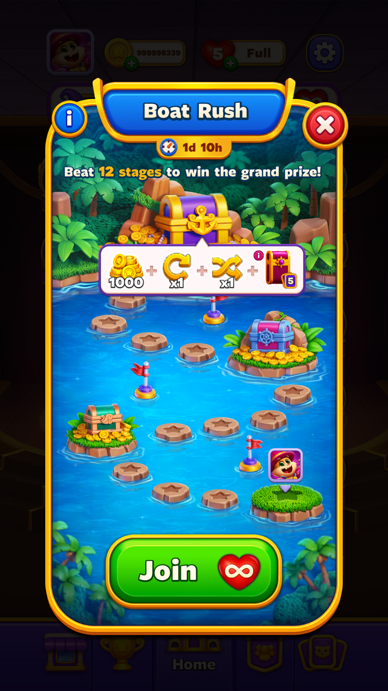
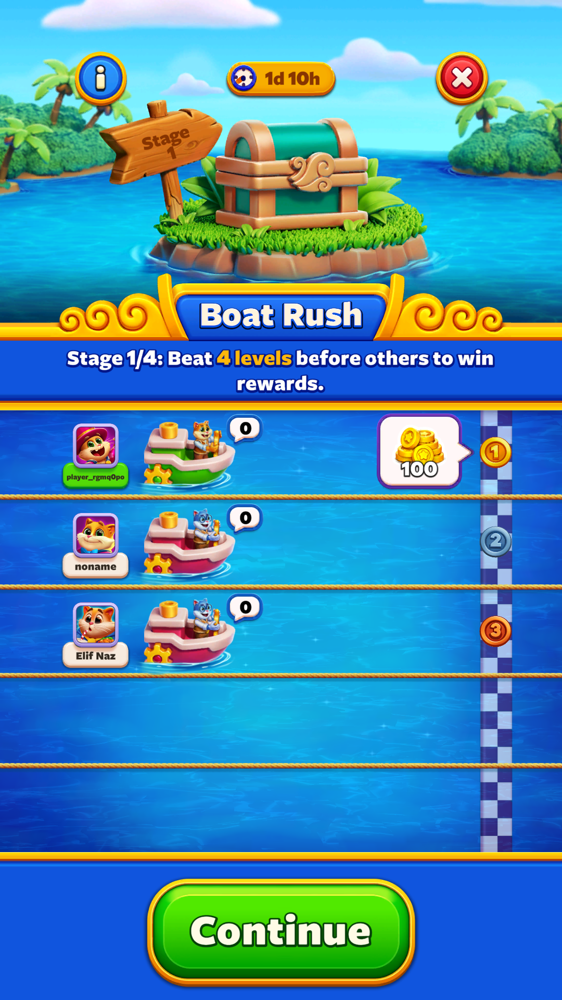
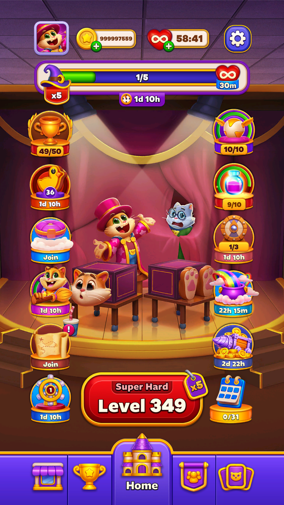

Boat Rush (Đua thuyền)
Nối các cuộc đua ngắn thành hành trình tier, tạo mục tiêu gần là thắng stage và mục tiêu xa là rương tier.
4 UC có nhánh liên quan tới case quan sát. Chưa có kết luận toàn bộ tính năng hoặc mọi UC đã pass. Xem bằng chứng và phần còn thiếu.
Thiết kế chi tiết
Tóm tắt thiết kế
Nối các cuộc đua ngắn thành hành trình tier, tạo mục tiêu gần là thắng stage và mục tiêu xa là rương tier.
Join race → thắng level để tiến → nhận kết quả stage → chuyển stage/tier.
Thiết kế đọc từ dossier và nguồn đã đối chiếu. Outcome là expected; câu ghi round2 là actual theo case, không phải full-feature pass.
10 ảnh chụp có nguồn · ảnh hiện ngay trong khung, bấm để mở ảnh gốc. Màu nhãn phân biệt playtest, lịch sử và ngữ cảnh.


Luồng người chơi từng bước
- 01
Vào cuộc đua
Người chơi và hệ thốngChọn tham gia race từ bản đồ.
Điều kiện / luật: Race có nhóm đối thủ và mốc đích riêng; không dùng tổng điểm tier làm điểm race.
Kết quả theo đặc tả: Bảng đua hiện đối thủ và tiến độ hiện tại.
Nguồn: BoatRush.json · use_cases/3
Ảnh lịch sử Popup Join Boat Rush (còn 1 ngày 10 giờ): "Beat 12 stages to win the grand prize!" — Grand Prize  1.000 coin + Undo + Shuffle + 5 gói thẻ; bản đồ đảo với rương ở các chặng; nút Join kèm biểu tượng mạng vô hạnẢnh chụp lịch sử · giữ snapshot và điều kiện trong chú thíchHồ sơ ảnh lịch sử
1.000 coin + Undo + Shuffle + 5 gói thẻ; bản đồ đảo với rương ở các chặng; nút Join kèm biểu tượng mạng vô hạnẢnh chụp lịch sử · giữ snapshot và điều kiện trong chú thíchHồ sơ ảnh lịch sử - 02
Chạm đích chặng
Người chơi và hệ thốngThắng level để tới MaxReachableScore.
Điều kiện / luật: WinnerCount quyết định số người thắng; phần thưởng stage khác rương tier.
Kết quả theo đặc tả: Kết quả race được xác định trước khi chuyển chặng.
Nguồn: BoatRush.json · use_cases/5 - 03
Hoàn thành tier
Người chơi và hệ thốngĐi hết các stage của tier.
Điều kiện / luật: TierReward có nhánh WithCollection; một stage thắng không đồng nghĩa xong tier.
Kết quả theo đặc tả: Nhận rương tier đúng điều kiện.
Nguồn: BoatRush.json · use_cases/7
Quy tắc cần nắm
| Quy tắc | Hành vi theo nguồn | Căn cứ |
|---|---|---|
| Vào cuộc đua | Race có nhóm đối thủ và mốc đích riêng; không dùng tổng điểm tier làm điểm race. | Nguồn: BoatRush.json · use_cases/3 |
| Chạm đích chặng | WinnerCount quyết định số người thắng; phần thưởng stage khác rương tier. | Nguồn: BoatRush.json · use_cases/5 |
| Hoàn thành tier | TierReward có nhánh WithCollection; một stage thắng không đồng nghĩa xong tier. | Nguồn: BoatRush.json · use_cases/7 |
Số liệu & phần thưởng
Phần thưởng
PHẦN THƯỞNG BOAT RUSH (cấu trúc, giá trị từ server)
| Mốc | Điều kiện | Phần thưởng |
|---|---|---|
| Tham gia sự kiện | Bấm Join lần đầu (IsEligibleForLimitlessLife) | Một đợt Unlimited Life (server) |
| Thắng một chặng | Rank nằm trong WinnerCount người đầu tiên chạm MaxReachableScore | BoatRushStageModel.WinnerRewards (server) |
| Thắng một chặng (bản Collection) | Như trên, khi Collection đang bật | BoatRushStageModel.WinnerRewardsWithCollection (server) |
| Hoàn thành một tier | Thắng hết StageCount chặng của tier | BoatRushTierModel.TierReward rương theo TierChestRewardId (server) |
| Hoàn thành một tier (bản Collection) | Như trên, khi Collection đang bật | BoatRushTierModel.TierRewardWithCollection (server) |
| Hoàn thành tier cuối | BoatRushTierModel.IsLastTier = true | Thưởng tier cuối sự kiện coi như hoàn tất (server) |
| Thua chặng | Bị vượt (Lost = 1) hoặc hết giờ (Timeout = 0) | Không có thưởng phải đua lại chặng đó |
TRẠNG THÁI SỰ KIỆN (BoatRushStateType)
| Mốc | Điều kiện | Phần thưởng |
|---|---|---|
| Disable = 0 | BoatRushConfigModel.IsEnabled = false | Không hiện gì |
| NoCache = 1 | Chưa có dữ liệu từ server | Chờ fetch |
| NotIntroduced = 2 | Chưa từng giới thiệu cho người chơi | Chờ giới thiệu |
| InsufficientLevel = 3 | Level < 90 (FirstLevelToShow) | Chưa mở khóa |
| AssetsAreNotReady = 4 | Bundle 'boat-rush' chưa tải xong | Đang tải asset |
| Join = 5 | Đủ điều kiện, chưa tham gia race | Nút lobby hiện nhãn 'Join' |
| InProgress = 6 | Đang trong một cuộc đua | Hiện Race popup và banner |
| LocalEnd = 7 | Hết giờ theo đồng hồ client | Chờ xác nhận server |
| RemoteEnd = 8 | Server báo isFinished | Mở nhận thưởng |
| Claimed = 9 | Đã nhận thưởng (isClaimed) | Kết thúc vòng đời sự kiện |
THÔNG SỐ HOẠT ẢNH (BoatRushAnimationConfig.asset)
| Mốc | Điều kiện | Phần thưởng |
|---|---|---|
| UserMoveDuration | Thuyền người chơi di chuyển | 1 4 giây |
| UserWinMoveDuration | Thuyền về đích | 1 giây |
| UserWinParticleTime | Hiệu ứng hạt khi thắng | 0 9 giây |
| UserWinPositionOffset | Độ lệch vị trí khi thắng | 15 |
| StageStarAppearDelay / Duration | Sao chặng xuất hiện | 0 5 giây trễ / 0 66 giây |
| IslandTickAppearDelay / Duration | Dấu tích trên đảo | 0 5 giây trễ / 0 3 giây |
| ProgressBarFullWidth | Chiều rộng thanh tiến độ | 3 85 |
| ProgressBarFillDuration | Thời gian đổ đầy thanh | 0 1 giây |
| MedalFlyToProgressBarDuration | Huy chương bay vào thanh | 1 giây |
| ClaimButtonAppearDelay / Duration | Nút nhận thưởng hiện | 1 giây trễ / 1 giây |
| ClaimButtonDisappearDelay / Duration | Nút nhận thưởng ẩn | 0 5 giây trễ / 1 giây |
| UnseenAnimationsDelay | Nhịp hoạt ảnh chưa xem | 0 3 giây |
| AvatarJumpDelay | Avatar nhảy | 0 26 giây |
THÔNG SỐ HOẠT ẢNH BANNER (BoatRushBannerAnimationConfig.asset)
| Mốc | Điều kiện | Phần thưởng |
|---|---|---|
| UserViewMoveDuration | Ô người chơi di chuyển | 0 4 giây |
| OpponentViewMoveDuration | Ô đối thủ di chuyển | 0 35 giây |
| ScaleInTarget | Tỉ lệ phóng to đích | (1 25 1 25 1) |
| ScaleInDuration / ScaleOutDuration | Phóng to / thu nhỏ | 0 3 giây / 0 25 giây |
| ParticleTime | Hiệu ứng hạt | 0 88 giây |
| UserRankScaleDuration | Đổi hạng người chơi | 0 19 giây |
| AnimationDelay | Trễ chung | 0 2 giây |
Phần thưởng theo code
| Ngữ cảnh | Phần thưởng | Evidence |
|---|---|---|
| Thắng một chặng (stage) | BoatRushStageModel.WinnerRewards (server) — bản Collection dùng WinnerRewardsWithCollection | BoatRushService.GetStageWinRewards; BoatRushStageModel |
| Hoàn thành một tier | BoatRushTierModel.TierReward / TierRewardWithCollection hiển thị theo TierChestRewardId | BoatRushService.TierCompletedReward; BoatRushService.GetTierCompleteRewards; BoatRushTierModel |
| Tham gia sự kiện | Một đợt Unlimited Life | BoatRushService.IsEligibleForLimitlessLife |
| Thua chặng | Không có phải đua lại chặng đó | BoatRushService.DidPlayerWin; EventSender.SendBoatRushLostEvent |
Số liệu chính
| Chỉ số | Giá trị | Nguồn |
|---|---|---|
| Level mở khóa Boat Rush | 90 (mặc định client) | BoatRushConfigModel.json FirstLevelToShow |
| Bật/tắt sự kiện | false (mặc định client) | BoatRushConfigModel.json IsEnabled |
| tournament_type mặc định | 1 | BoatRushConfigModel.json EventType |
| Mã HTTP báo sự kiện không chạy | 425 | BoatRushService.NotActiveStatusCode |
| Asset bundle của sự kiện | boat-rush | BoatRushService.Initialize _bundleId |
| Định dạng readable event id | br_{type}_{yyyyMMdd} | BoatRushService.GetReadableEventId |
| Số trạng thái sự kiện | 10 (Disable=0 … Claimed=9) | BoatRushStateType |
| Số lý do thua | 2 (Timeout=0, Lost=1) | BoatRushLostReason |
| Số nguồn mở Join/Race popup | 3 (FirstImpression=0, Force=1, LobbyButton=2) | BoatRushJoinPopUpImpressionSource |
| Số nguồn mở Info popup | 2 (JoinPopUp=0, RacePopUp=1) | BoatRushInfoPopUpImpressionSource |
| Loại nhiệm vụ Wheel of Fortune | BoatRushStageWin = 12 | WheelOfFortuneTaskType |
| Thời gian thuyền di chuyển | 1,4 giây | BoatRushAnimationConfig.UserMoveDuration |
| Thời gian thuyền về đích | 1 giây | BoatRushAnimationConfig.UserWinMoveDuration |
| Thời gian sao chặng xuất hiện | 0,66 giây | BoatRushAnimationConfig.StageStarAppearDuration |
| Thời gian dấu tích trên đảo | 0,3 giây | BoatRushAnimationConfig.IslandTickAppearDuration |
| Thời gian huy chương bay | 1 giây | BoatRushAnimationConfig.MedalFlyToProgressBarDuration |
| Chiều rộng thanh tiến độ | 3,85 | BoatRushAnimationConfig.ProgressBarFullWidth |
| Thời gian đổ đầy thanh tiến độ | 0,1 giây | BoatRushAnimationConfig.ProgressBarFillDuration |
| Hoạt ảnh banner người chơi | 0,4 giây | BoatRushBannerAnimationConfig.UserViewMoveDuration |
| Hoạt ảnh banner đối thủ | 0,35 giây | BoatRushBannerAnimationConfig.OpponentViewMoveDuration |
| Tỉ lệ phóng to banner | 1,25 | BoatRushBannerAnimationConfig.ScaleInTarget |
| Điểm cần để thắng một chặng | MaxReachableScore (server) | BoatRushRaceModel.MaxReachableScore |
| Số người được tính thắng mỗi chặng | WinnerCount (server) | BoatRushRaceModel.WinnerCount |
| Số đối thủ tối đa mỗi cuộc đua | MaxCompetitorCount (server) | BoatRushRaceModel.MaxCompetitorCount |
| Số chặng mỗi tier | StageCount (server) | BoatRushTierModel.StageCount |
Các quyết định trong luồng
| Tình huống | Cách xử lý theo nguồn | Căn cứ |
|---|---|---|
| Vì sao phải tách entry khỏi kết quả hậu level? | Round2 icon Home trả No Internet, nhưng sau thắng level 352 popup cached Stage 1/4 vẫn mở và Continue dẫn tới Duck; đó là hai nhánh khác nhau. | Nhận định thiết kế dựa trên cơ chế, không phải kết quả A/B. |
Nhánh lỗi và phục hồi
| Điều kiện | Hành vi mong đợi | Phạm vi đã kiểm |
|---|---|---|
| Gián đoạn hoặc kết thúc Boat Rush (đua thuyền) | Kết quả cache không chứng minh đã claim backend; cần kiểm raceId/tier và trạng thái trước grant. | Đọc source/UC; không thực hiện runtime mới trong lượt biên tập. |
Nhận định & vận dụng
Round2 icon Home trả No Internet, nhưng sau thắng level 352 popup cached Stage 1/4 vẫn mở và Continue dẫn tới Duck; đó là hai nhánh khác nhau.
Phân tích thiết kế, chưa đo retention/conversion.
Ảnh chụp bổ sung & nguồn bằng chứng
Mô tả trạng thái hoặc bước nhìn thấy trong ảnh và ngữ cảnh case; không nâng preview, cache hay lỗi thành grant, online hoặc full UC pass.
Không coi ảnh lịch sử hoặc ảnh ép bật bằng fixture là trạng thái production hiện tại.
Những ảnh còn lại của tính năng được giữ mở sẵn bên dưới. Các ảnh đã đặt ở phần tóm tắt hoặc bước liên quan không lặp lại trong gallery này.


 20 coin trước đó thuộc reward thắng, không gán cho Boat Rush.15/11/2026 · app 0.0.3129 · fixture offlineXem case
20 coin trước đó thuộc reward thắng, không gán cho Boat Rush.15/11/2026 · app 0.0.3129 · fixture offlineXem case
 30 phút mạng vô hạn — "Congratulations! Tap to Claim"Ảnh chụp lịch sử · giữ snapshot và điều kiện trong chú thíchHồ sơ ảnh lịch sử
30 phút mạng vô hạn — "Congratulations! Tap to Claim"Ảnh chụp lịch sử · giữ snapshot và điều kiện trong chú thíchHồ sơ ảnh lịch sử

100 coin; rương chặng ở trên, vạch đích ca-rô bên phảiẢnh chụp lịch sử · giữ snapshot và điều kiện trong chú thíchHồ sơ ảnh lịch sử

Case đầy đủ: expected, actual và ledger · Ảnh lịch sử và tài nguyên gốc
Tổng quan & điều kiện mở
Mô tả
- Boat Rush là sự kiện đua thuyền chia thành nhiều tầng (tier), mỗi tier gồm nhiều chặng (stage).
- Người chơi bấm Join để vào một 'race' — bảng nhỏ gồm vài đối thủ người thật và bot, giới hạn bởi MaxCompetitorCount.
- Mỗi level thắng đẩy thuyền tiến một bước; ai chạm MaxReachableScore trước thì thắng chặng.
- Chỉ WinnerCount người về đích đầu tiên được tính là thắng và nhận WinnerRewards.
- Thua chặng vì bị vượt hoặc hết giờ thì phải đua lại chặng đó, nhưng tiến độ tier và stage đã đạt không bị mất.
- Hoàn thành hết các chặng của một tier thì nhận thêm rương tier (TierReward), hiển thị theo TierChestRewardId.
- Bản đồ hải trình có nhiều biến thể đường đi (PathVariantIndex) và các 'đảo' đánh dấu chặng đã qua.
- Người tham gia được một đợt Unlimited Life, cờ hasUsedLimitlessLife đồng bộ giữa client và server.
- Sự kiện có asset bundle riêng 'boat-rush'; chưa tải xong thì trạng thái là AssetsAreNotReady.
- Thắng chặng còn tính vào nhiệm vụ BoatRushStageWin (12) của Wheel of Fortune.
Mở khóa & điểm vào
BoatRushStateService.GetEventState(): Disable(0) nếu BoatRushConfigModel.IsEnabled == false; NoCache(1); NotIntroduced(2); InsufficientLevel(3) khi level < FirstLevelToShow; AssetsAreNotReady(4) khi bundle 'boat-rush' chưa tải; Join(5); InProgress(6); LocalEnd(7); RemoteEnd(8); Claimed(9). Client default: IsEnabled=false, EventType=1, FirstLevelToShow=90 (Resources/defaultconfigs/BoatRushConfigModel.json).
Điểm vào:
- Nút lobby Boat Rush (ShouldShowLobbyIcon / IsLobbyIconVisible), nhãn đổi thành 'Join' khi chưa tham gia (ShouldShowJoinTextOnLobbyButton)
- Banner Boat Rush trên lobby (ShouldShowBoatRushBanner)
- Join popup (ShouldShowJoinPopUp / ShouldOpenJoinPopUpAutomaticallyOnLobbyReturn), có thể mở lại sau khi claim (ShouldShowJoinPopUpAfterClaim)
- Race popup — màn hình đường đua (ShouldShowEventPopUp / ShouldShowRacePopUp / ShouldOpenRacePopUpAutomaticallyOnLobbyReturn)
- Info popup từ Join popup hoặc Race popup (BoatRushInfoPopUpImpressionSource JoinPopUp/RacePopUp, reason InfoButton/Force)
- Tutorial lần đầu (analytics boat_rush_tutorial_impression)
Các sự kiện liên quan
Luồng chi tiết theo nguồn
Cách hoạt động
- Initialize() đặt _bundleId = 'boat-rush'; NeedToDownloadAssets() và CheckAndResolveAssetDependency() tải bundle qua AssetManager.
- BoatRushStateService.GetEventState() xét lần lượt Disable (0), NoCache (1), NotIntroduced (2), InsufficientLevel (3, level < 90), AssetsAreNotReady (4), rồi Join (5) / InProgress (6).
- TryFetchCurrentEvent() gọi GetLeaderboardRequest(GetBoatRushLeaderboardRequestModel{tournament_type, leaderboard_id, score}) tới /v1/get-boat-rush-leaderboard.
- TryProcessEventData(response) kiểm mã 425 rồi UpdateCache() chia thành UpdateEventCache, UpdateRaceCache và UpdateTierCache; CacheProfileImages() nạp avatar.
- GetReadableEventId() dựng id analytics dạng 'br_{type}_{start:yyyyMMdd}' (fallback 'br_unknown_data').
- Bấm Join: TryJoinRace() gửi JoinBoatRushRequestModel{tournament_type} tới /v1/join-boat-rush-leaderboard, bắn boat_rush_joined kèm source.
- SetShouldShowBoatRushAfterJoin(true) khiến Race popup tự mở ngay sau khi Join.
- Thắng level: TryIncreaseScore() (nếu CanIncreaseScore()) gọi IncreaseScore() tăng Score và đặt IsSynced = false.
- IsOneWinRemainedForFinish() bật thông báo 'chỉ còn 1 thắng nữa'; IsPlayerReachedMaxScore() so với MaxReachableScore của race.
- Về đích: DidPlayerWin() kiểm GetPlayerRank() có nằm trong WinnerCount không; thắng thì bắn boat_rush_race_won.
- TryClaimStage() gửi ClaimBoatRushRequestModel{tournament_type, leaderboard_id} tới /v1/claim-boat-rush-leaderboard; GetStageWinRewards() trả WinnerRewards.
- Nếu IsTierCompleted() thì cộng thêm GetTierCompleteRewards() từ BoatRushTierModel.TierReward; IsLastTier đánh dấu sự kiện hoàn tất.
- Thua: bắn boat_rush_race_lost kèm reason (Timeout hoặc Lost) và current_race_rank, rồi ResetRaceCache() cho cuộc đua mới.
- Hoạt ảnh chạy từ trạng thái LastSeen: thuyền di chuyển 1,4 giây, về đích 1 giây, sao chặng hiện 0,66 giây, huy chương bay vào thanh tiến độ 1 giây.
- Kết thúc: IsEventTimeOut()/IsEventFinished() chuyển sang LocalEnd (7) hoặc RemoteEnd (8), IsEventClaimed() sang Claimed (9); ScheduleLeaderboardFetchOnTimerEnd() tự fetch lại khi đồng hồ về 0.
Luồng chi tiết theo code
Initialize() đặt _bundleId = 'boat-rush'. InitializeData/IntervalUpdate → BoatRushStateService.ShouldSendGetRequest() → TryFetchCurrentEvent()/SendGetRequest() → GetEvent() gọi BoatRushRemoteService.GetLeaderboardRequest(GetBoatRushLeaderboardRequestModel{tournament_type, leaderboard_id, score}) tới getBoatRush (/v1/get-boat-rush-leaderboard). Response BoatRushResponse{tournamentID, tournamentType, startTime, finishTime, hasUsedLimitlessLife, isClaimed, isFinished, currentTier, currentStage, eventLeaderboard, tiersData}. TryProcessEventData(response) kiểm tra mã lỗi (NotActiveStatusCode = 425) rồi UpdateCache(response) chia thành UpdateEventCache (BoatRushEventCacheModel), UpdateRaceCache (BoatRushRaceModel: LeaderboardId, WinnerCount, MaxCompetitorCount, MaxReachableScore, Score, PlayerLeaderboard…) và UpdateTierCache (Dictionary<int, BoatRushTierModel>). CacheProfileImages() nạp avatar. Join: TryJoinRace() gọi SendJoinRequest(JoinBoatRushRequestModel{tournament_type}) tới joinBoatRush (/v1/join-boat-rush-leaderboard); analytics boat_rush_joined kèm source. Trong đua: thắng level → TryIncreaseScore() (nếu BoatRushStateService.CanIncreaseScore()) → BoatRushDataService.IncreaseScore(), IsSynced = false; IsPlayerReachedMaxScore() so với MaxReachableScore; IsOneWinRemainedForFinish() cho UI 'chỉ còn 1 thắng nữa'. Thua chặng: DidPlayerWin() false → analytics boat_rush_race_lost với BoatRushLostReason (Timeout(0) khi hết giờ, Lost(1) khi bị đối thủ vượt). Claim: TryClaimStage() (Task<bool>) gọi SendClaimRequest(ClaimBoatRushRequestModel{tournament_type, leaderboard_id}) tới claimBoatRush (/v1/claim-boat-rush-leaderboard); GetStageWinRewards() lấy BoatRushStageModel.WinnerRewards (hoặc WinnerRewardsWithCollection); nếu IsTierCompleted() thì thêm GetTierCompleteRewards()/TierCompletedReward() từ BoatRushTierModel.TierReward. Sau khi claim, ShouldShowJoinPopUpAfterClaim() mở lại Join popup cho chặng kế. Tiến trình: GetTierIndex(), GetCurrentStageIndex(), GetCurrentStageIndexInTier(), GetMaxStageIndexInTier(), GetTotalStageCount(), GetNextChestIndex(), IsPathCompleted(), GetPathVariantIndex(). Kết thúc: IsEventTimeOut()/IsEventFinished() → LocalEnd(7)/RemoteEnd(8); IsEventClaimed() → Claimed(9); SetEventCompletedPopUpSeen() đánh dấu đã xem popup hoàn thành. ScheduleLeaderboardFetchOnTimerEnd() tự fetch lại khi đồng hồ hết.
Use case (16)
Đặc tả UC mô tả hành vi theo nguồn. Kết quả mong đợi không phải kết quả đã chạy; case quan sát được liên kết riêng ở từng UC.
Bấm vào từng use case để mở. Mở/đóng tất cả
UC-01 Kiểm tra trạng thái và hiện icon/banner
Chưa có case trực tiếp trong hai lượt review 15–16/11.
Các bước- BoatRushStateService.GetConfig() lấy BoatRushConfigModel
- GetEventState() trả Disable(0)/NoCache(1)/NotIntroduced(2)/InsufficientLevel(3)/AssetsAreNotReady(4)/Join(5)/InProgress(6)/LocalEnd(7)/RemoteEnd(8)/Claimed(9)
- UpdateState() phát signal khi state đổi
- BoatRushService.ShouldShowLobbyIcon() / ShouldShowJoinTextOnLobbyButton() / BoatRushStateService.ShouldShowBoatRushBanner()
- GetLobbyButtonViewModel() dựng BoatRushLobbyButtonViewModel
| Actor | System |
|---|---|
| Trigger | Vào lobby / IntervalUpdate |
| Điều kiện | RemoteConfigs sẵn sàng |
| Kết quả mong đợi theo nguồn | Icon + banner hiện/ẩn, nhãn Join khi chưa tham gia |
| Quy tắc / số liệu | Client default: IsEnabled=false, FirstLevelToShow=90, EventType=1 |
| Bằng chứng đặc tả | BoatRushStateService.GetEventState; BoatRushStateService.UpdateState; BoatRushService.ShouldShowLobbyIcon; BoatRushService.ShouldShowJoinTextOnLobbyButton; BoatRushService.GetLobbyButtonViewModel |
UC-02 Tải asset bundle 'boat-rush'
Chưa có case trực tiếp trong hai lượt review 15–16/11.
Các bước- BoatRushService.Initialize() đặt _bundleId = 'boat-rush'
- NeedToDownloadAssets() / BoatRushStateService.ShouldDownloadAssets()
- CheckAndResolveAssetDependency() tải bất đồng bộ qua AssetManager
| Actor | System |
|---|---|
| Trigger | Initialize / trước khi mở popup |
| Điều kiện | Sự kiện bật |
| Kết quả mong đợi theo nguồn | Trong lúc tải, state = AssetsAreNotReady(4) |
| Quy tắc / số liệu | - |
| Bằng chứng đặc tả | BoatRushService.Initialize; BoatRushService.NeedToDownloadAssets; BoatRushService.CheckAndResolveAssetDependency; BoatRushStateService.ShouldDownloadAssets |
UC-03 Lấy dữ liệu sự kiện, race và tier
Chưa có case trực tiếp trong hai lượt review 15–16/11.
Các bước- BoatRushService.TryFetchCurrentEvent() → SendGetRequest() → GetEvent()
- BoatRushRemoteService.GetLeaderboardRequest(GetBoatRushLeaderboardRequestModel{tournament_type, leaderboard_id, score}) tới getBoatRush (/v1/get-boat-rush-leaderboard)
- TryProcessEventData(response): nếu status = NotActiveStatusCode (425) thì coi như sự kiện không chạy
- UpdateCache(response) → UpdateEventCache / UpdateRaceCache / UpdateTierCache
- CacheProfileImages() nạp avatar qua ProfileSpriteCacheService
- GetReadableEventId() dựng id 'br_{type}_{start:yyyyMMdd}' (fallback 'br_unknown_data')
| Actor | Server |
|---|---|
| Trigger | InitializeData / IntervalUpdate khi ShouldSendGetRequest() |
| Điều kiện | Sự kiện bật |
| Kết quả mong đợi theo nguồn | Cache 3 tầng: event (tier/stage hiện tại), race (bảng đua hiện tại), tiers (bảng thưởng) |
| Quy tắc / số liệu | NotActiveStatusCode = 425 (const BoatRushService) |
| Bằng chứng đặc tả | BoatRushService.TryFetchCurrentEvent; BoatRushService.GetEvent; BoatRushRemoteService.GetLeaderboardRequest; BoatRushService.TryProcessEventData; BoatRushService.UpdateCache; BoatRushService.UpdateEventCache; BoatRushService.UpdateRaceCache; BoatRushService.UpdateTierCache; BoatRushService.GetReadableEventId |
UC-04 Tham gia một cuộc đua (race)
Chưa có case trực tiếp trong hai lượt review 15–16/11.
Các bước- BoatRushService.TryJoinRace() (Task<bool>)
- BoatRushRemoteService.SendJoinRequest(JoinBoatRushRequestModel{tournament_type}) tới joinBoatRush (/v1/join-boat-rush-leaderboard)
- BoatRushDataService.SetShouldShowBoatRushAfterJoin(true) → tự mở Race popup sau khi Join
- MarkJoinPopUpIntroduced()
- EventSender.SendBoatRushJoinedEvent(source) (boat_rush_joined) với tournament_id, race_id, readable_event_id, tier, step, score, source
| Actor | Player |
|---|---|
| Trigger | Bấm Join ở Join popup hoặc nút lobby |
| Điều kiện | State Join(5) |
| Kết quả mong đợi theo nguồn | Người chơi vào bảng đua với MaxCompetitorCount đối thủ, state InProgress(6) |
| Quy tắc / số liệu | BoatRushJoinPopUpImpressionSource: FirstImpression(0), Force(1), LobbyButton(2) |
| Bằng chứng đặc tả | BoatRushService.TryJoinRace; BoatRushRemoteService.SendJoinRequest; BoatRushDataService.SetShouldShowBoatRushAfterJoin; BoatRushService.MarkJoinPopUpIntroduced; EventSender.SendBoatRushJoinedEvent |

UC-05 Thắng level → thuyền tiến lên
Chưa có case trực tiếp trong hai lượt review 15–16/11.
Các bước- BoatRushService.TryIncreaseScore()
- BoatRushDataService.IncreaseScore() tăng BoatRushRaceModel.Score; IsSynced = false
- IsScoreIncreasedSinceLastSeen() bật animation khi về lobby; UpdateLastSeenBanner()
- IsPlayerReachedMaxScore() so với MaxReachableScore của race
- IsOneWinRemainedForFinish() bật thông báo 'còn 1 thắng nữa'
| Actor | Player |
|---|---|
| Trigger | Hoàn thành level |
| Điều kiện | BoatRushStateService.CanIncreaseScore() == true |
| Kết quả mong đợi theo nguồn | Thuyền di chuyển trên đường đua, có thể vượt đối thủ |
| Quy tắc / số liệu | MaxReachableScore và WinnerCount do server gửi trong BoatRushRaceModel |
| Bằng chứng đặc tả | BoatRushService.TryIncreaseScore; BoatRushDataService.IncreaseScore; BoatRushService.IsPlayerReachedMaxScore; BoatRushService.IsOneWinRemainedForFinish; BoatRushService.IsScoreIncreasedSinceLastSeen |
UC-06 Thắng một chặng và nhận thưởng
Chưa có case trực tiếp trong hai lượt review 15–16/11.
Các bước- BoatRushService.DidPlayerWin() / GetWinnerCount() / GetPlayerRank()
- TryClaimStage() (Task<bool>) → BoatRushRemoteService.SendClaimRequest(ClaimBoatRushRequestModel{tournament_type, leaderboard_id}) tới claimBoatRush (/v1/claim-boat-rush-leaderboard)
- GetStageWinRewards() lấy BoatRushStageModel.WinnerRewards (hoặc WinnerRewardsWithCollection khi Collection bật)
- GetNextChestIndex() xác định rương kế trên bản đồ
- EventSender: boat_rush_race_won
| Actor | Player |
|---|---|
| Trigger | Chạm MaxReachableScore trong nhóm WinnerCount đầu tiên |
| Điều kiện | DidPlayerWin() == true |
| Kết quả mong đợi theo nguồn | Nhận thưởng chặng, tiến sang chặng kế trong tier |
| Quy tắc / số liệu | GetPlayerRank() phải nằm trong WinnerCount mới được tính thắng |
| Bằng chứng đặc tả | BoatRushService.DidPlayerWin; BoatRushService.GetWinnerCount; BoatRushService.GetPlayerRank; BoatRushService.TryClaimStage; BoatRushService.GetStageWinRewards; BoatRushService.GetNextChestIndex; BoatRushRemoteService.SendClaimRequest |
UC-07 Thua chặng (bị vượt hoặc hết giờ)
Chưa có case trực tiếp trong hai lượt review 15–16/11.
Các bước- BoatRushService.DidPlayerWin() trả false
- EventSender.SendBoatRushLostEvent(BoatRushLostReason, leaderboardId) (boat_rush_race_lost) với reason, current_race_rank, tier, step, score
- BoatRushLostReason: Timeout(0) khi hết thời gian, Lost(1) khi bị vượt
- BoatRushDataService.ResetRaceCache() cho cuộc đua mới
| Actor | Player |
|---|---|
| Trigger | Hết giờ hoặc đối thủ về đích đủ WinnerCount |
| Điều kiện | - |
| Kết quả mong đợi theo nguồn | Không tiến chặng, phải Join lại cuộc đua mới ở cùng chặng |
| Quy tắc / số liệu | Tiến độ tier/stage KHÔNG bị mất — chỉ chặng hiện tại phải làm lại |
| Bằng chứng đặc tả | BoatRushService.DidPlayerWin; EventSender.SendBoatRushLostEvent; BoatRushDataService.ResetRaceCache |
UC-08 Hoàn thành một tier và nhận rương tier
Chưa có case trực tiếp trong hai lượt review 15–16/11.
Các bước- BoatRushService.IsTierCompleted() / IsInLastStage() / GetMaxStageIndexInTier()
- TierCompletedReward() / GetTierCompleteRewards() lấy BoatRushTierModel.TierReward (hoặc TierRewardWithCollection)
- BoatRushTierModel.TierChestRewardId xác định loại rương hiển thị
- BoatRushDataService.UpdateLastSeenTierIndex(); IsPathCompleted() để chạy animation hoàn thành đường
- Nếu BoatRushTierModel.IsLastTier thì sự kiện coi như hoàn tất
| Actor | Player |
|---|---|
| Trigger | Thắng chặng cuối của tier |
| Điều kiện | IsTierCompleted() == true |
| Kết quả mong đợi theo nguồn | Nhận rương lớn của tier, chuyển sang tier kế với đường đua mới |
| Quy tắc / số liệu | Mỗi tier có StageCount chặng và danh sách BoatRushStageModel riêng |
| Bằng chứng đặc tả | BoatRushService.IsTierCompleted; BoatRushService.TierCompletedReward; BoatRushService.GetTierCompleteRewards; BoatRushService.IsInLastStage; BoatRushDataService.UpdateLastSeenTierIndex; BoatRushService.IsPathCompleted |
UC-09 Hiển thị bản đồ đường đua và tiến độ
Chưa có case trực tiếp trong hai lượt review 15–16/11.
Các bước- GetRaceViewModel() / GetProgressBarViewModel() dựng dữ liệu UI
- GetTierIndex(), GetCurrentStageIndex(), GetCurrentStageIndexInTier(), GetTotalStageCount(), GetLocalMaxStageCount()
- GetPathVariantIndex() chọn biến thể hình dạng đường đua
- Animation theo BoatRushAnimationConfig: UserMoveDuration 1.4s, UserWinMoveDuration 1s, StageStarAppearDuration 0.66s, IslandTickAppearDuration 0.3s, MedalFlyToProgressBarDuration 1s, ProgressBarFillDuration 0.1s (ProgressBarFullWidth 3.85)
| Actor | Player |
|---|---|
| Trigger | Mở Race popup |
| Điều kiện | Có cache |
| Kết quả mong đợi theo nguồn | Bản đồ hải trình với các đảo/ngôi sao đánh dấu chặng đã qua |
| Quy tắc / số liệu | GetLastSeenStage/GetLastSeenLocalStageIndex/GetLastSeenTierIndex dùng để chạy animation từ trạng thái cũ |
| Bằng chứng đặc tả | BoatRushService.GetRaceViewModel; BoatRushService.GetProgressBarViewModel; BoatRushService.GetPathVariantIndex; BoatRushService.GetCurrentStageIndexInTier; BoatRushService.GetLastSeenStage; BoatRushService.GetLocalMaxStageCount |
UC-10 Xem bảng đối thủ trong cuộc đua
Có bằng chứng một số nhánh; chưa full UC pass.
16/11/2026 · Post-win mở được cached Finished race và info dù direct entry trước đó bị mạngCác bước- GetLeaderboardViewModel() / GetLastSeenLeaderboardViewModel() / GetLastSeenBannerViewModels() dựng BoatRushLeaderboardPlayerViewModel từ BoatRushUserModel{PublicID, Nickname, Score, Rank, IsMe, IsBot, ImageUrl, ImageID, NameStyleId, FrameId}
- Animation banner theo BoatRushBannerAnimationConfig: UserViewMoveDuration 0.4s, OpponentViewMoveDuration 0.35s, ScaleInTarget 1.25, ParticleTime 0.88s
- UpdateLastSeenBanner() lưu trạng thái đã xem
| Actor | Player |
|---|---|
| Trigger | Mở Race popup / xem banner |
| Điều kiện | Có PlayerLeaderboard |
| Kết quả mong đợi theo nguồn | Người chơi thấy vị trí của mình so với đối thủ |
| Quy tắc / số liệu | MaxCompetitorCount giới hạn số đối thủ mỗi cuộc đua |
| Bằng chứng đặc tả | BoatRushService.GetLeaderboardViewModel; BoatRushService.GetLastSeenBannerViewModels; BoatRushService.UpdateLastSeenBanner; BoatRushRaceModel.MaxCompetitorCount |
UC-11 Popup tự mở theo ngữ cảnh
Có bằng chứng một số nhánh; chưa full UC pass.
15/11/2026 · Queue BoatRush đã hết hạn sau thắng levelCác bước- ShouldOpenJoinPopUpAutomaticallyOnLobbyReturn() / ShouldOpenRacePopUpAutomaticallyOnLobbyReturn()
- BoatRushDataService.ShouldShowBoatRushAfterJoin() mở Race popup ngay sau Join
- ShouldShowJoinPopUpAfterClaim() / SetShouldShowJoinPopUpAfterClaim(bool) mở lại Join popup sau khi nhận thưởng chặng
- IsRacePopUpFirstShowForEvent() / IsRacePopUpFirstShowForStage() / IsJoinPopUpFirstShow() để chọn layout lần đầu
- MarkEventPopUpIntroducedForEvent() / MarkEventPopUpIntroducedForStage(bool) / MarkForceShowedJoinPopUpThisSession(bool)
- EventSender.SendBoatRushRacePopUpImpression(source) (boat_rush_race_screen_impression) và SendBoatRushJoinPopUpImpression(source) (boat_rush_popup_impression)
| Actor | System |
|---|---|
| Trigger | Về lobby / sau khi Join / sau khi claim |
| Điều kiện | State phù hợp |
| Kết quả mong đợi theo nguồn | Vòng lặp Join → đua → claim → Join lại được đẩy liên tục |
| Quy tắc / số liệu | BoatRushPopUpImpressionSource / BoatRushJoinPopUpImpressionSource: FirstImpression(0), Force(1), LobbyButton(2) |
| Bằng chứng đặc tả | BoatRushService.ShouldOpenJoinPopUpAutomaticallyOnLobbyReturn; BoatRushService.ShouldOpenRacePopUpAutomaticallyOnLobbyReturn; BoatRushDataService.ShouldShowBoatRushAfterJoin; BoatRushService.ShouldShowJoinPopUpAfterClaim; BoatRushService.IsRacePopUpFirstShowForStage; BoatRushService.MarkEventPopUpIntroducedForStage |
UC-12 Popup thông tin và tutorial
Có bằng chứng một số nhánh; chưa full UC pass.
16/11/2026 · Post-win mở được cached Finished race và info dù direct entry trước đó bị mạngCác bước- Mở info popup với BoatRushInfoPopUpImpressionSource: JoinPopUp(0) hoặc RacePopUp(1)
- BoatRushInfoPopUpImpressionReason: InfoButton(0) khi bấm nút, Force(1) khi tự bật
- EventSender: boat_rush_tutorial_impression cho lần đầu
| Actor | Player |
|---|---|
| Trigger | Bấm info hoặc lần đầu vào sự kiện |
| Điều kiện | - |
| Kết quả mong đợi theo nguồn | Người chơi hiểu luật tier/stage/race |
| Quy tắc / số liệu | - |
| Bằng chứng đặc tả | BoatRushInfoPopUpImpressionSource; BoatRushInfoPopUpImpressionReason; EventSender (boat_rush_tutorial_impression) |

UC-13 Đặc quyền Unlimited Life một lần
Chưa có case trực tiếp trong hai lượt review 15–16/11.
Các bước- BoatRushService.IsEligibleForLimitlessLife() / BoatRushDataService.HasUsedLimitlessLife()
- Server trả trường hasUsedLimitlessLife trong BoatRushResponse để đồng bộ
| Actor | Player |
|---|---|
| Trigger | Tham gia sự kiện |
| Điều kiện | Chưa dùng |
| Kết quả mong đợi theo nguồn | Người chơi được một đợt life vô hạn để đua |
| Quy tắc / số liệu | Cờ lưu cả ở cache client và server |
| Bằng chứng đặc tả | BoatRushService.IsEligibleForLimitlessLife; BoatRushDataService.HasUsedLimitlessLife; BoatRushEventCacheModel.HasUsedLimitlessLife |
UC-14 Kết thúc sự kiện
Chưa có case trực tiếp trong hai lượt review 15–16/11.
Các bước- GetRemainingSeconds() / GetEndDate() (ConvertToUtc) từ BoatRushEventCacheModel.StartTime/FinishTime
- IsEventTimeOut() / IsEventFinished() / BoatRushStateService.IsRemoteEnd() → LocalEnd(7)/RemoteEnd(8)
- IsEventClaimed() / BoatRushStateService.IsClaimed() → Claimed(9)
- SetEventCompletedPopUpSeen() / IsEventCompletedPopUpSeen() để chỉ hiện popup hoàn thành 1 lần
- ScheduleLeaderboardFetchOnTimerEnd() tự fetch lại khi đồng hồ về 0
| Actor | System |
|---|---|
| Trigger | Hết giờ hoặc server báo isFinished |
| Điều kiện | - |
| Kết quả mong đợi theo nguồn | Sự kiện đóng, chờ đợt mới |
| Quy tắc / số liệu | BoatRushDataService.ResetEventCache()/ResetTierCache() khi tournamentID đổi |
| Bằng chứng đặc tả | BoatRushService.IsEventTimeOut; BoatRushService.IsEventFinished; BoatRushService.IsEventClaimed; BoatRushService.SetEventCompletedPopUpSeen; BoatRushService.ScheduleLeaderboardFetchOnTimerEnd; BoatRushDataService.ResetEventCache |
UC-15 Đóng góp nhiệm vụ cho Wheel of Fortune
Chưa có case trực tiếp trong hai lượt review 15–16/11.
Các bước- BoatRushService.IsAvailableForWheelOfFortune() / BoatRushStateService.IsAvailableForWheelOfFortune()
- WheelOfFortuneService được inject vào .ctor; thắng chặng tính vào WheelOfFortuneTaskType.BoatRushStageWin(12)
- Nếu sự kiện không khả dụng, WOF gọi TryResetTaskProgress(BoatRushStageWin)
| Actor | System |
|---|---|
| Trigger | Thắng một chặng Boat Rush |
| Điều kiện | WOF bật |
| Kết quả mong đợi theo nguồn | Boat Rush là nguồn nhiệm vụ cho WOF |
| Quy tắc / số liệu | - |
| Bằng chứng đặc tả | BoatRushService.IsAvailableForWheelOfFortune; BoatRushStateService.IsAvailableForWheelOfFortune; BoatRushService..ctor (WheelOfFortuneService) |
UC-16 Offline / lỗi request và đồng bộ
Có bằng chứng một số nhánh; chưa full UC pass.
16/11/2026 · ChạmBoatFinishedởHomebịNo InternetCác bước- IsSynced = false giữ dấu điểm chưa đẩy; request Get kế gửi lại trường score
- TryProcessEventData trả false khi lỗi; state giữ NoCache(1)
- BoatRushDataService.GetSyncName() = 'BoatRushSyncModel'; SerializeModelForSync() gửi BoatRushModel{IsEventIntroducedEverInLifeTime, CacheModel}
- SyncLastSeen() / BoatRushService.SyncLastSeen() đồng bộ các chỉ số LastSeen*
- OverwriteModelFromSync(data); DataSynced(); LateUpdate() lưu khi dirty; DeleteData() khi reset
| Actor | System |
|---|---|
| Trigger | Request thất bại hoặc sync |
| Điều kiện | - |
| Kết quả mong đợi theo nguồn | Tiến độ tier/stage giữ nguyên khi đổi máy hoặc mất mạng tạm thời |
| Quy tắc / số liệu | - |
| Bằng chứng đặc tả | BoatRushService.IsSynced; BoatRushService.TryProcessEventData; BoatRushDataService.GetSyncName; BoatRushDataService.SerializeModelForSync; BoatRushService.SyncLastSeen; BoatRushDataService.DeleteData |
Playtest & phần chưa xác minh
Case ghi lại một chuỗi thao tác và phạm vi quan sát. Các bước chưa chạy và hợp đồng server vẫn giữ trạng thái riêng.
16/11/2026 Post-win mở được cached Finished race và info dù direct entry trước đó bị mạngMS-R16B-BOAT02
16/11/2026 · build 0.0.3129 ARM64 · fixture offline · quan sát nhánh
Điều kiện: Root thực hiện lượt level 352 sau toàn bộ nhánh noncore; build 0.0.3129ARM64, offline_existing_fixture, gameplayUID cô lập mạng. Dùng một Undo và một Extra Bottle từ kho fixture lớn; không ghi prefs.
- So với entry066 ở Home chỉ tạo No Internet toast, sau thắng Continue094 mở Boat095.
- Đọc Finished, Stage1/4, own boat score1 và các dòng đối thủ/claimed-place labels.
- MởInfo và chụp fullhelp097; Tap to Continue đóng help.
- Boat Continue chuyển sang Duck098; không mở event reward chest.
Mong đợi
Ghi nhận đúng nhánh thao tác và kết quả UI/ledger của một lượt fixture; không nâng thành full feature/UC pass.
Đã quan sát
095 có Finished và Stage1/4/Race is over, own boat1; có hai dòng đối thủ ghi1st/2nd place claimed. 097 help nói beat levels, finish race, advance stages, rewards. 098 chuyển Duck result. Đây là branch post-win khác direct entry066, không phải Home095.
Giới hạn: Chỉ cached result/Info và queue advancement. Không nhận thưởng Boat, join/fetch race mới, stage progress grant, unlimited life hoặc online result ack. Những claimed-place labels thuộc UI đối thủ, không là claim của tài khoản này.
UC chỉ liên quan, chưa coi là thực thi: UC-03 UC-07 UC-11 UC-14 UC-16
Phạm vi từng nhánh UC
- UC-10: Xem các dòng đối thủ và ownscore trên Finished race snapshot.
- UC-12: ManualInfo/help render và đóng; không first-intro trigger.
Trước thao tác: ledger đầy đủ · Sau thao tác: ledger đầy đủ
16/11/2026 ChạmBoatFinishedởHomebịNo InternetMS-R16B-BOAT01
16/11/2026 · build 0.0.3129 ARM64 · fixture offline · quan sát nhánh
Điều kiện: Build0.0.3129ARM64 đã xác minh hash bởi root; Home352, offline_existing_fixture và gameplayUID cô lập mạng. Root thao tác; tác giả case chỉ đọc ảnh/safe ledger.
- ĐóngDuckpopup bằngX để vềHome.
- ChạmBoatRushFinishedicon theo rootaction rồi chụp066.
Mong đợi
Networkgatekhông bị nhầm thành event đãmở/claim.
Đã quan sát
066vẫnHome352, iconBoatFinishedhạng4 vàtoastNo InternetConnection. Không cóBoatpopup/raceviewmới.
Giới hạn: Chỉ entrygate. Khôngxem thứhạng4 trênlobbyicon làđã xemtoàn race/đã claim; chưa fetch/join/reward/lives. Before065làDuckresult, endpointsbao gồmcloseDuckvàentryattempt.
UC chỉ liên quan, chưa coi là thực thi: UC-01 UC-09 UC-14
Phạm vi từng nhánh UC
- UC-16: Chỉ HomeentryattemptNo Internet; chưaeventofflinefallback/retry/sync.
Trước thao tác: ledger đầy đủ · Sau thao tác: ledger đầy đủ
15/11/2026 Queue BoatRush đã hết hạn sau thắng levelMS-R15-CORE08
15/11/2026 · build 0.0.3129 ARM64 · fixture offline · quan sát nhánh
Điều kiện: App 0.0.3129 ARM64, UID offline, tài nguyên fixture có sẵn; level 351 rồi 352. Nguồn code 0.0.3063 được phân biệt riêng.
- Continue ở popup thắng351
- Continue ở BoatRush
Mong đợi
Ghi thứ tự popup và thưởng thực nhận.
Đã quan sát
Sau thưởng20 coin của win, BoatRush Finished tự mở, Stage1/4. Continue chuyển sang Duck settlement; CORE22→CORE23 coin và booster không đổi. Delta20 coin CORE21→CORE22 thuộc win, không gán cho BoatRush.
Giới hạn: Không khẳng định rank mới hoặc server cập nhật. Kết quả các đối thủ là cache; nhánh race active chưa chạy.
20 coin trước đó thuộc reward thắng, không gán cho Boat Rush.15/11/2026 · 0.0.3129 · fixture offline · CORE22_win_continueMô tả trạng thái hoặc bước nhìn thấy trong ảnh và ngữ cảnh case; không nâng preview, cache hay lỗi thành grant, online hoặc full UC pass.Điều kiện cần để kiểm tiếp
Nhánh UC cần kiểm tiếp
Đã có nhánh vòng 2; tiếp tục các branch chưa vào và biên chưa đo. Nếu icon còn hiện, mở bản đồ race, info và hàng đối thủ cached, đóng; ghi timer/state hiện tại và retry error.
UC chưa có case: UC-01 UC-02 UC-03 UC-04 UC-05 UC-06 UC-07 UC-08 UC-09 UC-13 UC-14 UC-15
Phụ thuộc cần kiểm 2
Không rõ thời lượng một cuộc đua (race) so với thời lượng cả sự kiện — cả hai đều từ server.
So start/finish của event và race trong cùng instance; ghi countdown UI trước/sau đua, cần vòng mới để đo reset.
Hồ sơ đầy đủ và trạng thái từng nhánh · Báo cáo đối soát 58 mục
Ảnh gốc & tài nguyên trong hồ sơ nền
Ảnh chụp màn hình (5)
5 ảnh chụp trong game (LDPlayer, bản 0.0.3129, tài khoản thử level 321 → 351 (07/10/2026)). Bấm ảnh để phóng to; ảnh chụp lịch sử mở PNG gốc. Nhãn UC dẫn tới use case tương ứng.
1.000 coin + Undo + Shuffle + 5 gói thẻ; bản đồ đảo với rương ở các chặng; nút Join kèm biểu tượng mạng vô hạn30 phút mạng vô hạn — "Congratulations! Tap to Claim"100 coin; rương chặng ở trên, vạch đích ca-rô bên phảiSegment & A/B
Đường đi và nhánh Collection: Đổi đường trình bày và quà, không tự đổi luật thắng.
| Trục phân nhóm | Điều kiện chọn | Tác động thiết kế | Mức bằng chứng |
|---|---|---|---|
| Đường đi và nhánh Collection | PathVariantIndex chọn diện mạo bản đồ; response chọn race/tier và Collection quyết định reward thay thế. | Đổi đường trình bày và quà, không tự đổi luật thắng. | Có variant config nhưng thiếu assignment experiment; offline entry lỗi không phủ định cached result có thể mở. |
Assignment của tài khoản, tỷ lệ traffic và uplift: chưa được xác minh. Reward bucket, phân khúc thương mại và A/B experiment được phân biệt theo nguồn.
- Có variant config nhưng thiếu assignment experiment; offline entry lỗi không phủ định cached result có thể mở.
2 dòng nguồn liên quan tới feature — mở bảng đầy đủ
| ID / phân loại | Snapshot / model | Key / kiểu | Giá trị | Consumer, diễn giải & việc cần kiểm |
|---|---|---|---|---|
| MS-SEG-061 variant_config | cache_20260910 boatRushConfigModel | pathVariantIndex Kiểu: int | 0 | 0.0.3063 ARMv7 · BoatRushDataService.c · dòng 1088 // ===== BoatRushDataService :: public int GetPathVariantIndex()Giá trị variant được cache/default/Firebase; chưa có experimentID hoặc traffic split. Kiểm tiếp: Cần experimentID, variant, allocation, activation timestamp, consumer effect và đối chứng cùng điều kiện. |
| MS-SEG-113 variant_config | cache_20261010 boatRushConfigModel | pathVariantIndex Kiểu: int | 0 | 0.0.3063 ARMv7 · BoatRushDataService.c · dòng 1088 // ===== BoatRushDataService :: public int GetPathVariantIndex()Giá trị variant được cache/default/Firebase; chưa có experimentID hoặc traffic split. Kiểm tiếp: Cần experimentID, variant, allocation, activation timestamp, consumer effect và đối chứng cùng điều kiện. |
Tải tất cả dòng liên quan của feature · Registry 345 dòng nguồn duy nhất
Dữ liệu đầy đủ theo nguồn
Bản mặc định đóng gói trong APK 0.0.3129. Đây là dữ liệu có kiểu đầy đủ; config thực được server chọn cho một tài khoản là phạm vi khác.
BoatRushConfigModel 3 giá trị / node rỗng
| Đường dẫn | Kiểu | Giá trị |
|---|---|---|
| $.IsEnabled | boolean | false |
| $.EventType | number | 1 |
| $.FirstLevelToShow | number | 90 |
895 dòng cấu hình theo tất cả nguồn
Bảng nền có thể chứa preview giới hạn đã ghi nhãn. Model mặc định đầy đủ có kiểu ở trên; trường không có trong model giữ nguồn và trạng thái riêng.
Cấu hình (895)
Gộp mọi nguồn: const trong code, JSON mặc định trong Resources, bảng static, storage key, AB test, cờ server.
| Nguồn | Key | Kiểu | Giá trị | Ý nghĩa | Nơi định nghĩa |
|---|---|---|---|---|---|
| json default | IsEnabled | bool | false | Bật/tắt Boat Rush | Resources/defaultconfigs/BoatRushConfigModel.json |
| json default | EventType | int | 1 | tournament_type gửi backend | BoatRushConfigModel.json |
| json default | FirstLevelToShow | int | 90 | Level tối thiểu | BoatRushConfigModel.json |
| code const | BoatRushService.NotActiveStatusCode | int | 425 | HTTP status báo sự kiện không hoạt động | BoatRushService |
| code const | _bundleId | string | boat-rush | Asset bundle của sự kiện | BoatRushService.Initialize |
| code const | readable event id format | string | br_{0}_{1:yyyyMMdd} (fallback 'br_unknown_data') | Id dễ đọc cho analytics | BoatRushService.GetReadableEventId |
| code enum | BoatRushStateType | enum | Disable=0, NoCache=1, NotIntroduced=2, InsufficientLevel=3, AssetsAreNotReady=4, Join=5, InProgress=6, LocalEnd=7, RemoteEnd=8, Claimed=9 | Trạng thái sự kiện | dump.cs TypeDefIndex 4529 |
| code enum | BoatRushLostReason | enum | Timeout=0, Lost=1 | Lý do thua một cuộc đua | dump.cs TypeDefIndex 4573 |
| code enum | BoatRushJoinPopUpImpressionSource / BoatRushPopUpImpressionSource | enum | FirstImpression=0, Force=1, LobbyButton=2 | Nguồn mở Join popup / Race popup | dump.cs TypeDefIndex 4579 / 4583 |
| code enum | BoatRushInfoPopUpImpressionSource | enum | JoinPopUp=0, RacePopUp=1 | Info popup mở từ đâu | dump.cs TypeDefIndex 4545 |
| code enum | BoatRushInfoPopUpImpressionReason | enum | InfoButton=0, Force=1 | Lý do mở info popup | dump.cs TypeDefIndex 4546 |
| server info | BoatRushResponse | object | tournamentID, tournamentType, startTime, finishTime, hasUsedLimitlessLife, isClaimed, isFinished, currentTier, currentStage, eventLeaderboard, tiersData | Toàn bộ trạng thái sự kiện | dump.cs TypeDefIndex 4504 |
| server info | BoatRushRaceModel | object | LeaderboardId, WinnerCount, MaxCompetitorCount, IsIntroduced, MaxReachableScore, IsFinished, Score, LastSeenScore, LastSeenBannerScore, PlayerLeaderboard, LastSeenPlayerLeaderboard, LastSeenBannerPlayerLeaderboard | Một cuộc đua cụ thể | dump.cs TypeDefIndex 4499 |
| server info | BoatRushTierModel | object | TierIndex, StageCount, StageModels, TierChestRewardId, TierReward, TierRewardWithCollection, IsLastTier | Một tier với danh sách chặng và rương tier | dump.cs TypeDefIndex 4501 |
| server info | BoatRushStageModel | object | StageIndex, WinnerRewards, WinnerRewardsWithCollection, IsLastStage | Thưởng khi thắng một chặng | dump.cs TypeDefIndex 4502 |
| server info | BoatRushUserModel | object | PublicID, Nickname, Score, Rank, IsMe, IsBot, ImageUrl, ImageID, NameStyleId, FrameId | Một đối thủ trong cuộc đua | dump.cs TypeDefIndex 4500 |
| server info | JoinBoatRushRequestModel | object | tournament_type | Payload join | dump.cs TypeDefIndex 4511 |
| server info | GetBoatRushLeaderboardRequestModel | object | tournament_type, leaderboard_id, score | Payload get (đẩy kèm điểm) | dump.cs TypeDefIndex 4513 |
| server info | ClaimBoatRushRequestModel | object | tournament_type, leaderboard_id | Payload claim | dump.cs TypeDefIndex 4512 |
| storage key | BoatRushSyncModel | string | - | Tên khối sync | BoatRushDataService.GetSyncName |
| storage key | BoatRushModel.{IsEventIntroducedEverInLifeTime, CacheModel} | object | - | Dữ liệu lưu local | dump.cs TypeDefIndex 4497 |
| storage key | BoatRushEventCacheModel.{TournamentId, StartTime, FinishTime, HasUsedLimitlessLife, IsFinished, IsClaimed, CurrentStageIndex, LastSeenStageIndex, LocalStageIndex, LastSeenLocalStageIndex, LocalMaxStageIndex, TierIndex, LastSeenTierIndex, RaceModel, BoatRushTierModels, IsRacePopUpIntroducedForEvent, IsRacePopUpIntroducedForStage, EventCompletedPopUpSeen, IsJoinPopUpIntroduced, TournamentType} | object | - | Cache sự kiện đầy đủ | dump.cs TypeDefIndex 4498 |
| asset | BoatRushAnimationConfig.UserMoveDuration / UserWinMoveDuration / UserWinParticleTime / UserWinPositionOffset | float | 1.4 / 1 / 0.9 / 15 | Hoạt ảnh thuyền di chuyển và về đích | Assets/MonoBehaviour/BoatRushAnimationConfig.asset |
| asset | BoatRushAnimationConfig.StageStarAppearDelay / Duration / IslandTickAppearDelay / Duration | float | 0.5 / 0.66 / 0.5 / 0.3 | Hoạt ảnh mở khoá chặng và đảo | BoatRushAnimationConfig.asset |
| asset | BoatRushAnimationConfig.ProgressBarFullWidth / ProgressBarFillDuration / MedalFlyToProgressBarDuration | float | 3.85 / 0.1 / 1 | Thanh tiến độ và huy chương bay | BoatRushAnimationConfig.asset |
| asset | BoatRushAnimationConfig.ClaimButtonAppearDelay / Duration / DisappearDelay / Duration | float | 1 / 1 / 0.5 / 1 | Hoạt ảnh nút nhận thưởng | BoatRushAnimationConfig.asset |
| asset | BoatRushAnimationConfig.UnseenAnimationsDelay / AvatarJumpDelay | float | 0.3 / 0.26 | Nhịp hoạt ảnh khi quay lại xem tiến độ | BoatRushAnimationConfig.asset |
| asset | BoatRushBannerAnimationConfig.UserViewMoveDuration / OpponentViewMoveDuration / ScaleInTarget / ScaleInDuration / ScaleOutDuration / ParticleTime / UserRankScaleDuration / AnimationDelay | float/vec3 | 0.4 / 0.35 / (1.25,1.25,1) / 0.3 / 0.25 / 0.88 / 0.19 / 0.2 | Hoạt ảnh banner Boat Rush trên lobby | Assets/MonoBehaviour/BoatRushBannerAnimationConfig.asset |
| server cache (historical) | BoatRushConfigModel (live) = default? | 1/4 key trùng default, 3 key khác/thêm | Đối chiếu config server thật (CachedRemoteConfigs) với BoatRushConfigModel.json | Configs/CachedRemoteConfigs + Firebase RC template 3197 — đọc từ LDPlayer 2026-09-10, segment non-purchaser, level 320 (spoof) | |
| server cache (historical) | BoatRushConfigModel: isEnabled | true | server ghi đè (default = false) | Configs/CachedRemoteConfigs + Firebase RC template 3197 — đọc từ LDPlayer 2026-09-10, segment non-purchaser, level 320 (spoof) | |
| server cache (historical) | BoatRushConfigModel: eventType | 8 | server ghi đè (default = 1) | Configs/CachedRemoteConfigs + Firebase RC template 3197 — đọc từ LDPlayer 2026-09-10, segment non-purchaser, level 320 (spoof) | |
| server cache (historical) | BoatRushConfigModel: pathVariantIndex | 0 | server-only (không có trong default) | Configs/CachedRemoteConfigs + Firebase RC template 3197 — đọc từ LDPlayer 2026-09-10, segment non-purchaser, level 320 (spoof) | |
| server instance (historical) | BoatRushModel (instance) | 755 key, xem facts/runtime/event_instances/BoatRushModel.json | Dữ liệu phiên event đang chạy (ngày, mốc, thưởng, đối thủ) | PlayerPrefs BoatRushModel (instance event đang chạy) — đọc từ LDPlayer 2026-09-10, segment non-purchaser, level 320 (spoof) | |
| server instance (historical) | BoatRushModel: isEventIntroducedEverInLifeTime | false | PlayerPrefs BoatRushModel (instance event đang chạy) — đọc từ LDPlayer 2026-09-10, segment non-purchaser, level 320 (spoof) | ||
| server instance (historical) | BoatRushModel: cacheModel.tournamentId | 7a4ab2b2-8bd5-5d34-90ce-898963d13139 | PlayerPrefs BoatRushModel (instance event đang chạy) — đọc từ LDPlayer 2026-09-10, segment non-purchaser, level 320 (spoof) | ||
| server instance (historical) | BoatRushModel: cacheModel.startTime | 1788764400 | PlayerPrefs BoatRushModel (instance event đang chạy) — đọc từ LDPlayer 2026-09-10, segment non-purchaser, level 320 (spoof) | ||
| server instance (historical) | BoatRushModel: cacheModel.finishTime | 1789066800 | PlayerPrefs BoatRushModel (instance event đang chạy) — đọc từ LDPlayer 2026-09-10, segment non-purchaser, level 320 (spoof) | ||
| server instance (historical) | BoatRushModel: cacheModel.hasUsedLimitlessLife | false | PlayerPrefs BoatRushModel (instance event đang chạy) — đọc từ LDPlayer 2026-09-10, segment non-purchaser, level 320 (spoof) | ||
| server instance (historical) | BoatRushModel: cacheModel.isFinished | false | PlayerPrefs BoatRushModel (instance event đang chạy) — đọc từ LDPlayer 2026-09-10, segment non-purchaser, level 320 (spoof) | ||
| server instance (historical) | BoatRushModel: cacheModel.isClaimed | true | PlayerPrefs BoatRushModel (instance event đang chạy) — đọc từ LDPlayer 2026-09-10, segment non-purchaser, level 320 (spoof) | ||
| server instance (historical) | BoatRushModel: cacheModel.currentStageIndex | 0 | PlayerPrefs BoatRushModel (instance event đang chạy) — đọc từ LDPlayer 2026-09-10, segment non-purchaser, level 320 (spoof) | ||
| server instance (historical) | BoatRushModel: cacheModel.lastSeenStageIndex | 0 | PlayerPrefs BoatRushModel (instance event đang chạy) — đọc từ LDPlayer 2026-09-10, segment non-purchaser, level 320 (spoof) | ||
| server instance (historical) | BoatRushModel: cacheModel.localStageIndex | 0 | PlayerPrefs BoatRushModel (instance event đang chạy) — đọc từ LDPlayer 2026-09-10, segment non-purchaser, level 320 (spoof) | ||
| server instance (historical) | BoatRushModel: cacheModel.lastSeenLocalStageIndex | 0 | PlayerPrefs BoatRushModel (instance event đang chạy) — đọc từ LDPlayer 2026-09-10, segment non-purchaser, level 320 (spoof) | ||
| server instance (historical) | BoatRushModel: cacheModel.localMaxStageIndex | 4 | PlayerPrefs BoatRushModel (instance event đang chạy) — đọc từ LDPlayer 2026-09-10, segment non-purchaser, level 320 (spoof) | ||
| server instance (historical) | BoatRushModel: cacheModel.tierIndex | 0 | PlayerPrefs BoatRushModel (instance event đang chạy) — đọc từ LDPlayer 2026-09-10, segment non-purchaser, level 320 (spoof) | ||
| server instance (historical) | BoatRushModel: cacheModel.lastSeenTierIndex | 0 | PlayerPrefs BoatRushModel (instance event đang chạy) — đọc từ LDPlayer 2026-09-10, segment non-purchaser, level 320 (spoof) | ||
| server instance (historical) | BoatRushModel: cacheModel.boatRushTierModels.0.tierIndex | 0 | PlayerPrefs BoatRushModel (instance event đang chạy) — đọc từ LDPlayer 2026-09-10, segment non-purchaser, level 320 (spoof) | ||
| server instance (historical) | BoatRushModel: cacheModel.boatRushTierModels.0.stageCount | 4 | PlayerPrefs BoatRushModel (instance event đang chạy) — đọc từ LDPlayer 2026-09-10, segment non-purchaser, level 320 (spoof) | ||
| server instance (historical) | BoatRushModel: cacheModel.boatRushTierModels.0.stageModels[0].stageIndex | 0 | PlayerPrefs BoatRushModel (instance event đang chạy) — đọc từ LDPlayer 2026-09-10, segment non-purchaser, level 320 (spoof) | ||
| server instance (historical) | BoatRushModel: cacheModel.boatRushTierModels.0.stageModels[0].winnerRewards[0].currencyType | 13 | PlayerPrefs BoatRushModel (instance event đang chạy) — đọc từ LDPlayer 2026-09-10, segment non-purchaser, level 320 (spoof) | ||
| server instance (historical) | BoatRushModel: cacheModel.boatRushTierModels.0.stageModels[0].winnerRewards[0].amount | 1 | PlayerPrefs BoatRushModel (instance event đang chạy) — đọc từ LDPlayer 2026-09-10, segment non-purchaser, level 320 (spoof) | ||
| server instance (historical) | BoatRushModel: cacheModel.boatRushTierModels.0.stageModels[0].winnerRewards[0].timeSpan | 00:00:00 | PlayerPrefs BoatRushModel (instance event đang chạy) — đọc từ LDPlayer 2026-09-10, segment non-purchaser, level 320 (spoof) | ||
| server instance (historical) | BoatRushModel: cacheModel.boatRushTierModels.0.stageModels[0].winnerRewards[0].rewards[0].currencyType | 1 | PlayerPrefs BoatRushModel (instance event đang chạy) — đọc từ LDPlayer 2026-09-10, segment non-purchaser, level 320 (spoof) | ||
| server instance (historical) | BoatRushModel: cacheModel.boatRushTierModels.0.stageModels[0].winnerRewards[0].rewards[0].amount | 100 | PlayerPrefs BoatRushModel (instance event đang chạy) — đọc từ LDPlayer 2026-09-10, segment non-purchaser, level 320 (spoof) | ||
| server instance (historical) | BoatRushModel: cacheModel.boatRushTierModels.0.stageModels[0].winnerRewards[0].rewards[0].timeSpan | 00:00:00 | PlayerPrefs BoatRushModel (instance event đang chạy) — đọc từ LDPlayer 2026-09-10, segment non-purchaser, level 320 (spoof) | ||
| server instance (historical) | BoatRushModel: cacheModel.boatRushTierModels.0.stageModels[0].winnerRewards[0].rewards[0].chestType | 0 | PlayerPrefs BoatRushModel (instance event đang chạy) — đọc từ LDPlayer 2026-09-10, segment non-purchaser, level 320 (spoof) | ||
| server instance (historical) | BoatRushModel: cacheModel.boatRushTierModels.0.stageModels[0].winnerRewards[0].rewards[0].collectionPackType | 0 | PlayerPrefs BoatRushModel (instance event đang chạy) — đọc từ LDPlayer 2026-09-10, segment non-purchaser, level 320 (spoof) | ||
| server instance (historical) | BoatRushModel: cacheModel.boatRushTierModels.0.stageModels[0].winnerRewards[0].chestType | 1 | PlayerPrefs BoatRushModel (instance event đang chạy) — đọc từ LDPlayer 2026-09-10, segment non-purchaser, level 320 (spoof) | ||
| server instance (historical) | BoatRushModel: cacheModel.boatRushTierModels.0.stageModels[0].winnerRewards[0].collectionPackType | 0 | PlayerPrefs BoatRushModel (instance event đang chạy) — đọc từ LDPlayer 2026-09-10, segment non-purchaser, level 320 (spoof) | ||
| server instance (historical) | BoatRushModel: cacheModel.boatRushTierModels.0.stageModels[0].winnerRewards[1].currencyType | 13 | PlayerPrefs BoatRushModel (instance event đang chạy) — đọc từ LDPlayer 2026-09-10, segment non-purchaser, level 320 (spoof) | ||
| server instance (historical) | BoatRushModel: cacheModel.boatRushTierModels.0.stageModels[0].winnerRewards[1].amount | 1 | PlayerPrefs BoatRushModel (instance event đang chạy) — đọc từ LDPlayer 2026-09-10, segment non-purchaser, level 320 (spoof) | ||
| server instance (historical) | BoatRushModel: cacheModel.boatRushTierModels.0.stageModels[0].winnerRewards[1].timeSpan | 00:00:00 | PlayerPrefs BoatRushModel (instance event đang chạy) — đọc từ LDPlayer 2026-09-10, segment non-purchaser, level 320 (spoof) | ||
| server instance (historical) | BoatRushModel: cacheModel.boatRushTierModels.0.stageModels[0].winnerRewards[1].rewards[0].currencyType | 1 | PlayerPrefs BoatRushModel (instance event đang chạy) — đọc từ LDPlayer 2026-09-10, segment non-purchaser, level 320 (spoof) | ||
| server instance (historical) | BoatRushModel: cacheModel.boatRushTierModels.0.stageModels[0].winnerRewards[1].rewards[0].amount | 50 | PlayerPrefs BoatRushModel (instance event đang chạy) — đọc từ LDPlayer 2026-09-10, segment non-purchaser, level 320 (spoof) | ||
| server instance (historical) | BoatRushModel: cacheModel.boatRushTierModels.0.stageModels[0].winnerRewards[1].rewards[0].timeSpan | 00:00:00 | PlayerPrefs BoatRushModel (instance event đang chạy) — đọc từ LDPlayer 2026-09-10, segment non-purchaser, level 320 (spoof) | ||
| server instance (historical) | BoatRushModel: cacheModel.boatRushTierModels.0.stageModels[0].winnerRewards[1].rewards[0].chestType | 0 | PlayerPrefs BoatRushModel (instance event đang chạy) — đọc từ LDPlayer 2026-09-10, segment non-purchaser, level 320 (spoof) | ||
| server instance (historical) | BoatRushModel: cacheModel.boatRushTierModels.0.stageModels[0].winnerRewards[1].rewards[0].collectionPackType | 0 | PlayerPrefs BoatRushModel (instance event đang chạy) — đọc từ LDPlayer 2026-09-10, segment non-purchaser, level 320 (spoof) | ||
| server instance (historical) | BoatRushModel: cacheModel.boatRushTierModels.0.stageModels[0].winnerRewards[1].chestType | 1 | PlayerPrefs BoatRushModel (instance event đang chạy) — đọc từ LDPlayer 2026-09-10, segment non-purchaser, level 320 (spoof) | ||
| server instance (historical) | BoatRushModel: cacheModel.boatRushTierModels.0.stageModels[0].winnerRewards[1].collectionPackType | 0 | PlayerPrefs BoatRushModel (instance event đang chạy) — đọc từ LDPlayer 2026-09-10, segment non-purchaser, level 320 (spoof) | ||
| server instance (historical) | BoatRushModel: cacheModel.boatRushTierModels.0.stageModels[0].winnerRewards[2].currencyType | 13 | PlayerPrefs BoatRushModel (instance event đang chạy) — đọc từ LDPlayer 2026-09-10, segment non-purchaser, level 320 (spoof) | ||
| server instance (historical) | BoatRushModel: cacheModel.boatRushTierModels.0.stageModels[0].winnerRewards[2].amount | 1 | PlayerPrefs BoatRushModel (instance event đang chạy) — đọc từ LDPlayer 2026-09-10, segment non-purchaser, level 320 (spoof) | ||
| server instance (historical) | BoatRushModel: cacheModel.boatRushTierModels.0.stageModels[0].winnerRewards[2].timeSpan | 00:00:00 | PlayerPrefs BoatRushModel (instance event đang chạy) — đọc từ LDPlayer 2026-09-10, segment non-purchaser, level 320 (spoof) | ||
| server instance (historical) | BoatRushModel: cacheModel.boatRushTierModels.0.stageModels[0].winnerRewards[2].rewards[0].currencyType | 1 | PlayerPrefs BoatRushModel (instance event đang chạy) — đọc từ LDPlayer 2026-09-10, segment non-purchaser, level 320 (spoof) | ||
| server instance (historical) | BoatRushModel: cacheModel.boatRushTierModels.0.stageModels[0].winnerRewards[2].rewards[0].amount | 25 | PlayerPrefs BoatRushModel (instance event đang chạy) — đọc từ LDPlayer 2026-09-10, segment non-purchaser, level 320 (spoof) | ||
| server instance (historical) | BoatRushModel: cacheModel.boatRushTierModels.0.stageModels[0].winnerRewards[2].rewards[0].timeSpan | 00:00:00 | PlayerPrefs BoatRushModel (instance event đang chạy) — đọc từ LDPlayer 2026-09-10, segment non-purchaser, level 320 (spoof) | ||
| server instance (historical) | BoatRushModel: cacheModel.boatRushTierModels.0.stageModels[0].winnerRewards[2].rewards[0].chestType | 0 | PlayerPrefs BoatRushModel (instance event đang chạy) — đọc từ LDPlayer 2026-09-10, segment non-purchaser, level 320 (spoof) | ||
| server instance (historical) | BoatRushModel: cacheModel.boatRushTierModels.0.stageModels[0].winnerRewards[2].rewards[0].collectionPackType | 0 | PlayerPrefs BoatRushModel (instance event đang chạy) — đọc từ LDPlayer 2026-09-10, segment non-purchaser, level 320 (spoof) | ||
| server instance (historical) | BoatRushModel: cacheModel.boatRushTierModels.0.stageModels[0].winnerRewards[2].chestType | 1 | PlayerPrefs BoatRushModel (instance event đang chạy) — đọc từ LDPlayer 2026-09-10, segment non-purchaser, level 320 (spoof) | ||
| server instance (historical) | BoatRushModel: cacheModel.boatRushTierModels.0.stageModels[0].winnerRewards[2].collectionPackType | 0 | PlayerPrefs BoatRushModel (instance event đang chạy) — đọc từ LDPlayer 2026-09-10, segment non-purchaser, level 320 (spoof) | ||
| server instance (historical) | BoatRushModel: cacheModel.boatRushTierModels.0.stageModels[0].winnerRewardsWithCollection[0].currencyType | 13 | PlayerPrefs BoatRushModel (instance event đang chạy) — đọc từ LDPlayer 2026-09-10, segment non-purchaser, level 320 (spoof) | ||
| server instance (historical) | BoatRushModel: cacheModel.boatRushTierModels.0.stageModels[0].winnerRewardsWithCollection[0].amount | 1 | PlayerPrefs BoatRushModel (instance event đang chạy) — đọc từ LDPlayer 2026-09-10, segment non-purchaser, level 320 (spoof) | ||
| server instance (historical) | BoatRushModel: cacheModel.boatRushTierModels.0.stageModels[0].winnerRewardsWithCollection[0].timeSpan | 00:00:00 | PlayerPrefs BoatRushModel (instance event đang chạy) — đọc từ LDPlayer 2026-09-10, segment non-purchaser, level 320 (spoof) | ||
| server instance (historical) | BoatRushModel: cacheModel.boatRushTierModels.0.stageModels[0].winnerRewardsWithCollection[0].rewards[0].currencyType | 1 | PlayerPrefs BoatRushModel (instance event đang chạy) — đọc từ LDPlayer 2026-09-10, segment non-purchaser, level 320 (spoof) | ||
| server instance (historical) | BoatRushModel: cacheModel.boatRushTierModels.0.stageModels[0].winnerRewardsWithCollection[0].rewards[0].amount | 100 | PlayerPrefs BoatRushModel (instance event đang chạy) — đọc từ LDPlayer 2026-09-10, segment non-purchaser, level 320 (spoof) | ||
| server instance (historical) | BoatRushModel: cacheModel.boatRushTierModels.0.stageModels[0].winnerRewardsWithCollection[0].rewards[0].timeSpan | 00:00:00 | PlayerPrefs BoatRushModel (instance event đang chạy) — đọc từ LDPlayer 2026-09-10, segment non-purchaser, level 320 (spoof) | ||
| server instance (historical) | BoatRushModel: cacheModel.boatRushTierModels.0.stageModels[0].winnerRewardsWithCollection[0].rewards[0].chestType | 0 | PlayerPrefs BoatRushModel (instance event đang chạy) — đọc từ LDPlayer 2026-09-10, segment non-purchaser, level 320 (spoof) | ||
| server instance (historical) | BoatRushModel: cacheModel.boatRushTierModels.0.stageModels[0].winnerRewardsWithCollection[0].rewards[0].collectionPackType | 0 | PlayerPrefs BoatRushModel (instance event đang chạy) — đọc từ LDPlayer 2026-09-10, segment non-purchaser, level 320 (spoof) | ||
| server instance (historical) | BoatRushModel: cacheModel.boatRushTierModels.0.stageModels[0].winnerRewardsWithCollection[0].chestType | 1 | PlayerPrefs BoatRushModel (instance event đang chạy) — đọc từ LDPlayer 2026-09-10, segment non-purchaser, level 320 (spoof) | ||
| server instance (historical) | BoatRushModel: cacheModel.boatRushTierModels.0.stageModels[0].winnerRewardsWithCollection[0].collectionPackType | 0 | PlayerPrefs BoatRushModel (instance event đang chạy) — đọc từ LDPlayer 2026-09-10, segment non-purchaser, level 320 (spoof) | ||
| server instance (historical) | BoatRushModel: cacheModel.boatRushTierModels.0.stageModels[0].winnerRewardsWithCollection[1].currencyType | 13 | PlayerPrefs BoatRushModel (instance event đang chạy) — đọc từ LDPlayer 2026-09-10, segment non-purchaser, level 320 (spoof) | ||
| server instance (historical) | BoatRushModel: cacheModel.boatRushTierModels.0.stageModels[0].winnerRewardsWithCollection[1].amount | 1 | PlayerPrefs BoatRushModel (instance event đang chạy) — đọc từ LDPlayer 2026-09-10, segment non-purchaser, level 320 (spoof) | ||
| server instance (historical) | BoatRushModel: cacheModel.boatRushTierModels.0.stageModels[0].winnerRewardsWithCollection[1].timeSpan | 00:00:00 | PlayerPrefs BoatRushModel (instance event đang chạy) — đọc từ LDPlayer 2026-09-10, segment non-purchaser, level 320 (spoof) | ||
| server instance (historical) | BoatRushModel: cacheModel.boatRushTierModels.0.stageModels[0].winnerRewardsWithCollection[1].rewards[0].currencyType | 1 | PlayerPrefs BoatRushModel (instance event đang chạy) — đọc từ LDPlayer 2026-09-10, segment non-purchaser, level 320 (spoof) | ||
| server instance (historical) | BoatRushModel: cacheModel.boatRushTierModels.0.stageModels[0].winnerRewardsWithCollection[1].rewards[0].amount | 50 | PlayerPrefs BoatRushModel (instance event đang chạy) — đọc từ LDPlayer 2026-09-10, segment non-purchaser, level 320 (spoof) | ||
| server instance (historical) | BoatRushModel: cacheModel.boatRushTierModels.0.stageModels[0].winnerRewardsWithCollection[1].rewards[0].timeSpan | 00:00:00 | PlayerPrefs BoatRushModel (instance event đang chạy) — đọc từ LDPlayer 2026-09-10, segment non-purchaser, level 320 (spoof) | ||
| server instance (historical) | BoatRushModel: cacheModel.boatRushTierModels.0.stageModels[0].winnerRewardsWithCollection[1].rewards[0].chestType | 0 | PlayerPrefs BoatRushModel (instance event đang chạy) — đọc từ LDPlayer 2026-09-10, segment non-purchaser, level 320 (spoof) | ||
| server instance (historical) | BoatRushModel: cacheModel.boatRushTierModels.0.stageModels[0].winnerRewardsWithCollection[1].rewards[0].collectionPackType | 0 | PlayerPrefs BoatRushModel (instance event đang chạy) — đọc từ LDPlayer 2026-09-10, segment non-purchaser, level 320 (spoof) | ||
| server instance (historical) | BoatRushModel: cacheModel.boatRushTierModels.0.stageModels[0].winnerRewardsWithCollection[1].chestType | 1 | PlayerPrefs BoatRushModel (instance event đang chạy) — đọc từ LDPlayer 2026-09-10, segment non-purchaser, level 320 (spoof) | ||
| server instance (historical) | BoatRushModel: cacheModel.boatRushTierModels.0.stageModels[0].winnerRewardsWithCollection[1].collectionPackType | 0 | PlayerPrefs BoatRushModel (instance event đang chạy) — đọc từ LDPlayer 2026-09-10, segment non-purchaser, level 320 (spoof) | ||
| server instance (historical) | BoatRushModel: cacheModel.boatRushTierModels.0.stageModels[0].winnerRewardsWithCollection[2].currencyType | 13 | PlayerPrefs BoatRushModel (instance event đang chạy) — đọc từ LDPlayer 2026-09-10, segment non-purchaser, level 320 (spoof) | ||
| server instance (historical) | BoatRushModel: cacheModel.boatRushTierModels.0.stageModels[0].winnerRewardsWithCollection[2].amount | 1 | PlayerPrefs BoatRushModel (instance event đang chạy) — đọc từ LDPlayer 2026-09-10, segment non-purchaser, level 320 (spoof) | ||
| server instance (historical) | BoatRushModel: cacheModel.boatRushTierModels.0.stageModels[0].winnerRewardsWithCollection[2].timeSpan | 00:00:00 | PlayerPrefs BoatRushModel (instance event đang chạy) — đọc từ LDPlayer 2026-09-10, segment non-purchaser, level 320 (spoof) | ||
| server instance (historical) | BoatRushModel: cacheModel.boatRushTierModels.0.stageModels[0].winnerRewardsWithCollection[2].rewards[0].currencyType | 1 | PlayerPrefs BoatRushModel (instance event đang chạy) — đọc từ LDPlayer 2026-09-10, segment non-purchaser, level 320 (spoof) | ||
| server instance (historical) | BoatRushModel: cacheModel.boatRushTierModels.0.stageModels[0].winnerRewardsWithCollection[2].rewards[0].amount | 25 | PlayerPrefs BoatRushModel (instance event đang chạy) — đọc từ LDPlayer 2026-09-10, segment non-purchaser, level 320 (spoof) | ||
| server instance (historical) | BoatRushModel: cacheModel.boatRushTierModels.0.stageModels[0].winnerRewardsWithCollection[2].rewards[0].timeSpan | 00:00:00 | PlayerPrefs BoatRushModel (instance event đang chạy) — đọc từ LDPlayer 2026-09-10, segment non-purchaser, level 320 (spoof) | ||
| server instance (historical) | BoatRushModel: cacheModel.boatRushTierModels.0.stageModels[0].winnerRewardsWithCollection[2].rewards[0].chestType | 0 | PlayerPrefs BoatRushModel (instance event đang chạy) — đọc từ LDPlayer 2026-09-10, segment non-purchaser, level 320 (spoof) | ||
| server instance (historical) | BoatRushModel: cacheModel.boatRushTierModels.0.stageModels[0].winnerRewardsWithCollection[2].rewards[0].collectionPackType | 0 | PlayerPrefs BoatRushModel (instance event đang chạy) — đọc từ LDPlayer 2026-09-10, segment non-purchaser, level 320 (spoof) | ||
| server instance (historical) | BoatRushModel: cacheModel.boatRushTierModels.0.stageModels[0].winnerRewardsWithCollection[2].chestType | 1 | PlayerPrefs BoatRushModel (instance event đang chạy) — đọc từ LDPlayer 2026-09-10, segment non-purchaser, level 320 (spoof) | ||
| server instance (historical) | BoatRushModel: cacheModel.boatRushTierModels.0.stageModels[0].winnerRewardsWithCollection[2].collectionPackType | 0 | PlayerPrefs BoatRushModel (instance event đang chạy) — đọc từ LDPlayer 2026-09-10, segment non-purchaser, level 320 (spoof) | ||
| server instance (historical) | BoatRushModel: cacheModel.boatRushTierModels.0.stageModels[0].isLastStage | false | PlayerPrefs BoatRushModel (instance event đang chạy) — đọc từ LDPlayer 2026-09-10, segment non-purchaser, level 320 (spoof) | ||
| server instance (historical) | BoatRushModel: cacheModel.boatRushTierModels.0.stageModels[1].stageIndex | 1 | PlayerPrefs BoatRushModel (instance event đang chạy) — đọc từ LDPlayer 2026-09-10, segment non-purchaser, level 320 (spoof) | ||
| server instance (historical) | BoatRushModel: cacheModel.boatRushTierModels.0.stageModels[1].winnerRewards[0].currencyType | 13 | PlayerPrefs BoatRushModel (instance event đang chạy) — đọc từ LDPlayer 2026-09-10, segment non-purchaser, level 320 (spoof) | ||
| server instance (historical) | BoatRushModel: cacheModel.boatRushTierModels.0.stageModels[1].winnerRewards[0].amount | 1 | PlayerPrefs BoatRushModel (instance event đang chạy) — đọc từ LDPlayer 2026-09-10, segment non-purchaser, level 320 (spoof) | ||
| server instance (historical) | BoatRushModel: cacheModel.boatRushTierModels.0.stageModels[1].winnerRewards[0].timeSpan | 00:00:00 | PlayerPrefs BoatRushModel (instance event đang chạy) — đọc từ LDPlayer 2026-09-10, segment non-purchaser, level 320 (spoof) | ||
| server instance (historical) | BoatRushModel: cacheModel.boatRushTierModels.0.stageModels[1].winnerRewards[0].rewards[0].currencyType | 1 | PlayerPrefs BoatRushModel (instance event đang chạy) — đọc từ LDPlayer 2026-09-10, segment non-purchaser, level 320 (spoof) | ||
| server instance (historical) | BoatRushModel: cacheModel.boatRushTierModels.0.stageModels[1].winnerRewards[0].rewards[0].amount | 100 | PlayerPrefs BoatRushModel (instance event đang chạy) — đọc từ LDPlayer 2026-09-10, segment non-purchaser, level 320 (spoof) | ||
| server instance (historical) | BoatRushModel: cacheModel.boatRushTierModels.0.stageModels[1].winnerRewards[0].rewards[0].timeSpan | 00:00:00 | PlayerPrefs BoatRushModel (instance event đang chạy) — đọc từ LDPlayer 2026-09-10, segment non-purchaser, level 320 (spoof) | ||
| server instance (historical) | BoatRushModel: cacheModel.boatRushTierModels.0.stageModels[1].winnerRewards[0].rewards[0].chestType | 0 | PlayerPrefs BoatRushModel (instance event đang chạy) — đọc từ LDPlayer 2026-09-10, segment non-purchaser, level 320 (spoof) | ||
| server instance (historical) | BoatRushModel: cacheModel.boatRushTierModels.0.stageModels[1].winnerRewards[0].rewards[0].collectionPackType | 0 | PlayerPrefs BoatRushModel (instance event đang chạy) — đọc từ LDPlayer 2026-09-10, segment non-purchaser, level 320 (spoof) | ||
| server instance (historical) | BoatRushModel: cacheModel.boatRushTierModels.0.stageModels[1].winnerRewards[0].chestType | 1 | PlayerPrefs BoatRushModel (instance event đang chạy) — đọc từ LDPlayer 2026-09-10, segment non-purchaser, level 320 (spoof) | ||
| server instance (historical) | BoatRushModel: cacheModel.boatRushTierModels.0.stageModels[1].winnerRewards[0].collectionPackType | 0 | PlayerPrefs BoatRushModel (instance event đang chạy) — đọc từ LDPlayer 2026-09-10, segment non-purchaser, level 320 (spoof) | ||
| server instance (historical) | BoatRushModel: cacheModel.boatRushTierModels.0.stageModels[1].winnerRewards[1].currencyType | 13 | PlayerPrefs BoatRushModel (instance event đang chạy) — đọc từ LDPlayer 2026-09-10, segment non-purchaser, level 320 (spoof) | ||
| server instance (historical) | BoatRushModel: cacheModel.boatRushTierModels.0.stageModels[1].winnerRewards[1].amount | 1 | PlayerPrefs BoatRushModel (instance event đang chạy) — đọc từ LDPlayer 2026-09-10, segment non-purchaser, level 320 (spoof) | ||
| server instance (historical) | BoatRushModel: cacheModel.boatRushTierModels.0.stageModels[1].winnerRewards[1].timeSpan | 00:00:00 | PlayerPrefs BoatRushModel (instance event đang chạy) — đọc từ LDPlayer 2026-09-10, segment non-purchaser, level 320 (spoof) | ||
| server instance (historical) | BoatRushModel: cacheModel.boatRushTierModels.0.stageModels[1].winnerRewards[1].rewards[0].currencyType | 1 | PlayerPrefs BoatRushModel (instance event đang chạy) — đọc từ LDPlayer 2026-09-10, segment non-purchaser, level 320 (spoof) | ||
| server instance (historical) | BoatRushModel: cacheModel.boatRushTierModels.0.stageModels[1].winnerRewards[1].rewards[0].amount | 50 | PlayerPrefs BoatRushModel (instance event đang chạy) — đọc từ LDPlayer 2026-09-10, segment non-purchaser, level 320 (spoof) | ||
| server instance (historical) | BoatRushModel: cacheModel.boatRushTierModels.0.stageModels[1].winnerRewards[1].rewards[0].timeSpan | 00:00:00 | PlayerPrefs BoatRushModel (instance event đang chạy) — đọc từ LDPlayer 2026-09-10, segment non-purchaser, level 320 (spoof) | ||
| server instance (historical) | BoatRushModel: cacheModel.boatRushTierModels.0.stageModels[1].winnerRewards[1].rewards[0].chestType | 0 | PlayerPrefs BoatRushModel (instance event đang chạy) — đọc từ LDPlayer 2026-09-10, segment non-purchaser, level 320 (spoof) | ||
| server instance (historical) | BoatRushModel: cacheModel.boatRushTierModels.0.stageModels[1].winnerRewards[1].rewards[0].collectionPackType | 0 | PlayerPrefs BoatRushModel (instance event đang chạy) — đọc từ LDPlayer 2026-09-10, segment non-purchaser, level 320 (spoof) | ||
| server instance (historical) | BoatRushModel: cacheModel.boatRushTierModels.0.stageModels[1].winnerRewards[1].chestType | 1 | PlayerPrefs BoatRushModel (instance event đang chạy) — đọc từ LDPlayer 2026-09-10, segment non-purchaser, level 320 (spoof) | ||
| server instance (historical) | BoatRushModel: cacheModel.boatRushTierModels.0.stageModels[1].winnerRewards[1].collectionPackType | 0 | PlayerPrefs BoatRushModel (instance event đang chạy) — đọc từ LDPlayer 2026-09-10, segment non-purchaser, level 320 (spoof) | ||
| server instance (historical) | BoatRushModel: cacheModel.boatRushTierModels.0.stageModels[1].winnerRewards[2].currencyType | 13 | PlayerPrefs BoatRushModel (instance event đang chạy) — đọc từ LDPlayer 2026-09-10, segment non-purchaser, level 320 (spoof) | ||
| server instance (historical) | BoatRushModel … | còn 655 key | xem facts/runtime/event_instances/BoatRushModel.json | ||
| device event cache (observed 2026-11-15) | BoatRushModel.cacheModel.startTime | int | 1791183600 | Cache instance/progress lịch sử đọc15/11; một mẫu fixture offline, không xác nhận production hoặc mọi rotation. | facts/runtime/review_20261115/event_instances/BoatRushModel.json#cacheModel.startTime |
| device event cache (observed 2026-11-15) | BoatRushModel.cacheModel.finishTime | int | 1791486000 | Cache instance/progress lịch sử đọc15/11; một mẫu fixture offline, không xác nhận production hoặc mọi rotation. | facts/runtime/review_20261115/event_instances/BoatRushModel.json#cacheModel.finishTime |
| device event cache (observed 2026-11-15) | BoatRushModel.cacheModel.hasUsedLimitlessLife | bool | false | Cache instance/progress lịch sử đọc15/11; một mẫu fixture offline, không xác nhận production hoặc mọi rotation. | facts/runtime/review_20261115/event_instances/BoatRushModel.json#cacheModel.hasUsedLimitlessLife |
| device event cache (observed 2026-11-15) | BoatRushModel.cacheModel.isFinished | bool | true | Cache instance/progress lịch sử đọc15/11; một mẫu fixture offline, không xác nhận production hoặc mọi rotation. | facts/runtime/review_20261115/event_instances/BoatRushModel.json#cacheModel.isFinished |
| device event cache (observed 2026-11-15) | BoatRushModel.cacheModel.isClaimed | bool | false | Cache instance/progress lịch sử đọc15/11; một mẫu fixture offline, không xác nhận production hoặc mọi rotation. | facts/runtime/review_20261115/event_instances/BoatRushModel.json#cacheModel.isClaimed |
| device event cache (observed 2026-11-15) | BoatRushModel.cacheModel.currentStageIndex | int | 0 | Cache instance/progress lịch sử đọc15/11; một mẫu fixture offline, không xác nhận production hoặc mọi rotation. | facts/runtime/review_20261115/event_instances/BoatRushModel.json#cacheModel.currentStageIndex |
| device event cache (observed 2026-11-15) | BoatRushModel.cacheModel.lastSeenStageIndex | int | 0 | Cache instance/progress lịch sử đọc15/11; một mẫu fixture offline, không xác nhận production hoặc mọi rotation. | facts/runtime/review_20261115/event_instances/BoatRushModel.json#cacheModel.lastSeenStageIndex |
| device event cache (observed 2026-11-15) | BoatRushModel.cacheModel.localStageIndex | int | 0 | Cache instance/progress lịch sử đọc15/11; một mẫu fixture offline, không xác nhận production hoặc mọi rotation. | facts/runtime/review_20261115/event_instances/BoatRushModel.json#cacheModel.localStageIndex |
| device event cache (observed 2026-11-15) | BoatRushModel.cacheModel.lastSeenLocalStageIndex | int | 0 | Cache instance/progress lịch sử đọc15/11; một mẫu fixture offline, không xác nhận production hoặc mọi rotation. | facts/runtime/review_20261115/event_instances/BoatRushModel.json#cacheModel.lastSeenLocalStageIndex |
| device event cache (observed 2026-11-15) | BoatRushModel.cacheModel.localMaxStageIndex | int | 4 | Cache instance/progress lịch sử đọc15/11; một mẫu fixture offline, không xác nhận production hoặc mọi rotation. | facts/runtime/review_20261115/event_instances/BoatRushModel.json#cacheModel.localMaxStageIndex |
| device event cache (observed 2026-11-15) | BoatRushModel.cacheModel.tierIndex | int | 0 | Cache instance/progress lịch sử đọc15/11; một mẫu fixture offline, không xác nhận production hoặc mọi rotation. | facts/runtime/review_20261115/event_instances/BoatRushModel.json#cacheModel.tierIndex |
| device event cache (observed 2026-11-15) | BoatRushModel.cacheModel.lastSeenTierIndex | int | 0 | Cache instance/progress lịch sử đọc15/11; một mẫu fixture offline, không xác nhận production hoặc mọi rotation. | facts/runtime/review_20261115/event_instances/BoatRushModel.json#cacheModel.lastSeenTierIndex |
| device event cache (observed 2026-11-15) | BoatRushModel.cacheModel.raceModel.winnerCount | int | 3 | Cache instance/progress lịch sử đọc15/11; một mẫu fixture offline, không xác nhận production hoặc mọi rotation. | facts/runtime/review_20261115/event_instances/BoatRushModel.json#cacheModel.raceModel.winnerCount |
| device event cache (observed 2026-11-15) | BoatRushModel.cacheModel.raceModel.maxCompetitorCount | int | 5 | Cache instance/progress lịch sử đọc15/11; một mẫu fixture offline, không xác nhận production hoặc mọi rotation. | facts/runtime/review_20261115/event_instances/BoatRushModel.json#cacheModel.raceModel.maxCompetitorCount |
| device event cache (observed 2026-11-15) | BoatRushModel.cacheModel.raceModel.isIntroduced | bool | false | Cache instance/progress lịch sử đọc15/11; một mẫu fixture offline, không xác nhận production hoặc mọi rotation. | facts/runtime/review_20261115/event_instances/BoatRushModel.json#cacheModel.raceModel.isIntroduced |
| device event cache (observed 2026-11-15) | BoatRushModel.cacheModel.raceModel.maxReachableScore | int | 4 | Cache instance/progress lịch sử đọc15/11; một mẫu fixture offline, không xác nhận production hoặc mọi rotation. | facts/runtime/review_20261115/event_instances/BoatRushModel.json#cacheModel.raceModel.maxReachableScore |
| device event cache (observed 2026-11-15) | BoatRushModel.cacheModel.raceModel.isFinished | bool | true | Cache instance/progress lịch sử đọc15/11; một mẫu fixture offline, không xác nhận production hoặc mọi rotation. | facts/runtime/review_20261115/event_instances/BoatRushModel.json#cacheModel.raceModel.isFinished |
| device event cache (observed 2026-11-15) | BoatRushModel.cacheModel.raceModel.score | int | 1 | Cache instance/progress lịch sử đọc15/11; một mẫu fixture offline, không xác nhận production hoặc mọi rotation. | facts/runtime/review_20261115/event_instances/BoatRushModel.json#cacheModel.raceModel.score |
| device event cache (observed 2026-11-15) | BoatRushModel.cacheModel.raceModel.lastSeenScore | int | 0 | Cache instance/progress lịch sử đọc15/11; một mẫu fixture offline, không xác nhận production hoặc mọi rotation. | facts/runtime/review_20261115/event_instances/BoatRushModel.json#cacheModel.raceModel.lastSeenScore |
| device event cache (observed 2026-11-15) | BoatRushModel.cacheModel.raceModel.lastSeenBannerScore | int | 0 | Cache instance/progress lịch sử đọc15/11; một mẫu fixture offline, không xác nhận production hoặc mọi rotation. | facts/runtime/review_20261115/event_instances/BoatRushModel.json#cacheModel.raceModel.lastSeenBannerScore |
| device event cache (observed 2026-11-15) | BoatRushModel.cacheModel.boatRushTierModels.0.tierIndex | int | 0 | Cache instance/progress lịch sử đọc15/11; một mẫu fixture offline, không xác nhận production hoặc mọi rotation. | facts/runtime/review_20261115/event_instances/BoatRushModel.json#cacheModel.boatRushTierModels.0.tierIndex |
| device event cache (observed 2026-11-15) | BoatRushModel.cacheModel.boatRushTierModels.0.stageCount | int | 4 | Cache instance/progress lịch sử đọc15/11; một mẫu fixture offline, không xác nhận production hoặc mọi rotation. | facts/runtime/review_20261115/event_instances/BoatRushModel.json#cacheModel.boatRushTierModels.0.stageCount |
| device event cache (observed 2026-11-15) | BoatRushModel.cacheModel.boatRushTierModels.0.stageModels[0].stageIndex | int | 0 | Cache instance/progress lịch sử đọc15/11; một mẫu fixture offline, không xác nhận production hoặc mọi rotation. | facts/runtime/review_20261115/event_instances/BoatRushModel.json#cacheModel.boatRushTierModels.0.stageModels[0].stageIndex |
| device event cache (observed 2026-11-15) | BoatRushModel.cacheModel.boatRushTierModels.0.stageModels[0].winnerRewards[0].currencyType | int | 13 | Cache instance/progress lịch sử đọc15/11; một mẫu fixture offline, không xác nhận production hoặc mọi rotation. | facts/runtime/review_20261115/event_instances/BoatRushModel.json#cacheModel.boatRushTierModels.0.stageModels[0].winnerRewards[0].currencyType |
| device event cache (observed 2026-11-15) | BoatRushModel.cacheModel.boatRushTierModels.0.stageModels[0].winnerRewards[0].amount | int | 1 | Cache instance/progress lịch sử đọc15/11; một mẫu fixture offline, không xác nhận production hoặc mọi rotation. | facts/runtime/review_20261115/event_instances/BoatRushModel.json#cacheModel.boatRushTierModels.0.stageModels[0].winnerRewards[0].amount |
| device event cache (observed 2026-11-15) | BoatRushModel.cacheModel.boatRushTierModels.0.stageModels[0].winnerRewards[0].timeSpan | str | "00:00:00" | Cache instance/progress lịch sử đọc15/11; một mẫu fixture offline, không xác nhận production hoặc mọi rotation. | facts/runtime/review_20261115/event_instances/BoatRushModel.json#cacheModel.boatRushTierModels.0.stageModels[0].winnerRewards[0].timeSpan |
| device event cache (observed 2026-11-15) | BoatRushModel.cacheModel.boatRushTierModels.0.stageModels[0].winnerRewards[0].rewards[0].currencyType | int | 1 | Cache instance/progress lịch sử đọc15/11; một mẫu fixture offline, không xác nhận production hoặc mọi rotation. | facts/runtime/review_20261115/event_instances/BoatRushModel.json#cacheModel.boatRushTierModels.0.stageModels[0].winnerRewards[0].rewards[0].currencyType |
| device event cache (observed 2026-11-15) | BoatRushModel.cacheModel.boatRushTierModels.0.stageModels[0].winnerRewards[0].rewards[0].amount | int | 100 | Cache instance/progress lịch sử đọc15/11; một mẫu fixture offline, không xác nhận production hoặc mọi rotation. | facts/runtime/review_20261115/event_instances/BoatRushModel.json#cacheModel.boatRushTierModels.0.stageModels[0].winnerRewards[0].rewards[0].amount |
| device event cache (observed 2026-11-15) | BoatRushModel.cacheModel.boatRushTierModels.0.stageModels[0].winnerRewards[0].rewards[0].timeSpan | str | "00:00:00" | Cache instance/progress lịch sử đọc15/11; một mẫu fixture offline, không xác nhận production hoặc mọi rotation. | facts/runtime/review_20261115/event_instances/BoatRushModel.json#cacheModel.boatRushTierModels.0.stageModels[0].winnerRewards[0].rewards[0].timeSpan |
| device event cache (observed 2026-11-15) | BoatRushModel.cacheModel.boatRushTierModels.0.stageModels[0].winnerRewards[0].rewards[0].chestType | int | 0 | Cache instance/progress lịch sử đọc15/11; một mẫu fixture offline, không xác nhận production hoặc mọi rotation. | facts/runtime/review_20261115/event_instances/BoatRushModel.json#cacheModel.boatRushTierModels.0.stageModels[0].winnerRewards[0].rewards[0].chestType |
| device event cache (observed 2026-11-15) | BoatRushModel.cacheModel.boatRushTierModels.0.stageModels[0].winnerRewards[0].rewards[0].collectionPackType | int | 0 | Cache instance/progress lịch sử đọc15/11; một mẫu fixture offline, không xác nhận production hoặc mọi rotation. | facts/runtime/review_20261115/event_instances/BoatRushModel.json#cacheModel.boatRushTierModels.0.stageModels[0].winnerRewards[0].rewards[0].collectionPackType |
| device event cache (observed 2026-11-15) | BoatRushModel.cacheModel.boatRushTierModels.0.stageModels[0].winnerRewards[0].chestType | int | 1 | Cache instance/progress lịch sử đọc15/11; một mẫu fixture offline, không xác nhận production hoặc mọi rotation. | facts/runtime/review_20261115/event_instances/BoatRushModel.json#cacheModel.boatRushTierModels.0.stageModels[0].winnerRewards[0].chestType |
| device event cache (observed 2026-11-15) | BoatRushModel.cacheModel.boatRushTierModels.0.stageModels[0].winnerRewards[0].collectionPackType | int | 0 | Cache instance/progress lịch sử đọc15/11; một mẫu fixture offline, không xác nhận production hoặc mọi rotation. | facts/runtime/review_20261115/event_instances/BoatRushModel.json#cacheModel.boatRushTierModels.0.stageModels[0].winnerRewards[0].collectionPackType |
| device event cache (observed 2026-11-15) | BoatRushModel.cacheModel.boatRushTierModels.0.stageModels[0].winnerRewards[1].currencyType | int | 13 | Cache instance/progress lịch sử đọc15/11; một mẫu fixture offline, không xác nhận production hoặc mọi rotation. | facts/runtime/review_20261115/event_instances/BoatRushModel.json#cacheModel.boatRushTierModels.0.stageModels[0].winnerRewards[1].currencyType |
| device event cache (observed 2026-11-15) | BoatRushModel.cacheModel.boatRushTierModels.0.stageModels[0].winnerRewards[1].amount | int | 1 | Cache instance/progress lịch sử đọc15/11; một mẫu fixture offline, không xác nhận production hoặc mọi rotation. | facts/runtime/review_20261115/event_instances/BoatRushModel.json#cacheModel.boatRushTierModels.0.stageModels[0].winnerRewards[1].amount |
| device event cache (observed 2026-11-15) | BoatRushModel.cacheModel.boatRushTierModels.0.stageModels[0].winnerRewards[1].timeSpan | str | "00:00:00" | Cache instance/progress lịch sử đọc15/11; một mẫu fixture offline, không xác nhận production hoặc mọi rotation. | facts/runtime/review_20261115/event_instances/BoatRushModel.json#cacheModel.boatRushTierModels.0.stageModels[0].winnerRewards[1].timeSpan |
| device event cache (observed 2026-11-15) | BoatRushModel.cacheModel.boatRushTierModels.0.stageModels[0].winnerRewards[1].rewards[0].currencyType | int | 1 | Cache instance/progress lịch sử đọc15/11; một mẫu fixture offline, không xác nhận production hoặc mọi rotation. | facts/runtime/review_20261115/event_instances/BoatRushModel.json#cacheModel.boatRushTierModels.0.stageModels[0].winnerRewards[1].rewards[0].currencyType |
| device event cache (observed 2026-11-15) | BoatRushModel.cacheModel.boatRushTierModels.0.stageModels[0].winnerRewards[1].rewards[0].amount | int | 50 | Cache instance/progress lịch sử đọc15/11; một mẫu fixture offline, không xác nhận production hoặc mọi rotation. | facts/runtime/review_20261115/event_instances/BoatRushModel.json#cacheModel.boatRushTierModels.0.stageModels[0].winnerRewards[1].rewards[0].amount |
| device event cache (observed 2026-11-15) | BoatRushModel.cacheModel.boatRushTierModels.0.stageModels[0].winnerRewards[1].rewards[0].timeSpan | str | "00:00:00" | Cache instance/progress lịch sử đọc15/11; một mẫu fixture offline, không xác nhận production hoặc mọi rotation. | facts/runtime/review_20261115/event_instances/BoatRushModel.json#cacheModel.boatRushTierModels.0.stageModels[0].winnerRewards[1].rewards[0].timeSpan |
| device event cache (observed 2026-11-15) | BoatRushModel.cacheModel.boatRushTierModels.0.stageModels[0].winnerRewards[1].rewards[0].chestType | int | 0 | Cache instance/progress lịch sử đọc15/11; một mẫu fixture offline, không xác nhận production hoặc mọi rotation. | facts/runtime/review_20261115/event_instances/BoatRushModel.json#cacheModel.boatRushTierModels.0.stageModels[0].winnerRewards[1].rewards[0].chestType |
| device event cache (observed 2026-11-15) | BoatRushModel.cacheModel.boatRushTierModels.0.stageModels[0].winnerRewards[1].rewards[0].collectionPackType | int | 0 | Cache instance/progress lịch sử đọc15/11; một mẫu fixture offline, không xác nhận production hoặc mọi rotation. | facts/runtime/review_20261115/event_instances/BoatRushModel.json#cacheModel.boatRushTierModels.0.stageModels[0].winnerRewards[1].rewards[0].collectionPackType |
| device event cache (observed 2026-11-15) | BoatRushModel.cacheModel.boatRushTierModels.0.stageModels[0].winnerRewards[1].chestType | int | 1 | Cache instance/progress lịch sử đọc15/11; một mẫu fixture offline, không xác nhận production hoặc mọi rotation. | facts/runtime/review_20261115/event_instances/BoatRushModel.json#cacheModel.boatRushTierModels.0.stageModels[0].winnerRewards[1].chestType |
| device event cache (observed 2026-11-15) | BoatRushModel.cacheModel.boatRushTierModels.0.stageModels[0].winnerRewards[1].collectionPackType | int | 0 | Cache instance/progress lịch sử đọc15/11; một mẫu fixture offline, không xác nhận production hoặc mọi rotation. | facts/runtime/review_20261115/event_instances/BoatRushModel.json#cacheModel.boatRushTierModels.0.stageModels[0].winnerRewards[1].collectionPackType |
| device event cache (observed 2026-11-15) | BoatRushModel.cacheModel.boatRushTierModels.0.stageModels[0].winnerRewards[2].currencyType | int | 13 | Cache instance/progress lịch sử đọc15/11; một mẫu fixture offline, không xác nhận production hoặc mọi rotation. | facts/runtime/review_20261115/event_instances/BoatRushModel.json#cacheModel.boatRushTierModels.0.stageModels[0].winnerRewards[2].currencyType |
| device event cache (observed 2026-11-15) | BoatRushModel.cacheModel.boatRushTierModels.0.stageModels[0].winnerRewards[2].amount | int | 1 | Cache instance/progress lịch sử đọc15/11; một mẫu fixture offline, không xác nhận production hoặc mọi rotation. | facts/runtime/review_20261115/event_instances/BoatRushModel.json#cacheModel.boatRushTierModels.0.stageModels[0].winnerRewards[2].amount |
| device event cache (observed 2026-11-15) | BoatRushModel.cacheModel.boatRushTierModels.0.stageModels[0].winnerRewards[2].timeSpan | str | "00:00:00" | Cache instance/progress lịch sử đọc15/11; một mẫu fixture offline, không xác nhận production hoặc mọi rotation. | facts/runtime/review_20261115/event_instances/BoatRushModel.json#cacheModel.boatRushTierModels.0.stageModels[0].winnerRewards[2].timeSpan |
| device event cache (observed 2026-11-15) | BoatRushModel.cacheModel.boatRushTierModels.0.stageModels[0].winnerRewards[2].rewards[0].currencyType | int | 1 | Cache instance/progress lịch sử đọc15/11; một mẫu fixture offline, không xác nhận production hoặc mọi rotation. | facts/runtime/review_20261115/event_instances/BoatRushModel.json#cacheModel.boatRushTierModels.0.stageModels[0].winnerRewards[2].rewards[0].currencyType |
| device event cache (observed 2026-11-15) | BoatRushModel.cacheModel.boatRushTierModels.0.stageModels[0].winnerRewards[2].rewards[0].amount | int | 25 | Cache instance/progress lịch sử đọc15/11; một mẫu fixture offline, không xác nhận production hoặc mọi rotation. | facts/runtime/review_20261115/event_instances/BoatRushModel.json#cacheModel.boatRushTierModels.0.stageModels[0].winnerRewards[2].rewards[0].amount |
| device event cache (observed 2026-11-15) | BoatRushModel.cacheModel.boatRushTierModels.0.stageModels[0].winnerRewards[2].rewards[0].timeSpan | str | "00:00:00" | Cache instance/progress lịch sử đọc15/11; một mẫu fixture offline, không xác nhận production hoặc mọi rotation. | facts/runtime/review_20261115/event_instances/BoatRushModel.json#cacheModel.boatRushTierModels.0.stageModels[0].winnerRewards[2].rewards[0].timeSpan |
| device event cache (observed 2026-11-15) | BoatRushModel.cacheModel.boatRushTierModels.0.stageModels[0].winnerRewards[2].rewards[0].chestType | int | 0 | Cache instance/progress lịch sử đọc15/11; một mẫu fixture offline, không xác nhận production hoặc mọi rotation. | facts/runtime/review_20261115/event_instances/BoatRushModel.json#cacheModel.boatRushTierModels.0.stageModels[0].winnerRewards[2].rewards[0].chestType |
| device event cache (observed 2026-11-15) | BoatRushModel.cacheModel.boatRushTierModels.0.stageModels[0].winnerRewards[2].rewards[0].collectionPackType | int | 0 | Cache instance/progress lịch sử đọc15/11; một mẫu fixture offline, không xác nhận production hoặc mọi rotation. | facts/runtime/review_20261115/event_instances/BoatRushModel.json#cacheModel.boatRushTierModels.0.stageModels[0].winnerRewards[2].rewards[0].collectionPackType |
| device event cache (observed 2026-11-15) | BoatRushModel.cacheModel.boatRushTierModels.0.stageModels[0].winnerRewards[2].chestType | int | 1 | Cache instance/progress lịch sử đọc15/11; một mẫu fixture offline, không xác nhận production hoặc mọi rotation. | facts/runtime/review_20261115/event_instances/BoatRushModel.json#cacheModel.boatRushTierModels.0.stageModels[0].winnerRewards[2].chestType |
| device event cache (observed 2026-11-15) | BoatRushModel.cacheModel.boatRushTierModels.0.stageModels[0].winnerRewards[2].collectionPackType | int | 0 | Cache instance/progress lịch sử đọc15/11; một mẫu fixture offline, không xác nhận production hoặc mọi rotation. | facts/runtime/review_20261115/event_instances/BoatRushModel.json#cacheModel.boatRushTierModels.0.stageModels[0].winnerRewards[2].collectionPackType |
| device event cache (observed 2026-11-15) | BoatRushModel.cacheModel.boatRushTierModels.0.stageModels[0].winnerRewardsWithCollection[0].currencyType | int | 13 | Cache instance/progress lịch sử đọc15/11; một mẫu fixture offline, không xác nhận production hoặc mọi rotation. | facts/runtime/review_20261115/event_instances/BoatRushModel.json#cacheModel.boatRushTierModels.0.stageModels[0].winnerRewardsWithCollection[0].currencyType |
| device event cache (observed 2026-11-15) | BoatRushModel.cacheModel.boatRushTierModels.0.stageModels[0].winnerRewardsWithCollection[0].amount | int | 1 | Cache instance/progress lịch sử đọc15/11; một mẫu fixture offline, không xác nhận production hoặc mọi rotation. | facts/runtime/review_20261115/event_instances/BoatRushModel.json#cacheModel.boatRushTierModels.0.stageModels[0].winnerRewardsWithCollection[0].amount |
| device event cache (observed 2026-11-15) | BoatRushModel.cacheModel.boatRushTierModels.0.stageModels[0].winnerRewardsWithCollection[0].timeSpan | str | "00:00:00" | Cache instance/progress lịch sử đọc15/11; một mẫu fixture offline, không xác nhận production hoặc mọi rotation. | facts/runtime/review_20261115/event_instances/BoatRushModel.json#cacheModel.boatRushTierModels.0.stageModels[0].winnerRewardsWithCollection[0].timeSpan |
| device event cache (observed 2026-11-15) | BoatRushModel.cacheModel.boatRushTierModels.0.stageModels[0].winnerRewardsWithCollection[0].rewards[0].currencyType | int | 1 | Cache instance/progress lịch sử đọc15/11; một mẫu fixture offline, không xác nhận production hoặc mọi rotation. | facts/runtime/review_20261115/event_instances/BoatRushModel.json#cacheModel.boatRushTierModels.0.stageModels[0].winnerRewardsWithCollection[0].rewards[0].currencyType |
| device event cache (observed 2026-11-15) | BoatRushModel.cacheModel.boatRushTierModels.0.stageModels[0].winnerRewardsWithCollection[0].rewards[0].amount | int | 100 | Cache instance/progress lịch sử đọc15/11; một mẫu fixture offline, không xác nhận production hoặc mọi rotation. | facts/runtime/review_20261115/event_instances/BoatRushModel.json#cacheModel.boatRushTierModels.0.stageModels[0].winnerRewardsWithCollection[0].rewards[0].amount |
| device event cache (observed 2026-11-15) | BoatRushModel.cacheModel.boatRushTierModels.0.stageModels[0].winnerRewardsWithCollection[0].rewards[0].timeSpan | str | "00:00:00" | Cache instance/progress lịch sử đọc15/11; một mẫu fixture offline, không xác nhận production hoặc mọi rotation. | facts/runtime/review_20261115/event_instances/BoatRushModel.json#cacheModel.boatRushTierModels.0.stageModels[0].winnerRewardsWithCollection[0].rewards[0].timeSpan |
| device event cache (observed 2026-11-15) | BoatRushModel.cacheModel.boatRushTierModels.0.stageModels[0].winnerRewardsWithCollection[0].rewards[0].chestType | int | 0 | Cache instance/progress lịch sử đọc15/11; một mẫu fixture offline, không xác nhận production hoặc mọi rotation. | facts/runtime/review_20261115/event_instances/BoatRushModel.json#cacheModel.boatRushTierModels.0.stageModels[0].winnerRewardsWithCollection[0].rewards[0].chestType |
| device event cache (observed 2026-11-15) | BoatRushModel.cacheModel.boatRushTierModels.0.stageModels[0].winnerRewardsWithCollection[0].rewards[0].collectionPackType | int | 0 | Cache instance/progress lịch sử đọc15/11; một mẫu fixture offline, không xác nhận production hoặc mọi rotation. | facts/runtime/review_20261115/event_instances/BoatRushModel.json#cacheModel.boatRushTierModels.0.stageModels[0].winnerRewardsWithCollection[0].rewards[0].collectionPackType |
| device event cache (observed 2026-11-15) | BoatRushModel.cacheModel.boatRushTierModels.0.stageModels[0].winnerRewardsWithCollection[0].chestType | int | 1 | Cache instance/progress lịch sử đọc15/11; một mẫu fixture offline, không xác nhận production hoặc mọi rotation. | facts/runtime/review_20261115/event_instances/BoatRushModel.json#cacheModel.boatRushTierModels.0.stageModels[0].winnerRewardsWithCollection[0].chestType |
| device event cache (observed 2026-11-15) | BoatRushModel.cacheModel.boatRushTierModels.0.stageModels[0].winnerRewardsWithCollection[0].collectionPackType | int | 0 | Cache instance/progress lịch sử đọc15/11; một mẫu fixture offline, không xác nhận production hoặc mọi rotation. | facts/runtime/review_20261115/event_instances/BoatRushModel.json#cacheModel.boatRushTierModels.0.stageModels[0].winnerRewardsWithCollection[0].collectionPackType |
| device event cache (observed 2026-11-15) | BoatRushModel.cacheModel.boatRushTierModels.0.stageModels[0].winnerRewardsWithCollection[1].currencyType | int | 13 | Cache instance/progress lịch sử đọc15/11; một mẫu fixture offline, không xác nhận production hoặc mọi rotation. | facts/runtime/review_20261115/event_instances/BoatRushModel.json#cacheModel.boatRushTierModels.0.stageModels[0].winnerRewardsWithCollection[1].currencyType |
| device event cache (observed 2026-11-15) | BoatRushModel.cacheModel.boatRushTierModels.0.stageModels[0].winnerRewardsWithCollection[1].amount | int | 1 | Cache instance/progress lịch sử đọc15/11; một mẫu fixture offline, không xác nhận production hoặc mọi rotation. | facts/runtime/review_20261115/event_instances/BoatRushModel.json#cacheModel.boatRushTierModels.0.stageModels[0].winnerRewardsWithCollection[1].amount |
| device event cache (observed 2026-11-15) | BoatRushModel.cacheModel.boatRushTierModels.0.stageModels[0].winnerRewardsWithCollection[1].timeSpan | str | "00:00:00" | Cache instance/progress lịch sử đọc15/11; một mẫu fixture offline, không xác nhận production hoặc mọi rotation. | facts/runtime/review_20261115/event_instances/BoatRushModel.json#cacheModel.boatRushTierModels.0.stageModels[0].winnerRewardsWithCollection[1].timeSpan |
| device event cache (observed 2026-11-15) | BoatRushModel.cacheModel.boatRushTierModels.0.stageModels[0].winnerRewardsWithCollection[1].rewards[0].currencyType | int | 1 | Cache instance/progress lịch sử đọc15/11; một mẫu fixture offline, không xác nhận production hoặc mọi rotation. | facts/runtime/review_20261115/event_instances/BoatRushModel.json#cacheModel.boatRushTierModels.0.stageModels[0].winnerRewardsWithCollection[1].rewards[0].currencyType |
| device event cache (observed 2026-11-15) | BoatRushModel.cacheModel.boatRushTierModels.0.stageModels[0].winnerRewardsWithCollection[1].rewards[0].amount | int | 50 | Cache instance/progress lịch sử đọc15/11; một mẫu fixture offline, không xác nhận production hoặc mọi rotation. | facts/runtime/review_20261115/event_instances/BoatRushModel.json#cacheModel.boatRushTierModels.0.stageModels[0].winnerRewardsWithCollection[1].rewards[0].amount |
| device event cache (observed 2026-11-15) | BoatRushModel.cacheModel.boatRushTierModels.0.stageModels[0].winnerRewardsWithCollection[1].rewards[0].timeSpan | str | "00:00:00" | Cache instance/progress lịch sử đọc15/11; một mẫu fixture offline, không xác nhận production hoặc mọi rotation. | facts/runtime/review_20261115/event_instances/BoatRushModel.json#cacheModel.boatRushTierModels.0.stageModels[0].winnerRewardsWithCollection[1].rewards[0].timeSpan |
| device event cache (observed 2026-11-15) | BoatRushModel.cacheModel.boatRushTierModels.0.stageModels[0].winnerRewardsWithCollection[1].rewards[0].chestType | int | 0 | Cache instance/progress lịch sử đọc15/11; một mẫu fixture offline, không xác nhận production hoặc mọi rotation. | facts/runtime/review_20261115/event_instances/BoatRushModel.json#cacheModel.boatRushTierModels.0.stageModels[0].winnerRewardsWithCollection[1].rewards[0].chestType |
| device event cache (observed 2026-11-15) | BoatRushModel.cacheModel.boatRushTierModels.0.stageModels[0].winnerRewardsWithCollection[1].rewards[0].collectionPackType | int | 0 | Cache instance/progress lịch sử đọc15/11; một mẫu fixture offline, không xác nhận production hoặc mọi rotation. | facts/runtime/review_20261115/event_instances/BoatRushModel.json#cacheModel.boatRushTierModels.0.stageModels[0].winnerRewardsWithCollection[1].rewards[0].collectionPackType |
| device event cache (observed 2026-11-15) | BoatRushModel.cacheModel.boatRushTierModels.0.stageModels[0].winnerRewardsWithCollection[1].chestType | int | 1 | Cache instance/progress lịch sử đọc15/11; một mẫu fixture offline, không xác nhận production hoặc mọi rotation. | facts/runtime/review_20261115/event_instances/BoatRushModel.json#cacheModel.boatRushTierModels.0.stageModels[0].winnerRewardsWithCollection[1].chestType |
| device event cache (observed 2026-11-15) | BoatRushModel.cacheModel.boatRushTierModels.0.stageModels[0].winnerRewardsWithCollection[1].collectionPackType | int | 0 | Cache instance/progress lịch sử đọc15/11; một mẫu fixture offline, không xác nhận production hoặc mọi rotation. | facts/runtime/review_20261115/event_instances/BoatRushModel.json#cacheModel.boatRushTierModels.0.stageModels[0].winnerRewardsWithCollection[1].collectionPackType |
| device event cache (observed 2026-11-15) | BoatRushModel.cacheModel.boatRushTierModels.0.stageModels[0].winnerRewardsWithCollection[2].currencyType | int | 13 | Cache instance/progress lịch sử đọc15/11; một mẫu fixture offline, không xác nhận production hoặc mọi rotation. | facts/runtime/review_20261115/event_instances/BoatRushModel.json#cacheModel.boatRushTierModels.0.stageModels[0].winnerRewardsWithCollection[2].currencyType |
| device event cache (observed 2026-11-15) | BoatRushModel.cacheModel.boatRushTierModels.0.stageModels[0].winnerRewardsWithCollection[2].amount | int | 1 | Cache instance/progress lịch sử đọc15/11; một mẫu fixture offline, không xác nhận production hoặc mọi rotation. | facts/runtime/review_20261115/event_instances/BoatRushModel.json#cacheModel.boatRushTierModels.0.stageModels[0].winnerRewardsWithCollection[2].amount |
| device event cache (observed 2026-11-15) | BoatRushModel.cacheModel.boatRushTierModels.0.stageModels[0].winnerRewardsWithCollection[2].timeSpan | str | "00:00:00" | Cache instance/progress lịch sử đọc15/11; một mẫu fixture offline, không xác nhận production hoặc mọi rotation. | facts/runtime/review_20261115/event_instances/BoatRushModel.json#cacheModel.boatRushTierModels.0.stageModels[0].winnerRewardsWithCollection[2].timeSpan |
| device event cache (observed 2026-11-15) | BoatRushModel.cacheModel.boatRushTierModels.0.stageModels[0].winnerRewardsWithCollection[2].rewards[0].currencyType | int | 1 | Cache instance/progress lịch sử đọc15/11; một mẫu fixture offline, không xác nhận production hoặc mọi rotation. | facts/runtime/review_20261115/event_instances/BoatRushModel.json#cacheModel.boatRushTierModels.0.stageModels[0].winnerRewardsWithCollection[2].rewards[0].currencyType |
| device event cache (observed 2026-11-15) | BoatRushModel.cacheModel.boatRushTierModels.0.stageModels[0].winnerRewardsWithCollection[2].rewards[0].amount | int | 25 | Cache instance/progress lịch sử đọc15/11; một mẫu fixture offline, không xác nhận production hoặc mọi rotation. | facts/runtime/review_20261115/event_instances/BoatRushModel.json#cacheModel.boatRushTierModels.0.stageModels[0].winnerRewardsWithCollection[2].rewards[0].amount |
| device event cache (observed 2026-11-15) | BoatRushModel.cacheModel.boatRushTierModels.0.stageModels[0].winnerRewardsWithCollection[2].rewards[0].timeSpan | str | "00:00:00" | Cache instance/progress lịch sử đọc15/11; một mẫu fixture offline, không xác nhận production hoặc mọi rotation. | facts/runtime/review_20261115/event_instances/BoatRushModel.json#cacheModel.boatRushTierModels.0.stageModels[0].winnerRewardsWithCollection[2].rewards[0].timeSpan |
| device event cache (observed 2026-11-15) | BoatRushModel.cacheModel.boatRushTierModels.0.stageModels[0].winnerRewardsWithCollection[2].rewards[0].chestType | int | 0 | Cache instance/progress lịch sử đọc15/11; một mẫu fixture offline, không xác nhận production hoặc mọi rotation. | facts/runtime/review_20261115/event_instances/BoatRushModel.json#cacheModel.boatRushTierModels.0.stageModels[0].winnerRewardsWithCollection[2].rewards[0].chestType |
| device event cache (observed 2026-11-15) | BoatRushModel.cacheModel.boatRushTierModels.0.stageModels[0].winnerRewardsWithCollection[2].rewards[0].collectionPackType | int | 0 | Cache instance/progress lịch sử đọc15/11; một mẫu fixture offline, không xác nhận production hoặc mọi rotation. | facts/runtime/review_20261115/event_instances/BoatRushModel.json#cacheModel.boatRushTierModels.0.stageModels[0].winnerRewardsWithCollection[2].rewards[0].collectionPackType |
| device event cache (observed 2026-11-15) | BoatRushModel.cacheModel.boatRushTierModels.0.stageModels[0].winnerRewardsWithCollection[2].chestType | int | 1 | Cache instance/progress lịch sử đọc15/11; một mẫu fixture offline, không xác nhận production hoặc mọi rotation. | facts/runtime/review_20261115/event_instances/BoatRushModel.json#cacheModel.boatRushTierModels.0.stageModels[0].winnerRewardsWithCollection[2].chestType |
| device event cache (observed 2026-11-15) | BoatRushModel.cacheModel.boatRushTierModels.0.stageModels[0].winnerRewardsWithCollection[2].collectionPackType | int | 0 | Cache instance/progress lịch sử đọc15/11; một mẫu fixture offline, không xác nhận production hoặc mọi rotation. | facts/runtime/review_20261115/event_instances/BoatRushModel.json#cacheModel.boatRushTierModels.0.stageModels[0].winnerRewardsWithCollection[2].collectionPackType |
| device event cache (observed 2026-11-15) | BoatRushModel.cacheModel.boatRushTierModels.0.stageModels[0].isLastStage | bool | false | Cache instance/progress lịch sử đọc15/11; một mẫu fixture offline, không xác nhận production hoặc mọi rotation. | facts/runtime/review_20261115/event_instances/BoatRushModel.json#cacheModel.boatRushTierModels.0.stageModels[0].isLastStage |
| device event cache (observed 2026-11-15) | BoatRushModel.cacheModel.boatRushTierModels.0.stageModels[1].stageIndex | int | 1 | Cache instance/progress lịch sử đọc15/11; một mẫu fixture offline, không xác nhận production hoặc mọi rotation. | facts/runtime/review_20261115/event_instances/BoatRushModel.json#cacheModel.boatRushTierModels.0.stageModels[1].stageIndex |
| device event cache (observed 2026-11-15) | BoatRushModel.cacheModel.boatRushTierModels.0.stageModels[1].winnerRewards[0].currencyType | int | 13 | Cache instance/progress lịch sử đọc15/11; một mẫu fixture offline, không xác nhận production hoặc mọi rotation. | facts/runtime/review_20261115/event_instances/BoatRushModel.json#cacheModel.boatRushTierModels.0.stageModels[1].winnerRewards[0].currencyType |
| device event cache (observed 2026-11-15) | BoatRushModel.cacheModel.boatRushTierModels.0.stageModels[1].winnerRewards[0].amount | int | 1 | Cache instance/progress lịch sử đọc15/11; một mẫu fixture offline, không xác nhận production hoặc mọi rotation. | facts/runtime/review_20261115/event_instances/BoatRushModel.json#cacheModel.boatRushTierModels.0.stageModels[1].winnerRewards[0].amount |
| device event cache (observed 2026-11-15) | BoatRushModel.cacheModel.boatRushTierModels.0.stageModels[1].winnerRewards[0].timeSpan | str | "00:00:00" | Cache instance/progress lịch sử đọc15/11; một mẫu fixture offline, không xác nhận production hoặc mọi rotation. | facts/runtime/review_20261115/event_instances/BoatRushModel.json#cacheModel.boatRushTierModels.0.stageModels[1].winnerRewards[0].timeSpan |
| device event cache (observed 2026-11-15) | BoatRushModel.cacheModel.boatRushTierModels.0.stageModels[1].winnerRewards[0].rewards[0].currencyType | int | 1 | Cache instance/progress lịch sử đọc15/11; một mẫu fixture offline, không xác nhận production hoặc mọi rotation. | facts/runtime/review_20261115/event_instances/BoatRushModel.json#cacheModel.boatRushTierModels.0.stageModels[1].winnerRewards[0].rewards[0].currencyType |
| device event cache (observed 2026-11-15) | BoatRushModel.cacheModel.boatRushTierModels.0.stageModels[1].winnerRewards[0].rewards[0].amount | int | 100 | Cache instance/progress lịch sử đọc15/11; một mẫu fixture offline, không xác nhận production hoặc mọi rotation. | facts/runtime/review_20261115/event_instances/BoatRushModel.json#cacheModel.boatRushTierModels.0.stageModels[1].winnerRewards[0].rewards[0].amount |
| device event cache (observed 2026-11-15) | BoatRushModel.cacheModel.boatRushTierModels.0.stageModels[1].winnerRewards[0].rewards[0].timeSpan | str | "00:00:00" | Cache instance/progress lịch sử đọc15/11; một mẫu fixture offline, không xác nhận production hoặc mọi rotation. | facts/runtime/review_20261115/event_instances/BoatRushModel.json#cacheModel.boatRushTierModels.0.stageModels[1].winnerRewards[0].rewards[0].timeSpan |
| device event cache (observed 2026-11-15) | BoatRushModel.cacheModel.boatRushTierModels.0.stageModels[1].winnerRewards[0].rewards[0].chestType | int | 0 | Cache instance/progress lịch sử đọc15/11; một mẫu fixture offline, không xác nhận production hoặc mọi rotation. | facts/runtime/review_20261115/event_instances/BoatRushModel.json#cacheModel.boatRushTierModels.0.stageModels[1].winnerRewards[0].rewards[0].chestType |
| device event cache (observed 2026-11-15) | BoatRushModel.cacheModel.boatRushTierModels.0.stageModels[1].winnerRewards[0].rewards[0].collectionPackType | int | 0 | Cache instance/progress lịch sử đọc15/11; một mẫu fixture offline, không xác nhận production hoặc mọi rotation. | facts/runtime/review_20261115/event_instances/BoatRushModel.json#cacheModel.boatRushTierModels.0.stageModels[1].winnerRewards[0].rewards[0].collectionPackType |
| device event cache (observed 2026-11-15) | BoatRushModel.cacheModel.boatRushTierModels.0.stageModels[1].winnerRewards[0].chestType | int | 1 | Cache instance/progress lịch sử đọc15/11; một mẫu fixture offline, không xác nhận production hoặc mọi rotation. | facts/runtime/review_20261115/event_instances/BoatRushModel.json#cacheModel.boatRushTierModels.0.stageModels[1].winnerRewards[0].chestType |
| device event cache (observed 2026-11-15) | BoatRushModel.cacheModel.boatRushTierModels.0.stageModels[1].winnerRewards[0].collectionPackType | int | 0 | Cache instance/progress lịch sử đọc15/11; một mẫu fixture offline, không xác nhận production hoặc mọi rotation. | facts/runtime/review_20261115/event_instances/BoatRushModel.json#cacheModel.boatRushTierModels.0.stageModels[1].winnerRewards[0].collectionPackType |
| device event cache (observed 2026-11-15) | BoatRushModel.cacheModel.boatRushTierModels.0.stageModels[1].winnerRewards[1].currencyType | int | 13 | Cache instance/progress lịch sử đọc15/11; một mẫu fixture offline, không xác nhận production hoặc mọi rotation. | facts/runtime/review_20261115/event_instances/BoatRushModel.json#cacheModel.boatRushTierModels.0.stageModels[1].winnerRewards[1].currencyType |
| device event cache (observed 2026-11-15) | BoatRushModel.cacheModel.boatRushTierModels.0.stageModels[1].winnerRewards[1].amount | int | 1 | Cache instance/progress lịch sử đọc15/11; một mẫu fixture offline, không xác nhận production hoặc mọi rotation. | facts/runtime/review_20261115/event_instances/BoatRushModel.json#cacheModel.boatRushTierModels.0.stageModels[1].winnerRewards[1].amount |
| device event cache (observed 2026-11-15) | BoatRushModel.cacheModel.boatRushTierModels.0.stageModels[1].winnerRewards[1].timeSpan | str | "00:00:00" | Cache instance/progress lịch sử đọc15/11; một mẫu fixture offline, không xác nhận production hoặc mọi rotation. | facts/runtime/review_20261115/event_instances/BoatRushModel.json#cacheModel.boatRushTierModels.0.stageModels[1].winnerRewards[1].timeSpan |
| device event cache (observed 2026-11-15) | BoatRushModel.cacheModel.boatRushTierModels.0.stageModels[1].winnerRewards[1].rewards[0].currencyType | int | 1 | Cache instance/progress lịch sử đọc15/11; một mẫu fixture offline, không xác nhận production hoặc mọi rotation. | facts/runtime/review_20261115/event_instances/BoatRushModel.json#cacheModel.boatRushTierModels.0.stageModels[1].winnerRewards[1].rewards[0].currencyType |
| device event cache (observed 2026-11-15) | BoatRushModel.cacheModel.boatRushTierModels.0.stageModels[1].winnerRewards[1].rewards[0].amount | int | 50 | Cache instance/progress lịch sử đọc15/11; một mẫu fixture offline, không xác nhận production hoặc mọi rotation. | facts/runtime/review_20261115/event_instances/BoatRushModel.json#cacheModel.boatRushTierModels.0.stageModels[1].winnerRewards[1].rewards[0].amount |
| device event cache (observed 2026-11-15) | BoatRushModel.cacheModel.boatRushTierModels.0.stageModels[1].winnerRewards[1].rewards[0].timeSpan | str | "00:00:00" | Cache instance/progress lịch sử đọc15/11; một mẫu fixture offline, không xác nhận production hoặc mọi rotation. | facts/runtime/review_20261115/event_instances/BoatRushModel.json#cacheModel.boatRushTierModels.0.stageModels[1].winnerRewards[1].rewards[0].timeSpan |
| device event cache (observed 2026-11-15) | BoatRushModel.cacheModel.boatRushTierModels.0.stageModels[1].winnerRewards[1].rewards[0].chestType | int | 0 | Cache instance/progress lịch sử đọc15/11; một mẫu fixture offline, không xác nhận production hoặc mọi rotation. | facts/runtime/review_20261115/event_instances/BoatRushModel.json#cacheModel.boatRushTierModels.0.stageModels[1].winnerRewards[1].rewards[0].chestType |
| device event cache (observed 2026-11-15) | BoatRushModel.cacheModel.boatRushTierModels.0.stageModels[1].winnerRewards[1].rewards[0].collectionPackType | int | 0 | Cache instance/progress lịch sử đọc15/11; một mẫu fixture offline, không xác nhận production hoặc mọi rotation. | facts/runtime/review_20261115/event_instances/BoatRushModel.json#cacheModel.boatRushTierModels.0.stageModels[1].winnerRewards[1].rewards[0].collectionPackType |
| device event cache (observed 2026-11-15) | BoatRushModel.cacheModel.boatRushTierModels.0.stageModels[1].winnerRewards[1].chestType | int | 1 | Cache instance/progress lịch sử đọc15/11; một mẫu fixture offline, không xác nhận production hoặc mọi rotation. | facts/runtime/review_20261115/event_instances/BoatRushModel.json#cacheModel.boatRushTierModels.0.stageModels[1].winnerRewards[1].chestType |
| device event cache (observed 2026-11-15) | BoatRushModel.cacheModel.boatRushTierModels.0.stageModels[1].winnerRewards[1].collectionPackType | int | 0 | Cache instance/progress lịch sử đọc15/11; một mẫu fixture offline, không xác nhận production hoặc mọi rotation. | facts/runtime/review_20261115/event_instances/BoatRushModel.json#cacheModel.boatRushTierModels.0.stageModels[1].winnerRewards[1].collectionPackType |
| device event cache (observed 2026-11-15) | BoatRushModel.cacheModel.boatRushTierModels.0.stageModels[1].winnerRewards[2].currencyType | int | 13 | Cache instance/progress lịch sử đọc15/11; một mẫu fixture offline, không xác nhận production hoặc mọi rotation. | facts/runtime/review_20261115/event_instances/BoatRushModel.json#cacheModel.boatRushTierModels.0.stageModels[1].winnerRewards[2].currencyType |
| device event cache (observed 2026-11-15) | BoatRushModel.cacheModel.boatRushTierModels.0.stageModels[1].winnerRewards[2].amount | int | 1 | Cache instance/progress lịch sử đọc15/11; một mẫu fixture offline, không xác nhận production hoặc mọi rotation. | facts/runtime/review_20261115/event_instances/BoatRushModel.json#cacheModel.boatRushTierModels.0.stageModels[1].winnerRewards[2].amount |
| device event cache (observed 2026-11-15) | BoatRushModel.cacheModel.boatRushTierModels.0.stageModels[1].winnerRewards[2].timeSpan | str | "00:00:00" | Cache instance/progress lịch sử đọc15/11; một mẫu fixture offline, không xác nhận production hoặc mọi rotation. | facts/runtime/review_20261115/event_instances/BoatRushModel.json#cacheModel.boatRushTierModels.0.stageModels[1].winnerRewards[2].timeSpan |
| device event cache (observed 2026-11-15) | BoatRushModel.cacheModel.boatRushTierModels.0.stageModels[1].winnerRewards[2].rewards[0].currencyType | int | 1 | Cache instance/progress lịch sử đọc15/11; một mẫu fixture offline, không xác nhận production hoặc mọi rotation. | facts/runtime/review_20261115/event_instances/BoatRushModel.json#cacheModel.boatRushTierModels.0.stageModels[1].winnerRewards[2].rewards[0].currencyType |
| device event cache (observed 2026-11-15) | BoatRushModel.cacheModel.boatRushTierModels.0.stageModels[1].winnerRewards[2].rewards[0].amount | int | 25 | Cache instance/progress lịch sử đọc15/11; một mẫu fixture offline, không xác nhận production hoặc mọi rotation. | facts/runtime/review_20261115/event_instances/BoatRushModel.json#cacheModel.boatRushTierModels.0.stageModels[1].winnerRewards[2].rewards[0].amount |
| device event cache (observed 2026-11-15) | BoatRushModel.cacheModel.boatRushTierModels.0.stageModels[1].winnerRewards[2].rewards[0].timeSpan | str | "00:00:00" | Cache instance/progress lịch sử đọc15/11; một mẫu fixture offline, không xác nhận production hoặc mọi rotation. | facts/runtime/review_20261115/event_instances/BoatRushModel.json#cacheModel.boatRushTierModels.0.stageModels[1].winnerRewards[2].rewards[0].timeSpan |
| device event cache (observed 2026-11-15) | BoatRushModel.cacheModel.boatRushTierModels.0.stageModels[1].winnerRewards[2].rewards[0].chestType | int | 0 | Cache instance/progress lịch sử đọc15/11; một mẫu fixture offline, không xác nhận production hoặc mọi rotation. | facts/runtime/review_20261115/event_instances/BoatRushModel.json#cacheModel.boatRushTierModels.0.stageModels[1].winnerRewards[2].rewards[0].chestType |
| device event cache (observed 2026-11-15) | BoatRushModel.cacheModel.boatRushTierModels.0.stageModels[1].winnerRewards[2].rewards[0].collectionPackType | int | 0 | Cache instance/progress lịch sử đọc15/11; một mẫu fixture offline, không xác nhận production hoặc mọi rotation. | facts/runtime/review_20261115/event_instances/BoatRushModel.json#cacheModel.boatRushTierModels.0.stageModels[1].winnerRewards[2].rewards[0].collectionPackType |
| device event cache (observed 2026-11-15) | BoatRushModel.cacheModel.boatRushTierModels.0.stageModels[1].winnerRewards[2].chestType | int | 1 | Cache instance/progress lịch sử đọc15/11; một mẫu fixture offline, không xác nhận production hoặc mọi rotation. | facts/runtime/review_20261115/event_instances/BoatRushModel.json#cacheModel.boatRushTierModels.0.stageModels[1].winnerRewards[2].chestType |
| device event cache (observed 2026-11-15) | BoatRushModel.cacheModel.boatRushTierModels.0.stageModels[1].winnerRewards[2].collectionPackType | int | 0 | Cache instance/progress lịch sử đọc15/11; một mẫu fixture offline, không xác nhận production hoặc mọi rotation. | facts/runtime/review_20261115/event_instances/BoatRushModel.json#cacheModel.boatRushTierModels.0.stageModels[1].winnerRewards[2].collectionPackType |
| device event cache (observed 2026-11-15) | BoatRushModel.cacheModel.boatRushTierModels.0.stageModels[1].winnerRewardsWithCollection[0].currencyType | int | 13 | Cache instance/progress lịch sử đọc15/11; một mẫu fixture offline, không xác nhận production hoặc mọi rotation. | facts/runtime/review_20261115/event_instances/BoatRushModel.json#cacheModel.boatRushTierModels.0.stageModels[1].winnerRewardsWithCollection[0].currencyType |
| device event cache (observed 2026-11-15) | BoatRushModel.cacheModel.boatRushTierModels.0.stageModels[1].winnerRewardsWithCollection[0].amount | int | 1 | Cache instance/progress lịch sử đọc15/11; một mẫu fixture offline, không xác nhận production hoặc mọi rotation. | facts/runtime/review_20261115/event_instances/BoatRushModel.json#cacheModel.boatRushTierModels.0.stageModels[1].winnerRewardsWithCollection[0].amount |
| device event cache (observed 2026-11-15) | BoatRushModel.cacheModel.boatRushTierModels.0.stageModels[1].winnerRewardsWithCollection[0].timeSpan | str | "00:00:00" | Cache instance/progress lịch sử đọc15/11; một mẫu fixture offline, không xác nhận production hoặc mọi rotation. | facts/runtime/review_20261115/event_instances/BoatRushModel.json#cacheModel.boatRushTierModels.0.stageModels[1].winnerRewardsWithCollection[0].timeSpan |
| device event cache (observed 2026-11-15) | BoatRushModel.cacheModel.boatRushTierModels.0.stageModels[1].winnerRewardsWithCollection[0].rewards[0].currencyType | int | 1 | Cache instance/progress lịch sử đọc15/11; một mẫu fixture offline, không xác nhận production hoặc mọi rotation. | facts/runtime/review_20261115/event_instances/BoatRushModel.json#cacheModel.boatRushTierModels.0.stageModels[1].winnerRewardsWithCollection[0].rewards[0].currencyType |
| device event cache (observed 2026-11-15) | BoatRushModel.cacheModel.boatRushTierModels.0.stageModels[1].winnerRewardsWithCollection[0].rewards[0].amount | int | 100 | Cache instance/progress lịch sử đọc15/11; một mẫu fixture offline, không xác nhận production hoặc mọi rotation. | facts/runtime/review_20261115/event_instances/BoatRushModel.json#cacheModel.boatRushTierModels.0.stageModels[1].winnerRewardsWithCollection[0].rewards[0].amount |
| device event cache (observed 2026-11-15) | BoatRushModel.cacheModel.boatRushTierModels.0.stageModels[1].winnerRewardsWithCollection[0].rewards[0].timeSpan | str | "00:00:00" | Cache instance/progress lịch sử đọc15/11; một mẫu fixture offline, không xác nhận production hoặc mọi rotation. | facts/runtime/review_20261115/event_instances/BoatRushModel.json#cacheModel.boatRushTierModels.0.stageModels[1].winnerRewardsWithCollection[0].rewards[0].timeSpan |
| device event cache (observed 2026-11-15) | BoatRushModel.cacheModel.boatRushTierModels.0.stageModels[1].winnerRewardsWithCollection[0].rewards[0].chestType | int | 0 | Cache instance/progress lịch sử đọc15/11; một mẫu fixture offline, không xác nhận production hoặc mọi rotation. | facts/runtime/review_20261115/event_instances/BoatRushModel.json#cacheModel.boatRushTierModels.0.stageModels[1].winnerRewardsWithCollection[0].rewards[0].chestType |
| device event cache (observed 2026-11-15) | BoatRushModel.cacheModel.boatRushTierModels.0.stageModels[1].winnerRewardsWithCollection[0].rewards[0].collectionPackType | int | 0 | Cache instance/progress lịch sử đọc15/11; một mẫu fixture offline, không xác nhận production hoặc mọi rotation. | facts/runtime/review_20261115/event_instances/BoatRushModel.json#cacheModel.boatRushTierModels.0.stageModels[1].winnerRewardsWithCollection[0].rewards[0].collectionPackType |
| device event cache (observed 2026-11-15) | BoatRushModel.cacheModel.boatRushTierModels.0.stageModels[1].winnerRewardsWithCollection[0].chestType | int | 1 | Cache instance/progress lịch sử đọc15/11; một mẫu fixture offline, không xác nhận production hoặc mọi rotation. | facts/runtime/review_20261115/event_instances/BoatRushModel.json#cacheModel.boatRushTierModels.0.stageModels[1].winnerRewardsWithCollection[0].chestType |
| device event cache (observed 2026-11-15) | BoatRushModel.cacheModel.boatRushTierModels.0.stageModels[1].winnerRewardsWithCollection[0].collectionPackType | int | 0 | Cache instance/progress lịch sử đọc15/11; một mẫu fixture offline, không xác nhận production hoặc mọi rotation. | facts/runtime/review_20261115/event_instances/BoatRushModel.json#cacheModel.boatRushTierModels.0.stageModels[1].winnerRewardsWithCollection[0].collectionPackType |
| device event cache (observed 2026-11-15) | BoatRushModel.cacheModel.boatRushTierModels.0.stageModels[1].winnerRewardsWithCollection[1].currencyType | int | 13 | Cache instance/progress lịch sử đọc15/11; một mẫu fixture offline, không xác nhận production hoặc mọi rotation. | facts/runtime/review_20261115/event_instances/BoatRushModel.json#cacheModel.boatRushTierModels.0.stageModels[1].winnerRewardsWithCollection[1].currencyType |
| device event cache (observed 2026-11-15) | BoatRushModel.cacheModel.boatRushTierModels.0.stageModels[1].winnerRewardsWithCollection[1].amount | int | 1 | Cache instance/progress lịch sử đọc15/11; một mẫu fixture offline, không xác nhận production hoặc mọi rotation. | facts/runtime/review_20261115/event_instances/BoatRushModel.json#cacheModel.boatRushTierModels.0.stageModels[1].winnerRewardsWithCollection[1].amount |
| device event cache (observed 2026-11-15) | BoatRushModel.cacheModel.boatRushTierModels.0.stageModels[1].winnerRewardsWithCollection[1].timeSpan | str | "00:00:00" | Cache instance/progress lịch sử đọc15/11; một mẫu fixture offline, không xác nhận production hoặc mọi rotation. | facts/runtime/review_20261115/event_instances/BoatRushModel.json#cacheModel.boatRushTierModels.0.stageModels[1].winnerRewardsWithCollection[1].timeSpan |
| device event cache (observed 2026-11-15) | BoatRushModel.cacheModel.boatRushTierModels.0.stageModels[1].winnerRewardsWithCollection[1].rewards[0].currencyType | int | 1 | Cache instance/progress lịch sử đọc15/11; một mẫu fixture offline, không xác nhận production hoặc mọi rotation. | facts/runtime/review_20261115/event_instances/BoatRushModel.json#cacheModel.boatRushTierModels.0.stageModels[1].winnerRewardsWithCollection[1].rewards[0].currencyType |
| device event cache (observed 2026-11-15) | BoatRushModel.cacheModel.boatRushTierModels.0.stageModels[1].winnerRewardsWithCollection[1].rewards[0].amount | int | 50 | Cache instance/progress lịch sử đọc15/11; một mẫu fixture offline, không xác nhận production hoặc mọi rotation. | facts/runtime/review_20261115/event_instances/BoatRushModel.json#cacheModel.boatRushTierModels.0.stageModels[1].winnerRewardsWithCollection[1].rewards[0].amount |
| device event cache (observed 2026-11-15) | BoatRushModel.cacheModel.boatRushTierModels.0.stageModels[1].winnerRewardsWithCollection[1].rewards[0].timeSpan | str | "00:00:00" | Cache instance/progress lịch sử đọc15/11; một mẫu fixture offline, không xác nhận production hoặc mọi rotation. | facts/runtime/review_20261115/event_instances/BoatRushModel.json#cacheModel.boatRushTierModels.0.stageModels[1].winnerRewardsWithCollection[1].rewards[0].timeSpan |
| device event cache (observed 2026-11-15) | BoatRushModel.cacheModel.boatRushTierModels.0.stageModels[1].winnerRewardsWithCollection[1].rewards[0].chestType | int | 0 | Cache instance/progress lịch sử đọc15/11; một mẫu fixture offline, không xác nhận production hoặc mọi rotation. | facts/runtime/review_20261115/event_instances/BoatRushModel.json#cacheModel.boatRushTierModels.0.stageModels[1].winnerRewardsWithCollection[1].rewards[0].chestType |
| device event cache (observed 2026-11-15) | BoatRushModel.cacheModel.boatRushTierModels.0.stageModels[1].winnerRewardsWithCollection[1].rewards[0].collectionPackType | int | 0 | Cache instance/progress lịch sử đọc15/11; một mẫu fixture offline, không xác nhận production hoặc mọi rotation. | facts/runtime/review_20261115/event_instances/BoatRushModel.json#cacheModel.boatRushTierModels.0.stageModels[1].winnerRewardsWithCollection[1].rewards[0].collectionPackType |
| device event cache (observed 2026-11-15) | BoatRushModel.cacheModel.boatRushTierModels.0.stageModels[1].winnerRewardsWithCollection[1].chestType | int | 1 | Cache instance/progress lịch sử đọc15/11; một mẫu fixture offline, không xác nhận production hoặc mọi rotation. | facts/runtime/review_20261115/event_instances/BoatRushModel.json#cacheModel.boatRushTierModels.0.stageModels[1].winnerRewardsWithCollection[1].chestType |
| device event cache (observed 2026-11-15) | BoatRushModel.cacheModel.boatRushTierModels.0.stageModels[1].winnerRewardsWithCollection[1].collectionPackType | int | 0 | Cache instance/progress lịch sử đọc15/11; một mẫu fixture offline, không xác nhận production hoặc mọi rotation. | facts/runtime/review_20261115/event_instances/BoatRushModel.json#cacheModel.boatRushTierModels.0.stageModels[1].winnerRewardsWithCollection[1].collectionPackType |
| device event cache (observed 2026-11-15) | BoatRushModel.cacheModel.boatRushTierModels.0.stageModels[1].winnerRewardsWithCollection[2].currencyType | int | 13 | Cache instance/progress lịch sử đọc15/11; một mẫu fixture offline, không xác nhận production hoặc mọi rotation. | facts/runtime/review_20261115/event_instances/BoatRushModel.json#cacheModel.boatRushTierModels.0.stageModels[1].winnerRewardsWithCollection[2].currencyType |
| device event cache (observed 2026-11-15) | BoatRushModel.cacheModel.boatRushTierModels.0.stageModels[1].winnerRewardsWithCollection[2].amount | int | 1 | Cache instance/progress lịch sử đọc15/11; một mẫu fixture offline, không xác nhận production hoặc mọi rotation. | facts/runtime/review_20261115/event_instances/BoatRushModel.json#cacheModel.boatRushTierModels.0.stageModels[1].winnerRewardsWithCollection[2].amount |
| device event cache (observed 2026-11-15) | BoatRushModel.cacheModel.boatRushTierModels.0.stageModels[1].winnerRewardsWithCollection[2].timeSpan | str | "00:00:00" | Cache instance/progress lịch sử đọc15/11; một mẫu fixture offline, không xác nhận production hoặc mọi rotation. | facts/runtime/review_20261115/event_instances/BoatRushModel.json#cacheModel.boatRushTierModels.0.stageModels[1].winnerRewardsWithCollection[2].timeSpan |
| device event cache (observed 2026-11-15) | BoatRushModel.cacheModel.boatRushTierModels.0.stageModels[1].winnerRewardsWithCollection[2].rewards[0].currencyType | int | 1 | Cache instance/progress lịch sử đọc15/11; một mẫu fixture offline, không xác nhận production hoặc mọi rotation. | facts/runtime/review_20261115/event_instances/BoatRushModel.json#cacheModel.boatRushTierModels.0.stageModels[1].winnerRewardsWithCollection[2].rewards[0].currencyType |
| device event cache (observed 2026-11-15) | BoatRushModel.cacheModel.boatRushTierModels.0.stageModels[1].winnerRewardsWithCollection[2].rewards[0].amount | int | 25 | Cache instance/progress lịch sử đọc15/11; một mẫu fixture offline, không xác nhận production hoặc mọi rotation. | facts/runtime/review_20261115/event_instances/BoatRushModel.json#cacheModel.boatRushTierModels.0.stageModels[1].winnerRewardsWithCollection[2].rewards[0].amount |
| device event cache (observed 2026-11-15) | BoatRushModel.cacheModel.boatRushTierModels.0.stageModels[1].winnerRewardsWithCollection[2].rewards[0].timeSpan | str | "00:00:00" | Cache instance/progress lịch sử đọc15/11; một mẫu fixture offline, không xác nhận production hoặc mọi rotation. | facts/runtime/review_20261115/event_instances/BoatRushModel.json#cacheModel.boatRushTierModels.0.stageModels[1].winnerRewardsWithCollection[2].rewards[0].timeSpan |
| device event cache (observed 2026-11-15) | BoatRushModel.cacheModel.boatRushTierModels.0.stageModels[1].winnerRewardsWithCollection[2].rewards[0].chestType | int | 0 | Cache instance/progress lịch sử đọc15/11; một mẫu fixture offline, không xác nhận production hoặc mọi rotation. | facts/runtime/review_20261115/event_instances/BoatRushModel.json#cacheModel.boatRushTierModels.0.stageModels[1].winnerRewardsWithCollection[2].rewards[0].chestType |
| device event cache (observed 2026-11-15) | BoatRushModel.cacheModel.boatRushTierModels.0.stageModels[1].winnerRewardsWithCollection[2].rewards[0].collectionPackType | int | 0 | Cache instance/progress lịch sử đọc15/11; một mẫu fixture offline, không xác nhận production hoặc mọi rotation. | facts/runtime/review_20261115/event_instances/BoatRushModel.json#cacheModel.boatRushTierModels.0.stageModels[1].winnerRewardsWithCollection[2].rewards[0].collectionPackType |
| device event cache (observed 2026-11-15) | BoatRushModel.cacheModel.boatRushTierModels.0.stageModels[1].winnerRewardsWithCollection[2].chestType | int | 1 | Cache instance/progress lịch sử đọc15/11; một mẫu fixture offline, không xác nhận production hoặc mọi rotation. | facts/runtime/review_20261115/event_instances/BoatRushModel.json#cacheModel.boatRushTierModels.0.stageModels[1].winnerRewardsWithCollection[2].chestType |
| device event cache (observed 2026-11-15) | BoatRushModel.cacheModel.boatRushTierModels.0.stageModels[1].winnerRewardsWithCollection[2].collectionPackType | int | 0 | Cache instance/progress lịch sử đọc15/11; một mẫu fixture offline, không xác nhận production hoặc mọi rotation. | facts/runtime/review_20261115/event_instances/BoatRushModel.json#cacheModel.boatRushTierModels.0.stageModels[1].winnerRewardsWithCollection[2].collectionPackType |
| device event cache (observed 2026-11-15) | BoatRushModel.cacheModel.boatRushTierModels.0.stageModels[1].isLastStage | bool | false | Cache instance/progress lịch sử đọc15/11; một mẫu fixture offline, không xác nhận production hoặc mọi rotation. | facts/runtime/review_20261115/event_instances/BoatRushModel.json#cacheModel.boatRushTierModels.0.stageModels[1].isLastStage |
| device event cache (observed 2026-11-15) | BoatRushModel.cacheModel.boatRushTierModels.0.stageModels[2].stageIndex | int | 2 | Cache instance/progress lịch sử đọc15/11; một mẫu fixture offline, không xác nhận production hoặc mọi rotation. | facts/runtime/review_20261115/event_instances/BoatRushModel.json#cacheModel.boatRushTierModels.0.stageModels[2].stageIndex |
| device event cache (observed 2026-11-15) | BoatRushModel.cacheModel.boatRushTierModels.0.stageModels[2].winnerRewards[0].currencyType | int | 13 | Cache instance/progress lịch sử đọc15/11; một mẫu fixture offline, không xác nhận production hoặc mọi rotation. | facts/runtime/review_20261115/event_instances/BoatRushModel.json#cacheModel.boatRushTierModels.0.stageModels[2].winnerRewards[0].currencyType |
| device event cache (observed 2026-11-15) | BoatRushModel.cacheModel.boatRushTierModels.0.stageModels[2].winnerRewards[0].amount | int | 1 | Cache instance/progress lịch sử đọc15/11; một mẫu fixture offline, không xác nhận production hoặc mọi rotation. | facts/runtime/review_20261115/event_instances/BoatRushModel.json#cacheModel.boatRushTierModels.0.stageModels[2].winnerRewards[0].amount |
| device event cache (observed 2026-11-15) | BoatRushModel.cacheModel.boatRushTierModels.0.stageModels[2].winnerRewards[0].timeSpan | str | "00:00:00" | Cache instance/progress lịch sử đọc15/11; một mẫu fixture offline, không xác nhận production hoặc mọi rotation. | facts/runtime/review_20261115/event_instances/BoatRushModel.json#cacheModel.boatRushTierModels.0.stageModels[2].winnerRewards[0].timeSpan |
| device event cache (observed 2026-11-15) | BoatRushModel.cacheModel.boatRushTierModels.0.stageModels[2].winnerRewards[0].rewards[0].currencyType | int | 1 | Cache instance/progress lịch sử đọc15/11; một mẫu fixture offline, không xác nhận production hoặc mọi rotation. | facts/runtime/review_20261115/event_instances/BoatRushModel.json#cacheModel.boatRushTierModels.0.stageModels[2].winnerRewards[0].rewards[0].currencyType |
| device event cache (observed 2026-11-15) | BoatRushModel.cacheModel.boatRushTierModels.0.stageModels[2].winnerRewards[0].rewards[0].amount | int | 100 | Cache instance/progress lịch sử đọc15/11; một mẫu fixture offline, không xác nhận production hoặc mọi rotation. | facts/runtime/review_20261115/event_instances/BoatRushModel.json#cacheModel.boatRushTierModels.0.stageModels[2].winnerRewards[0].rewards[0].amount |
| device event cache (observed 2026-11-15) | BoatRushModel.cacheModel.boatRushTierModels.0.stageModels[2].winnerRewards[0].rewards[0].timeSpan | str | "00:00:00" | Cache instance/progress lịch sử đọc15/11; một mẫu fixture offline, không xác nhận production hoặc mọi rotation. | facts/runtime/review_20261115/event_instances/BoatRushModel.json#cacheModel.boatRushTierModels.0.stageModels[2].winnerRewards[0].rewards[0].timeSpan |
| device event cache (observed 2026-11-15) | BoatRushModel.cacheModel.boatRushTierModels.0.stageModels[2].winnerRewards[0].rewards[0].chestType | int | 0 | Cache instance/progress lịch sử đọc15/11; một mẫu fixture offline, không xác nhận production hoặc mọi rotation. | facts/runtime/review_20261115/event_instances/BoatRushModel.json#cacheModel.boatRushTierModels.0.stageModels[2].winnerRewards[0].rewards[0].chestType |
| device event cache (observed 2026-11-15) | BoatRushModel.cacheModel.boatRushTierModels.0.stageModels[2].winnerRewards[0].rewards[0].collectionPackType | int | 0 | Cache instance/progress lịch sử đọc15/11; một mẫu fixture offline, không xác nhận production hoặc mọi rotation. | facts/runtime/review_20261115/event_instances/BoatRushModel.json#cacheModel.boatRushTierModels.0.stageModels[2].winnerRewards[0].rewards[0].collectionPackType |
| device event cache (observed 2026-11-15) | BoatRushModel.cacheModel.boatRushTierModels.0.stageModels[2].winnerRewards[0].chestType | int | 1 | Cache instance/progress lịch sử đọc15/11; một mẫu fixture offline, không xác nhận production hoặc mọi rotation. | facts/runtime/review_20261115/event_instances/BoatRushModel.json#cacheModel.boatRushTierModels.0.stageModels[2].winnerRewards[0].chestType |
| device event cache (observed 2026-11-15) | BoatRushModel.cacheModel.boatRushTierModels.0.stageModels[2].winnerRewards[0].collectionPackType | int | 0 | Cache instance/progress lịch sử đọc15/11; một mẫu fixture offline, không xác nhận production hoặc mọi rotation. | facts/runtime/review_20261115/event_instances/BoatRushModel.json#cacheModel.boatRushTierModels.0.stageModels[2].winnerRewards[0].collectionPackType |
| device event cache (observed 2026-11-15) | BoatRushModel.cacheModel.boatRushTierModels.0.stageModels[2].winnerRewards[1].currencyType | int | 13 | Cache instance/progress lịch sử đọc15/11; một mẫu fixture offline, không xác nhận production hoặc mọi rotation. | facts/runtime/review_20261115/event_instances/BoatRushModel.json#cacheModel.boatRushTierModels.0.stageModels[2].winnerRewards[1].currencyType |
| device event cache (observed 2026-11-15) | BoatRushModel.cacheModel.boatRushTierModels.0.stageModels[2].winnerRewards[1].amount | int | 1 | Cache instance/progress lịch sử đọc15/11; một mẫu fixture offline, không xác nhận production hoặc mọi rotation. | facts/runtime/review_20261115/event_instances/BoatRushModel.json#cacheModel.boatRushTierModels.0.stageModels[2].winnerRewards[1].amount |
| device event cache (observed 2026-11-15) | BoatRushModel.cacheModel.boatRushTierModels.0.stageModels[2].winnerRewards[1].timeSpan | str | "00:00:00" | Cache instance/progress lịch sử đọc15/11; một mẫu fixture offline, không xác nhận production hoặc mọi rotation. | facts/runtime/review_20261115/event_instances/BoatRushModel.json#cacheModel.boatRushTierModels.0.stageModels[2].winnerRewards[1].timeSpan |
| device event cache (observed 2026-11-15) | BoatRushModel.cacheModel.boatRushTierModels.0.stageModels[2].winnerRewards[1].rewards[0].currencyType | int | 1 | Cache instance/progress lịch sử đọc15/11; một mẫu fixture offline, không xác nhận production hoặc mọi rotation. | facts/runtime/review_20261115/event_instances/BoatRushModel.json#cacheModel.boatRushTierModels.0.stageModels[2].winnerRewards[1].rewards[0].currencyType |
| device event cache (observed 2026-11-15) | BoatRushModel.cacheModel.boatRushTierModels.0.stageModels[2].winnerRewards[1].rewards[0].amount | int | 50 | Cache instance/progress lịch sử đọc15/11; một mẫu fixture offline, không xác nhận production hoặc mọi rotation. | facts/runtime/review_20261115/event_instances/BoatRushModel.json#cacheModel.boatRushTierModels.0.stageModels[2].winnerRewards[1].rewards[0].amount |
| device event cache (observed 2026-11-15) | BoatRushModel.cacheModel.boatRushTierModels.0.stageModels[2].winnerRewards[1].rewards[0].timeSpan | str | "00:00:00" | Cache instance/progress lịch sử đọc15/11; một mẫu fixture offline, không xác nhận production hoặc mọi rotation. | facts/runtime/review_20261115/event_instances/BoatRushModel.json#cacheModel.boatRushTierModels.0.stageModels[2].winnerRewards[1].rewards[0].timeSpan |
| device event cache (observed 2026-11-15) | BoatRushModel.cacheModel.boatRushTierModels.0.stageModels[2].winnerRewards[1].rewards[0].chestType | int | 0 | Cache instance/progress lịch sử đọc15/11; một mẫu fixture offline, không xác nhận production hoặc mọi rotation. | facts/runtime/review_20261115/event_instances/BoatRushModel.json#cacheModel.boatRushTierModels.0.stageModels[2].winnerRewards[1].rewards[0].chestType |
| device event cache (observed 2026-11-15) | BoatRushModel.cacheModel.boatRushTierModels.0.stageModels[2].winnerRewards[1].rewards[0].collectionPackType | int | 0 | Cache instance/progress lịch sử đọc15/11; một mẫu fixture offline, không xác nhận production hoặc mọi rotation. | facts/runtime/review_20261115/event_instances/BoatRushModel.json#cacheModel.boatRushTierModels.0.stageModels[2].winnerRewards[1].rewards[0].collectionPackType |
| device event cache (observed 2026-11-15) | BoatRushModel.cacheModel.boatRushTierModels.0.stageModels[2].winnerRewards[1].chestType | int | 1 | Cache instance/progress lịch sử đọc15/11; một mẫu fixture offline, không xác nhận production hoặc mọi rotation. | facts/runtime/review_20261115/event_instances/BoatRushModel.json#cacheModel.boatRushTierModels.0.stageModels[2].winnerRewards[1].chestType |
| device event cache (observed 2026-11-15) | BoatRushModel.cacheModel.boatRushTierModels.0.stageModels[2].winnerRewards[1].collectionPackType | int | 0 | Cache instance/progress lịch sử đọc15/11; một mẫu fixture offline, không xác nhận production hoặc mọi rotation. | facts/runtime/review_20261115/event_instances/BoatRushModel.json#cacheModel.boatRushTierModels.0.stageModels[2].winnerRewards[1].collectionPackType |
| device event cache (observed 2026-11-15) | BoatRushModel.cacheModel.boatRushTierModels.0.stageModels[2].winnerRewards[2].currencyType | int | 13 | Cache instance/progress lịch sử đọc15/11; một mẫu fixture offline, không xác nhận production hoặc mọi rotation. | facts/runtime/review_20261115/event_instances/BoatRushModel.json#cacheModel.boatRushTierModels.0.stageModels[2].winnerRewards[2].currencyType |
| device event cache (observed 2026-11-15) | BoatRushModel.cacheModel.boatRushTierModels.0.stageModels[2].winnerRewards[2].amount | int | 1 | Cache instance/progress lịch sử đọc15/11; một mẫu fixture offline, không xác nhận production hoặc mọi rotation. | facts/runtime/review_20261115/event_instances/BoatRushModel.json#cacheModel.boatRushTierModels.0.stageModels[2].winnerRewards[2].amount |
| device event cache (observed 2026-11-15) | BoatRushModel.cacheModel.boatRushTierModels.0.stageModels[2].winnerRewards[2].timeSpan | str | "00:00:00" | Cache instance/progress lịch sử đọc15/11; một mẫu fixture offline, không xác nhận production hoặc mọi rotation. | facts/runtime/review_20261115/event_instances/BoatRushModel.json#cacheModel.boatRushTierModels.0.stageModels[2].winnerRewards[2].timeSpan |
| device event cache (observed 2026-11-15) | BoatRushModel.cacheModel.boatRushTierModels.0.stageModels[2].winnerRewards[2].rewards[0].currencyType | int | 1 | Cache instance/progress lịch sử đọc15/11; một mẫu fixture offline, không xác nhận production hoặc mọi rotation. | facts/runtime/review_20261115/event_instances/BoatRushModel.json#cacheModel.boatRushTierModels.0.stageModels[2].winnerRewards[2].rewards[0].currencyType |
| device event cache (observed 2026-11-15) | BoatRushModel.cacheModel.boatRushTierModels.0.stageModels[2].winnerRewards[2].rewards[0].amount | int | 25 | Cache instance/progress lịch sử đọc15/11; một mẫu fixture offline, không xác nhận production hoặc mọi rotation. | facts/runtime/review_20261115/event_instances/BoatRushModel.json#cacheModel.boatRushTierModels.0.stageModels[2].winnerRewards[2].rewards[0].amount |
| device event cache (observed 2026-11-15) | BoatRushModel.cacheModel.boatRushTierModels.0.stageModels[2].winnerRewards[2].rewards[0].timeSpan | str | "00:00:00" | Cache instance/progress lịch sử đọc15/11; một mẫu fixture offline, không xác nhận production hoặc mọi rotation. | facts/runtime/review_20261115/event_instances/BoatRushModel.json#cacheModel.boatRushTierModels.0.stageModels[2].winnerRewards[2].rewards[0].timeSpan |
| device event cache (observed 2026-11-15) | BoatRushModel.cacheModel.boatRushTierModels.0.stageModels[2].winnerRewards[2].rewards[0].chestType | int | 0 | Cache instance/progress lịch sử đọc15/11; một mẫu fixture offline, không xác nhận production hoặc mọi rotation. | facts/runtime/review_20261115/event_instances/BoatRushModel.json#cacheModel.boatRushTierModels.0.stageModels[2].winnerRewards[2].rewards[0].chestType |
| device event cache (observed 2026-11-15) | BoatRushModel.cacheModel.boatRushTierModels.0.stageModels[2].winnerRewards[2].rewards[0].collectionPackType | int | 0 | Cache instance/progress lịch sử đọc15/11; một mẫu fixture offline, không xác nhận production hoặc mọi rotation. | facts/runtime/review_20261115/event_instances/BoatRushModel.json#cacheModel.boatRushTierModels.0.stageModels[2].winnerRewards[2].rewards[0].collectionPackType |
| device event cache (observed 2026-11-15) | BoatRushModel.cacheModel.boatRushTierModels.0.stageModels[2].winnerRewards[2].chestType | int | 1 | Cache instance/progress lịch sử đọc15/11; một mẫu fixture offline, không xác nhận production hoặc mọi rotation. | facts/runtime/review_20261115/event_instances/BoatRushModel.json#cacheModel.boatRushTierModels.0.stageModels[2].winnerRewards[2].chestType |
| device event cache (observed 2026-11-15) | BoatRushModel.cacheModel.boatRushTierModels.0.stageModels[2].winnerRewards[2].collectionPackType | int | 0 | Cache instance/progress lịch sử đọc15/11; một mẫu fixture offline, không xác nhận production hoặc mọi rotation. | facts/runtime/review_20261115/event_instances/BoatRushModel.json#cacheModel.boatRushTierModels.0.stageModels[2].winnerRewards[2].collectionPackType |
| device event cache (observed 2026-11-15) | BoatRushModel.cacheModel.boatRushTierModels.0.stageModels[2].winnerRewardsWithCollection[0].currencyType | int | 13 | Cache instance/progress lịch sử đọc15/11; một mẫu fixture offline, không xác nhận production hoặc mọi rotation. | facts/runtime/review_20261115/event_instances/BoatRushModel.json#cacheModel.boatRushTierModels.0.stageModels[2].winnerRewardsWithCollection[0].currencyType |
| device event cache (observed 2026-11-15) | BoatRushModel.cacheModel.boatRushTierModels.0.stageModels[2].winnerRewardsWithCollection[0].amount | int | 1 | Cache instance/progress lịch sử đọc15/11; một mẫu fixture offline, không xác nhận production hoặc mọi rotation. | facts/runtime/review_20261115/event_instances/BoatRushModel.json#cacheModel.boatRushTierModels.0.stageModels[2].winnerRewardsWithCollection[0].amount |
| device event cache (observed 2026-11-15) | BoatRushModel.cacheModel.boatRushTierModels.0.stageModels[2].winnerRewardsWithCollection[0].timeSpan | str | "00:00:00" | Cache instance/progress lịch sử đọc15/11; một mẫu fixture offline, không xác nhận production hoặc mọi rotation. | facts/runtime/review_20261115/event_instances/BoatRushModel.json#cacheModel.boatRushTierModels.0.stageModels[2].winnerRewardsWithCollection[0].timeSpan |
| device event cache (observed 2026-11-15) | BoatRushModel.cacheModel.boatRushTierModels.0.stageModels[2].winnerRewardsWithCollection[0].rewards[0].currencyType | int | 1 | Cache instance/progress lịch sử đọc15/11; một mẫu fixture offline, không xác nhận production hoặc mọi rotation. | facts/runtime/review_20261115/event_instances/BoatRushModel.json#cacheModel.boatRushTierModels.0.stageModels[2].winnerRewardsWithCollection[0].rewards[0].currencyType |
| device event cache (observed 2026-11-15) | BoatRushModel.cacheModel.boatRushTierModels.0.stageModels[2].winnerRewardsWithCollection[0].rewards[0].amount | int | 100 | Cache instance/progress lịch sử đọc15/11; một mẫu fixture offline, không xác nhận production hoặc mọi rotation. | facts/runtime/review_20261115/event_instances/BoatRushModel.json#cacheModel.boatRushTierModels.0.stageModels[2].winnerRewardsWithCollection[0].rewards[0].amount |
| device event cache (observed 2026-11-15) | BoatRushModel.cacheModel.boatRushTierModels.0.stageModels[2].winnerRewardsWithCollection[0].rewards[0].timeSpan | str | "00:00:00" | Cache instance/progress lịch sử đọc15/11; một mẫu fixture offline, không xác nhận production hoặc mọi rotation. | facts/runtime/review_20261115/event_instances/BoatRushModel.json#cacheModel.boatRushTierModels.0.stageModels[2].winnerRewardsWithCollection[0].rewards[0].timeSpan |
| device event cache (observed 2026-11-15) | BoatRushModel.cacheModel.boatRushTierModels.0.stageModels[2].winnerRewardsWithCollection[0].rewards[0].chestType | int | 0 | Cache instance/progress lịch sử đọc15/11; một mẫu fixture offline, không xác nhận production hoặc mọi rotation. | facts/runtime/review_20261115/event_instances/BoatRushModel.json#cacheModel.boatRushTierModels.0.stageModels[2].winnerRewardsWithCollection[0].rewards[0].chestType |
| device event cache (observed 2026-11-15) | BoatRushModel.cacheModel.boatRushTierModels.0.stageModels[2].winnerRewardsWithCollection[0].rewards[0].collectionPackType | int | 0 | Cache instance/progress lịch sử đọc15/11; một mẫu fixture offline, không xác nhận production hoặc mọi rotation. | facts/runtime/review_20261115/event_instances/BoatRushModel.json#cacheModel.boatRushTierModels.0.stageModels[2].winnerRewardsWithCollection[0].rewards[0].collectionPackType |
| device event cache (observed 2026-11-15) | BoatRushModel.cacheModel.boatRushTierModels.0.stageModels[2].winnerRewardsWithCollection[0].chestType | int | 1 | Cache instance/progress lịch sử đọc15/11; một mẫu fixture offline, không xác nhận production hoặc mọi rotation. | facts/runtime/review_20261115/event_instances/BoatRushModel.json#cacheModel.boatRushTierModels.0.stageModels[2].winnerRewardsWithCollection[0].chestType |
| device event cache (observed 2026-11-15) | BoatRushModel.cacheModel.boatRushTierModels.0.stageModels[2].winnerRewardsWithCollection[0].collectionPackType | int | 0 | Cache instance/progress lịch sử đọc15/11; một mẫu fixture offline, không xác nhận production hoặc mọi rotation. | facts/runtime/review_20261115/event_instances/BoatRushModel.json#cacheModel.boatRushTierModels.0.stageModels[2].winnerRewardsWithCollection[0].collectionPackType |
| device event cache (observed 2026-11-15) | BoatRushModel.cacheModel.boatRushTierModels.0.stageModels[2].winnerRewardsWithCollection[1].currencyType | int | 13 | Cache instance/progress lịch sử đọc15/11; một mẫu fixture offline, không xác nhận production hoặc mọi rotation. | facts/runtime/review_20261115/event_instances/BoatRushModel.json#cacheModel.boatRushTierModels.0.stageModels[2].winnerRewardsWithCollection[1].currencyType |
| device event cache (observed 2026-11-15) | BoatRushModel.cacheModel.boatRushTierModels.0.stageModels[2].winnerRewardsWithCollection[1].amount | int | 1 | Cache instance/progress lịch sử đọc15/11; một mẫu fixture offline, không xác nhận production hoặc mọi rotation. | facts/runtime/review_20261115/event_instances/BoatRushModel.json#cacheModel.boatRushTierModels.0.stageModels[2].winnerRewardsWithCollection[1].amount |
| device event cache (observed 2026-11-15) | BoatRushModel.cacheModel.boatRushTierModels.0.stageModels[2].winnerRewardsWithCollection[1].timeSpan | str | "00:00:00" | Cache instance/progress lịch sử đọc15/11; một mẫu fixture offline, không xác nhận production hoặc mọi rotation. | facts/runtime/review_20261115/event_instances/BoatRushModel.json#cacheModel.boatRushTierModels.0.stageModels[2].winnerRewardsWithCollection[1].timeSpan |
| device event cache (observed 2026-11-15) | BoatRushModel.cacheModel.boatRushTierModels.0.stageModels[2].winnerRewardsWithCollection[1].rewards[0].currencyType | int | 1 | Cache instance/progress lịch sử đọc15/11; một mẫu fixture offline, không xác nhận production hoặc mọi rotation. | facts/runtime/review_20261115/event_instances/BoatRushModel.json#cacheModel.boatRushTierModels.0.stageModels[2].winnerRewardsWithCollection[1].rewards[0].currencyType |
| device event cache (observed 2026-11-15) | BoatRushModel.cacheModel.boatRushTierModels.0.stageModels[2].winnerRewardsWithCollection[1].rewards[0].amount | int | 50 | Cache instance/progress lịch sử đọc15/11; một mẫu fixture offline, không xác nhận production hoặc mọi rotation. | facts/runtime/review_20261115/event_instances/BoatRushModel.json#cacheModel.boatRushTierModels.0.stageModels[2].winnerRewardsWithCollection[1].rewards[0].amount |
| device event cache (observed 2026-11-15) | BoatRushModel.cacheModel.boatRushTierModels.0.stageModels[2].winnerRewardsWithCollection[1].rewards[0].timeSpan | str | "00:00:00" | Cache instance/progress lịch sử đọc15/11; một mẫu fixture offline, không xác nhận production hoặc mọi rotation. | facts/runtime/review_20261115/event_instances/BoatRushModel.json#cacheModel.boatRushTierModels.0.stageModels[2].winnerRewardsWithCollection[1].rewards[0].timeSpan |
| device event cache (observed 2026-11-15) | BoatRushModel.cacheModel.boatRushTierModels.0.stageModels[2].winnerRewardsWithCollection[1].rewards[0].chestType | int | 0 | Cache instance/progress lịch sử đọc15/11; một mẫu fixture offline, không xác nhận production hoặc mọi rotation. | facts/runtime/review_20261115/event_instances/BoatRushModel.json#cacheModel.boatRushTierModels.0.stageModels[2].winnerRewardsWithCollection[1].rewards[0].chestType |
| device event cache (observed 2026-11-15) | BoatRushModel.cacheModel.boatRushTierModels.0.stageModels[2].winnerRewardsWithCollection[1].rewards[0].collectionPackType | int | 0 | Cache instance/progress lịch sử đọc15/11; một mẫu fixture offline, không xác nhận production hoặc mọi rotation. | facts/runtime/review_20261115/event_instances/BoatRushModel.json#cacheModel.boatRushTierModels.0.stageModels[2].winnerRewardsWithCollection[1].rewards[0].collectionPackType |
| device event cache (observed 2026-11-15) | BoatRushModel.cacheModel.boatRushTierModels.0.stageModels[2].winnerRewardsWithCollection[1].chestType | int | 1 | Cache instance/progress lịch sử đọc15/11; một mẫu fixture offline, không xác nhận production hoặc mọi rotation. | facts/runtime/review_20261115/event_instances/BoatRushModel.json#cacheModel.boatRushTierModels.0.stageModels[2].winnerRewardsWithCollection[1].chestType |
| device event cache (observed 2026-11-15) | BoatRushModel.cacheModel.boatRushTierModels.0.stageModels[2].winnerRewardsWithCollection[1].collectionPackType | int | 0 | Cache instance/progress lịch sử đọc15/11; một mẫu fixture offline, không xác nhận production hoặc mọi rotation. | facts/runtime/review_20261115/event_instances/BoatRushModel.json#cacheModel.boatRushTierModels.0.stageModels[2].winnerRewardsWithCollection[1].collectionPackType |
| device event cache (observed 2026-11-15) | BoatRushModel.cacheModel.boatRushTierModels.0.stageModels[2].winnerRewardsWithCollection[2].currencyType | int | 13 | Cache instance/progress lịch sử đọc15/11; một mẫu fixture offline, không xác nhận production hoặc mọi rotation. | facts/runtime/review_20261115/event_instances/BoatRushModel.json#cacheModel.boatRushTierModels.0.stageModels[2].winnerRewardsWithCollection[2].currencyType |
| device event cache (observed 2026-11-15) | BoatRushModel.cacheModel.boatRushTierModels.0.stageModels[2].winnerRewardsWithCollection[2].amount | int | 1 | Cache instance/progress lịch sử đọc15/11; một mẫu fixture offline, không xác nhận production hoặc mọi rotation. | facts/runtime/review_20261115/event_instances/BoatRushModel.json#cacheModel.boatRushTierModels.0.stageModels[2].winnerRewardsWithCollection[2].amount |
| device event cache (observed 2026-11-15) | BoatRushModel.cacheModel.boatRushTierModels.0.stageModels[2].winnerRewardsWithCollection[2].timeSpan | str | "00:00:00" | Cache instance/progress lịch sử đọc15/11; một mẫu fixture offline, không xác nhận production hoặc mọi rotation. | facts/runtime/review_20261115/event_instances/BoatRushModel.json#cacheModel.boatRushTierModels.0.stageModels[2].winnerRewardsWithCollection[2].timeSpan |
| device event cache (observed 2026-11-15) | BoatRushModel.cacheModel.boatRushTierModels.0.stageModels[2].winnerRewardsWithCollection[2].rewards[0].currencyType | int | 1 | Cache instance/progress lịch sử đọc15/11; một mẫu fixture offline, không xác nhận production hoặc mọi rotation. | facts/runtime/review_20261115/event_instances/BoatRushModel.json#cacheModel.boatRushTierModels.0.stageModels[2].winnerRewardsWithCollection[2].rewards[0].currencyType |
| device event cache (observed 2026-11-15) | BoatRushModel.cacheModel.boatRushTierModels.0.stageModels[2].winnerRewardsWithCollection[2].rewards[0].amount | int | 25 | Cache instance/progress lịch sử đọc15/11; một mẫu fixture offline, không xác nhận production hoặc mọi rotation. | facts/runtime/review_20261115/event_instances/BoatRushModel.json#cacheModel.boatRushTierModels.0.stageModels[2].winnerRewardsWithCollection[2].rewards[0].amount |
| device event cache (observed 2026-11-15) | BoatRushModel.cacheModel.boatRushTierModels.0.stageModels[2].winnerRewardsWithCollection[2].rewards[0].timeSpan | str | "00:00:00" | Cache instance/progress lịch sử đọc15/11; một mẫu fixture offline, không xác nhận production hoặc mọi rotation. | facts/runtime/review_20261115/event_instances/BoatRushModel.json#cacheModel.boatRushTierModels.0.stageModels[2].winnerRewardsWithCollection[2].rewards[0].timeSpan |
| device event cache (observed 2026-11-15) | BoatRushModel.cacheModel.boatRushTierModels.0.stageModels[2].winnerRewardsWithCollection[2].rewards[0].chestType | int | 0 | Cache instance/progress lịch sử đọc15/11; một mẫu fixture offline, không xác nhận production hoặc mọi rotation. | facts/runtime/review_20261115/event_instances/BoatRushModel.json#cacheModel.boatRushTierModels.0.stageModels[2].winnerRewardsWithCollection[2].rewards[0].chestType |
| device event cache (observed 2026-11-15) | BoatRushModel.cacheModel.boatRushTierModels.0.stageModels[2].winnerRewardsWithCollection[2].rewards[0].collectionPackType | int | 0 | Cache instance/progress lịch sử đọc15/11; một mẫu fixture offline, không xác nhận production hoặc mọi rotation. | facts/runtime/review_20261115/event_instances/BoatRushModel.json#cacheModel.boatRushTierModels.0.stageModels[2].winnerRewardsWithCollection[2].rewards[0].collectionPackType |
| device event cache (observed 2026-11-15) | BoatRushModel.cacheModel.boatRushTierModels.0.stageModels[2].winnerRewardsWithCollection[2].chestType | int | 1 | Cache instance/progress lịch sử đọc15/11; một mẫu fixture offline, không xác nhận production hoặc mọi rotation. | facts/runtime/review_20261115/event_instances/BoatRushModel.json#cacheModel.boatRushTierModels.0.stageModels[2].winnerRewardsWithCollection[2].chestType |
| device event cache (observed 2026-11-15) | BoatRushModel.cacheModel.boatRushTierModels.0.stageModels[2].winnerRewardsWithCollection[2].collectionPackType | int | 0 | Cache instance/progress lịch sử đọc15/11; một mẫu fixture offline, không xác nhận production hoặc mọi rotation. | facts/runtime/review_20261115/event_instances/BoatRushModel.json#cacheModel.boatRushTierModels.0.stageModels[2].winnerRewardsWithCollection[2].collectionPackType |
| device event cache (observed 2026-11-15) | BoatRushModel.cacheModel.boatRushTierModels.0.stageModels[2].isLastStage | bool | false | Cache instance/progress lịch sử đọc15/11; một mẫu fixture offline, không xác nhận production hoặc mọi rotation. | facts/runtime/review_20261115/event_instances/BoatRushModel.json#cacheModel.boatRushTierModels.0.stageModels[2].isLastStage |
| device event cache (observed 2026-11-15) | BoatRushModel.cacheModel.boatRushTierModels.0.stageModels[3].stageIndex | int | 3 | Cache instance/progress lịch sử đọc15/11; một mẫu fixture offline, không xác nhận production hoặc mọi rotation. | facts/runtime/review_20261115/event_instances/BoatRushModel.json#cacheModel.boatRushTierModels.0.stageModels[3].stageIndex |
| device event cache (observed 2026-11-15) | BoatRushModel.cacheModel.boatRushTierModels.0.stageModels[3].winnerRewards[0].currencyType | int | 13 | Cache instance/progress lịch sử đọc15/11; một mẫu fixture offline, không xác nhận production hoặc mọi rotation. | facts/runtime/review_20261115/event_instances/BoatRushModel.json#cacheModel.boatRushTierModels.0.stageModels[3].winnerRewards[0].currencyType |
| device event cache (observed 2026-11-15) | BoatRushModel.cacheModel.boatRushTierModels.0.stageModels[3].winnerRewards[0].amount | int | 1 | Cache instance/progress lịch sử đọc15/11; một mẫu fixture offline, không xác nhận production hoặc mọi rotation. | facts/runtime/review_20261115/event_instances/BoatRushModel.json#cacheModel.boatRushTierModels.0.stageModels[3].winnerRewards[0].amount |
| device event cache (observed 2026-11-15) | BoatRushModel.cacheModel.boatRushTierModels.0.stageModels[3].winnerRewards[0].timeSpan | str | "00:00:00" | Cache instance/progress lịch sử đọc15/11; một mẫu fixture offline, không xác nhận production hoặc mọi rotation. | facts/runtime/review_20261115/event_instances/BoatRushModel.json#cacheModel.boatRushTierModels.0.stageModels[3].winnerRewards[0].timeSpan |
| device event cache (observed 2026-11-15) | BoatRushModel.cacheModel.boatRushTierModels.0.stageModels[3].winnerRewards[0].rewards[0].currencyType | int | 1 | Cache instance/progress lịch sử đọc15/11; một mẫu fixture offline, không xác nhận production hoặc mọi rotation. | facts/runtime/review_20261115/event_instances/BoatRushModel.json#cacheModel.boatRushTierModels.0.stageModels[3].winnerRewards[0].rewards[0].currencyType |
| device event cache (observed 2026-11-15) | BoatRushModel.cacheModel.boatRushTierModels.0.stageModels[3].winnerRewards[0].rewards[0].amount | int | 100 | Cache instance/progress lịch sử đọc15/11; một mẫu fixture offline, không xác nhận production hoặc mọi rotation. | facts/runtime/review_20261115/event_instances/BoatRushModel.json#cacheModel.boatRushTierModels.0.stageModels[3].winnerRewards[0].rewards[0].amount |
| device event cache (observed 2026-11-15) | BoatRushModel.cacheModel.boatRushTierModels.0.stageModels[3].winnerRewards[0].rewards[0].timeSpan | str | "00:00:00" | Cache instance/progress lịch sử đọc15/11; một mẫu fixture offline, không xác nhận production hoặc mọi rotation. | facts/runtime/review_20261115/event_instances/BoatRushModel.json#cacheModel.boatRushTierModels.0.stageModels[3].winnerRewards[0].rewards[0].timeSpan |
| device event cache (observed 2026-11-15) | BoatRushModel.cacheModel.boatRushTierModels.0.stageModels[3].winnerRewards[0].rewards[0].chestType | int | 0 | Cache instance/progress lịch sử đọc15/11; một mẫu fixture offline, không xác nhận production hoặc mọi rotation. | facts/runtime/review_20261115/event_instances/BoatRushModel.json#cacheModel.boatRushTierModels.0.stageModels[3].winnerRewards[0].rewards[0].chestType |
| device event cache (observed 2026-11-15) | BoatRushModel.cacheModel.boatRushTierModels.0.stageModels[3].winnerRewards[0].rewards[0].collectionPackType | int | 0 | Cache instance/progress lịch sử đọc15/11; một mẫu fixture offline, không xác nhận production hoặc mọi rotation. | facts/runtime/review_20261115/event_instances/BoatRushModel.json#cacheModel.boatRushTierModels.0.stageModels[3].winnerRewards[0].rewards[0].collectionPackType |
| device event cache (observed 2026-11-15) | BoatRushModel.cacheModel.boatRushTierModels.0.stageModels[3].winnerRewards[0].chestType | int | 1 | Cache instance/progress lịch sử đọc15/11; một mẫu fixture offline, không xác nhận production hoặc mọi rotation. | facts/runtime/review_20261115/event_instances/BoatRushModel.json#cacheModel.boatRushTierModels.0.stageModels[3].winnerRewards[0].chestType |
| device event cache (observed 2026-11-15) | BoatRushModel.cacheModel.boatRushTierModels.0.stageModels[3].winnerRewards[0].collectionPackType | int | 0 | Cache instance/progress lịch sử đọc15/11; một mẫu fixture offline, không xác nhận production hoặc mọi rotation. | facts/runtime/review_20261115/event_instances/BoatRushModel.json#cacheModel.boatRushTierModels.0.stageModels[3].winnerRewards[0].collectionPackType |
| device event cache (observed 2026-11-15) | BoatRushModel.cacheModel.boatRushTierModels.0.stageModels[3].winnerRewards[1].currencyType | int | 13 | Cache instance/progress lịch sử đọc15/11; một mẫu fixture offline, không xác nhận production hoặc mọi rotation. | facts/runtime/review_20261115/event_instances/BoatRushModel.json#cacheModel.boatRushTierModels.0.stageModels[3].winnerRewards[1].currencyType |
| device event cache (observed 2026-11-15) | BoatRushModel.cacheModel.boatRushTierModels.0.stageModels[3].winnerRewards[1].amount | int | 1 | Cache instance/progress lịch sử đọc15/11; một mẫu fixture offline, không xác nhận production hoặc mọi rotation. | facts/runtime/review_20261115/event_instances/BoatRushModel.json#cacheModel.boatRushTierModels.0.stageModels[3].winnerRewards[1].amount |
| device event cache (observed 2026-11-15) | BoatRushModel.cacheModel.boatRushTierModels.0.stageModels[3].winnerRewards[1].timeSpan | str | "00:00:00" | Cache instance/progress lịch sử đọc15/11; một mẫu fixture offline, không xác nhận production hoặc mọi rotation. | facts/runtime/review_20261115/event_instances/BoatRushModel.json#cacheModel.boatRushTierModels.0.stageModels[3].winnerRewards[1].timeSpan |
| device event cache (observed 2026-11-15) | BoatRushModel.cacheModel.boatRushTierModels.0.stageModels[3].winnerRewards[1].rewards[0].currencyType | int | 1 | Cache instance/progress lịch sử đọc15/11; một mẫu fixture offline, không xác nhận production hoặc mọi rotation. | facts/runtime/review_20261115/event_instances/BoatRushModel.json#cacheModel.boatRushTierModels.0.stageModels[3].winnerRewards[1].rewards[0].currencyType |
| device event cache (observed 2026-11-15) | BoatRushModel.cacheModel.boatRushTierModels.0.stageModels[3].winnerRewards[1].rewards[0].amount | int | 50 | Cache instance/progress lịch sử đọc15/11; một mẫu fixture offline, không xác nhận production hoặc mọi rotation. | facts/runtime/review_20261115/event_instances/BoatRushModel.json#cacheModel.boatRushTierModels.0.stageModels[3].winnerRewards[1].rewards[0].amount |
| device event cache (observed 2026-11-15) | BoatRushModel.cacheModel.boatRushTierModels.0.stageModels[3].winnerRewards[1].rewards[0].timeSpan | str | "00:00:00" | Cache instance/progress lịch sử đọc15/11; một mẫu fixture offline, không xác nhận production hoặc mọi rotation. | facts/runtime/review_20261115/event_instances/BoatRushModel.json#cacheModel.boatRushTierModels.0.stageModels[3].winnerRewards[1].rewards[0].timeSpan |
| device event cache (observed 2026-11-15) | BoatRushModel.cacheModel.boatRushTierModels.0.stageModels[3].winnerRewards[1].rewards[0].chestType | int | 0 | Cache instance/progress lịch sử đọc15/11; một mẫu fixture offline, không xác nhận production hoặc mọi rotation. | facts/runtime/review_20261115/event_instances/BoatRushModel.json#cacheModel.boatRushTierModels.0.stageModels[3].winnerRewards[1].rewards[0].chestType |
| device event cache (observed 2026-11-15) | BoatRushModel.cacheModel.boatRushTierModels.0.stageModels[3].winnerRewards[1].rewards[0].collectionPackType | int | 0 | Cache instance/progress lịch sử đọc15/11; một mẫu fixture offline, không xác nhận production hoặc mọi rotation. | facts/runtime/review_20261115/event_instances/BoatRushModel.json#cacheModel.boatRushTierModels.0.stageModels[3].winnerRewards[1].rewards[0].collectionPackType |
| device event cache (observed 2026-11-15) | BoatRushModel.cacheModel.boatRushTierModels.0.stageModels[3].winnerRewards[1].chestType | int | 1 | Cache instance/progress lịch sử đọc15/11; một mẫu fixture offline, không xác nhận production hoặc mọi rotation. | facts/runtime/review_20261115/event_instances/BoatRushModel.json#cacheModel.boatRushTierModels.0.stageModels[3].winnerRewards[1].chestType |
| device event cache (observed 2026-11-15) | BoatRushModel.cacheModel.boatRushTierModels.0.stageModels[3].winnerRewards[1].collectionPackType | int | 0 | Cache instance/progress lịch sử đọc15/11; một mẫu fixture offline, không xác nhận production hoặc mọi rotation. | facts/runtime/review_20261115/event_instances/BoatRushModel.json#cacheModel.boatRushTierModels.0.stageModels[3].winnerRewards[1].collectionPackType |
| device event cache (observed 2026-11-15) | BoatRushModel.cacheModel.boatRushTierModels.0.stageModels[3].winnerRewards[2].currencyType | int | 13 | Cache instance/progress lịch sử đọc15/11; một mẫu fixture offline, không xác nhận production hoặc mọi rotation. | facts/runtime/review_20261115/event_instances/BoatRushModel.json#cacheModel.boatRushTierModels.0.stageModels[3].winnerRewards[2].currencyType |
| device event cache (observed 2026-11-15) | BoatRushModel.cacheModel.boatRushTierModels.0.stageModels[3].winnerRewards[2].amount | int | 1 | Cache instance/progress lịch sử đọc15/11; một mẫu fixture offline, không xác nhận production hoặc mọi rotation. | facts/runtime/review_20261115/event_instances/BoatRushModel.json#cacheModel.boatRushTierModels.0.stageModels[3].winnerRewards[2].amount |
| device event cache (observed 2026-11-15) | BoatRushModel.cacheModel.boatRushTierModels.0.stageModels[3].winnerRewards[2].timeSpan | str | "00:00:00" | Cache instance/progress lịch sử đọc15/11; một mẫu fixture offline, không xác nhận production hoặc mọi rotation. | facts/runtime/review_20261115/event_instances/BoatRushModel.json#cacheModel.boatRushTierModels.0.stageModels[3].winnerRewards[2].timeSpan |
| device event cache (observed 2026-11-15) | BoatRushModel.cacheModel.boatRushTierModels.0.stageModels[3].winnerRewards[2].rewards[0].currencyType | int | 1 | Cache instance/progress lịch sử đọc15/11; một mẫu fixture offline, không xác nhận production hoặc mọi rotation. | facts/runtime/review_20261115/event_instances/BoatRushModel.json#cacheModel.boatRushTierModels.0.stageModels[3].winnerRewards[2].rewards[0].currencyType |
| device event cache (observed 2026-11-15) | BoatRushModel.cacheModel.boatRushTierModels.0.stageModels[3].winnerRewards[2].rewards[0].amount | int | 25 | Cache instance/progress lịch sử đọc15/11; một mẫu fixture offline, không xác nhận production hoặc mọi rotation. | facts/runtime/review_20261115/event_instances/BoatRushModel.json#cacheModel.boatRushTierModels.0.stageModels[3].winnerRewards[2].rewards[0].amount |
| device event cache (observed 2026-11-15) | BoatRushModel.cacheModel.boatRushTierModels.0.stageModels[3].winnerRewards[2].rewards[0].timeSpan | str | "00:00:00" | Cache instance/progress lịch sử đọc15/11; một mẫu fixture offline, không xác nhận production hoặc mọi rotation. | facts/runtime/review_20261115/event_instances/BoatRushModel.json#cacheModel.boatRushTierModels.0.stageModels[3].winnerRewards[2].rewards[0].timeSpan |
| device event cache (observed 2026-11-15) | BoatRushModel.cacheModel.boatRushTierModels.0.stageModels[3].winnerRewards[2].rewards[0].chestType | int | 0 | Cache instance/progress lịch sử đọc15/11; một mẫu fixture offline, không xác nhận production hoặc mọi rotation. | facts/runtime/review_20261115/event_instances/BoatRushModel.json#cacheModel.boatRushTierModels.0.stageModels[3].winnerRewards[2].rewards[0].chestType |
| device event cache (observed 2026-11-15) | BoatRushModel.cacheModel.boatRushTierModels.0.stageModels[3].winnerRewards[2].rewards[0].collectionPackType | int | 0 | Cache instance/progress lịch sử đọc15/11; một mẫu fixture offline, không xác nhận production hoặc mọi rotation. | facts/runtime/review_20261115/event_instances/BoatRushModel.json#cacheModel.boatRushTierModels.0.stageModels[3].winnerRewards[2].rewards[0].collectionPackType |
| device event cache (observed 2026-11-15) | BoatRushModel.cacheModel.boatRushTierModels.0.stageModels[3].winnerRewards[2].chestType | int | 1 | Cache instance/progress lịch sử đọc15/11; một mẫu fixture offline, không xác nhận production hoặc mọi rotation. | facts/runtime/review_20261115/event_instances/BoatRushModel.json#cacheModel.boatRushTierModels.0.stageModels[3].winnerRewards[2].chestType |
| device event cache (observed 2026-11-15) | BoatRushModel.cacheModel.boatRushTierModels.0.stageModels[3].winnerRewards[2].collectionPackType | int | 0 | Cache instance/progress lịch sử đọc15/11; một mẫu fixture offline, không xác nhận production hoặc mọi rotation. | facts/runtime/review_20261115/event_instances/BoatRushModel.json#cacheModel.boatRushTierModels.0.stageModels[3].winnerRewards[2].collectionPackType |
| device event cache (observed 2026-11-15) | BoatRushModel.cacheModel.boatRushTierModels.0.stageModels[3].winnerRewardsWithCollection[0].currencyType | int | 13 | Cache instance/progress lịch sử đọc15/11; một mẫu fixture offline, không xác nhận production hoặc mọi rotation. | facts/runtime/review_20261115/event_instances/BoatRushModel.json#cacheModel.boatRushTierModels.0.stageModels[3].winnerRewardsWithCollection[0].currencyType |
| device event cache (observed 2026-11-15) | BoatRushModel.cacheModel.boatRushTierModels.0.stageModels[3].winnerRewardsWithCollection[0].amount | int | 1 | Cache instance/progress lịch sử đọc15/11; một mẫu fixture offline, không xác nhận production hoặc mọi rotation. | facts/runtime/review_20261115/event_instances/BoatRushModel.json#cacheModel.boatRushTierModels.0.stageModels[3].winnerRewardsWithCollection[0].amount |
| device event cache (observed 2026-11-15) | BoatRushModel.cacheModel.boatRushTierModels.0.stageModels[3].winnerRewardsWithCollection[0].timeSpan | str | "00:00:00" | Cache instance/progress lịch sử đọc15/11; một mẫu fixture offline, không xác nhận production hoặc mọi rotation. | facts/runtime/review_20261115/event_instances/BoatRushModel.json#cacheModel.boatRushTierModels.0.stageModels[3].winnerRewardsWithCollection[0].timeSpan |
| device event cache (observed 2026-11-15) | BoatRushModel.cacheModel.boatRushTierModels.0.stageModels[3].winnerRewardsWithCollection[0].rewards[0].currencyType | int | 1 | Cache instance/progress lịch sử đọc15/11; một mẫu fixture offline, không xác nhận production hoặc mọi rotation. | facts/runtime/review_20261115/event_instances/BoatRushModel.json#cacheModel.boatRushTierModels.0.stageModels[3].winnerRewardsWithCollection[0].rewards[0].currencyType |
| device event cache (observed 2026-11-15) | BoatRushModel.cacheModel.boatRushTierModels.0.stageModels[3].winnerRewardsWithCollection[0].rewards[0].amount | int | 100 | Cache instance/progress lịch sử đọc15/11; một mẫu fixture offline, không xác nhận production hoặc mọi rotation. | facts/runtime/review_20261115/event_instances/BoatRushModel.json#cacheModel.boatRushTierModels.0.stageModels[3].winnerRewardsWithCollection[0].rewards[0].amount |
| device event cache (observed 2026-11-15) | BoatRushModel.cacheModel.boatRushTierModels.0.stageModels[3].winnerRewardsWithCollection[0].rewards[0].timeSpan | str | "00:00:00" | Cache instance/progress lịch sử đọc15/11; một mẫu fixture offline, không xác nhận production hoặc mọi rotation. | facts/runtime/review_20261115/event_instances/BoatRushModel.json#cacheModel.boatRushTierModels.0.stageModels[3].winnerRewardsWithCollection[0].rewards[0].timeSpan |
| device event cache (observed 2026-11-15) | BoatRushModel.cacheModel.boatRushTierModels.0.stageModels[3].winnerRewardsWithCollection[0].rewards[0].chestType | int | 0 | Cache instance/progress lịch sử đọc15/11; một mẫu fixture offline, không xác nhận production hoặc mọi rotation. | facts/runtime/review_20261115/event_instances/BoatRushModel.json#cacheModel.boatRushTierModels.0.stageModels[3].winnerRewardsWithCollection[0].rewards[0].chestType |
| device event cache (observed 2026-11-15) | BoatRushModel.cacheModel.boatRushTierModels.0.stageModels[3].winnerRewardsWithCollection[0].rewards[0].collectionPackType | int | 0 | Cache instance/progress lịch sử đọc15/11; một mẫu fixture offline, không xác nhận production hoặc mọi rotation. | facts/runtime/review_20261115/event_instances/BoatRushModel.json#cacheModel.boatRushTierModels.0.stageModels[3].winnerRewardsWithCollection[0].rewards[0].collectionPackType |
| device event cache (observed 2026-11-15) | BoatRushModel.cacheModel.boatRushTierModels.0.stageModels[3].winnerRewardsWithCollection[0].chestType | int | 1 | Cache instance/progress lịch sử đọc15/11; một mẫu fixture offline, không xác nhận production hoặc mọi rotation. | facts/runtime/review_20261115/event_instances/BoatRushModel.json#cacheModel.boatRushTierModels.0.stageModels[3].winnerRewardsWithCollection[0].chestType |
| device event cache (observed 2026-11-15) | BoatRushModel.cacheModel.boatRushTierModels.0.stageModels[3].winnerRewardsWithCollection[0].collectionPackType | int | 0 | Cache instance/progress lịch sử đọc15/11; một mẫu fixture offline, không xác nhận production hoặc mọi rotation. | facts/runtime/review_20261115/event_instances/BoatRushModel.json#cacheModel.boatRushTierModels.0.stageModels[3].winnerRewardsWithCollection[0].collectionPackType |
| device event cache (observed 2026-11-15) | BoatRushModel.cacheModel.boatRushTierModels.0.stageModels[3].winnerRewardsWithCollection[1].currencyType | int | 13 | Cache instance/progress lịch sử đọc15/11; một mẫu fixture offline, không xác nhận production hoặc mọi rotation. | facts/runtime/review_20261115/event_instances/BoatRushModel.json#cacheModel.boatRushTierModels.0.stageModels[3].winnerRewardsWithCollection[1].currencyType |
| device event cache (observed 2026-11-15) | BoatRushModel.cacheModel.boatRushTierModels.0.stageModels[3].winnerRewardsWithCollection[1].amount | int | 1 | Cache instance/progress lịch sử đọc15/11; một mẫu fixture offline, không xác nhận production hoặc mọi rotation. | facts/runtime/review_20261115/event_instances/BoatRushModel.json#cacheModel.boatRushTierModels.0.stageModels[3].winnerRewardsWithCollection[1].amount |
| device event cache (observed 2026-11-15) | BoatRushModel.cacheModel.boatRushTierModels.0.stageModels[3].winnerRewardsWithCollection[1].timeSpan | str | "00:00:00" | Cache instance/progress lịch sử đọc15/11; một mẫu fixture offline, không xác nhận production hoặc mọi rotation. | facts/runtime/review_20261115/event_instances/BoatRushModel.json#cacheModel.boatRushTierModels.0.stageModels[3].winnerRewardsWithCollection[1].timeSpan |
| device event cache (observed 2026-11-15) | BoatRushModel.cacheModel.boatRushTierModels.0.stageModels[3].winnerRewardsWithCollection[1].rewards[0].currencyType | int | 1 | Cache instance/progress lịch sử đọc15/11; một mẫu fixture offline, không xác nhận production hoặc mọi rotation. | facts/runtime/review_20261115/event_instances/BoatRushModel.json#cacheModel.boatRushTierModels.0.stageModels[3].winnerRewardsWithCollection[1].rewards[0].currencyType |
| device event cache (observed 2026-11-15) | BoatRushModel.cacheModel.boatRushTierModels.0.stageModels[3].winnerRewardsWithCollection[1].rewards[0].amount | int | 50 | Cache instance/progress lịch sử đọc15/11; một mẫu fixture offline, không xác nhận production hoặc mọi rotation. | facts/runtime/review_20261115/event_instances/BoatRushModel.json#cacheModel.boatRushTierModels.0.stageModels[3].winnerRewardsWithCollection[1].rewards[0].amount |
| device event cache (observed 2026-11-15) | BoatRushModel.cacheModel.boatRushTierModels.0.stageModels[3].winnerRewardsWithCollection[1].rewards[0].timeSpan | str | "00:00:00" | Cache instance/progress lịch sử đọc15/11; một mẫu fixture offline, không xác nhận production hoặc mọi rotation. | facts/runtime/review_20261115/event_instances/BoatRushModel.json#cacheModel.boatRushTierModels.0.stageModels[3].winnerRewardsWithCollection[1].rewards[0].timeSpan |
| device event cache (observed 2026-11-15) | BoatRushModel.cacheModel.boatRushTierModels.0.stageModels[3].winnerRewardsWithCollection[1].rewards[0].chestType | int | 0 | Cache instance/progress lịch sử đọc15/11; một mẫu fixture offline, không xác nhận production hoặc mọi rotation. | facts/runtime/review_20261115/event_instances/BoatRushModel.json#cacheModel.boatRushTierModels.0.stageModels[3].winnerRewardsWithCollection[1].rewards[0].chestType |
| device event cache (observed 2026-11-15) | BoatRushModel.cacheModel.boatRushTierModels.0.stageModels[3].winnerRewardsWithCollection[1].rewards[0].collectionPackType | int | 0 | Cache instance/progress lịch sử đọc15/11; một mẫu fixture offline, không xác nhận production hoặc mọi rotation. | facts/runtime/review_20261115/event_instances/BoatRushModel.json#cacheModel.boatRushTierModels.0.stageModels[3].winnerRewardsWithCollection[1].rewards[0].collectionPackType |
| device event cache (observed 2026-11-15) | BoatRushModel.cacheModel.boatRushTierModels.0.stageModels[3].winnerRewardsWithCollection[1].chestType | int | 1 | Cache instance/progress lịch sử đọc15/11; một mẫu fixture offline, không xác nhận production hoặc mọi rotation. | facts/runtime/review_20261115/event_instances/BoatRushModel.json#cacheModel.boatRushTierModels.0.stageModels[3].winnerRewardsWithCollection[1].chestType |
| device event cache (observed 2026-11-15) | BoatRushModel.cacheModel.boatRushTierModels.0.stageModels[3].winnerRewardsWithCollection[1].collectionPackType | int | 0 | Cache instance/progress lịch sử đọc15/11; một mẫu fixture offline, không xác nhận production hoặc mọi rotation. | facts/runtime/review_20261115/event_instances/BoatRushModel.json#cacheModel.boatRushTierModels.0.stageModels[3].winnerRewardsWithCollection[1].collectionPackType |
| device event cache (observed 2026-11-15) | BoatRushModel.cacheModel.boatRushTierModels.0.stageModels[3].winnerRewardsWithCollection[2].currencyType | int | 13 | Cache instance/progress lịch sử đọc15/11; một mẫu fixture offline, không xác nhận production hoặc mọi rotation. | facts/runtime/review_20261115/event_instances/BoatRushModel.json#cacheModel.boatRushTierModels.0.stageModels[3].winnerRewardsWithCollection[2].currencyType |
| device event cache (observed 2026-11-15) | BoatRushModel.cacheModel.boatRushTierModels.0.stageModels[3].winnerRewardsWithCollection[2].amount | int | 1 | Cache instance/progress lịch sử đọc15/11; một mẫu fixture offline, không xác nhận production hoặc mọi rotation. | facts/runtime/review_20261115/event_instances/BoatRushModel.json#cacheModel.boatRushTierModels.0.stageModels[3].winnerRewardsWithCollection[2].amount |
| device event cache (observed 2026-11-15) | BoatRushModel.cacheModel.boatRushTierModels.0.stageModels[3].winnerRewardsWithCollection[2].timeSpan | str | "00:00:00" | Cache instance/progress lịch sử đọc15/11; một mẫu fixture offline, không xác nhận production hoặc mọi rotation. | facts/runtime/review_20261115/event_instances/BoatRushModel.json#cacheModel.boatRushTierModels.0.stageModels[3].winnerRewardsWithCollection[2].timeSpan |
| device event cache (observed 2026-11-15) | BoatRushModel.cacheModel.boatRushTierModels.0.stageModels[3].winnerRewardsWithCollection[2].rewards[0].currencyType | int | 1 | Cache instance/progress lịch sử đọc15/11; một mẫu fixture offline, không xác nhận production hoặc mọi rotation. | facts/runtime/review_20261115/event_instances/BoatRushModel.json#cacheModel.boatRushTierModels.0.stageModels[3].winnerRewardsWithCollection[2].rewards[0].currencyType |
| device event cache (observed 2026-11-15) | BoatRushModel.cacheModel.boatRushTierModels.0.stageModels[3].winnerRewardsWithCollection[2].rewards[0].amount | int | 25 | Cache instance/progress lịch sử đọc15/11; một mẫu fixture offline, không xác nhận production hoặc mọi rotation. | facts/runtime/review_20261115/event_instances/BoatRushModel.json#cacheModel.boatRushTierModels.0.stageModels[3].winnerRewardsWithCollection[2].rewards[0].amount |
| device event cache (observed 2026-11-15) | BoatRushModel.cacheModel.boatRushTierModels.0.stageModels[3].winnerRewardsWithCollection[2].rewards[0].timeSpan | str | "00:00:00" | Cache instance/progress lịch sử đọc15/11; một mẫu fixture offline, không xác nhận production hoặc mọi rotation. | facts/runtime/review_20261115/event_instances/BoatRushModel.json#cacheModel.boatRushTierModels.0.stageModels[3].winnerRewardsWithCollection[2].rewards[0].timeSpan |
| device event cache (observed 2026-11-15) | BoatRushModel.cacheModel.boatRushTierModels.0.stageModels[3].winnerRewardsWithCollection[2].rewards[0].chestType | int | 0 | Cache instance/progress lịch sử đọc15/11; một mẫu fixture offline, không xác nhận production hoặc mọi rotation. | facts/runtime/review_20261115/event_instances/BoatRushModel.json#cacheModel.boatRushTierModels.0.stageModels[3].winnerRewardsWithCollection[2].rewards[0].chestType |
| device event cache (observed 2026-11-15) | BoatRushModel.cacheModel.boatRushTierModels.0.stageModels[3].winnerRewardsWithCollection[2].rewards[0].collectionPackType | int | 0 | Cache instance/progress lịch sử đọc15/11; một mẫu fixture offline, không xác nhận production hoặc mọi rotation. | facts/runtime/review_20261115/event_instances/BoatRushModel.json#cacheModel.boatRushTierModels.0.stageModels[3].winnerRewardsWithCollection[2].rewards[0].collectionPackType |
| device event cache (observed 2026-11-15) | BoatRushModel.cacheModel.boatRushTierModels.0.stageModels[3].winnerRewardsWithCollection[2].chestType | int | 1 | Cache instance/progress lịch sử đọc15/11; một mẫu fixture offline, không xác nhận production hoặc mọi rotation. | facts/runtime/review_20261115/event_instances/BoatRushModel.json#cacheModel.boatRushTierModels.0.stageModels[3].winnerRewardsWithCollection[2].chestType |
| device event cache (observed 2026-11-15) | BoatRushModel.cacheModel.boatRushTierModels.0.stageModels[3].winnerRewardsWithCollection[2].collectionPackType | int | 0 | Cache instance/progress lịch sử đọc15/11; một mẫu fixture offline, không xác nhận production hoặc mọi rotation. | facts/runtime/review_20261115/event_instances/BoatRushModel.json#cacheModel.boatRushTierModels.0.stageModels[3].winnerRewardsWithCollection[2].collectionPackType |
| device event cache (observed 2026-11-15) | BoatRushModel.cacheModel.boatRushTierModels.0.stageModels[3].isLastStage | bool | true | Cache instance/progress lịch sử đọc15/11; một mẫu fixture offline, không xác nhận production hoặc mọi rotation. | facts/runtime/review_20261115/event_instances/BoatRushModel.json#cacheModel.boatRushTierModels.0.stageModels[3].isLastStage |
| device event cache (observed 2026-11-15) | BoatRushModel.cacheModel.boatRushTierModels.0.tierChestRewardId | int | 1 | Cache instance/progress lịch sử đọc15/11; một mẫu fixture offline, không xác nhận production hoặc mọi rotation. | facts/runtime/review_20261115/event_instances/BoatRushModel.json#cacheModel.boatRushTierModels.0.tierChestRewardId |
| device event cache (observed 2026-11-15) | BoatRushModel.cacheModel.boatRushTierModels.0.tierReward.currencyType | int | 13 | Cache instance/progress lịch sử đọc15/11; một mẫu fixture offline, không xác nhận production hoặc mọi rotation. | facts/runtime/review_20261115/event_instances/BoatRushModel.json#cacheModel.boatRushTierModels.0.tierReward.currencyType |
| device event cache (observed 2026-11-15) | BoatRushModel.cacheModel.boatRushTierModels.0.tierReward.amount | int | 1 | Cache instance/progress lịch sử đọc15/11; một mẫu fixture offline, không xác nhận production hoặc mọi rotation. | facts/runtime/review_20261115/event_instances/BoatRushModel.json#cacheModel.boatRushTierModels.0.tierReward.amount |
| device event cache (observed 2026-11-15) | BoatRushModel.cacheModel.boatRushTierModels.0.tierReward.timeSpan | str | "00:00:00" | Cache instance/progress lịch sử đọc15/11; một mẫu fixture offline, không xác nhận production hoặc mọi rotation. | facts/runtime/review_20261115/event_instances/BoatRushModel.json#cacheModel.boatRushTierModels.0.tierReward.timeSpan |
| device event cache (observed 2026-11-15) | BoatRushModel.cacheModel.boatRushTierModels.0.tierReward.rewards[0].currencyType | int | 2 | Cache instance/progress lịch sử đọc15/11; một mẫu fixture offline, không xác nhận production hoặc mọi rotation. | facts/runtime/review_20261115/event_instances/BoatRushModel.json#cacheModel.boatRushTierModels.0.tierReward.rewards[0].currencyType |
| device event cache (observed 2026-11-15) | BoatRushModel.cacheModel.boatRushTierModels.0.tierReward.rewards[0].amount | int | 0 | Cache instance/progress lịch sử đọc15/11; một mẫu fixture offline, không xác nhận production hoặc mọi rotation. | facts/runtime/review_20261115/event_instances/BoatRushModel.json#cacheModel.boatRushTierModels.0.tierReward.rewards[0].amount |
| device event cache (observed 2026-11-15) | BoatRushModel.cacheModel.boatRushTierModels.0.tierReward.rewards[0].timeSpan | str | "00:30:00" | Cache instance/progress lịch sử đọc15/11; một mẫu fixture offline, không xác nhận production hoặc mọi rotation. | facts/runtime/review_20261115/event_instances/BoatRushModel.json#cacheModel.boatRushTierModels.0.tierReward.rewards[0].timeSpan |
| device event cache (observed 2026-11-15) | BoatRushModel.cacheModel.boatRushTierModels.0.tierReward.rewards[0].chestType | int | 0 | Cache instance/progress lịch sử đọc15/11; một mẫu fixture offline, không xác nhận production hoặc mọi rotation. | facts/runtime/review_20261115/event_instances/BoatRushModel.json#cacheModel.boatRushTierModels.0.tierReward.rewards[0].chestType |
| device event cache (observed 2026-11-15) | BoatRushModel.cacheModel.boatRushTierModels.0.tierReward.rewards[0].collectionPackType | int | 0 | Cache instance/progress lịch sử đọc15/11; một mẫu fixture offline, không xác nhận production hoặc mọi rotation. | facts/runtime/review_20261115/event_instances/BoatRushModel.json#cacheModel.boatRushTierModels.0.tierReward.rewards[0].collectionPackType |
| device event cache (observed 2026-11-15) | BoatRushModel.cacheModel.boatRushTierModels.0.tierReward.rewards[1].currencyType | int | 1 | Cache instance/progress lịch sử đọc15/11; một mẫu fixture offline, không xác nhận production hoặc mọi rotation. | facts/runtime/review_20261115/event_instances/BoatRushModel.json#cacheModel.boatRushTierModels.0.tierReward.rewards[1].currencyType |
| device event cache (observed 2026-11-15) | BoatRushModel.cacheModel.boatRushTierModels.0.tierReward.rewards[1].amount | int | 100 | Cache instance/progress lịch sử đọc15/11; một mẫu fixture offline, không xác nhận production hoặc mọi rotation. | facts/runtime/review_20261115/event_instances/BoatRushModel.json#cacheModel.boatRushTierModels.0.tierReward.rewards[1].amount |
| device event cache (observed 2026-11-15) | BoatRushModel.cacheModel.boatRushTierModels.0.tierReward.rewards[1].timeSpan | str | "00:00:00" | Cache instance/progress lịch sử đọc15/11; một mẫu fixture offline, không xác nhận production hoặc mọi rotation. | facts/runtime/review_20261115/event_instances/BoatRushModel.json#cacheModel.boatRushTierModels.0.tierReward.rewards[1].timeSpan |
| device event cache (observed 2026-11-15) | BoatRushModel.cacheModel.boatRushTierModels.0.tierReward.rewards[1].chestType | int | 0 | Cache instance/progress lịch sử đọc15/11; một mẫu fixture offline, không xác nhận production hoặc mọi rotation. | facts/runtime/review_20261115/event_instances/BoatRushModel.json#cacheModel.boatRushTierModels.0.tierReward.rewards[1].chestType |
| device event cache (observed 2026-11-15) | BoatRushModel.cacheModel.boatRushTierModels.0.tierReward.rewards[1].collectionPackType | int | 0 | Cache instance/progress lịch sử đọc15/11; một mẫu fixture offline, không xác nhận production hoặc mọi rotation. | facts/runtime/review_20261115/event_instances/BoatRushModel.json#cacheModel.boatRushTierModels.0.tierReward.rewards[1].collectionPackType |
| device event cache (observed 2026-11-15) | BoatRushModel.cacheModel.boatRushTierModels.0.tierReward.rewards[2].currencyType | int | 4 | Cache instance/progress lịch sử đọc15/11; một mẫu fixture offline, không xác nhận production hoặc mọi rotation. | facts/runtime/review_20261115/event_instances/BoatRushModel.json#cacheModel.boatRushTierModels.0.tierReward.rewards[2].currencyType |
| device event cache (observed 2026-11-15) | BoatRushModel.cacheModel.boatRushTierModels.0.tierReward.rewards[2].amount | int | 1 | Cache instance/progress lịch sử đọc15/11; một mẫu fixture offline, không xác nhận production hoặc mọi rotation. | facts/runtime/review_20261115/event_instances/BoatRushModel.json#cacheModel.boatRushTierModels.0.tierReward.rewards[2].amount |
| device event cache (observed 2026-11-15) | BoatRushModel.cacheModel.boatRushTierModels.0.tierReward.rewards[2].timeSpan | str | "00:00:00" | Cache instance/progress lịch sử đọc15/11; một mẫu fixture offline, không xác nhận production hoặc mọi rotation. | facts/runtime/review_20261115/event_instances/BoatRushModel.json#cacheModel.boatRushTierModels.0.tierReward.rewards[2].timeSpan |
| device event cache (observed 2026-11-15) | BoatRushModel.cacheModel.boatRushTierModels.0.tierReward.rewards[2].chestType | int | 0 | Cache instance/progress lịch sử đọc15/11; một mẫu fixture offline, không xác nhận production hoặc mọi rotation. | facts/runtime/review_20261115/event_instances/BoatRushModel.json#cacheModel.boatRushTierModels.0.tierReward.rewards[2].chestType |
| device event cache (observed 2026-11-15) | BoatRushModel.cacheModel.boatRushTierModels.0.tierReward.rewards[2].collectionPackType | int | 0 | Cache instance/progress lịch sử đọc15/11; một mẫu fixture offline, không xác nhận production hoặc mọi rotation. | facts/runtime/review_20261115/event_instances/BoatRushModel.json#cacheModel.boatRushTierModels.0.tierReward.rewards[2].collectionPackType |
| device event cache (observed 2026-11-15) | BoatRushModel.cacheModel.boatRushTierModels.0.tierReward.rewards[2].primaryRewards[0].currencyType | int | 13 | Cache instance/progress lịch sử đọc15/11; một mẫu fixture offline, không xác nhận production hoặc mọi rotation. | facts/runtime/review_20261115/event_instances/BoatRushModel.json#cacheModel.boatRushTierModels.0.tierReward.rewards[2].primaryRewards[0].currencyType |
| device event cache (observed 2026-11-15) | BoatRushModel.cacheModel.boatRushTierModels.0.tierReward.rewards[2].primaryRewards[0].amount | int | 1 | Cache instance/progress lịch sử đọc15/11; một mẫu fixture offline, không xác nhận production hoặc mọi rotation. | facts/runtime/review_20261115/event_instances/BoatRushModel.json#cacheModel.boatRushTierModels.0.tierReward.rewards[2].primaryRewards[0].amount |
| device event cache (observed 2026-11-15) | BoatRushModel.cacheModel.boatRushTierModels.0.tierReward.rewards[2].primaryRewards[0].timeSpan | str | "00:00:00" | Cache instance/progress lịch sử đọc15/11; một mẫu fixture offline, không xác nhận production hoặc mọi rotation. | facts/runtime/review_20261115/event_instances/BoatRushModel.json#cacheModel.boatRushTierModels.0.tierReward.rewards[2].primaryRewards[0].timeSpan |
| device event cache (observed 2026-11-15) | BoatRushModel.cacheModel.boatRushTierModels.0.tierReward.rewards[2].primaryRewards[0].rewards[0].currencyType | int | 4 | Cache instance/progress lịch sử đọc15/11; một mẫu fixture offline, không xác nhận production hoặc mọi rotation. | facts/runtime/review_20261115/event_instances/BoatRushModel.json#cacheModel.boatRushTierModels.0.tierReward.rewards[2].primaryRewards[0].rewards[0].currencyType |
| device event cache (observed 2026-11-15) | BoatRushModel.cacheModel.boatRushTierModels.0.tierReward.rewards[2].primaryRewards[0].rewards[0].amount | int | 1 | Cache instance/progress lịch sử đọc15/11; một mẫu fixture offline, không xác nhận production hoặc mọi rotation. | facts/runtime/review_20261115/event_instances/BoatRushModel.json#cacheModel.boatRushTierModels.0.tierReward.rewards[2].primaryRewards[0].rewards[0].amount |
| device event cache (observed 2026-11-15) | BoatRushModel.cacheModel.boatRushTierModels.0.tierReward.rewards[2].primaryRewards[0].rewards[0].timeSpan | str | "00:00:00" | Cache instance/progress lịch sử đọc15/11; một mẫu fixture offline, không xác nhận production hoặc mọi rotation. | facts/runtime/review_20261115/event_instances/BoatRushModel.json#cacheModel.boatRushTierModels.0.tierReward.rewards[2].primaryRewards[0].rewards[0].timeSpan |
| device event cache (observed 2026-11-15) | BoatRushModel.cacheModel.boatRushTierModels.0.tierReward.rewards[2].primaryRewards[0].rewards[0].chestType | int | 0 | Cache instance/progress lịch sử đọc15/11; một mẫu fixture offline, không xác nhận production hoặc mọi rotation. | facts/runtime/review_20261115/event_instances/BoatRushModel.json#cacheModel.boatRushTierModels.0.tierReward.rewards[2].primaryRewards[0].rewards[0].chestType |
| device event cache (observed 2026-11-15) | BoatRushModel.cacheModel.boatRushTierModels.0.tierReward.rewards[2].primaryRewards[0].rewards[0].collectionPackType | int | 0 | Cache instance/progress lịch sử đọc15/11; một mẫu fixture offline, không xác nhận production hoặc mọi rotation. | facts/runtime/review_20261115/event_instances/BoatRushModel.json#cacheModel.boatRushTierModels.0.tierReward.rewards[2].primaryRewards[0].rewards[0].collectionPackType |
| device event cache (observed 2026-11-15) | BoatRushModel.cacheModel.boatRushTierModels.0.tierReward.rewards[2].primaryRewards[0].rewards[1].currencyType | int | 21 | Cache instance/progress lịch sử đọc15/11; một mẫu fixture offline, không xác nhận production hoặc mọi rotation. | facts/runtime/review_20261115/event_instances/BoatRushModel.json#cacheModel.boatRushTierModels.0.tierReward.rewards[2].primaryRewards[0].rewards[1].currencyType |
| device event cache (observed 2026-11-15) | BoatRushModel.cacheModel.boatRushTierModels.0.tierReward.rewards[2].primaryRewards[0].rewards[1].amount | int | 10 | Cache instance/progress lịch sử đọc15/11; một mẫu fixture offline, không xác nhận production hoặc mọi rotation. | facts/runtime/review_20261115/event_instances/BoatRushModel.json#cacheModel.boatRushTierModels.0.tierReward.rewards[2].primaryRewards[0].rewards[1].amount |
| device event cache (observed 2026-11-15) | BoatRushModel.cacheModel.boatRushTierModels.0.tierReward.rewards[2].primaryRewards[0].rewards[1].timeSpan | str | "00:00:00" | Cache instance/progress lịch sử đọc15/11; một mẫu fixture offline, không xác nhận production hoặc mọi rotation. | facts/runtime/review_20261115/event_instances/BoatRushModel.json#cacheModel.boatRushTierModels.0.tierReward.rewards[2].primaryRewards[0].rewards[1].timeSpan |
| device event cache (observed 2026-11-15) | BoatRushModel.cacheModel.boatRushTierModels.0.tierReward.rewards[2].primaryRewards[0].rewards[1].chestType | int | 0 | Cache instance/progress lịch sử đọc15/11; một mẫu fixture offline, không xác nhận production hoặc mọi rotation. | facts/runtime/review_20261115/event_instances/BoatRushModel.json#cacheModel.boatRushTierModels.0.tierReward.rewards[2].primaryRewards[0].rewards[1].chestType |
| device event cache (observed 2026-11-15) | BoatRushModel.cacheModel.boatRushTierModels.0.tierReward.rewards[2].primaryRewards[0].rewards[1].collectionPackType | int | 0 | Cache instance/progress lịch sử đọc15/11; một mẫu fixture offline, không xác nhận production hoặc mọi rotation. | facts/runtime/review_20261115/event_instances/BoatRushModel.json#cacheModel.boatRushTierModels.0.tierReward.rewards[2].primaryRewards[0].rewards[1].collectionPackType |
| device event cache (observed 2026-11-15) | BoatRushModel.cacheModel.boatRushTierModels.0.tierReward.rewards[2].primaryRewards[0].chestType | int | 1 | Cache instance/progress lịch sử đọc15/11; một mẫu fixture offline, không xác nhận production hoặc mọi rotation. | facts/runtime/review_20261115/event_instances/BoatRushModel.json#cacheModel.boatRushTierModels.0.tierReward.rewards[2].primaryRewards[0].chestType |
| device event cache (observed 2026-11-15) | BoatRushModel.cacheModel.boatRushTierModels.0.tierReward.rewards[2].primaryRewards[0].collectionPackType | int | 0 | Cache instance/progress lịch sử đọc15/11; một mẫu fixture offline, không xác nhận production hoặc mọi rotation. | facts/runtime/review_20261115/event_instances/BoatRushModel.json#cacheModel.boatRushTierModels.0.tierReward.rewards[2].primaryRewards[0].collectionPackType |
| device event cache (observed 2026-11-15) | BoatRushModel.cacheModel.boatRushTierModels.0.tierReward.chestType | int | 1 | Cache instance/progress lịch sử đọc15/11; một mẫu fixture offline, không xác nhận production hoặc mọi rotation. | facts/runtime/review_20261115/event_instances/BoatRushModel.json#cacheModel.boatRushTierModels.0.tierReward.chestType |
| device event cache (observed 2026-11-15) | BoatRushModel.cacheModel.boatRushTierModels.0.tierReward.collectionPackType | int | 0 | Cache instance/progress lịch sử đọc15/11; một mẫu fixture offline, không xác nhận production hoặc mọi rotation. | facts/runtime/review_20261115/event_instances/BoatRushModel.json#cacheModel.boatRushTierModels.0.tierReward.collectionPackType |
| device event cache (observed 2026-11-15) | BoatRushModel.cacheModel.boatRushTierModels.0.tierRewardWithCollection.currencyType | int | 13 | Cache instance/progress lịch sử đọc15/11; một mẫu fixture offline, không xác nhận production hoặc mọi rotation. | facts/runtime/review_20261115/event_instances/BoatRushModel.json#cacheModel.boatRushTierModels.0.tierRewardWithCollection.currencyType |
| device event cache (observed 2026-11-15) | BoatRushModel.cacheModel.boatRushTierModels.0.tierRewardWithCollection.amount | int | 1 | Cache instance/progress lịch sử đọc15/11; một mẫu fixture offline, không xác nhận production hoặc mọi rotation. | facts/runtime/review_20261115/event_instances/BoatRushModel.json#cacheModel.boatRushTierModels.0.tierRewardWithCollection.amount |
| device event cache (observed 2026-11-15) | BoatRushModel.cacheModel.boatRushTierModels.0.tierRewardWithCollection.timeSpan | str | "00:00:00" | Cache instance/progress lịch sử đọc15/11; một mẫu fixture offline, không xác nhận production hoặc mọi rotation. | facts/runtime/review_20261115/event_instances/BoatRushModel.json#cacheModel.boatRushTierModels.0.tierRewardWithCollection.timeSpan |
| device event cache (observed 2026-11-15) | BoatRushModel.cacheModel.boatRushTierModels.0.tierRewardWithCollection.rewards[0].currencyType | int | 2 | Cache instance/progress lịch sử đọc15/11; một mẫu fixture offline, không xác nhận production hoặc mọi rotation. | facts/runtime/review_20261115/event_instances/BoatRushModel.json#cacheModel.boatRushTierModels.0.tierRewardWithCollection.rewards[0].currencyType |
| device event cache (observed 2026-11-15) | BoatRushModel.cacheModel.boatRushTierModels.0.tierRewardWithCollection.rewards[0].amount | int | 0 | Cache instance/progress lịch sử đọc15/11; một mẫu fixture offline, không xác nhận production hoặc mọi rotation. | facts/runtime/review_20261115/event_instances/BoatRushModel.json#cacheModel.boatRushTierModels.0.tierRewardWithCollection.rewards[0].amount |
| device event cache (observed 2026-11-15) | BoatRushModel.cacheModel.boatRushTierModels.0.tierRewardWithCollection.rewards[0].timeSpan | str | "00:30:00" | Cache instance/progress lịch sử đọc15/11; một mẫu fixture offline, không xác nhận production hoặc mọi rotation. | facts/runtime/review_20261115/event_instances/BoatRushModel.json#cacheModel.boatRushTierModels.0.tierRewardWithCollection.rewards[0].timeSpan |
| device event cache (observed 2026-11-15) | BoatRushModel.cacheModel.boatRushTierModels.0.tierRewardWithCollection.rewards[0].chestType | int | 0 | Cache instance/progress lịch sử đọc15/11; một mẫu fixture offline, không xác nhận production hoặc mọi rotation. | facts/runtime/review_20261115/event_instances/BoatRushModel.json#cacheModel.boatRushTierModels.0.tierRewardWithCollection.rewards[0].chestType |
| device event cache (observed 2026-11-15) | BoatRushModel.cacheModel.boatRushTierModels.0.tierRewardWithCollection.rewards[0].collectionPackType | int | 0 | Cache instance/progress lịch sử đọc15/11; một mẫu fixture offline, không xác nhận production hoặc mọi rotation. | facts/runtime/review_20261115/event_instances/BoatRushModel.json#cacheModel.boatRushTierModels.0.tierRewardWithCollection.rewards[0].collectionPackType |
| device event cache (observed 2026-11-15) | BoatRushModel.cacheModel.boatRushTierModels.0.tierRewardWithCollection.rewards[1].currencyType | int | 4 | Cache instance/progress lịch sử đọc15/11; một mẫu fixture offline, không xác nhận production hoặc mọi rotation. | facts/runtime/review_20261115/event_instances/BoatRushModel.json#cacheModel.boatRushTierModels.0.tierRewardWithCollection.rewards[1].currencyType |
| device event cache (observed 2026-11-15) | BoatRushModel.cacheModel.boatRushTierModels.0.tierRewardWithCollection.rewards[1].amount | int | 1 | Cache instance/progress lịch sử đọc15/11; một mẫu fixture offline, không xác nhận production hoặc mọi rotation. | facts/runtime/review_20261115/event_instances/BoatRushModel.json#cacheModel.boatRushTierModels.0.tierRewardWithCollection.rewards[1].amount |
| device event cache (observed 2026-11-15) | BoatRushModel.cacheModel.boatRushTierModels.0.tierRewardWithCollection.rewards[1].timeSpan | str | "00:00:00" | Cache instance/progress lịch sử đọc15/11; một mẫu fixture offline, không xác nhận production hoặc mọi rotation. | facts/runtime/review_20261115/event_instances/BoatRushModel.json#cacheModel.boatRushTierModels.0.tierRewardWithCollection.rewards[1].timeSpan |
| device event cache (observed 2026-11-15) | BoatRushModel.cacheModel.boatRushTierModels.0.tierRewardWithCollection.rewards[1].chestType | int | 0 | Cache instance/progress lịch sử đọc15/11; một mẫu fixture offline, không xác nhận production hoặc mọi rotation. | facts/runtime/review_20261115/event_instances/BoatRushModel.json#cacheModel.boatRushTierModels.0.tierRewardWithCollection.rewards[1].chestType |
| device event cache (observed 2026-11-15) | BoatRushModel.cacheModel.boatRushTierModels.0.tierRewardWithCollection.rewards[1].collectionPackType | int | 0 | Cache instance/progress lịch sử đọc15/11; một mẫu fixture offline, không xác nhận production hoặc mọi rotation. | facts/runtime/review_20261115/event_instances/BoatRushModel.json#cacheModel.boatRushTierModels.0.tierRewardWithCollection.rewards[1].collectionPackType |
| device event cache (observed 2026-11-15) | BoatRushModel.cacheModel.boatRushTierModels.0.tierRewardWithCollection.rewards[1].primaryRewards[0].currencyType | int | 13 | Cache instance/progress lịch sử đọc15/11; một mẫu fixture offline, không xác nhận production hoặc mọi rotation. | facts/runtime/review_20261115/event_instances/BoatRushModel.json#cacheModel.boatRushTierModels.0.tierRewardWithCollection.rewards[1].primaryRewards[0].currencyType |
| device event cache (observed 2026-11-15) | BoatRushModel.cacheModel.boatRushTierModels.0.tierRewardWithCollection.rewards[1].primaryRewards[0].amount | int | 1 | Cache instance/progress lịch sử đọc15/11; một mẫu fixture offline, không xác nhận production hoặc mọi rotation. | facts/runtime/review_20261115/event_instances/BoatRushModel.json#cacheModel.boatRushTierModels.0.tierRewardWithCollection.rewards[1].primaryRewards[0].amount |
| device event cache (observed 2026-11-15) | BoatRushModel.cacheModel.boatRushTierModels.0.tierRewardWithCollection.rewards[1].primaryRewards[0].timeSpan | str | "00:00:00" | Cache instance/progress lịch sử đọc15/11; một mẫu fixture offline, không xác nhận production hoặc mọi rotation. | facts/runtime/review_20261115/event_instances/BoatRushModel.json#cacheModel.boatRushTierModels.0.tierRewardWithCollection.rewards[1].primaryRewards[0].timeSpan |
| device event cache (observed 2026-11-15) | BoatRushModel.cacheModel.boatRushTierModels.0.tierRewardWithCollection.rewards[1].primaryRewards[0].rewards[0].currencyType | int | 4 | Cache instance/progress lịch sử đọc15/11; một mẫu fixture offline, không xác nhận production hoặc mọi rotation. | facts/runtime/review_20261115/event_instances/BoatRushModel.json#cacheModel.boatRushTierModels.0.tierRewardWithCollection.rewards[1].primaryRewards[0].rewards[0].currencyType |
| device event cache (observed 2026-11-15) | BoatRushModel.cacheModel.boatRushTierModels.0.tierRewardWithCollection.rewards[1].primaryRewards[0].rewards[0].amount | int | 1 | Cache instance/progress lịch sử đọc15/11; một mẫu fixture offline, không xác nhận production hoặc mọi rotation. | facts/runtime/review_20261115/event_instances/BoatRushModel.json#cacheModel.boatRushTierModels.0.tierRewardWithCollection.rewards[1].primaryRewards[0].rewards[0].amount |
| device event cache (observed 2026-11-15) | BoatRushModel.cacheModel.boatRushTierModels.0.tierRewardWithCollection.rewards[1].primaryRewards[0].rewards[0].timeSpan | str | "00:00:00" | Cache instance/progress lịch sử đọc15/11; một mẫu fixture offline, không xác nhận production hoặc mọi rotation. | facts/runtime/review_20261115/event_instances/BoatRushModel.json#cacheModel.boatRushTierModels.0.tierRewardWithCollection.rewards[1].primaryRewards[0].rewards[0].timeSpan |
| device event cache (observed 2026-11-15) | BoatRushModel.cacheModel.boatRushTierModels.0.tierRewardWithCollection.rewards[1].primaryRewards[0].rewards[0].chestType | int | 0 | Cache instance/progress lịch sử đọc15/11; một mẫu fixture offline, không xác nhận production hoặc mọi rotation. | facts/runtime/review_20261115/event_instances/BoatRushModel.json#cacheModel.boatRushTierModels.0.tierRewardWithCollection.rewards[1].primaryRewards[0].rewards[0].chestType |
| device event cache (observed 2026-11-15) | BoatRushModel.cacheModel.boatRushTierModels.0.tierRewardWithCollection.rewards[1].primaryRewards[0].rewards[0].collectionPackType | int | 0 | Cache instance/progress lịch sử đọc15/11; một mẫu fixture offline, không xác nhận production hoặc mọi rotation. | facts/runtime/review_20261115/event_instances/BoatRushModel.json#cacheModel.boatRushTierModels.0.tierRewardWithCollection.rewards[1].primaryRewards[0].rewards[0].collectionPackType |
| device event cache (observed 2026-11-15) | BoatRushModel.cacheModel.boatRushTierModels.0.tierRewardWithCollection.rewards[1].primaryRewards[0].rewards[1].currencyType | int | 21 | Cache instance/progress lịch sử đọc15/11; một mẫu fixture offline, không xác nhận production hoặc mọi rotation. | facts/runtime/review_20261115/event_instances/BoatRushModel.json#cacheModel.boatRushTierModels.0.tierRewardWithCollection.rewards[1].primaryRewards[0].rewards[1].currencyType |
| device event cache (observed 2026-11-15) | BoatRushModel.cacheModel.boatRushTierModels.0.tierRewardWithCollection.rewards[1].primaryRewards[0].rewards[1].amount | int | 10 | Cache instance/progress lịch sử đọc15/11; một mẫu fixture offline, không xác nhận production hoặc mọi rotation. | facts/runtime/review_20261115/event_instances/BoatRushModel.json#cacheModel.boatRushTierModels.0.tierRewardWithCollection.rewards[1].primaryRewards[0].rewards[1].amount |
| device event cache (observed 2026-11-15) | BoatRushModel.cacheModel.boatRushTierModels.0.tierRewardWithCollection.rewards[1].primaryRewards[0].rewards[1].timeSpan | str | "00:00:00" | Cache instance/progress lịch sử đọc15/11; một mẫu fixture offline, không xác nhận production hoặc mọi rotation. | facts/runtime/review_20261115/event_instances/BoatRushModel.json#cacheModel.boatRushTierModels.0.tierRewardWithCollection.rewards[1].primaryRewards[0].rewards[1].timeSpan |
| device event cache (observed 2026-11-15) | BoatRushModel.cacheModel.boatRushTierModels.0.tierRewardWithCollection.rewards[1].primaryRewards[0].rewards[1].chestType | int | 0 | Cache instance/progress lịch sử đọc15/11; một mẫu fixture offline, không xác nhận production hoặc mọi rotation. | facts/runtime/review_20261115/event_instances/BoatRushModel.json#cacheModel.boatRushTierModels.0.tierRewardWithCollection.rewards[1].primaryRewards[0].rewards[1].chestType |
| device event cache (observed 2026-11-15) | BoatRushModel.cacheModel.boatRushTierModels.0.tierRewardWithCollection.rewards[1].primaryRewards[0].rewards[1].collectionPackType | int | 0 | Cache instance/progress lịch sử đọc15/11; một mẫu fixture offline, không xác nhận production hoặc mọi rotation. | facts/runtime/review_20261115/event_instances/BoatRushModel.json#cacheModel.boatRushTierModels.0.tierRewardWithCollection.rewards[1].primaryRewards[0].rewards[1].collectionPackType |
| device event cache (observed 2026-11-15) | BoatRushModel.cacheModel.boatRushTierModels.0.tierRewardWithCollection.rewards[1].primaryRewards[0].chestType | int | 1 | Cache instance/progress lịch sử đọc15/11; một mẫu fixture offline, không xác nhận production hoặc mọi rotation. | facts/runtime/review_20261115/event_instances/BoatRushModel.json#cacheModel.boatRushTierModels.0.tierRewardWithCollection.rewards[1].primaryRewards[0].chestType |
| device event cache (observed 2026-11-15) | BoatRushModel.cacheModel.boatRushTierModels.0.tierRewardWithCollection.rewards[1].primaryRewards[0].collectionPackType | int | 0 | Cache instance/progress lịch sử đọc15/11; một mẫu fixture offline, không xác nhận production hoặc mọi rotation. | facts/runtime/review_20261115/event_instances/BoatRushModel.json#cacheModel.boatRushTierModels.0.tierRewardWithCollection.rewards[1].primaryRewards[0].collectionPackType |
| device event cache (observed 2026-11-15) | BoatRushModel.cacheModel.boatRushTierModels.0.tierRewardWithCollection.rewards[2].currencyType | int | 14 | Cache instance/progress lịch sử đọc15/11; một mẫu fixture offline, không xác nhận production hoặc mọi rotation. | facts/runtime/review_20261115/event_instances/BoatRushModel.json#cacheModel.boatRushTierModels.0.tierRewardWithCollection.rewards[2].currencyType |
| device event cache (observed 2026-11-15) | BoatRushModel.cacheModel.boatRushTierModels.0.tierRewardWithCollection.rewards[2].amount | int | 1 | Cache instance/progress lịch sử đọc15/11; một mẫu fixture offline, không xác nhận production hoặc mọi rotation. | facts/runtime/review_20261115/event_instances/BoatRushModel.json#cacheModel.boatRushTierModels.0.tierRewardWithCollection.rewards[2].amount |
| device event cache (observed 2026-11-15) | BoatRushModel.cacheModel.boatRushTierModels.0.tierRewardWithCollection.rewards[2].timeSpan | str | "00:00:00" | Cache instance/progress lịch sử đọc15/11; một mẫu fixture offline, không xác nhận production hoặc mọi rotation. | facts/runtime/review_20261115/event_instances/BoatRushModel.json#cacheModel.boatRushTierModels.0.tierRewardWithCollection.rewards[2].timeSpan |
| device event cache (observed 2026-11-15) | BoatRushModel.cacheModel.boatRushTierModels.0.tierRewardWithCollection.rewards[2].chestType | int | 0 | Cache instance/progress lịch sử đọc15/11; một mẫu fixture offline, không xác nhận production hoặc mọi rotation. | facts/runtime/review_20261115/event_instances/BoatRushModel.json#cacheModel.boatRushTierModels.0.tierRewardWithCollection.rewards[2].chestType |
| device event cache (observed 2026-11-15) | BoatRushModel.cacheModel.boatRushTierModels.0.tierRewardWithCollection.rewards[2].collectionPackType | int | 2 | Cache instance/progress lịch sử đọc15/11; một mẫu fixture offline, không xác nhận production hoặc mọi rotation. | facts/runtime/review_20261115/event_instances/BoatRushModel.json#cacheModel.boatRushTierModels.0.tierRewardWithCollection.rewards[2].collectionPackType |
| device event cache (observed 2026-11-15) | BoatRushModel.cacheModel.boatRushTierModels.0.tierRewardWithCollection.chestType | int | 1 | Cache instance/progress lịch sử đọc15/11; một mẫu fixture offline, không xác nhận production hoặc mọi rotation. | facts/runtime/review_20261115/event_instances/BoatRushModel.json#cacheModel.boatRushTierModels.0.tierRewardWithCollection.chestType |
| device event cache (observed 2026-11-15) | BoatRushModel.cacheModel.boatRushTierModels.0.tierRewardWithCollection.collectionPackType | int | 0 | Cache instance/progress lịch sử đọc15/11; một mẫu fixture offline, không xác nhận production hoặc mọi rotation. | facts/runtime/review_20261115/event_instances/BoatRushModel.json#cacheModel.boatRushTierModels.0.tierRewardWithCollection.collectionPackType |
| device event cache (observed 2026-11-15) | BoatRushModel.cacheModel.boatRushTierModels.0.isLastTier | bool | false | Cache instance/progress lịch sử đọc15/11; một mẫu fixture offline, không xác nhận production hoặc mọi rotation. | facts/runtime/review_20261115/event_instances/BoatRushModel.json#cacheModel.boatRushTierModels.0.isLastTier |
| device event cache (observed 2026-11-15) | BoatRushModel.cacheModel.boatRushTierModels.1.tierIndex | int | 1 | Cache instance/progress lịch sử đọc15/11; một mẫu fixture offline, không xác nhận production hoặc mọi rotation. | facts/runtime/review_20261115/event_instances/BoatRushModel.json#cacheModel.boatRushTierModels.1.tierIndex |
| device event cache (observed 2026-11-15) | BoatRushModel.cacheModel.boatRushTierModels.1.stageCount | int | 4 | Cache instance/progress lịch sử đọc15/11; một mẫu fixture offline, không xác nhận production hoặc mọi rotation. | facts/runtime/review_20261115/event_instances/BoatRushModel.json#cacheModel.boatRushTierModels.1.stageCount |
| device event cache (observed 2026-11-15) | BoatRushModel.cacheModel.boatRushTierModels.1.stageModels[0].stageIndex | int | 0 | Cache instance/progress lịch sử đọc15/11; một mẫu fixture offline, không xác nhận production hoặc mọi rotation. | facts/runtime/review_20261115/event_instances/BoatRushModel.json#cacheModel.boatRushTierModels.1.stageModels[0].stageIndex |
| device event cache (observed 2026-11-15) | BoatRushModel.cacheModel.boatRushTierModels.1.stageModels[0].winnerRewards[0].currencyType | int | 13 | Cache instance/progress lịch sử đọc15/11; một mẫu fixture offline, không xác nhận production hoặc mọi rotation. | facts/runtime/review_20261115/event_instances/BoatRushModel.json#cacheModel.boatRushTierModels.1.stageModels[0].winnerRewards[0].currencyType |
| device event cache (observed 2026-11-15) | BoatRushModel.cacheModel.boatRushTierModels.1.stageModels[0].winnerRewards[0].amount | int | 1 | Cache instance/progress lịch sử đọc15/11; một mẫu fixture offline, không xác nhận production hoặc mọi rotation. | facts/runtime/review_20261115/event_instances/BoatRushModel.json#cacheModel.boatRushTierModels.1.stageModels[0].winnerRewards[0].amount |
| device event cache (observed 2026-11-15) | BoatRushModel.cacheModel.boatRushTierModels.1.stageModels[0].winnerRewards[0].timeSpan | str | "00:00:00" | Cache instance/progress lịch sử đọc15/11; một mẫu fixture offline, không xác nhận production hoặc mọi rotation. | facts/runtime/review_20261115/event_instances/BoatRushModel.json#cacheModel.boatRushTierModels.1.stageModels[0].winnerRewards[0].timeSpan |
| device event cache (observed 2026-11-15) | BoatRushModel.cacheModel.boatRushTierModels.1.stageModels[0].winnerRewards[0].rewards[0].currencyType | int | 1 | Cache instance/progress lịch sử đọc15/11; một mẫu fixture offline, không xác nhận production hoặc mọi rotation. | facts/runtime/review_20261115/event_instances/BoatRushModel.json#cacheModel.boatRushTierModels.1.stageModels[0].winnerRewards[0].rewards[0].currencyType |
| device event cache (observed 2026-11-15) | BoatRushModel.cacheModel.boatRushTierModels.1.stageModels[0].winnerRewards[0].rewards[0].amount | int | 150 | Cache instance/progress lịch sử đọc15/11; một mẫu fixture offline, không xác nhận production hoặc mọi rotation. | facts/runtime/review_20261115/event_instances/BoatRushModel.json#cacheModel.boatRushTierModels.1.stageModels[0].winnerRewards[0].rewards[0].amount |
| device event cache (observed 2026-11-15) | BoatRushModel.cacheModel.boatRushTierModels.1.stageModels[0].winnerRewards[0].rewards[0].timeSpan | str | "00:00:00" | Cache instance/progress lịch sử đọc15/11; một mẫu fixture offline, không xác nhận production hoặc mọi rotation. | facts/runtime/review_20261115/event_instances/BoatRushModel.json#cacheModel.boatRushTierModels.1.stageModels[0].winnerRewards[0].rewards[0].timeSpan |
| device event cache (observed 2026-11-15) | BoatRushModel.cacheModel.boatRushTierModels.1.stageModels[0].winnerRewards[0].rewards[0].chestType | int | 0 | Cache instance/progress lịch sử đọc15/11; một mẫu fixture offline, không xác nhận production hoặc mọi rotation. | facts/runtime/review_20261115/event_instances/BoatRushModel.json#cacheModel.boatRushTierModels.1.stageModels[0].winnerRewards[0].rewards[0].chestType |
| device event cache (observed 2026-11-15) | BoatRushModel.cacheModel.boatRushTierModels.1.stageModels[0].winnerRewards[0].rewards[0].collectionPackType | int | 0 | Cache instance/progress lịch sử đọc15/11; một mẫu fixture offline, không xác nhận production hoặc mọi rotation. | facts/runtime/review_20261115/event_instances/BoatRushModel.json#cacheModel.boatRushTierModels.1.stageModels[0].winnerRewards[0].rewards[0].collectionPackType |
| device event cache (observed 2026-11-15) | BoatRushModel.cacheModel.boatRushTierModels.1.stageModels[0].winnerRewards[0].chestType | int | 1 | Cache instance/progress lịch sử đọc15/11; một mẫu fixture offline, không xác nhận production hoặc mọi rotation. | facts/runtime/review_20261115/event_instances/BoatRushModel.json#cacheModel.boatRushTierModels.1.stageModels[0].winnerRewards[0].chestType |
| device event cache (observed 2026-11-15) | BoatRushModel.cacheModel.boatRushTierModels.1.stageModels[0].winnerRewards[0].collectionPackType | int | 0 | Cache instance/progress lịch sử đọc15/11; một mẫu fixture offline, không xác nhận production hoặc mọi rotation. | facts/runtime/review_20261115/event_instances/BoatRushModel.json#cacheModel.boatRushTierModels.1.stageModels[0].winnerRewards[0].collectionPackType |
| device event cache (observed 2026-11-15) | BoatRushModel.cacheModel.boatRushTierModels.1.stageModels[0].winnerRewards[1].currencyType | int | 13 | Cache instance/progress lịch sử đọc15/11; một mẫu fixture offline, không xác nhận production hoặc mọi rotation. | facts/runtime/review_20261115/event_instances/BoatRushModel.json#cacheModel.boatRushTierModels.1.stageModels[0].winnerRewards[1].currencyType |
| device event cache (observed 2026-11-15) | BoatRushModel.cacheModel.boatRushTierModels.1.stageModels[0].winnerRewards[1].amount | int | 1 | Cache instance/progress lịch sử đọc15/11; một mẫu fixture offline, không xác nhận production hoặc mọi rotation. | facts/runtime/review_20261115/event_instances/BoatRushModel.json#cacheModel.boatRushTierModels.1.stageModels[0].winnerRewards[1].amount |
| device event cache (observed 2026-11-15) | BoatRushModel.cacheModel.boatRushTierModels.1.stageModels[0].winnerRewards[1].timeSpan | str | "00:00:00" | Cache instance/progress lịch sử đọc15/11; một mẫu fixture offline, không xác nhận production hoặc mọi rotation. | facts/runtime/review_20261115/event_instances/BoatRushModel.json#cacheModel.boatRushTierModels.1.stageModels[0].winnerRewards[1].timeSpan |
| device event cache (observed 2026-11-15) | BoatRushModel.cacheModel.boatRushTierModels.1.stageModels[0].winnerRewards[1].rewards[0].currencyType | int | 1 | Cache instance/progress lịch sử đọc15/11; một mẫu fixture offline, không xác nhận production hoặc mọi rotation. | facts/runtime/review_20261115/event_instances/BoatRushModel.json#cacheModel.boatRushTierModels.1.stageModels[0].winnerRewards[1].rewards[0].currencyType |
| device event cache (observed 2026-11-15) | BoatRushModel.cacheModel.boatRushTierModels.1.stageModels[0].winnerRewards[1].rewards[0].amount | int | 75 | Cache instance/progress lịch sử đọc15/11; một mẫu fixture offline, không xác nhận production hoặc mọi rotation. | facts/runtime/review_20261115/event_instances/BoatRushModel.json#cacheModel.boatRushTierModels.1.stageModels[0].winnerRewards[1].rewards[0].amount |
| device event cache (observed 2026-11-15) | BoatRushModel.cacheModel.boatRushTierModels.1.stageModels[0].winnerRewards[1].rewards[0].timeSpan | str | "00:00:00" | Cache instance/progress lịch sử đọc15/11; một mẫu fixture offline, không xác nhận production hoặc mọi rotation. | facts/runtime/review_20261115/event_instances/BoatRushModel.json#cacheModel.boatRushTierModels.1.stageModels[0].winnerRewards[1].rewards[0].timeSpan |
| device event cache (observed 2026-11-15) | BoatRushModel.cacheModel.boatRushTierModels.1.stageModels[0].winnerRewards[1].rewards[0].chestType | int | 0 | Cache instance/progress lịch sử đọc15/11; một mẫu fixture offline, không xác nhận production hoặc mọi rotation. | facts/runtime/review_20261115/event_instances/BoatRushModel.json#cacheModel.boatRushTierModels.1.stageModels[0].winnerRewards[1].rewards[0].chestType |
| device event cache (observed 2026-11-15) | BoatRushModel.cacheModel.boatRushTierModels.1.stageModels[0].winnerRewards[1].rewards[0].collectionPackType | int | 0 | Cache instance/progress lịch sử đọc15/11; một mẫu fixture offline, không xác nhận production hoặc mọi rotation. | facts/runtime/review_20261115/event_instances/BoatRushModel.json#cacheModel.boatRushTierModels.1.stageModels[0].winnerRewards[1].rewards[0].collectionPackType |
| device event cache (observed 2026-11-15) | BoatRushModel.cacheModel.boatRushTierModels.1.stageModels[0].winnerRewards[1].chestType | int | 1 | Cache instance/progress lịch sử đọc15/11; một mẫu fixture offline, không xác nhận production hoặc mọi rotation. | facts/runtime/review_20261115/event_instances/BoatRushModel.json#cacheModel.boatRushTierModels.1.stageModels[0].winnerRewards[1].chestType |
| device event cache (observed 2026-11-15) | BoatRushModel.cacheModel.boatRushTierModels.1.stageModels[0].winnerRewards[1].collectionPackType | int | 0 | Cache instance/progress lịch sử đọc15/11; một mẫu fixture offline, không xác nhận production hoặc mọi rotation. | facts/runtime/review_20261115/event_instances/BoatRushModel.json#cacheModel.boatRushTierModels.1.stageModels[0].winnerRewards[1].collectionPackType |
| device event cache (observed 2026-11-15) | BoatRushModel.cacheModel.boatRushTierModels.1.stageModels[0].winnerRewardsWithCollection[0].currencyType | int | 13 | Cache instance/progress lịch sử đọc15/11; một mẫu fixture offline, không xác nhận production hoặc mọi rotation. | facts/runtime/review_20261115/event_instances/BoatRushModel.json#cacheModel.boatRushTierModels.1.stageModels[0].winnerRewardsWithCollection[0].currencyType |
| device event cache (observed 2026-11-15) | BoatRushModel.cacheModel.boatRushTierModels.1.stageModels[0].winnerRewardsWithCollection[0].amount | int | 1 | Cache instance/progress lịch sử đọc15/11; một mẫu fixture offline, không xác nhận production hoặc mọi rotation. | facts/runtime/review_20261115/event_instances/BoatRushModel.json#cacheModel.boatRushTierModels.1.stageModels[0].winnerRewardsWithCollection[0].amount |
| device event cache (observed 2026-11-15) | BoatRushModel.cacheModel.boatRushTierModels.1.stageModels[0].winnerRewardsWithCollection[0].timeSpan | str | "00:00:00" | Cache instance/progress lịch sử đọc15/11; một mẫu fixture offline, không xác nhận production hoặc mọi rotation. | facts/runtime/review_20261115/event_instances/BoatRushModel.json#cacheModel.boatRushTierModels.1.stageModels[0].winnerRewardsWithCollection[0].timeSpan |
| device event cache (observed 2026-11-15) | BoatRushModel.cacheModel.boatRushTierModels.1.stageModels[0].winnerRewardsWithCollection[0].rewards[0].currencyType | int | 1 | Cache instance/progress lịch sử đọc15/11; một mẫu fixture offline, không xác nhận production hoặc mọi rotation. | facts/runtime/review_20261115/event_instances/BoatRushModel.json#cacheModel.boatRushTierModels.1.stageModels[0].winnerRewardsWithCollection[0].rewards[0].currencyType |
| device event cache (observed 2026-11-15) | BoatRushModel.cacheModel.boatRushTierModels.1.stageModels[0].winnerRewardsWithCollection[0].rewards[0].amount | int | 150 | Cache instance/progress lịch sử đọc15/11; một mẫu fixture offline, không xác nhận production hoặc mọi rotation. | facts/runtime/review_20261115/event_instances/BoatRushModel.json#cacheModel.boatRushTierModels.1.stageModels[0].winnerRewardsWithCollection[0].rewards[0].amount |
| device event cache (observed 2026-11-15) | BoatRushModel.cacheModel.boatRushTierModels.1.stageModels[0].winnerRewardsWithCollection[0].rewards[0].timeSpan | str | "00:00:00" | Cache instance/progress lịch sử đọc15/11; một mẫu fixture offline, không xác nhận production hoặc mọi rotation. | facts/runtime/review_20261115/event_instances/BoatRushModel.json#cacheModel.boatRushTierModels.1.stageModels[0].winnerRewardsWithCollection[0].rewards[0].timeSpan |
| device event cache (observed 2026-11-15) | BoatRushModel.cacheModel.boatRushTierModels.1.stageModels[0].winnerRewardsWithCollection[0].rewards[0].chestType | int | 0 | Cache instance/progress lịch sử đọc15/11; một mẫu fixture offline, không xác nhận production hoặc mọi rotation. | facts/runtime/review_20261115/event_instances/BoatRushModel.json#cacheModel.boatRushTierModels.1.stageModels[0].winnerRewardsWithCollection[0].rewards[0].chestType |
| device event cache (observed 2026-11-15) | BoatRushModel.cacheModel.boatRushTierModels.1.stageModels[0].winnerRewardsWithCollection[0].rewards[0].collectionPackType | int | 0 | Cache instance/progress lịch sử đọc15/11; một mẫu fixture offline, không xác nhận production hoặc mọi rotation. | facts/runtime/review_20261115/event_instances/BoatRushModel.json#cacheModel.boatRushTierModels.1.stageModels[0].winnerRewardsWithCollection[0].rewards[0].collectionPackType |
| device event cache (observed 2026-11-15) | BoatRushModel.cacheModel.boatRushTierModels.1.stageModels[0].winnerRewardsWithCollection[0].chestType | int | 1 | Cache instance/progress lịch sử đọc15/11; một mẫu fixture offline, không xác nhận production hoặc mọi rotation. | facts/runtime/review_20261115/event_instances/BoatRushModel.json#cacheModel.boatRushTierModels.1.stageModels[0].winnerRewardsWithCollection[0].chestType |
| device event cache (observed 2026-11-15) | BoatRushModel.cacheModel.boatRushTierModels.1.stageModels[0].winnerRewardsWithCollection[0].collectionPackType | int | 0 | Cache instance/progress lịch sử đọc15/11; một mẫu fixture offline, không xác nhận production hoặc mọi rotation. | facts/runtime/review_20261115/event_instances/BoatRushModel.json#cacheModel.boatRushTierModels.1.stageModels[0].winnerRewardsWithCollection[0].collectionPackType |
| device event cache (observed 2026-11-15) | BoatRushModel.cacheModel.boatRushTierModels.1.stageModels[0].winnerRewardsWithCollection[1].currencyType | int | 13 | Cache instance/progress lịch sử đọc15/11; một mẫu fixture offline, không xác nhận production hoặc mọi rotation. | facts/runtime/review_20261115/event_instances/BoatRushModel.json#cacheModel.boatRushTierModels.1.stageModels[0].winnerRewardsWithCollection[1].currencyType |
| device event cache (observed 2026-11-15) | BoatRushModel.cacheModel.boatRushTierModels.1.stageModels[0].winnerRewardsWithCollection[1].amount | int | 1 | Cache instance/progress lịch sử đọc15/11; một mẫu fixture offline, không xác nhận production hoặc mọi rotation. | facts/runtime/review_20261115/event_instances/BoatRushModel.json#cacheModel.boatRushTierModels.1.stageModels[0].winnerRewardsWithCollection[1].amount |
| device event cache (observed 2026-11-15) | BoatRushModel.cacheModel.boatRushTierModels.1.stageModels[0].winnerRewardsWithCollection[1].timeSpan | str | "00:00:00" | Cache instance/progress lịch sử đọc15/11; một mẫu fixture offline, không xác nhận production hoặc mọi rotation. | facts/runtime/review_20261115/event_instances/BoatRushModel.json#cacheModel.boatRushTierModels.1.stageModels[0].winnerRewardsWithCollection[1].timeSpan |
| device event cache (observed 2026-11-15) | BoatRushModel.cacheModel.boatRushTierModels.1.stageModels[0].winnerRewardsWithCollection[1].rewards[0].currencyType | int | 1 | Cache instance/progress lịch sử đọc15/11; một mẫu fixture offline, không xác nhận production hoặc mọi rotation. | facts/runtime/review_20261115/event_instances/BoatRushModel.json#cacheModel.boatRushTierModels.1.stageModels[0].winnerRewardsWithCollection[1].rewards[0].currencyType |
| device event cache (observed 2026-11-15) | BoatRushModel.cacheModel.boatRushTierModels.1.stageModels[0].winnerRewardsWithCollection[1].rewards[0].amount | int | 75 | Cache instance/progress lịch sử đọc15/11; một mẫu fixture offline, không xác nhận production hoặc mọi rotation. | facts/runtime/review_20261115/event_instances/BoatRushModel.json#cacheModel.boatRushTierModels.1.stageModels[0].winnerRewardsWithCollection[1].rewards[0].amount |
| device event cache (observed 2026-11-15) | BoatRushModel.cacheModel.boatRushTierModels.1.stageModels[0].winnerRewardsWithCollection[1].rewards[0].timeSpan | str | "00:00:00" | Cache instance/progress lịch sử đọc15/11; một mẫu fixture offline, không xác nhận production hoặc mọi rotation. | facts/runtime/review_20261115/event_instances/BoatRushModel.json#cacheModel.boatRushTierModels.1.stageModels[0].winnerRewardsWithCollection[1].rewards[0].timeSpan |
| device event cache (observed 2026-11-15) | BoatRushModel.cacheModel.boatRushTierModels.1.stageModels[0].winnerRewardsWithCollection[1].rewards[0].chestType | int | 0 | Cache instance/progress lịch sử đọc15/11; một mẫu fixture offline, không xác nhận production hoặc mọi rotation. | facts/runtime/review_20261115/event_instances/BoatRushModel.json#cacheModel.boatRushTierModels.1.stageModels[0].winnerRewardsWithCollection[1].rewards[0].chestType |
| device event cache (observed 2026-11-15) | BoatRushModel.cacheModel.boatRushTierModels.1.stageModels[0].winnerRewardsWithCollection[1].rewards[0].collectionPackType | int | 0 | Cache instance/progress lịch sử đọc15/11; một mẫu fixture offline, không xác nhận production hoặc mọi rotation. | facts/runtime/review_20261115/event_instances/BoatRushModel.json#cacheModel.boatRushTierModels.1.stageModels[0].winnerRewardsWithCollection[1].rewards[0].collectionPackType |
| device event cache (observed 2026-11-15) | BoatRushModel.cacheModel.boatRushTierModels.1.stageModels[0].winnerRewardsWithCollection[1].chestType | int | 1 | Cache instance/progress lịch sử đọc15/11; một mẫu fixture offline, không xác nhận production hoặc mọi rotation. | facts/runtime/review_20261115/event_instances/BoatRushModel.json#cacheModel.boatRushTierModels.1.stageModels[0].winnerRewardsWithCollection[1].chestType |
| device event cache (observed 2026-11-15) | BoatRushModel.cacheModel.boatRushTierModels.1.stageModels[0].winnerRewardsWithCollection[1].collectionPackType | int | 0 | Cache instance/progress lịch sử đọc15/11; một mẫu fixture offline, không xác nhận production hoặc mọi rotation. | facts/runtime/review_20261115/event_instances/BoatRushModel.json#cacheModel.boatRushTierModels.1.stageModels[0].winnerRewardsWithCollection[1].collectionPackType |
| device event cache (observed 2026-11-15) | BoatRushModel.cacheModel.boatRushTierModels.1.stageModels[0].isLastStage | bool | false | Cache instance/progress lịch sử đọc15/11; một mẫu fixture offline, không xác nhận production hoặc mọi rotation. | facts/runtime/review_20261115/event_instances/BoatRushModel.json#cacheModel.boatRushTierModels.1.stageModels[0].isLastStage |
| device event cache (observed 2026-11-15) | BoatRushModel.cacheModel.boatRushTierModels.1.stageModels[1].stageIndex | int | 1 | Cache instance/progress lịch sử đọc15/11; một mẫu fixture offline, không xác nhận production hoặc mọi rotation. | facts/runtime/review_20261115/event_instances/BoatRushModel.json#cacheModel.boatRushTierModels.1.stageModels[1].stageIndex |
| device event cache (observed 2026-11-15) | BoatRushModel.cacheModel.boatRushTierModels.1.stageModels[1].winnerRewards[0].currencyType | int | 13 | Cache instance/progress lịch sử đọc15/11; một mẫu fixture offline, không xác nhận production hoặc mọi rotation. | facts/runtime/review_20261115/event_instances/BoatRushModel.json#cacheModel.boatRushTierModels.1.stageModels[1].winnerRewards[0].currencyType |
| device event cache (observed 2026-11-15) | BoatRushModel.cacheModel.boatRushTierModels.1.stageModels[1].winnerRewards[0].amount | int | 1 | Cache instance/progress lịch sử đọc15/11; một mẫu fixture offline, không xác nhận production hoặc mọi rotation. | facts/runtime/review_20261115/event_instances/BoatRushModel.json#cacheModel.boatRushTierModels.1.stageModels[1].winnerRewards[0].amount |
| device event cache (observed 2026-11-15) | BoatRushModel.cacheModel.boatRushTierModels.1.stageModels[1].winnerRewards[0].timeSpan | str | "00:00:00" | Cache instance/progress lịch sử đọc15/11; một mẫu fixture offline, không xác nhận production hoặc mọi rotation. | facts/runtime/review_20261115/event_instances/BoatRushModel.json#cacheModel.boatRushTierModels.1.stageModels[1].winnerRewards[0].timeSpan |
| device event cache (observed 2026-11-15) | BoatRushModel.cacheModel.boatRushTierModels.1.stageModels[1].winnerRewards[0].rewards[0].currencyType | int | 1 | Cache instance/progress lịch sử đọc15/11; một mẫu fixture offline, không xác nhận production hoặc mọi rotation. | facts/runtime/review_20261115/event_instances/BoatRushModel.json#cacheModel.boatRushTierModels.1.stageModels[1].winnerRewards[0].rewards[0].currencyType |
| device event cache (observed 2026-11-15) | BoatRushModel.cacheModel.boatRushTierModels.1.stageModels[1].winnerRewards[0].rewards[0].amount | int | 150 | Cache instance/progress lịch sử đọc15/11; một mẫu fixture offline, không xác nhận production hoặc mọi rotation. | facts/runtime/review_20261115/event_instances/BoatRushModel.json#cacheModel.boatRushTierModels.1.stageModels[1].winnerRewards[0].rewards[0].amount |
| device event cache (observed 2026-11-15) | BoatRushModel.cacheModel.boatRushTierModels.1.stageModels[1].winnerRewards[0].rewards[0].timeSpan | str | "00:00:00" | Cache instance/progress lịch sử đọc15/11; một mẫu fixture offline, không xác nhận production hoặc mọi rotation. | facts/runtime/review_20261115/event_instances/BoatRushModel.json#cacheModel.boatRushTierModels.1.stageModels[1].winnerRewards[0].rewards[0].timeSpan |
| device event cache (observed 2026-11-15) | BoatRushModel.cacheModel.boatRushTierModels.1.stageModels[1].winnerRewards[0].rewards[0].chestType | int | 0 | Cache instance/progress lịch sử đọc15/11; một mẫu fixture offline, không xác nhận production hoặc mọi rotation. | facts/runtime/review_20261115/event_instances/BoatRushModel.json#cacheModel.boatRushTierModels.1.stageModels[1].winnerRewards[0].rewards[0].chestType |
| device event cache (observed 2026-11-15) | BoatRushModel.cacheModel.boatRushTierModels.1.stageModels[1].winnerRewards[0].rewards[0].collectionPackType | int | 0 | Cache instance/progress lịch sử đọc15/11; một mẫu fixture offline, không xác nhận production hoặc mọi rotation. | facts/runtime/review_20261115/event_instances/BoatRushModel.json#cacheModel.boatRushTierModels.1.stageModels[1].winnerRewards[0].rewards[0].collectionPackType |
| device event cache (observed 2026-11-15) | BoatRushModel.cacheModel.boatRushTierModels.1.stageModels[1].winnerRewards[0].chestType | int | 1 | Cache instance/progress lịch sử đọc15/11; một mẫu fixture offline, không xác nhận production hoặc mọi rotation. | facts/runtime/review_20261115/event_instances/BoatRushModel.json#cacheModel.boatRushTierModels.1.stageModels[1].winnerRewards[0].chestType |
| device event cache (observed 2026-11-15) | BoatRushModel.cacheModel.boatRushTierModels.1.stageModels[1].winnerRewards[0].collectionPackType | int | 0 | Cache instance/progress lịch sử đọc15/11; một mẫu fixture offline, không xác nhận production hoặc mọi rotation. | facts/runtime/review_20261115/event_instances/BoatRushModel.json#cacheModel.boatRushTierModels.1.stageModels[1].winnerRewards[0].collectionPackType |
| device event cache (observed 2026-11-15) | BoatRushModel.cacheModel.boatRushTierModels.1.stageModels[1].winnerRewards[1].currencyType | int | 13 | Cache instance/progress lịch sử đọc15/11; một mẫu fixture offline, không xác nhận production hoặc mọi rotation. | facts/runtime/review_20261115/event_instances/BoatRushModel.json#cacheModel.boatRushTierModels.1.stageModels[1].winnerRewards[1].currencyType |
| device event cache (observed 2026-11-15) | BoatRushModel.cacheModel.boatRushTierModels.1.stageModels[1].winnerRewards[1].amount | int | 1 | Cache instance/progress lịch sử đọc15/11; một mẫu fixture offline, không xác nhận production hoặc mọi rotation. | facts/runtime/review_20261115/event_instances/BoatRushModel.json#cacheModel.boatRushTierModels.1.stageModels[1].winnerRewards[1].amount |
| device event cache (observed 2026-11-15) | BoatRushModel.cacheModel.boatRushTierModels.1.stageModels[1].winnerRewards[1].timeSpan | str | "00:00:00" | Cache instance/progress lịch sử đọc15/11; một mẫu fixture offline, không xác nhận production hoặc mọi rotation. | facts/runtime/review_20261115/event_instances/BoatRushModel.json#cacheModel.boatRushTierModels.1.stageModels[1].winnerRewards[1].timeSpan |
| device event cache (observed 2026-11-15) | BoatRushModel.cacheModel.boatRushTierModels.1.stageModels[1].winnerRewards[1].rewards[0].currencyType | int | 1 | Cache instance/progress lịch sử đọc15/11; một mẫu fixture offline, không xác nhận production hoặc mọi rotation. | facts/runtime/review_20261115/event_instances/BoatRushModel.json#cacheModel.boatRushTierModels.1.stageModels[1].winnerRewards[1].rewards[0].currencyType |
| device event cache (observed 2026-11-15) | BoatRushModel.cacheModel.boatRushTierModels.1.stageModels[1].winnerRewards[1].rewards[0].amount | int | 75 | Cache instance/progress lịch sử đọc15/11; một mẫu fixture offline, không xác nhận production hoặc mọi rotation. | facts/runtime/review_20261115/event_instances/BoatRushModel.json#cacheModel.boatRushTierModels.1.stageModels[1].winnerRewards[1].rewards[0].amount |
| device event cache (observed 2026-11-15) | BoatRushModel.cacheModel.boatRushTierModels.1.stageModels[1].winnerRewards[1].rewards[0].timeSpan | str | "00:00:00" | Cache instance/progress lịch sử đọc15/11; một mẫu fixture offline, không xác nhận production hoặc mọi rotation. | facts/runtime/review_20261115/event_instances/BoatRushModel.json#cacheModel.boatRushTierModels.1.stageModels[1].winnerRewards[1].rewards[0].timeSpan |
| device event cache (observed 2026-11-15) | BoatRushModel.cacheModel.boatRushTierModels.1.stageModels[1].winnerRewards[1].rewards[0].chestType | int | 0 | Cache instance/progress lịch sử đọc15/11; một mẫu fixture offline, không xác nhận production hoặc mọi rotation. | facts/runtime/review_20261115/event_instances/BoatRushModel.json#cacheModel.boatRushTierModels.1.stageModels[1].winnerRewards[1].rewards[0].chestType |
| device event cache (observed 2026-11-15) | BoatRushModel.cacheModel.boatRushTierModels.1.stageModels[1].winnerRewards[1].rewards[0].collectionPackType | int | 0 | Cache instance/progress lịch sử đọc15/11; một mẫu fixture offline, không xác nhận production hoặc mọi rotation. | facts/runtime/review_20261115/event_instances/BoatRushModel.json#cacheModel.boatRushTierModels.1.stageModels[1].winnerRewards[1].rewards[0].collectionPackType |
| device event cache (observed 2026-11-15) | BoatRushModel.cacheModel.boatRushTierModels.1.stageModels[1].winnerRewards[1].chestType | int | 1 | Cache instance/progress lịch sử đọc15/11; một mẫu fixture offline, không xác nhận production hoặc mọi rotation. | facts/runtime/review_20261115/event_instances/BoatRushModel.json#cacheModel.boatRushTierModels.1.stageModels[1].winnerRewards[1].chestType |
| device event cache (observed 2026-11-15) | BoatRushModel.cacheModel.boatRushTierModels.1.stageModels[1].winnerRewards[1].collectionPackType | int | 0 | Cache instance/progress lịch sử đọc15/11; một mẫu fixture offline, không xác nhận production hoặc mọi rotation. | facts/runtime/review_20261115/event_instances/BoatRushModel.json#cacheModel.boatRushTierModels.1.stageModels[1].winnerRewards[1].collectionPackType |
| device event cache (observed 2026-11-15) | BoatRushModel.cacheModel.boatRushTierModels.1.stageModels[1].winnerRewardsWithCollection[0].currencyType | int | 13 | Cache instance/progress lịch sử đọc15/11; một mẫu fixture offline, không xác nhận production hoặc mọi rotation. | facts/runtime/review_20261115/event_instances/BoatRushModel.json#cacheModel.boatRushTierModels.1.stageModels[1].winnerRewardsWithCollection[0].currencyType |
| device event cache (observed 2026-11-15) | BoatRushModel.cacheModel.boatRushTierModels.1.stageModels[1].winnerRewardsWithCollection[0].amount | int | 1 | Cache instance/progress lịch sử đọc15/11; một mẫu fixture offline, không xác nhận production hoặc mọi rotation. | facts/runtime/review_20261115/event_instances/BoatRushModel.json#cacheModel.boatRushTierModels.1.stageModels[1].winnerRewardsWithCollection[0].amount |
| device event cache (observed 2026-11-15) | BoatRushModel.cacheModel.boatRushTierModels.1.stageModels[1].winnerRewardsWithCollection[0].timeSpan | str | "00:00:00" | Cache instance/progress lịch sử đọc15/11; một mẫu fixture offline, không xác nhận production hoặc mọi rotation. | facts/runtime/review_20261115/event_instances/BoatRushModel.json#cacheModel.boatRushTierModels.1.stageModels[1].winnerRewardsWithCollection[0].timeSpan |
| device event cache (observed 2026-11-15) | BoatRushModel.cacheModel.boatRushTierModels.1.stageModels[1].winnerRewardsWithCollection[0].rewards[0].currencyType | int | 1 | Cache instance/progress lịch sử đọc15/11; một mẫu fixture offline, không xác nhận production hoặc mọi rotation. | facts/runtime/review_20261115/event_instances/BoatRushModel.json#cacheModel.boatRushTierModels.1.stageModels[1].winnerRewardsWithCollection[0].rewards[0].currencyType |
| device event cache (observed 2026-11-15) | BoatRushModel.cacheModel.boatRushTierModels.1.stageModels[1].winnerRewardsWithCollection[0].rewards[0].amount | int | 150 | Cache instance/progress lịch sử đọc15/11; một mẫu fixture offline, không xác nhận production hoặc mọi rotation. | facts/runtime/review_20261115/event_instances/BoatRushModel.json#cacheModel.boatRushTierModels.1.stageModels[1].winnerRewardsWithCollection[0].rewards[0].amount |
| device event cache (observed 2026-11-15) | BoatRushModel.cacheModel.boatRushTierModels.1.stageModels[1].winnerRewardsWithCollection[0].rewards[0].timeSpan | str | "00:00:00" | Cache instance/progress lịch sử đọc15/11; một mẫu fixture offline, không xác nhận production hoặc mọi rotation. | facts/runtime/review_20261115/event_instances/BoatRushModel.json#cacheModel.boatRushTierModels.1.stageModels[1].winnerRewardsWithCollection[0].rewards[0].timeSpan |
| device event cache (observed 2026-11-15) | BoatRushModel.cacheModel.boatRushTierModels.1.stageModels[1].winnerRewardsWithCollection[0].rewards[0].chestType | int | 0 | Cache instance/progress lịch sử đọc15/11; một mẫu fixture offline, không xác nhận production hoặc mọi rotation. | facts/runtime/review_20261115/event_instances/BoatRushModel.json#cacheModel.boatRushTierModels.1.stageModels[1].winnerRewardsWithCollection[0].rewards[0].chestType |
| device event cache (observed 2026-11-15) | BoatRushModel.cacheModel.boatRushTierModels.1.stageModels[1].winnerRewardsWithCollection[0].rewards[0].collectionPackType | int | 0 | Cache instance/progress lịch sử đọc15/11; một mẫu fixture offline, không xác nhận production hoặc mọi rotation. | facts/runtime/review_20261115/event_instances/BoatRushModel.json#cacheModel.boatRushTierModels.1.stageModels[1].winnerRewardsWithCollection[0].rewards[0].collectionPackType |
| device event cache (observed 2026-11-15) | BoatRushModel.cacheModel.boatRushTierModels.1.stageModels[1].winnerRewardsWithCollection[0].chestType | int | 1 | Cache instance/progress lịch sử đọc15/11; một mẫu fixture offline, không xác nhận production hoặc mọi rotation. | facts/runtime/review_20261115/event_instances/BoatRushModel.json#cacheModel.boatRushTierModels.1.stageModels[1].winnerRewardsWithCollection[0].chestType |
| device event cache (observed 2026-11-15) | BoatRushModel.cacheModel.boatRushTierModels.1.stageModels[1].winnerRewardsWithCollection[0].collectionPackType | int | 0 | Cache instance/progress lịch sử đọc15/11; một mẫu fixture offline, không xác nhận production hoặc mọi rotation. | facts/runtime/review_20261115/event_instances/BoatRushModel.json#cacheModel.boatRushTierModels.1.stageModels[1].winnerRewardsWithCollection[0].collectionPackType |
| device event cache (observed 2026-11-15) | BoatRushModel.cacheModel.boatRushTierModels.1.stageModels[1].winnerRewardsWithCollection[1].currencyType | int | 13 | Cache instance/progress lịch sử đọc15/11; một mẫu fixture offline, không xác nhận production hoặc mọi rotation. | facts/runtime/review_20261115/event_instances/BoatRushModel.json#cacheModel.boatRushTierModels.1.stageModels[1].winnerRewardsWithCollection[1].currencyType |
| device event cache (observed 2026-11-15) | BoatRushModel.cacheModel.boatRushTierModels.1.stageModels[1].winnerRewardsWithCollection[1].amount | int | 1 | Cache instance/progress lịch sử đọc15/11; một mẫu fixture offline, không xác nhận production hoặc mọi rotation. | facts/runtime/review_20261115/event_instances/BoatRushModel.json#cacheModel.boatRushTierModels.1.stageModels[1].winnerRewardsWithCollection[1].amount |
| device event cache (observed 2026-11-15) | BoatRushModel.cacheModel.boatRushTierModels.1.stageModels[1].winnerRewardsWithCollection[1].timeSpan | str | "00:00:00" | Cache instance/progress lịch sử đọc15/11; một mẫu fixture offline, không xác nhận production hoặc mọi rotation. | facts/runtime/review_20261115/event_instances/BoatRushModel.json#cacheModel.boatRushTierModels.1.stageModels[1].winnerRewardsWithCollection[1].timeSpan |
| device event cache (observed 2026-11-15) | BoatRushModel.cacheModel.boatRushTierModels.1.stageModels[1].winnerRewardsWithCollection[1].rewards[0].currencyType | int | 1 | Cache instance/progress lịch sử đọc15/11; một mẫu fixture offline, không xác nhận production hoặc mọi rotation. | facts/runtime/review_20261115/event_instances/BoatRushModel.json#cacheModel.boatRushTierModels.1.stageModels[1].winnerRewardsWithCollection[1].rewards[0].currencyType |
| device event cache (observed 2026-11-15) | BoatRushModel.cacheModel.boatRushTierModels.1.stageModels[1].winnerRewardsWithCollection[1].rewards[0].amount | int | 75 | Cache instance/progress lịch sử đọc15/11; một mẫu fixture offline, không xác nhận production hoặc mọi rotation. | facts/runtime/review_20261115/event_instances/BoatRushModel.json#cacheModel.boatRushTierModels.1.stageModels[1].winnerRewardsWithCollection[1].rewards[0].amount |
| device event cache (observed 2026-11-15) | BoatRushModel.cacheModel.boatRushTierModels.1.stageModels[1].winnerRewardsWithCollection[1].rewards[0].timeSpan | str | "00:00:00" | Cache instance/progress lịch sử đọc15/11; một mẫu fixture offline, không xác nhận production hoặc mọi rotation. | facts/runtime/review_20261115/event_instances/BoatRushModel.json#cacheModel.boatRushTierModels.1.stageModels[1].winnerRewardsWithCollection[1].rewards[0].timeSpan |
| device event cache (observed 2026-11-15) | BoatRushModel.cacheModel.boatRushTierModels.1.stageModels[1].winnerRewardsWithCollection[1].rewards[0].chestType | int | 0 | Cache instance/progress lịch sử đọc15/11; một mẫu fixture offline, không xác nhận production hoặc mọi rotation. | facts/runtime/review_20261115/event_instances/BoatRushModel.json#cacheModel.boatRushTierModels.1.stageModels[1].winnerRewardsWithCollection[1].rewards[0].chestType |
| device event cache (observed 2026-11-15) | BoatRushModel.cacheModel.boatRushTierModels.1.stageModels[1].winnerRewardsWithCollection[1].rewards[0].collectionPackType | int | 0 | Cache instance/progress lịch sử đọc15/11; một mẫu fixture offline, không xác nhận production hoặc mọi rotation. | facts/runtime/review_20261115/event_instances/BoatRushModel.json#cacheModel.boatRushTierModels.1.stageModels[1].winnerRewardsWithCollection[1].rewards[0].collectionPackType |
| device event cache (observed 2026-11-15) | BoatRushModel.cacheModel.boatRushTierModels.1.stageModels[1].winnerRewardsWithCollection[1].chestType | int | 1 | Cache instance/progress lịch sử đọc15/11; một mẫu fixture offline, không xác nhận production hoặc mọi rotation. | facts/runtime/review_20261115/event_instances/BoatRushModel.json#cacheModel.boatRushTierModels.1.stageModels[1].winnerRewardsWithCollection[1].chestType |
| device event cache (observed 2026-11-15) | BoatRushModel.cacheModel.boatRushTierModels.1.stageModels[1].winnerRewardsWithCollection[1].collectionPackType | int | 0 | Cache instance/progress lịch sử đọc15/11; một mẫu fixture offline, không xác nhận production hoặc mọi rotation. | facts/runtime/review_20261115/event_instances/BoatRushModel.json#cacheModel.boatRushTierModels.1.stageModels[1].winnerRewardsWithCollection[1].collectionPackType |
| device event cache (observed 2026-11-15) | BoatRushModel.cacheModel.boatRushTierModels.1.stageModels[1].isLastStage | bool | false | Cache instance/progress lịch sử đọc15/11; một mẫu fixture offline, không xác nhận production hoặc mọi rotation. | facts/runtime/review_20261115/event_instances/BoatRushModel.json#cacheModel.boatRushTierModels.1.stageModels[1].isLastStage |
| device event cache (observed 2026-11-15) | BoatRushModel.cacheModel.boatRushTierModels.1.stageModels[2].stageIndex | int | 2 | Cache instance/progress lịch sử đọc15/11; một mẫu fixture offline, không xác nhận production hoặc mọi rotation. | facts/runtime/review_20261115/event_instances/BoatRushModel.json#cacheModel.boatRushTierModels.1.stageModels[2].stageIndex |
| device event cache (observed 2026-11-15) | BoatRushModel.cacheModel.boatRushTierModels.1.stageModels[2].winnerRewards[0].currencyType | int | 13 | Cache instance/progress lịch sử đọc15/11; một mẫu fixture offline, không xác nhận production hoặc mọi rotation. | facts/runtime/review_20261115/event_instances/BoatRushModel.json#cacheModel.boatRushTierModels.1.stageModels[2].winnerRewards[0].currencyType |
| device event cache (observed 2026-11-15) | BoatRushModel.cacheModel.boatRushTierModels.1.stageModels[2].winnerRewards[0].amount | int | 1 | Cache instance/progress lịch sử đọc15/11; một mẫu fixture offline, không xác nhận production hoặc mọi rotation. | facts/runtime/review_20261115/event_instances/BoatRushModel.json#cacheModel.boatRushTierModels.1.stageModels[2].winnerRewards[0].amount |
| device event cache (observed 2026-11-15) | BoatRushModel.cacheModel.boatRushTierModels.1.stageModels[2].winnerRewards[0].timeSpan | str | "00:00:00" | Cache instance/progress lịch sử đọc15/11; một mẫu fixture offline, không xác nhận production hoặc mọi rotation. | facts/runtime/review_20261115/event_instances/BoatRushModel.json#cacheModel.boatRushTierModels.1.stageModels[2].winnerRewards[0].timeSpan |
| device event cache (observed 2026-11-15) | BoatRushModel.cacheModel.boatRushTierModels.1.stageModels[2].winnerRewards[0].rewards[0].currencyType | int | 1 | Cache instance/progress lịch sử đọc15/11; một mẫu fixture offline, không xác nhận production hoặc mọi rotation. | facts/runtime/review_20261115/event_instances/BoatRushModel.json#cacheModel.boatRushTierModels.1.stageModels[2].winnerRewards[0].rewards[0].currencyType |
| device event cache (observed 2026-11-15) | BoatRushModel.cacheModel.boatRushTierModels.1.stageModels[2].winnerRewards[0].rewards[0].amount | int | 150 | Cache instance/progress lịch sử đọc15/11; một mẫu fixture offline, không xác nhận production hoặc mọi rotation. | facts/runtime/review_20261115/event_instances/BoatRushModel.json#cacheModel.boatRushTierModels.1.stageModels[2].winnerRewards[0].rewards[0].amount |
| device event cache (observed 2026-11-15) | BoatRushModel.cacheModel.boatRushTierModels.1.stageModels[2].winnerRewards[0].rewards[0].timeSpan | str | "00:00:00" | Cache instance/progress lịch sử đọc15/11; một mẫu fixture offline, không xác nhận production hoặc mọi rotation. | facts/runtime/review_20261115/event_instances/BoatRushModel.json#cacheModel.boatRushTierModels.1.stageModels[2].winnerRewards[0].rewards[0].timeSpan |
| device event cache (observed 2026-11-15) | BoatRushModel.cacheModel.boatRushTierModels.1.stageModels[2].winnerRewards[0].rewards[0].chestType | int | 0 | Cache instance/progress lịch sử đọc15/11; một mẫu fixture offline, không xác nhận production hoặc mọi rotation. | facts/runtime/review_20261115/event_instances/BoatRushModel.json#cacheModel.boatRushTierModels.1.stageModels[2].winnerRewards[0].rewards[0].chestType |
| device event cache (observed 2026-11-15) | BoatRushModel.cacheModel.boatRushTierModels.1.stageModels[2].winnerRewards[0].rewards[0].collectionPackType | int | 0 | Cache instance/progress lịch sử đọc15/11; một mẫu fixture offline, không xác nhận production hoặc mọi rotation. | facts/runtime/review_20261115/event_instances/BoatRushModel.json#cacheModel.boatRushTierModels.1.stageModels[2].winnerRewards[0].rewards[0].collectionPackType |
| device event cache (observed 2026-11-15) | BoatRushModel.cacheModel.boatRushTierModels.1.stageModels[2].winnerRewards[0].chestType | int | 1 | Cache instance/progress lịch sử đọc15/11; một mẫu fixture offline, không xác nhận production hoặc mọi rotation. | facts/runtime/review_20261115/event_instances/BoatRushModel.json#cacheModel.boatRushTierModels.1.stageModels[2].winnerRewards[0].chestType |
| device event cache (observed 2026-11-15) | BoatRushModel.cacheModel.boatRushTierModels.1.stageModels[2].winnerRewards[0].collectionPackType | int | 0 | Cache instance/progress lịch sử đọc15/11; một mẫu fixture offline, không xác nhận production hoặc mọi rotation. | facts/runtime/review_20261115/event_instances/BoatRushModel.json#cacheModel.boatRushTierModels.1.stageModels[2].winnerRewards[0].collectionPackType |
| device event cache (observed 2026-11-15) | BoatRushModel.cacheModel.boatRushTierModels.1.stageModels[2].winnerRewards[1].currencyType | int | 13 | Cache instance/progress lịch sử đọc15/11; một mẫu fixture offline, không xác nhận production hoặc mọi rotation. | facts/runtime/review_20261115/event_instances/BoatRushModel.json#cacheModel.boatRushTierModels.1.stageModels[2].winnerRewards[1].currencyType |
| device event cache (observed 2026-11-15) | BoatRushModel.cacheModel.boatRushTierModels.1.stageModels[2].winnerRewards[1].amount | int | 1 | Cache instance/progress lịch sử đọc15/11; một mẫu fixture offline, không xác nhận production hoặc mọi rotation. | facts/runtime/review_20261115/event_instances/BoatRushModel.json#cacheModel.boatRushTierModels.1.stageModels[2].winnerRewards[1].amount |
| device event cache (observed 2026-11-15) | BoatRushModel.cacheModel.boatRushTierModels.1.stageModels[2].winnerRewards[1].timeSpan | str | "00:00:00" | Cache instance/progress lịch sử đọc15/11; một mẫu fixture offline, không xác nhận production hoặc mọi rotation. | facts/runtime/review_20261115/event_instances/BoatRushModel.json#cacheModel.boatRushTierModels.1.stageModels[2].winnerRewards[1].timeSpan |
| device event cache (observed 2026-11-15) | BoatRushModel.cacheModel.boatRushTierModels.1.stageModels[2].winnerRewards[1].rewards[0].currencyType | int | 1 | Cache instance/progress lịch sử đọc15/11; một mẫu fixture offline, không xác nhận production hoặc mọi rotation. | facts/runtime/review_20261115/event_instances/BoatRushModel.json#cacheModel.boatRushTierModels.1.stageModels[2].winnerRewards[1].rewards[0].currencyType |
| device event cache (observed 2026-11-15) | BoatRushModel.cacheModel.boatRushTierModels.1.stageModels[2].winnerRewards[1].rewards[0].amount | int | 75 | Cache instance/progress lịch sử đọc15/11; một mẫu fixture offline, không xác nhận production hoặc mọi rotation. | facts/runtime/review_20261115/event_instances/BoatRushModel.json#cacheModel.boatRushTierModels.1.stageModels[2].winnerRewards[1].rewards[0].amount |
| device event cache (observed 2026-11-15) | BoatRushModel.cacheModel.boatRushTierModels.1.stageModels[2].winnerRewards[1].rewards[0].timeSpan | str | "00:00:00" | Cache instance/progress lịch sử đọc15/11; một mẫu fixture offline, không xác nhận production hoặc mọi rotation. | facts/runtime/review_20261115/event_instances/BoatRushModel.json#cacheModel.boatRushTierModels.1.stageModels[2].winnerRewards[1].rewards[0].timeSpan |
| device event cache (observed 2026-11-15) | BoatRushModel.cacheModel.boatRushTierModels.1.stageModels[2].winnerRewards[1].rewards[0].chestType | int | 0 | Cache instance/progress lịch sử đọc15/11; một mẫu fixture offline, không xác nhận production hoặc mọi rotation. | facts/runtime/review_20261115/event_instances/BoatRushModel.json#cacheModel.boatRushTierModels.1.stageModels[2].winnerRewards[1].rewards[0].chestType |
| device event cache (observed 2026-11-15) | BoatRushModel.cacheModel.boatRushTierModels.1.stageModels[2].winnerRewards[1].rewards[0].collectionPackType | int | 0 | Cache instance/progress lịch sử đọc15/11; một mẫu fixture offline, không xác nhận production hoặc mọi rotation. | facts/runtime/review_20261115/event_instances/BoatRushModel.json#cacheModel.boatRushTierModels.1.stageModels[2].winnerRewards[1].rewards[0].collectionPackType |
| device event cache (observed 2026-11-15) | BoatRushModel.cacheModel.boatRushTierModels.1.stageModels[2].winnerRewards[1].chestType | int | 1 | Cache instance/progress lịch sử đọc15/11; một mẫu fixture offline, không xác nhận production hoặc mọi rotation. | facts/runtime/review_20261115/event_instances/BoatRushModel.json#cacheModel.boatRushTierModels.1.stageModels[2].winnerRewards[1].chestType |
| device event cache (observed 2026-11-15) | BoatRushModel.cacheModel.boatRushTierModels.1.stageModels[2].winnerRewards[1].collectionPackType | int | 0 | Cache instance/progress lịch sử đọc15/11; một mẫu fixture offline, không xác nhận production hoặc mọi rotation. | facts/runtime/review_20261115/event_instances/BoatRushModel.json#cacheModel.boatRushTierModels.1.stageModels[2].winnerRewards[1].collectionPackType |
| device event cache (observed 2026-11-15) | BoatRushModel.cacheModel.boatRushTierModels.1.stageModels[2].winnerRewardsWithCollection[0].currencyType | int | 13 | Cache instance/progress lịch sử đọc15/11; một mẫu fixture offline, không xác nhận production hoặc mọi rotation. | facts/runtime/review_20261115/event_instances/BoatRushModel.json#cacheModel.boatRushTierModels.1.stageModels[2].winnerRewardsWithCollection[0].currencyType |
| device event cache (observed 2026-11-15) | BoatRushModel.cacheModel.boatRushTierModels.1.stageModels[2].winnerRewardsWithCollection[0].amount | int | 1 | Cache instance/progress lịch sử đọc15/11; một mẫu fixture offline, không xác nhận production hoặc mọi rotation. | facts/runtime/review_20261115/event_instances/BoatRushModel.json#cacheModel.boatRushTierModels.1.stageModels[2].winnerRewardsWithCollection[0].amount |
| device event cache (observed 2026-11-15) | BoatRushModel.cacheModel.boatRushTierModels.1.stageModels[2].winnerRewardsWithCollection[0].timeSpan | str | "00:00:00" | Cache instance/progress lịch sử đọc15/11; một mẫu fixture offline, không xác nhận production hoặc mọi rotation. | facts/runtime/review_20261115/event_instances/BoatRushModel.json#cacheModel.boatRushTierModels.1.stageModels[2].winnerRewardsWithCollection[0].timeSpan |
| device event cache (observed 2026-11-15) | BoatRushModel.cacheModel.boatRushTierModels.1.stageModels[2].winnerRewardsWithCollection[0].rewards[0].currencyType | int | 1 | Cache instance/progress lịch sử đọc15/11; một mẫu fixture offline, không xác nhận production hoặc mọi rotation. | facts/runtime/review_20261115/event_instances/BoatRushModel.json#cacheModel.boatRushTierModels.1.stageModels[2].winnerRewardsWithCollection[0].rewards[0].currencyType |
| device event cache (observed 2026-11-15) | BoatRushModel.cacheModel.boatRushTierModels.1.stageModels[2].winnerRewardsWithCollection[0].rewards[0].amount | int | 150 | Cache instance/progress lịch sử đọc15/11; một mẫu fixture offline, không xác nhận production hoặc mọi rotation. | facts/runtime/review_20261115/event_instances/BoatRushModel.json#cacheModel.boatRushTierModels.1.stageModels[2].winnerRewardsWithCollection[0].rewards[0].amount |
| device event cache (observed 2026-11-15) | BoatRushModel.cacheModel.boatRushTierModels.1.stageModels[2].winnerRewardsWithCollection[0].rewards[0].timeSpan | str | "00:00:00" | Cache instance/progress lịch sử đọc15/11; một mẫu fixture offline, không xác nhận production hoặc mọi rotation. | facts/runtime/review_20261115/event_instances/BoatRushModel.json#cacheModel.boatRushTierModels.1.stageModels[2].winnerRewardsWithCollection[0].rewards[0].timeSpan |
| device event cache (observed 2026-11-15) | BoatRushModel.cacheModel.boatRushTierModels.1.stageModels[2].winnerRewardsWithCollection[0].rewards[0].chestType | int | 0 | Cache instance/progress lịch sử đọc15/11; một mẫu fixture offline, không xác nhận production hoặc mọi rotation. | facts/runtime/review_20261115/event_instances/BoatRushModel.json#cacheModel.boatRushTierModels.1.stageModels[2].winnerRewardsWithCollection[0].rewards[0].chestType |
| device event cache (observed 2026-11-15) | BoatRushModel.cacheModel.boatRushTierModels.1.stageModels[2].winnerRewardsWithCollection[0].rewards[0].collectionPackType | int | 0 | Cache instance/progress lịch sử đọc15/11; một mẫu fixture offline, không xác nhận production hoặc mọi rotation. | facts/runtime/review_20261115/event_instances/BoatRushModel.json#cacheModel.boatRushTierModels.1.stageModels[2].winnerRewardsWithCollection[0].rewards[0].collectionPackType |
| device event cache (observed 2026-11-15) | BoatRushModel.cacheModel.boatRushTierModels.1.stageModels[2].winnerRewardsWithCollection[0].chestType | int | 1 | Cache instance/progress lịch sử đọc15/11; một mẫu fixture offline, không xác nhận production hoặc mọi rotation. | facts/runtime/review_20261115/event_instances/BoatRushModel.json#cacheModel.boatRushTierModels.1.stageModels[2].winnerRewardsWithCollection[0].chestType |
| device event cache (observed 2026-11-15) | BoatRushModel.cacheModel.boatRushTierModels.1.stageModels[2].winnerRewardsWithCollection[0].collectionPackType | int | 0 | Cache instance/progress lịch sử đọc15/11; một mẫu fixture offline, không xác nhận production hoặc mọi rotation. | facts/runtime/review_20261115/event_instances/BoatRushModel.json#cacheModel.boatRushTierModels.1.stageModels[2].winnerRewardsWithCollection[0].collectionPackType |
| device event cache (observed 2026-11-15) | BoatRushModel.cacheModel.boatRushTierModels.1.stageModels[2].winnerRewardsWithCollection[1].currencyType | int | 13 | Cache instance/progress lịch sử đọc15/11; một mẫu fixture offline, không xác nhận production hoặc mọi rotation. | facts/runtime/review_20261115/event_instances/BoatRushModel.json#cacheModel.boatRushTierModels.1.stageModels[2].winnerRewardsWithCollection[1].currencyType |
| device event cache (observed 2026-11-15) | BoatRushModel.cacheModel.boatRushTierModels.1.stageModels[2].winnerRewardsWithCollection[1].amount | int | 1 | Cache instance/progress lịch sử đọc15/11; một mẫu fixture offline, không xác nhận production hoặc mọi rotation. | facts/runtime/review_20261115/event_instances/BoatRushModel.json#cacheModel.boatRushTierModels.1.stageModels[2].winnerRewardsWithCollection[1].amount |
| device event cache (observed 2026-11-15) | BoatRushModel.cacheModel.boatRushTierModels.1.stageModels[2].winnerRewardsWithCollection[1].timeSpan | str | "00:00:00" | Cache instance/progress lịch sử đọc15/11; một mẫu fixture offline, không xác nhận production hoặc mọi rotation. | facts/runtime/review_20261115/event_instances/BoatRushModel.json#cacheModel.boatRushTierModels.1.stageModels[2].winnerRewardsWithCollection[1].timeSpan |
| device event cache (observed 2026-11-15) | BoatRushModel.cacheModel.boatRushTierModels.1.stageModels[2].winnerRewardsWithCollection[1].rewards[0].currencyType | int | 1 | Cache instance/progress lịch sử đọc15/11; một mẫu fixture offline, không xác nhận production hoặc mọi rotation. | facts/runtime/review_20261115/event_instances/BoatRushModel.json#cacheModel.boatRushTierModels.1.stageModels[2].winnerRewardsWithCollection[1].rewards[0].currencyType |
| device event cache (observed 2026-11-15) | BoatRushModel.cacheModel.boatRushTierModels.1.stageModels[2].winnerRewardsWithCollection[1].rewards[0].amount | int | 75 | Cache instance/progress lịch sử đọc15/11; một mẫu fixture offline, không xác nhận production hoặc mọi rotation. | facts/runtime/review_20261115/event_instances/BoatRushModel.json#cacheModel.boatRushTierModels.1.stageModels[2].winnerRewardsWithCollection[1].rewards[0].amount |
| device event cache (observed 2026-11-15) | BoatRushModel.cacheModel.boatRushTierModels.1.stageModels[2].winnerRewardsWithCollection[1].rewards[0].timeSpan | str | "00:00:00" | Cache instance/progress lịch sử đọc15/11; một mẫu fixture offline, không xác nhận production hoặc mọi rotation. | facts/runtime/review_20261115/event_instances/BoatRushModel.json#cacheModel.boatRushTierModels.1.stageModels[2].winnerRewardsWithCollection[1].rewards[0].timeSpan |
| device event cache (observed 2026-11-15) | BoatRushModel.cacheModel.boatRushTierModels.1.stageModels[2].winnerRewardsWithCollection[1].rewards[0].chestType | int | 0 | Cache instance/progress lịch sử đọc15/11; một mẫu fixture offline, không xác nhận production hoặc mọi rotation. | facts/runtime/review_20261115/event_instances/BoatRushModel.json#cacheModel.boatRushTierModels.1.stageModels[2].winnerRewardsWithCollection[1].rewards[0].chestType |
| device event cache (observed 2026-11-15) | BoatRushModel.cacheModel.boatRushTierModels.1.stageModels[2].winnerRewardsWithCollection[1].rewards[0].collectionPackType | int | 0 | Cache instance/progress lịch sử đọc15/11; một mẫu fixture offline, không xác nhận production hoặc mọi rotation. | facts/runtime/review_20261115/event_instances/BoatRushModel.json#cacheModel.boatRushTierModels.1.stageModels[2].winnerRewardsWithCollection[1].rewards[0].collectionPackType |
| device event cache (observed 2026-11-15) | BoatRushModel.cacheModel.boatRushTierModels.1.stageModels[2].winnerRewardsWithCollection[1].chestType | int | 1 | Cache instance/progress lịch sử đọc15/11; một mẫu fixture offline, không xác nhận production hoặc mọi rotation. | facts/runtime/review_20261115/event_instances/BoatRushModel.json#cacheModel.boatRushTierModels.1.stageModels[2].winnerRewardsWithCollection[1].chestType |
| device event cache (observed 2026-11-15) | BoatRushModel.cacheModel.boatRushTierModels.1.stageModels[2].winnerRewardsWithCollection[1].collectionPackType | int | 0 | Cache instance/progress lịch sử đọc15/11; một mẫu fixture offline, không xác nhận production hoặc mọi rotation. | facts/runtime/review_20261115/event_instances/BoatRushModel.json#cacheModel.boatRushTierModels.1.stageModels[2].winnerRewardsWithCollection[1].collectionPackType |
| device event cache (observed 2026-11-15) | BoatRushModel.cacheModel.boatRushTierModels.1.stageModels[2].isLastStage | bool | false | Cache instance/progress lịch sử đọc15/11; một mẫu fixture offline, không xác nhận production hoặc mọi rotation. | facts/runtime/review_20261115/event_instances/BoatRushModel.json#cacheModel.boatRushTierModels.1.stageModels[2].isLastStage |
| device event cache (observed 2026-11-15) | BoatRushModel.cacheModel.boatRushTierModels.1.stageModels[3].stageIndex | int | 3 | Cache instance/progress lịch sử đọc15/11; một mẫu fixture offline, không xác nhận production hoặc mọi rotation. | facts/runtime/review_20261115/event_instances/BoatRushModel.json#cacheModel.boatRushTierModels.1.stageModels[3].stageIndex |
| device event cache (observed 2026-11-15) | BoatRushModel.cacheModel.boatRushTierModels.1.stageModels[3].winnerRewards[0].currencyType | int | 13 | Cache instance/progress lịch sử đọc15/11; một mẫu fixture offline, không xác nhận production hoặc mọi rotation. | facts/runtime/review_20261115/event_instances/BoatRushModel.json#cacheModel.boatRushTierModels.1.stageModels[3].winnerRewards[0].currencyType |
| device event cache (observed 2026-11-15) | BoatRushModel.cacheModel.boatRushTierModels.1.stageModels[3].winnerRewards[0].amount | int | 1 | Cache instance/progress lịch sử đọc15/11; một mẫu fixture offline, không xác nhận production hoặc mọi rotation. | facts/runtime/review_20261115/event_instances/BoatRushModel.json#cacheModel.boatRushTierModels.1.stageModels[3].winnerRewards[0].amount |
| device event cache (observed 2026-11-15) | BoatRushModel.cacheModel.boatRushTierModels.1.stageModels[3].winnerRewards[0].timeSpan | str | "00:00:00" | Cache instance/progress lịch sử đọc15/11; một mẫu fixture offline, không xác nhận production hoặc mọi rotation. | facts/runtime/review_20261115/event_instances/BoatRushModel.json#cacheModel.boatRushTierModels.1.stageModels[3].winnerRewards[0].timeSpan |
| device event cache (observed 2026-11-15) | BoatRushModel.cacheModel.boatRushTierModels.1.stageModels[3].winnerRewards[0].rewards[0].currencyType | int | 1 | Cache instance/progress lịch sử đọc15/11; một mẫu fixture offline, không xác nhận production hoặc mọi rotation. | facts/runtime/review_20261115/event_instances/BoatRushModel.json#cacheModel.boatRushTierModels.1.stageModels[3].winnerRewards[0].rewards[0].currencyType |
| device event cache (observed 2026-11-15) | BoatRushModel.cacheModel.boatRushTierModels.1.stageModels[3].winnerRewards[0].rewards[0].amount | int | 150 | Cache instance/progress lịch sử đọc15/11; một mẫu fixture offline, không xác nhận production hoặc mọi rotation. | facts/runtime/review_20261115/event_instances/BoatRushModel.json#cacheModel.boatRushTierModels.1.stageModels[3].winnerRewards[0].rewards[0].amount |
| device event cache (observed 2026-11-15) | BoatRushModel.cacheModel.boatRushTierModels.1.stageModels[3].winnerRewards[0].rewards[0].timeSpan | str | "00:00:00" | Cache instance/progress lịch sử đọc15/11; một mẫu fixture offline, không xác nhận production hoặc mọi rotation. | facts/runtime/review_20261115/event_instances/BoatRushModel.json#cacheModel.boatRushTierModels.1.stageModels[3].winnerRewards[0].rewards[0].timeSpan |
| device event cache (observed 2026-11-15) | BoatRushModel.cacheModel.boatRushTierModels.1.stageModels[3].winnerRewards[0].rewards[0].chestType | int | 0 | Cache instance/progress lịch sử đọc15/11; một mẫu fixture offline, không xác nhận production hoặc mọi rotation. | facts/runtime/review_20261115/event_instances/BoatRushModel.json#cacheModel.boatRushTierModels.1.stageModels[3].winnerRewards[0].rewards[0].chestType |
| device event cache (observed 2026-11-15) | BoatRushModel.cacheModel.boatRushTierModels.1.stageModels[3].winnerRewards[0].rewards[0].collectionPackType | int | 0 | Cache instance/progress lịch sử đọc15/11; một mẫu fixture offline, không xác nhận production hoặc mọi rotation. | facts/runtime/review_20261115/event_instances/BoatRushModel.json#cacheModel.boatRushTierModels.1.stageModels[3].winnerRewards[0].rewards[0].collectionPackType |
| device event cache (observed 2026-11-15) | BoatRushModel.cacheModel.boatRushTierModels.1.stageModels[3].winnerRewards[0].chestType | int | 1 | Cache instance/progress lịch sử đọc15/11; một mẫu fixture offline, không xác nhận production hoặc mọi rotation. | facts/runtime/review_20261115/event_instances/BoatRushModel.json#cacheModel.boatRushTierModels.1.stageModels[3].winnerRewards[0].chestType |
| device event cache (observed 2026-11-15) | BoatRushModel.cacheModel.boatRushTierModels.1.stageModels[3].winnerRewards[0].collectionPackType | int | 0 | Cache instance/progress lịch sử đọc15/11; một mẫu fixture offline, không xác nhận production hoặc mọi rotation. | facts/runtime/review_20261115/event_instances/BoatRushModel.json#cacheModel.boatRushTierModels.1.stageModels[3].winnerRewards[0].collectionPackType |
| device event cache (observed 2026-11-15) | BoatRushModel.cacheModel.boatRushTierModels.1.stageModels[3].winnerRewards[1].currencyType | int | 13 | Cache instance/progress lịch sử đọc15/11; một mẫu fixture offline, không xác nhận production hoặc mọi rotation. | facts/runtime/review_20261115/event_instances/BoatRushModel.json#cacheModel.boatRushTierModels.1.stageModels[3].winnerRewards[1].currencyType |
| device event cache (observed 2026-11-15) | BoatRushModel.cacheModel.boatRushTierModels.1.stageModels[3].winnerRewards[1].amount | int | 1 | Cache instance/progress lịch sử đọc15/11; một mẫu fixture offline, không xác nhận production hoặc mọi rotation. | facts/runtime/review_20261115/event_instances/BoatRushModel.json#cacheModel.boatRushTierModels.1.stageModels[3].winnerRewards[1].amount |
| device event cache (observed 2026-11-15) | BoatRushModel.cacheModel.boatRushTierModels.1.stageModels[3].winnerRewards[1].timeSpan | str | "00:00:00" | Cache instance/progress lịch sử đọc15/11; một mẫu fixture offline, không xác nhận production hoặc mọi rotation. | facts/runtime/review_20261115/event_instances/BoatRushModel.json#cacheModel.boatRushTierModels.1.stageModels[3].winnerRewards[1].timeSpan |
| device event cache (observed 2026-11-15) | BoatRushModel.cacheModel.boatRushTierModels.1.stageModels[3].winnerRewards[1].rewards[0].currencyType | int | 1 | Cache instance/progress lịch sử đọc15/11; một mẫu fixture offline, không xác nhận production hoặc mọi rotation. | facts/runtime/review_20261115/event_instances/BoatRushModel.json#cacheModel.boatRushTierModels.1.stageModels[3].winnerRewards[1].rewards[0].currencyType |
| device event cache (observed 2026-11-15) | BoatRushModel.cacheModel.boatRushTierModels.1.stageModels[3].winnerRewards[1].rewards[0].amount | int | 75 | Cache instance/progress lịch sử đọc15/11; một mẫu fixture offline, không xác nhận production hoặc mọi rotation. | facts/runtime/review_20261115/event_instances/BoatRushModel.json#cacheModel.boatRushTierModels.1.stageModels[3].winnerRewards[1].rewards[0].amount |
| device event cache (observed 2026-11-15) | BoatRushModel.cacheModel.boatRushTierModels.1.stageModels[3].winnerRewards[1].rewards[0].timeSpan | str | "00:00:00" | Cache instance/progress lịch sử đọc15/11; một mẫu fixture offline, không xác nhận production hoặc mọi rotation. | facts/runtime/review_20261115/event_instances/BoatRushModel.json#cacheModel.boatRushTierModels.1.stageModels[3].winnerRewards[1].rewards[0].timeSpan |
| device event cache (observed 2026-11-15) | BoatRushModel.cacheModel.boatRushTierModels.1.stageModels[3].winnerRewards[1].rewards[0].chestType | int | 0 | Cache instance/progress lịch sử đọc15/11; một mẫu fixture offline, không xác nhận production hoặc mọi rotation. | facts/runtime/review_20261115/event_instances/BoatRushModel.json#cacheModel.boatRushTierModels.1.stageModels[3].winnerRewards[1].rewards[0].chestType |
| device event cache (observed 2026-11-15) | BoatRushModel.cacheModel.boatRushTierModels.1.stageModels[3].winnerRewards[1].rewards[0].collectionPackType | int | 0 | Cache instance/progress lịch sử đọc15/11; một mẫu fixture offline, không xác nhận production hoặc mọi rotation. | facts/runtime/review_20261115/event_instances/BoatRushModel.json#cacheModel.boatRushTierModels.1.stageModels[3].winnerRewards[1].rewards[0].collectionPackType |
| device event cache (observed 2026-11-15) | BoatRushModel.cacheModel.boatRushTierModels.1.stageModels[3].winnerRewards[1].chestType | int | 1 | Cache instance/progress lịch sử đọc15/11; một mẫu fixture offline, không xác nhận production hoặc mọi rotation. | facts/runtime/review_20261115/event_instances/BoatRushModel.json#cacheModel.boatRushTierModels.1.stageModels[3].winnerRewards[1].chestType |
| device event cache (observed 2026-11-15) | BoatRushModel.cacheModel.boatRushTierModels.1.stageModels[3].winnerRewards[1].collectionPackType | int | 0 | Cache instance/progress lịch sử đọc15/11; một mẫu fixture offline, không xác nhận production hoặc mọi rotation. | facts/runtime/review_20261115/event_instances/BoatRushModel.json#cacheModel.boatRushTierModels.1.stageModels[3].winnerRewards[1].collectionPackType |
| device event cache (observed 2026-11-15) | BoatRushModel.cacheModel.boatRushTierModels.1.stageModels[3].winnerRewardsWithCollection[0].currencyType | int | 13 | Cache instance/progress lịch sử đọc15/11; một mẫu fixture offline, không xác nhận production hoặc mọi rotation. | facts/runtime/review_20261115/event_instances/BoatRushModel.json#cacheModel.boatRushTierModels.1.stageModels[3].winnerRewardsWithCollection[0].currencyType |
| device event cache (observed 2026-11-15) | BoatRushModel.cacheModel.boatRushTierModels.1.stageModels[3].winnerRewardsWithCollection[0].amount | int | 1 | Cache instance/progress lịch sử đọc15/11; một mẫu fixture offline, không xác nhận production hoặc mọi rotation. | facts/runtime/review_20261115/event_instances/BoatRushModel.json#cacheModel.boatRushTierModels.1.stageModels[3].winnerRewardsWithCollection[0].amount |
| device event cache (observed 2026-11-15) | BoatRushModel.cacheModel.boatRushTierModels.1.stageModels[3].winnerRewardsWithCollection[0].timeSpan | str | "00:00:00" | Cache instance/progress lịch sử đọc15/11; một mẫu fixture offline, không xác nhận production hoặc mọi rotation. | facts/runtime/review_20261115/event_instances/BoatRushModel.json#cacheModel.boatRushTierModels.1.stageModels[3].winnerRewardsWithCollection[0].timeSpan |
| device event cache (observed 2026-11-15) | BoatRushModel.cacheModel.boatRushTierModels.1.stageModels[3].winnerRewardsWithCollection[0].rewards[0].currencyType | int | 1 | Cache instance/progress lịch sử đọc15/11; một mẫu fixture offline, không xác nhận production hoặc mọi rotation. | facts/runtime/review_20261115/event_instances/BoatRushModel.json#cacheModel.boatRushTierModels.1.stageModels[3].winnerRewardsWithCollection[0].rewards[0].currencyType |
| device event cache (observed 2026-11-15) | BoatRushModel.cacheModel.boatRushTierModels.1.stageModels[3].winnerRewardsWithCollection[0].rewards[0].amount | int | 150 | Cache instance/progress lịch sử đọc15/11; một mẫu fixture offline, không xác nhận production hoặc mọi rotation. | facts/runtime/review_20261115/event_instances/BoatRushModel.json#cacheModel.boatRushTierModels.1.stageModels[3].winnerRewardsWithCollection[0].rewards[0].amount |
| device event cache (observed 2026-11-15) | BoatRushModel.cacheModel.boatRushTierModels.1.stageModels[3].winnerRewardsWithCollection[0].rewards[0].timeSpan | str | "00:00:00" | Cache instance/progress lịch sử đọc15/11; một mẫu fixture offline, không xác nhận production hoặc mọi rotation. | facts/runtime/review_20261115/event_instances/BoatRushModel.json#cacheModel.boatRushTierModels.1.stageModels[3].winnerRewardsWithCollection[0].rewards[0].timeSpan |
| device event cache (observed 2026-11-15) | BoatRushModel.cacheModel.boatRushTierModels.1.stageModels[3].winnerRewardsWithCollection[0].rewards[0].chestType | int | 0 | Cache instance/progress lịch sử đọc15/11; một mẫu fixture offline, không xác nhận production hoặc mọi rotation. | facts/runtime/review_20261115/event_instances/BoatRushModel.json#cacheModel.boatRushTierModels.1.stageModels[3].winnerRewardsWithCollection[0].rewards[0].chestType |
| device event cache (observed 2026-11-15) | BoatRushModel.cacheModel.boatRushTierModels.1.stageModels[3].winnerRewardsWithCollection[0].rewards[0].collectionPackType | int | 0 | Cache instance/progress lịch sử đọc15/11; một mẫu fixture offline, không xác nhận production hoặc mọi rotation. | facts/runtime/review_20261115/event_instances/BoatRushModel.json#cacheModel.boatRushTierModels.1.stageModels[3].winnerRewardsWithCollection[0].rewards[0].collectionPackType |
| device event cache (observed 2026-11-15) | BoatRushModel.cacheModel.boatRushTierModels.1.stageModels[3].winnerRewardsWithCollection[0].chestType | int | 1 | Cache instance/progress lịch sử đọc15/11; một mẫu fixture offline, không xác nhận production hoặc mọi rotation. | facts/runtime/review_20261115/event_instances/BoatRushModel.json#cacheModel.boatRushTierModels.1.stageModels[3].winnerRewardsWithCollection[0].chestType |
| device event cache (observed 2026-11-15) | BoatRushModel.cacheModel.boatRushTierModels.1.stageModels[3].winnerRewardsWithCollection[0].collectionPackType | int | 0 | Cache instance/progress lịch sử đọc15/11; một mẫu fixture offline, không xác nhận production hoặc mọi rotation. | facts/runtime/review_20261115/event_instances/BoatRushModel.json#cacheModel.boatRushTierModels.1.stageModels[3].winnerRewardsWithCollection[0].collectionPackType |
| device event cache (observed 2026-11-15) | BoatRushModel.cacheModel.boatRushTierModels.1.stageModels[3].winnerRewardsWithCollection[1].currencyType | int | 13 | Cache instance/progress lịch sử đọc15/11; một mẫu fixture offline, không xác nhận production hoặc mọi rotation. | facts/runtime/review_20261115/event_instances/BoatRushModel.json#cacheModel.boatRushTierModels.1.stageModels[3].winnerRewardsWithCollection[1].currencyType |
| device event cache (observed 2026-11-15) | BoatRushModel.cacheModel.boatRushTierModels.1.stageModels[3].winnerRewardsWithCollection[1].amount | int | 1 | Cache instance/progress lịch sử đọc15/11; một mẫu fixture offline, không xác nhận production hoặc mọi rotation. | facts/runtime/review_20261115/event_instances/BoatRushModel.json#cacheModel.boatRushTierModels.1.stageModels[3].winnerRewardsWithCollection[1].amount |
| device event cache (observed 2026-11-15) | BoatRushModel.cacheModel.boatRushTierModels.1.stageModels[3].winnerRewardsWithCollection[1].timeSpan | str | "00:00:00" | Cache instance/progress lịch sử đọc15/11; một mẫu fixture offline, không xác nhận production hoặc mọi rotation. | facts/runtime/review_20261115/event_instances/BoatRushModel.json#cacheModel.boatRushTierModels.1.stageModels[3].winnerRewardsWithCollection[1].timeSpan |
| device event cache (observed 2026-11-15) | BoatRushModel.cacheModel.boatRushTierModels.1.stageModels[3].winnerRewardsWithCollection[1].rewards[0].currencyType | int | 1 | Cache instance/progress lịch sử đọc15/11; một mẫu fixture offline, không xác nhận production hoặc mọi rotation. | facts/runtime/review_20261115/event_instances/BoatRushModel.json#cacheModel.boatRushTierModels.1.stageModels[3].winnerRewardsWithCollection[1].rewards[0].currencyType |
| device event cache (observed 2026-11-15) | BoatRushModel.cacheModel.boatRushTierModels.1.stageModels[3].winnerRewardsWithCollection[1].rewards[0].amount | int | 75 | Cache instance/progress lịch sử đọc15/11; một mẫu fixture offline, không xác nhận production hoặc mọi rotation. | facts/runtime/review_20261115/event_instances/BoatRushModel.json#cacheModel.boatRushTierModels.1.stageModels[3].winnerRewardsWithCollection[1].rewards[0].amount |
| device event cache (observed 2026-11-15) | BoatRushModel.cacheModel.boatRushTierModels.1.stageModels[3].winnerRewardsWithCollection[1].rewards[0].timeSpan | str | "00:00:00" | Cache instance/progress lịch sử đọc15/11; một mẫu fixture offline, không xác nhận production hoặc mọi rotation. | facts/runtime/review_20261115/event_instances/BoatRushModel.json#cacheModel.boatRushTierModels.1.stageModels[3].winnerRewardsWithCollection[1].rewards[0].timeSpan |
| device event cache (observed 2026-11-15) | BoatRushModel.cacheModel.boatRushTierModels.1.stageModels[3].winnerRewardsWithCollection[1].rewards[0].chestType | int | 0 | Cache instance/progress lịch sử đọc15/11; một mẫu fixture offline, không xác nhận production hoặc mọi rotation. | facts/runtime/review_20261115/event_instances/BoatRushModel.json#cacheModel.boatRushTierModels.1.stageModels[3].winnerRewardsWithCollection[1].rewards[0].chestType |
| device event cache (observed 2026-11-15) | BoatRushModel.cacheModel.boatRushTierModels.1.stageModels[3].winnerRewardsWithCollection[1].rewards[0].collectionPackType | int | 0 | Cache instance/progress lịch sử đọc15/11; một mẫu fixture offline, không xác nhận production hoặc mọi rotation. | facts/runtime/review_20261115/event_instances/BoatRushModel.json#cacheModel.boatRushTierModels.1.stageModels[3].winnerRewardsWithCollection[1].rewards[0].collectionPackType |
| device event cache (observed 2026-11-15) | BoatRushModel.cacheModel.boatRushTierModels.1.stageModels[3].winnerRewardsWithCollection[1].chestType | int | 1 | Cache instance/progress lịch sử đọc15/11; một mẫu fixture offline, không xác nhận production hoặc mọi rotation. | facts/runtime/review_20261115/event_instances/BoatRushModel.json#cacheModel.boatRushTierModels.1.stageModels[3].winnerRewardsWithCollection[1].chestType |
| device event cache (observed 2026-11-15) | BoatRushModel.cacheModel.boatRushTierModels.1.stageModels[3].winnerRewardsWithCollection[1].collectionPackType | int | 0 | Cache instance/progress lịch sử đọc15/11; một mẫu fixture offline, không xác nhận production hoặc mọi rotation. | facts/runtime/review_20261115/event_instances/BoatRushModel.json#cacheModel.boatRushTierModels.1.stageModels[3].winnerRewardsWithCollection[1].collectionPackType |
| device event cache (observed 2026-11-15) | BoatRushModel.cacheModel.boatRushTierModels.1.stageModels[3].isLastStage | bool | true | Cache instance/progress lịch sử đọc15/11; một mẫu fixture offline, không xác nhận production hoặc mọi rotation. | facts/runtime/review_20261115/event_instances/BoatRushModel.json#cacheModel.boatRushTierModels.1.stageModels[3].isLastStage |
| device event cache (observed 2026-11-15) | BoatRushModel.cacheModel.boatRushTierModels.1.tierChestRewardId | int | 1 | Cache instance/progress lịch sử đọc15/11; một mẫu fixture offline, không xác nhận production hoặc mọi rotation. | facts/runtime/review_20261115/event_instances/BoatRushModel.json#cacheModel.boatRushTierModels.1.tierChestRewardId |
| device event cache (observed 2026-11-15) | BoatRushModel.cacheModel.boatRushTierModels.1.tierReward.currencyType | int | 13 | Cache instance/progress lịch sử đọc15/11; một mẫu fixture offline, không xác nhận production hoặc mọi rotation. | facts/runtime/review_20261115/event_instances/BoatRushModel.json#cacheModel.boatRushTierModels.1.tierReward.currencyType |
| device event cache (observed 2026-11-15) | BoatRushModel.cacheModel.boatRushTierModels.1.tierReward.amount | int | 1 | Cache instance/progress lịch sử đọc15/11; một mẫu fixture offline, không xác nhận production hoặc mọi rotation. | facts/runtime/review_20261115/event_instances/BoatRushModel.json#cacheModel.boatRushTierModels.1.tierReward.amount |
| device event cache (observed 2026-11-15) | BoatRushModel.cacheModel.boatRushTierModels.1.tierReward.timeSpan | str | "00:00:00" | Cache instance/progress lịch sử đọc15/11; một mẫu fixture offline, không xác nhận production hoặc mọi rotation. | facts/runtime/review_20261115/event_instances/BoatRushModel.json#cacheModel.boatRushTierModels.1.tierReward.timeSpan |
| device event cache (observed 2026-11-15) | BoatRushModel.cacheModel.boatRushTierModels.1.tierReward.rewards[0].currencyType | int | 2 | Cache instance/progress lịch sử đọc15/11; một mẫu fixture offline, không xác nhận production hoặc mọi rotation. | facts/runtime/review_20261115/event_instances/BoatRushModel.json#cacheModel.boatRushTierModels.1.tierReward.rewards[0].currencyType |
| device event cache (observed 2026-11-15) | BoatRushModel.cacheModel.boatRushTierModels.1.tierReward.rewards[0].amount | int | 0 | Cache instance/progress lịch sử đọc15/11; một mẫu fixture offline, không xác nhận production hoặc mọi rotation. | facts/runtime/review_20261115/event_instances/BoatRushModel.json#cacheModel.boatRushTierModels.1.tierReward.rewards[0].amount |
| device event cache (observed 2026-11-15) | BoatRushModel.cacheModel.boatRushTierModels.1.tierReward.rewards[0].timeSpan | str | "00:45:00" | Cache instance/progress lịch sử đọc15/11; một mẫu fixture offline, không xác nhận production hoặc mọi rotation. | facts/runtime/review_20261115/event_instances/BoatRushModel.json#cacheModel.boatRushTierModels.1.tierReward.rewards[0].timeSpan |
| device event cache (observed 2026-11-15) | BoatRushModel.cacheModel.boatRushTierModels.1.tierReward.rewards[0].chestType | int | 0 | Cache instance/progress lịch sử đọc15/11; một mẫu fixture offline, không xác nhận production hoặc mọi rotation. | facts/runtime/review_20261115/event_instances/BoatRushModel.json#cacheModel.boatRushTierModels.1.tierReward.rewards[0].chestType |
| device event cache (observed 2026-11-15) | BoatRushModel.cacheModel.boatRushTierModels.1.tierReward.rewards[0].collectionPackType | int | 0 | Cache instance/progress lịch sử đọc15/11; một mẫu fixture offline, không xác nhận production hoặc mọi rotation. | facts/runtime/review_20261115/event_instances/BoatRushModel.json#cacheModel.boatRushTierModels.1.tierReward.rewards[0].collectionPackType |
| device event cache (observed 2026-11-15) | BoatRushModel.cacheModel.boatRushTierModels.1.tierReward.rewards[1].currencyType | int | 1 | Cache instance/progress lịch sử đọc15/11; một mẫu fixture offline, không xác nhận production hoặc mọi rotation. | facts/runtime/review_20261115/event_instances/BoatRushModel.json#cacheModel.boatRushTierModels.1.tierReward.rewards[1].currencyType |
| device event cache (observed 2026-11-15) | BoatRushModel.cacheModel.boatRushTierModels.1.tierReward.rewards[1].amount | int | 250 | Cache instance/progress lịch sử đọc15/11; một mẫu fixture offline, không xác nhận production hoặc mọi rotation. | facts/runtime/review_20261115/event_instances/BoatRushModel.json#cacheModel.boatRushTierModels.1.tierReward.rewards[1].amount |
| device event cache (observed 2026-11-15) | BoatRushModel.cacheModel.boatRushTierModels.1.tierReward.rewards[1].timeSpan | str | "00:00:00" | Cache instance/progress lịch sử đọc15/11; một mẫu fixture offline, không xác nhận production hoặc mọi rotation. | facts/runtime/review_20261115/event_instances/BoatRushModel.json#cacheModel.boatRushTierModels.1.tierReward.rewards[1].timeSpan |
| device event cache (observed 2026-11-15) | BoatRushModel.cacheModel.boatRushTierModels.1.tierReward.rewards[1].chestType | int | 0 | Cache instance/progress lịch sử đọc15/11; một mẫu fixture offline, không xác nhận production hoặc mọi rotation. | facts/runtime/review_20261115/event_instances/BoatRushModel.json#cacheModel.boatRushTierModels.1.tierReward.rewards[1].chestType |
| device event cache (observed 2026-11-15) | BoatRushModel.cacheModel.boatRushTierModels.1.tierReward.rewards[1].collectionPackType | int | 0 | Cache instance/progress lịch sử đọc15/11; một mẫu fixture offline, không xác nhận production hoặc mọi rotation. | facts/runtime/review_20261115/event_instances/BoatRushModel.json#cacheModel.boatRushTierModels.1.tierReward.rewards[1].collectionPackType |
| device event cache (observed 2026-11-15) | BoatRushModel.cacheModel.boatRushTierModels.1.tierReward.rewards[2].currencyType | int | 5 | Cache instance/progress lịch sử đọc15/11; một mẫu fixture offline, không xác nhận production hoặc mọi rotation. | facts/runtime/review_20261115/event_instances/BoatRushModel.json#cacheModel.boatRushTierModels.1.tierReward.rewards[2].currencyType |
| device event cache (observed 2026-11-15) | BoatRushModel.cacheModel.boatRushTierModels.1.tierReward.rewards[2].amount | int | 1 | Cache instance/progress lịch sử đọc15/11; một mẫu fixture offline, không xác nhận production hoặc mọi rotation. | facts/runtime/review_20261115/event_instances/BoatRushModel.json#cacheModel.boatRushTierModels.1.tierReward.rewards[2].amount |
| device event cache (observed 2026-11-15) | BoatRushModel.cacheModel.boatRushTierModels.1.tierReward.rewards[2].timeSpan | str | "00:00:00" | Cache instance/progress lịch sử đọc15/11; một mẫu fixture offline, không xác nhận production hoặc mọi rotation. | facts/runtime/review_20261115/event_instances/BoatRushModel.json#cacheModel.boatRushTierModels.1.tierReward.rewards[2].timeSpan |
| device event cache (observed 2026-11-15) | BoatRushModel.cacheModel.boatRushTierModels.1.tierReward.rewards[2].chestType | int | 0 | Cache instance/progress lịch sử đọc15/11; một mẫu fixture offline, không xác nhận production hoặc mọi rotation. | facts/runtime/review_20261115/event_instances/BoatRushModel.json#cacheModel.boatRushTierModels.1.tierReward.rewards[2].chestType |
| device event cache (observed 2026-11-15) | BoatRushModel.cacheModel.boatRushTierModels.1.tierReward.rewards[2].collectionPackType | int | 0 | Cache instance/progress lịch sử đọc15/11; một mẫu fixture offline, không xác nhận production hoặc mọi rotation. | facts/runtime/review_20261115/event_instances/BoatRushModel.json#cacheModel.boatRushTierModels.1.tierReward.rewards[2].collectionPackType |
| device event cache (observed 2026-11-15) | BoatRushModel.cacheModel.boatRushTierModels.1.tierReward.rewards[2].primaryRewards[0].currencyType | int | 13 | Cache instance/progress lịch sử đọc15/11; một mẫu fixture offline, không xác nhận production hoặc mọi rotation. | facts/runtime/review_20261115/event_instances/BoatRushModel.json#cacheModel.boatRushTierModels.1.tierReward.rewards[2].primaryRewards[0].currencyType |
| device event cache (observed 2026-11-15) | BoatRushModel.cacheModel.boatRushTierModels.1.tierReward.rewards[2].primaryRewards[0].amount | int | 1 | Cache instance/progress lịch sử đọc15/11; một mẫu fixture offline, không xác nhận production hoặc mọi rotation. | facts/runtime/review_20261115/event_instances/BoatRushModel.json#cacheModel.boatRushTierModels.1.tierReward.rewards[2].primaryRewards[0].amount |
| device event cache (observed 2026-11-15) | BoatRushModel.cacheModel.boatRushTierModels.1.tierReward.rewards[2].primaryRewards[0].timeSpan | str | "00:00:00" | Cache instance/progress lịch sử đọc15/11; một mẫu fixture offline, không xác nhận production hoặc mọi rotation. | facts/runtime/review_20261115/event_instances/BoatRushModel.json#cacheModel.boatRushTierModels.1.tierReward.rewards[2].primaryRewards[0].timeSpan |
| device event cache (observed 2026-11-15) | BoatRushModel.cacheModel.boatRushTierModels.1.tierReward.rewards[2].primaryRewards[0].rewards[0].currencyType | int | 5 | Cache instance/progress lịch sử đọc15/11; một mẫu fixture offline, không xác nhận production hoặc mọi rotation. | facts/runtime/review_20261115/event_instances/BoatRushModel.json#cacheModel.boatRushTierModels.1.tierReward.rewards[2].primaryRewards[0].rewards[0].currencyType |
| device event cache (observed 2026-11-15) | BoatRushModel.cacheModel.boatRushTierModels.1.tierReward.rewards[2].primaryRewards[0].rewards[0].amount | int | 1 | Cache instance/progress lịch sử đọc15/11; một mẫu fixture offline, không xác nhận production hoặc mọi rotation. | facts/runtime/review_20261115/event_instances/BoatRushModel.json#cacheModel.boatRushTierModels.1.tierReward.rewards[2].primaryRewards[0].rewards[0].amount |
| device event cache (observed 2026-11-15) | BoatRushModel.cacheModel.boatRushTierModels.1.tierReward.rewards[2].primaryRewards[0].rewards[0].timeSpan | str | "00:00:00" | Cache instance/progress lịch sử đọc15/11; một mẫu fixture offline, không xác nhận production hoặc mọi rotation. | facts/runtime/review_20261115/event_instances/BoatRushModel.json#cacheModel.boatRushTierModels.1.tierReward.rewards[2].primaryRewards[0].rewards[0].timeSpan |
| device event cache (observed 2026-11-15) | BoatRushModel.cacheModel.boatRushTierModels.1.tierReward.rewards[2].primaryRewards[0].rewards[0].chestType | int | 0 | Cache instance/progress lịch sử đọc15/11; một mẫu fixture offline, không xác nhận production hoặc mọi rotation. | facts/runtime/review_20261115/event_instances/BoatRushModel.json#cacheModel.boatRushTierModels.1.tierReward.rewards[2].primaryRewards[0].rewards[0].chestType |
| device event cache (observed 2026-11-15) | BoatRushModel.cacheModel.boatRushTierModels.1.tierReward.rewards[2].primaryRewards[0].rewards[0].collectionPackType | int | 0 | Cache instance/progress lịch sử đọc15/11; một mẫu fixture offline, không xác nhận production hoặc mọi rotation. | facts/runtime/review_20261115/event_instances/BoatRushModel.json#cacheModel.boatRushTierModels.1.tierReward.rewards[2].primaryRewards[0].rewards[0].collectionPackType |
| device event cache (observed 2026-11-15) | BoatRushModel.cacheModel.boatRushTierModels.1.tierReward.rewards[2].primaryRewards[0].rewards[1].currencyType | int | 21 | Cache instance/progress lịch sử đọc15/11; một mẫu fixture offline, không xác nhận production hoặc mọi rotation. | facts/runtime/review_20261115/event_instances/BoatRushModel.json#cacheModel.boatRushTierModels.1.tierReward.rewards[2].primaryRewards[0].rewards[1].currencyType |
| device event cache (observed 2026-11-15) | BoatRushModel.cacheModel.boatRushTierModels.1.tierReward.rewards[2].primaryRewards[0].rewards[1].amount | int | 25 | Cache instance/progress lịch sử đọc15/11; một mẫu fixture offline, không xác nhận production hoặc mọi rotation. | facts/runtime/review_20261115/event_instances/BoatRushModel.json#cacheModel.boatRushTierModels.1.tierReward.rewards[2].primaryRewards[0].rewards[1].amount |
| device event cache (observed 2026-11-15) | BoatRushModel.cacheModel.boatRushTierModels.1.tierReward.rewards[2].primaryRewards[0].rewards[1].timeSpan | str | "00:00:00" | Cache instance/progress lịch sử đọc15/11; một mẫu fixture offline, không xác nhận production hoặc mọi rotation. | facts/runtime/review_20261115/event_instances/BoatRushModel.json#cacheModel.boatRushTierModels.1.tierReward.rewards[2].primaryRewards[0].rewards[1].timeSpan |
| device event cache (observed 2026-11-15) | BoatRushModel.cacheModel.boatRushTierModels.1.tierReward.rewards[2].primaryRewards[0].rewards[1].chestType | int | 0 | Cache instance/progress lịch sử đọc15/11; một mẫu fixture offline, không xác nhận production hoặc mọi rotation. | facts/runtime/review_20261115/event_instances/BoatRushModel.json#cacheModel.boatRushTierModels.1.tierReward.rewards[2].primaryRewards[0].rewards[1].chestType |
| device event cache (observed 2026-11-15) | BoatRushModel.cacheModel.boatRushTierModels.1.tierReward.rewards[2].primaryRewards[0].rewards[1].collectionPackType | int | 0 | Cache instance/progress lịch sử đọc15/11; một mẫu fixture offline, không xác nhận production hoặc mọi rotation. | facts/runtime/review_20261115/event_instances/BoatRushModel.json#cacheModel.boatRushTierModels.1.tierReward.rewards[2].primaryRewards[0].rewards[1].collectionPackType |
| device event cache (observed 2026-11-15) | BoatRushModel.cacheModel.boatRushTierModels.1.tierReward.rewards[2].primaryRewards[0].chestType | int | 1 | Cache instance/progress lịch sử đọc15/11; một mẫu fixture offline, không xác nhận production hoặc mọi rotation. | facts/runtime/review_20261115/event_instances/BoatRushModel.json#cacheModel.boatRushTierModels.1.tierReward.rewards[2].primaryRewards[0].chestType |
| device event cache (observed 2026-11-15) | BoatRushModel.cacheModel.boatRushTierModels.1.tierReward.rewards[2].primaryRewards[0].collectionPackType | int | 0 | Cache instance/progress lịch sử đọc15/11; một mẫu fixture offline, không xác nhận production hoặc mọi rotation. | facts/runtime/review_20261115/event_instances/BoatRushModel.json#cacheModel.boatRushTierModels.1.tierReward.rewards[2].primaryRewards[0].collectionPackType |
| device event cache (observed 2026-11-15) | BoatRushModel.cacheModel.boatRushTierModels.1.tierReward.chestType | int | 1 | Cache instance/progress lịch sử đọc15/11; một mẫu fixture offline, không xác nhận production hoặc mọi rotation. | facts/runtime/review_20261115/event_instances/BoatRushModel.json#cacheModel.boatRushTierModels.1.tierReward.chestType |
| device event cache (observed 2026-11-15) | BoatRushModel.cacheModel.boatRushTierModels.1.tierReward.collectionPackType | int | 0 | Cache instance/progress lịch sử đọc15/11; một mẫu fixture offline, không xác nhận production hoặc mọi rotation. | facts/runtime/review_20261115/event_instances/BoatRushModel.json#cacheModel.boatRushTierModels.1.tierReward.collectionPackType |
| device event cache (observed 2026-11-15) | BoatRushModel.cacheModel.boatRushTierModels.1.tierRewardWithCollection.currencyType | int | 13 | Cache instance/progress lịch sử đọc15/11; một mẫu fixture offline, không xác nhận production hoặc mọi rotation. | facts/runtime/review_20261115/event_instances/BoatRushModel.json#cacheModel.boatRushTierModels.1.tierRewardWithCollection.currencyType |
| device event cache (observed 2026-11-15) | BoatRushModel.cacheModel.boatRushTierModels.1.tierRewardWithCollection.amount | int | 1 | Cache instance/progress lịch sử đọc15/11; một mẫu fixture offline, không xác nhận production hoặc mọi rotation. | facts/runtime/review_20261115/event_instances/BoatRushModel.json#cacheModel.boatRushTierModels.1.tierRewardWithCollection.amount |
| device event cache (observed 2026-11-15) | BoatRushModel.cacheModel.boatRushTierModels.1.tierRewardWithCollection.timeSpan | str | "00:00:00" | Cache instance/progress lịch sử đọc15/11; một mẫu fixture offline, không xác nhận production hoặc mọi rotation. | facts/runtime/review_20261115/event_instances/BoatRushModel.json#cacheModel.boatRushTierModels.1.tierRewardWithCollection.timeSpan |
| device event cache (observed 2026-11-15) | BoatRushModel.cacheModel.boatRushTierModels.1.tierRewardWithCollection.rewards[0].currencyType | int | 2 | Cache instance/progress lịch sử đọc15/11; một mẫu fixture offline, không xác nhận production hoặc mọi rotation. | facts/runtime/review_20261115/event_instances/BoatRushModel.json#cacheModel.boatRushTierModels.1.tierRewardWithCollection.rewards[0].currencyType |
| device event cache (observed 2026-11-15) | BoatRushModel.cacheModel.boatRushTierModels.1.tierRewardWithCollection.rewards[0].amount | int | 0 | Cache instance/progress lịch sử đọc15/11; một mẫu fixture offline, không xác nhận production hoặc mọi rotation. | facts/runtime/review_20261115/event_instances/BoatRushModel.json#cacheModel.boatRushTierModels.1.tierRewardWithCollection.rewards[0].amount |
| device event cache (observed 2026-11-15) | BoatRushModel.cacheModel.boatRushTierModels.1.tierRewardWithCollection.rewards[0].timeSpan | str | "00:45:00" | Cache instance/progress lịch sử đọc15/11; một mẫu fixture offline, không xác nhận production hoặc mọi rotation. | facts/runtime/review_20261115/event_instances/BoatRushModel.json#cacheModel.boatRushTierModels.1.tierRewardWithCollection.rewards[0].timeSpan |
| device event cache (observed 2026-11-15) | BoatRushModel.cacheModel.boatRushTierModels.1.tierRewardWithCollection.rewards[0].chestType | int | 0 | Cache instance/progress lịch sử đọc15/11; một mẫu fixture offline, không xác nhận production hoặc mọi rotation. | facts/runtime/review_20261115/event_instances/BoatRushModel.json#cacheModel.boatRushTierModels.1.tierRewardWithCollection.rewards[0].chestType |
| device event cache (observed 2026-11-15) | BoatRushModel.cacheModel.boatRushTierModels.1.tierRewardWithCollection.rewards[0].collectionPackType | int | 0 | Cache instance/progress lịch sử đọc15/11; một mẫu fixture offline, không xác nhận production hoặc mọi rotation. | facts/runtime/review_20261115/event_instances/BoatRushModel.json#cacheModel.boatRushTierModels.1.tierRewardWithCollection.rewards[0].collectionPackType |
| device event cache (observed 2026-11-15) | BoatRushModel.cacheModel.boatRushTierModels.1.tierRewardWithCollection.rewards[1].currencyType | int | 1 | Cache instance/progress lịch sử đọc15/11; một mẫu fixture offline, không xác nhận production hoặc mọi rotation. | facts/runtime/review_20261115/event_instances/BoatRushModel.json#cacheModel.boatRushTierModels.1.tierRewardWithCollection.rewards[1].currencyType |
| device event cache (observed 2026-11-15) | BoatRushModel.cacheModel.boatRushTierModels.1.tierRewardWithCollection.rewards[1].amount | int | 250 | Cache instance/progress lịch sử đọc15/11; một mẫu fixture offline, không xác nhận production hoặc mọi rotation. | facts/runtime/review_20261115/event_instances/BoatRushModel.json#cacheModel.boatRushTierModels.1.tierRewardWithCollection.rewards[1].amount |
| device event cache (observed 2026-11-15) | BoatRushModel.cacheModel.boatRushTierModels.1.tierRewardWithCollection.rewards[1].timeSpan | str | "00:00:00" | Cache instance/progress lịch sử đọc15/11; một mẫu fixture offline, không xác nhận production hoặc mọi rotation. | facts/runtime/review_20261115/event_instances/BoatRushModel.json#cacheModel.boatRushTierModels.1.tierRewardWithCollection.rewards[1].timeSpan |
| device event cache (observed 2026-11-15) | BoatRushModel.cacheModel.boatRushTierModels.1.tierRewardWithCollection.rewards[1].chestType | int | 0 | Cache instance/progress lịch sử đọc15/11; một mẫu fixture offline, không xác nhận production hoặc mọi rotation. | facts/runtime/review_20261115/event_instances/BoatRushModel.json#cacheModel.boatRushTierModels.1.tierRewardWithCollection.rewards[1].chestType |
| device event cache (observed 2026-11-15) | BoatRushModel.cacheModel.boatRushTierModels.1.tierRewardWithCollection.rewards[1].collectionPackType | int | 0 | Cache instance/progress lịch sử đọc15/11; một mẫu fixture offline, không xác nhận production hoặc mọi rotation. | facts/runtime/review_20261115/event_instances/BoatRushModel.json#cacheModel.boatRushTierModels.1.tierRewardWithCollection.rewards[1].collectionPackType |
| device event cache (observed 2026-11-15) | BoatRushModel.cacheModel.boatRushTierModels.1.tierRewardWithCollection.rewards[2].currencyType | int | 5 | Cache instance/progress lịch sử đọc15/11; một mẫu fixture offline, không xác nhận production hoặc mọi rotation. | facts/runtime/review_20261115/event_instances/BoatRushModel.json#cacheModel.boatRushTierModels.1.tierRewardWithCollection.rewards[2].currencyType |
| device event cache (observed 2026-11-15) | BoatRushModel.cacheModel.boatRushTierModels.1.tierRewardWithCollection.rewards[2].amount | int | 1 | Cache instance/progress lịch sử đọc15/11; một mẫu fixture offline, không xác nhận production hoặc mọi rotation. | facts/runtime/review_20261115/event_instances/BoatRushModel.json#cacheModel.boatRushTierModels.1.tierRewardWithCollection.rewards[2].amount |
| device event cache (observed 2026-11-15) | BoatRushModel.cacheModel.boatRushTierModels.1.tierRewardWithCollection.rewards[2].timeSpan | str | "00:00:00" | Cache instance/progress lịch sử đọc15/11; một mẫu fixture offline, không xác nhận production hoặc mọi rotation. | facts/runtime/review_20261115/event_instances/BoatRushModel.json#cacheModel.boatRushTierModels.1.tierRewardWithCollection.rewards[2].timeSpan |
| device event cache (observed 2026-11-15) | BoatRushModel.cacheModel.boatRushTierModels.1.tierRewardWithCollection.rewards[2].chestType | int | 0 | Cache instance/progress lịch sử đọc15/11; một mẫu fixture offline, không xác nhận production hoặc mọi rotation. | facts/runtime/review_20261115/event_instances/BoatRushModel.json#cacheModel.boatRushTierModels.1.tierRewardWithCollection.rewards[2].chestType |
| device event cache (observed 2026-11-15) | BoatRushModel.cacheModel.boatRushTierModels.1.tierRewardWithCollection.rewards[2].collectionPackType | int | 0 | Cache instance/progress lịch sử đọc15/11; một mẫu fixture offline, không xác nhận production hoặc mọi rotation. | facts/runtime/review_20261115/event_instances/BoatRushModel.json#cacheModel.boatRushTierModels.1.tierRewardWithCollection.rewards[2].collectionPackType |
| device event cache (observed 2026-11-15) | BoatRushModel.cacheModel.boatRushTierModels.1.tierRewardWithCollection.rewards[2].primaryRewards[0].currencyType | int | 13 | Cache instance/progress lịch sử đọc15/11; một mẫu fixture offline, không xác nhận production hoặc mọi rotation. | facts/runtime/review_20261115/event_instances/BoatRushModel.json#cacheModel.boatRushTierModels.1.tierRewardWithCollection.rewards[2].primaryRewards[0].currencyType |
| device event cache (observed 2026-11-15) | BoatRushModel.cacheModel.boatRushTierModels.1.tierRewardWithCollection.rewards[2].primaryRewards[0].amount | int | 1 | Cache instance/progress lịch sử đọc15/11; một mẫu fixture offline, không xác nhận production hoặc mọi rotation. | facts/runtime/review_20261115/event_instances/BoatRushModel.json#cacheModel.boatRushTierModels.1.tierRewardWithCollection.rewards[2].primaryRewards[0].amount |
| device event cache (observed 2026-11-15) | BoatRushModel.cacheModel.boatRushTierModels.1.tierRewardWithCollection.rewards[2].primaryRewards[0].timeSpan | str | "00:00:00" | Cache instance/progress lịch sử đọc15/11; một mẫu fixture offline, không xác nhận production hoặc mọi rotation. | facts/runtime/review_20261115/event_instances/BoatRushModel.json#cacheModel.boatRushTierModels.1.tierRewardWithCollection.rewards[2].primaryRewards[0].timeSpan |
| device event cache (observed 2026-11-15) | BoatRushModel.cacheModel.boatRushTierModels.1.tierRewardWithCollection.rewards[2].primaryRewards[0].rewards[0].currencyType | int | 5 | Cache instance/progress lịch sử đọc15/11; một mẫu fixture offline, không xác nhận production hoặc mọi rotation. | facts/runtime/review_20261115/event_instances/BoatRushModel.json#cacheModel.boatRushTierModels.1.tierRewardWithCollection.rewards[2].primaryRewards[0].rewards[0].currencyType |
| device event cache (observed 2026-11-15) | BoatRushModel.cacheModel.boatRushTierModels.1.tierRewardWithCollection.rewards[2].primaryRewards[0].rewards[0].amount | int | 1 | Cache instance/progress lịch sử đọc15/11; một mẫu fixture offline, không xác nhận production hoặc mọi rotation. | facts/runtime/review_20261115/event_instances/BoatRushModel.json#cacheModel.boatRushTierModels.1.tierRewardWithCollection.rewards[2].primaryRewards[0].rewards[0].amount |
| device event cache (observed 2026-11-15) | BoatRushModel.cacheModel.boatRushTierModels.1.tierRewardWithCollection.rewards[2].primaryRewards[0].rewards[0].timeSpan | str | "00:00:00" | Cache instance/progress lịch sử đọc15/11; một mẫu fixture offline, không xác nhận production hoặc mọi rotation. | facts/runtime/review_20261115/event_instances/BoatRushModel.json#cacheModel.boatRushTierModels.1.tierRewardWithCollection.rewards[2].primaryRewards[0].rewards[0].timeSpan |
| device event cache (observed 2026-11-15) | BoatRushModel.cacheModel.boatRushTierModels.1.tierRewardWithCollection.rewards[2].primaryRewards[0].rewards[0].chestType | int | 0 | Cache instance/progress lịch sử đọc15/11; một mẫu fixture offline, không xác nhận production hoặc mọi rotation. | facts/runtime/review_20261115/event_instances/BoatRushModel.json#cacheModel.boatRushTierModels.1.tierRewardWithCollection.rewards[2].primaryRewards[0].rewards[0].chestType |
| device event cache (observed 2026-11-15) | BoatRushModel.cacheModel.boatRushTierModels.1.tierRewardWithCollection.rewards[2].primaryRewards[0].rewards[0].collectionPackType | int | 0 | Cache instance/progress lịch sử đọc15/11; một mẫu fixture offline, không xác nhận production hoặc mọi rotation. | facts/runtime/review_20261115/event_instances/BoatRushModel.json#cacheModel.boatRushTierModels.1.tierRewardWithCollection.rewards[2].primaryRewards[0].rewards[0].collectionPackType |
| device event cache (observed 2026-11-15) | BoatRushModel.cacheModel.boatRushTierModels.1.tierRewardWithCollection.rewards[2].primaryRewards[0].rewards[1].currencyType | int | 21 | Cache instance/progress lịch sử đọc15/11; một mẫu fixture offline, không xác nhận production hoặc mọi rotation. | facts/runtime/review_20261115/event_instances/BoatRushModel.json#cacheModel.boatRushTierModels.1.tierRewardWithCollection.rewards[2].primaryRewards[0].rewards[1].currencyType |
| device event cache (observed 2026-11-15) | BoatRushModel.cacheModel.boatRushTierModels.1.tierRewardWithCollection.rewards[2].primaryRewards[0].rewards[1].amount | int | 25 | Cache instance/progress lịch sử đọc15/11; một mẫu fixture offline, không xác nhận production hoặc mọi rotation. | facts/runtime/review_20261115/event_instances/BoatRushModel.json#cacheModel.boatRushTierModels.1.tierRewardWithCollection.rewards[2].primaryRewards[0].rewards[1].amount |
| device event cache (observed 2026-11-15) | BoatRushModel.cacheModel.boatRushTierModels.1.tierRewardWithCollection.rewards[2].primaryRewards[0].rewards[1].timeSpan | str | "00:00:00" | Cache instance/progress lịch sử đọc15/11; một mẫu fixture offline, không xác nhận production hoặc mọi rotation. | facts/runtime/review_20261115/event_instances/BoatRushModel.json#cacheModel.boatRushTierModels.1.tierRewardWithCollection.rewards[2].primaryRewards[0].rewards[1].timeSpan |
| device event cache (observed 2026-11-15) | BoatRushModel.cacheModel.boatRushTierModels.1.tierRewardWithCollection.rewards[2].primaryRewards[0].rewards[1].chestType | int | 0 | Cache instance/progress lịch sử đọc15/11; một mẫu fixture offline, không xác nhận production hoặc mọi rotation. | facts/runtime/review_20261115/event_instances/BoatRushModel.json#cacheModel.boatRushTierModels.1.tierRewardWithCollection.rewards[2].primaryRewards[0].rewards[1].chestType |
| device event cache (observed 2026-11-15) | BoatRushModel.cacheModel.boatRushTierModels.1.tierRewardWithCollection.rewards[2].primaryRewards[0].rewards[1].collectionPackType | int | 0 | Cache instance/progress lịch sử đọc15/11; một mẫu fixture offline, không xác nhận production hoặc mọi rotation. | facts/runtime/review_20261115/event_instances/BoatRushModel.json#cacheModel.boatRushTierModels.1.tierRewardWithCollection.rewards[2].primaryRewards[0].rewards[1].collectionPackType |
| device event cache (observed 2026-11-15) | BoatRushModel.cacheModel.boatRushTierModels.1.tierRewardWithCollection.rewards[2].primaryRewards[0].chestType | int | 1 | Cache instance/progress lịch sử đọc15/11; một mẫu fixture offline, không xác nhận production hoặc mọi rotation. | facts/runtime/review_20261115/event_instances/BoatRushModel.json#cacheModel.boatRushTierModels.1.tierRewardWithCollection.rewards[2].primaryRewards[0].chestType |
| device event cache (observed 2026-11-15) | BoatRushModel.cacheModel.boatRushTierModels.1.tierRewardWithCollection.rewards[2].primaryRewards[0].collectionPackType | int | 0 | Cache instance/progress lịch sử đọc15/11; một mẫu fixture offline, không xác nhận production hoặc mọi rotation. | facts/runtime/review_20261115/event_instances/BoatRushModel.json#cacheModel.boatRushTierModels.1.tierRewardWithCollection.rewards[2].primaryRewards[0].collectionPackType |
| device event cache (observed 2026-11-15) | BoatRushModel.cacheModel.boatRushTierModels.1.tierRewardWithCollection.rewards[3].currencyType | int | 14 | Cache instance/progress lịch sử đọc15/11; một mẫu fixture offline, không xác nhận production hoặc mọi rotation. | facts/runtime/review_20261115/event_instances/BoatRushModel.json#cacheModel.boatRushTierModels.1.tierRewardWithCollection.rewards[3].currencyType |
| device event cache (observed 2026-11-15) | BoatRushModel.cacheModel.boatRushTierModels.1.tierRewardWithCollection.rewards[3].amount | int | 1 | Cache instance/progress lịch sử đọc15/11; một mẫu fixture offline, không xác nhận production hoặc mọi rotation. | facts/runtime/review_20261115/event_instances/BoatRushModel.json#cacheModel.boatRushTierModels.1.tierRewardWithCollection.rewards[3].amount |
| device event cache (observed 2026-11-15) | BoatRushModel.cacheModel.boatRushTierModels.1.tierRewardWithCollection.rewards[3].timeSpan | str | "00:00:00" | Cache instance/progress lịch sử đọc15/11; một mẫu fixture offline, không xác nhận production hoặc mọi rotation. | facts/runtime/review_20261115/event_instances/BoatRushModel.json#cacheModel.boatRushTierModels.1.tierRewardWithCollection.rewards[3].timeSpan |
| device event cache (observed 2026-11-15) | BoatRushModel.cacheModel.boatRushTierModels.1.tierRewardWithCollection.rewards[3].chestType | int | 0 | Cache instance/progress lịch sử đọc15/11; một mẫu fixture offline, không xác nhận production hoặc mọi rotation. | facts/runtime/review_20261115/event_instances/BoatRushModel.json#cacheModel.boatRushTierModels.1.tierRewardWithCollection.rewards[3].chestType |
| device event cache (observed 2026-11-15) | BoatRushModel.cacheModel.boatRushTierModels.1.tierRewardWithCollection.rewards[3].collectionPackType | int | 3 | Cache instance/progress lịch sử đọc15/11; một mẫu fixture offline, không xác nhận production hoặc mọi rotation. | facts/runtime/review_20261115/event_instances/BoatRushModel.json#cacheModel.boatRushTierModels.1.tierRewardWithCollection.rewards[3].collectionPackType |
| device event cache (observed 2026-11-15) | BoatRushModel.cacheModel.boatRushTierModels.1.tierRewardWithCollection.chestType | int | 1 | Cache instance/progress lịch sử đọc15/11; một mẫu fixture offline, không xác nhận production hoặc mọi rotation. | facts/runtime/review_20261115/event_instances/BoatRushModel.json#cacheModel.boatRushTierModels.1.tierRewardWithCollection.chestType |
| device event cache (observed 2026-11-15) | BoatRushModel.cacheModel.boatRushTierModels.1.tierRewardWithCollection.collectionPackType | int | 0 | Cache instance/progress lịch sử đọc15/11; một mẫu fixture offline, không xác nhận production hoặc mọi rotation. | facts/runtime/review_20261115/event_instances/BoatRushModel.json#cacheModel.boatRushTierModels.1.tierRewardWithCollection.collectionPackType |
| device event cache (observed 2026-11-15) | BoatRushModel.cacheModel.boatRushTierModels.1.isLastTier | bool | false | Cache instance/progress lịch sử đọc15/11; một mẫu fixture offline, không xác nhận production hoặc mọi rotation. | facts/runtime/review_20261115/event_instances/BoatRushModel.json#cacheModel.boatRushTierModels.1.isLastTier |
| device event cache (observed 2026-11-15) | BoatRushModel.cacheModel.boatRushTierModels.2.tierIndex | int | 2 | Cache instance/progress lịch sử đọc15/11; một mẫu fixture offline, không xác nhận production hoặc mọi rotation. | facts/runtime/review_20261115/event_instances/BoatRushModel.json#cacheModel.boatRushTierModels.2.tierIndex |
| device event cache (observed 2026-11-15) | BoatRushModel.cacheModel.boatRushTierModels.2.stageCount | int | 4 | Cache instance/progress lịch sử đọc15/11; một mẫu fixture offline, không xác nhận production hoặc mọi rotation. | facts/runtime/review_20261115/event_instances/BoatRushModel.json#cacheModel.boatRushTierModels.2.stageCount |
| device event cache (observed 2026-11-15) | BoatRushModel.cacheModel.boatRushTierModels.2.stageModels[0].stageIndex | int | 0 | Cache instance/progress lịch sử đọc15/11; một mẫu fixture offline, không xác nhận production hoặc mọi rotation. | facts/runtime/review_20261115/event_instances/BoatRushModel.json#cacheModel.boatRushTierModels.2.stageModels[0].stageIndex |
| device event cache (observed 2026-11-15) | BoatRushModel.cacheModel.boatRushTierModels.2.stageModels[0].winnerRewards[0].currencyType | int | 13 | Cache instance/progress lịch sử đọc15/11; một mẫu fixture offline, không xác nhận production hoặc mọi rotation. | facts/runtime/review_20261115/event_instances/BoatRushModel.json#cacheModel.boatRushTierModels.2.stageModels[0].winnerRewards[0].currencyType |
| device event cache (observed 2026-11-15) | BoatRushModel.cacheModel.boatRushTierModels.2.stageModels[0].winnerRewards[0].amount | int | 1 | Cache instance/progress lịch sử đọc15/11; một mẫu fixture offline, không xác nhận production hoặc mọi rotation. | facts/runtime/review_20261115/event_instances/BoatRushModel.json#cacheModel.boatRushTierModels.2.stageModels[0].winnerRewards[0].amount |
| device event cache (observed 2026-11-15) | BoatRushModel.cacheModel.boatRushTierModels.2.stageModels[0].winnerRewards[0].timeSpan | str | "00:00:00" | Cache instance/progress lịch sử đọc15/11; một mẫu fixture offline, không xác nhận production hoặc mọi rotation. | facts/runtime/review_20261115/event_instances/BoatRushModel.json#cacheModel.boatRushTierModels.2.stageModels[0].winnerRewards[0].timeSpan |
| device event cache (observed 2026-11-15) | BoatRushModel.cacheModel.boatRushTierModels.2.stageModels[0].winnerRewards[0].rewards[0].currencyType | int | 1 | Cache instance/progress lịch sử đọc15/11; một mẫu fixture offline, không xác nhận production hoặc mọi rotation. | facts/runtime/review_20261115/event_instances/BoatRushModel.json#cacheModel.boatRushTierModels.2.stageModels[0].winnerRewards[0].rewards[0].currencyType |
| device event cache (observed 2026-11-15) | BoatRushModel.cacheModel.boatRushTierModels.2.stageModels[0].winnerRewards[0].rewards[0].amount | int | 250 | Cache instance/progress lịch sử đọc15/11; một mẫu fixture offline, không xác nhận production hoặc mọi rotation. | facts/runtime/review_20261115/event_instances/BoatRushModel.json#cacheModel.boatRushTierModels.2.stageModels[0].winnerRewards[0].rewards[0].amount |
| device event cache (observed 2026-11-15) | BoatRushModel.cacheModel.boatRushTierModels.2.stageModels[0].winnerRewards[0].rewards[0].timeSpan | str | "00:00:00" | Cache instance/progress lịch sử đọc15/11; một mẫu fixture offline, không xác nhận production hoặc mọi rotation. | facts/runtime/review_20261115/event_instances/BoatRushModel.json#cacheModel.boatRushTierModels.2.stageModels[0].winnerRewards[0].rewards[0].timeSpan |
| device event cache (observed 2026-11-15) | BoatRushModel.cacheModel.boatRushTierModels.2.stageModels[0].winnerRewards[0].rewards[0].chestType | int | 0 | Cache instance/progress lịch sử đọc15/11; một mẫu fixture offline, không xác nhận production hoặc mọi rotation. | facts/runtime/review_20261115/event_instances/BoatRushModel.json#cacheModel.boatRushTierModels.2.stageModels[0].winnerRewards[0].rewards[0].chestType |
| device event cache (observed 2026-11-15) | BoatRushModel.cacheModel.boatRushTierModels.2.stageModels[0].winnerRewards[0].rewards[0].collectionPackType | int | 0 | Cache instance/progress lịch sử đọc15/11; một mẫu fixture offline, không xác nhận production hoặc mọi rotation. | facts/runtime/review_20261115/event_instances/BoatRushModel.json#cacheModel.boatRushTierModels.2.stageModels[0].winnerRewards[0].rewards[0].collectionPackType |
| device event cache (observed 2026-11-15) | BoatRushModel.cacheModel.boatRushTierModels.2.stageModels[0].winnerRewards[0].chestType | int | 1 | Cache instance/progress lịch sử đọc15/11; một mẫu fixture offline, không xác nhận production hoặc mọi rotation. | facts/runtime/review_20261115/event_instances/BoatRushModel.json#cacheModel.boatRushTierModels.2.stageModels[0].winnerRewards[0].chestType |
| device event cache (observed 2026-11-15) | BoatRushModel.cacheModel.boatRushTierModels.2.stageModels[0].winnerRewards[0].collectionPackType | int | 0 | Cache instance/progress lịch sử đọc15/11; một mẫu fixture offline, không xác nhận production hoặc mọi rotation. | facts/runtime/review_20261115/event_instances/BoatRushModel.json#cacheModel.boatRushTierModels.2.stageModels[0].winnerRewards[0].collectionPackType |
| device event cache (observed 2026-11-15) | BoatRushModel.cacheModel.boatRushTierModels.2.stageModels[0].winnerRewardsWithCollection[0].currencyType | int | 13 | Cache instance/progress lịch sử đọc15/11; một mẫu fixture offline, không xác nhận production hoặc mọi rotation. | facts/runtime/review_20261115/event_instances/BoatRushModel.json#cacheModel.boatRushTierModels.2.stageModels[0].winnerRewardsWithCollection[0].currencyType |
| device event cache (observed 2026-11-15) | BoatRushModel.cacheModel.boatRushTierModels.2.stageModels[0].winnerRewardsWithCollection[0].amount | int | 1 | Cache instance/progress lịch sử đọc15/11; một mẫu fixture offline, không xác nhận production hoặc mọi rotation. | facts/runtime/review_20261115/event_instances/BoatRushModel.json#cacheModel.boatRushTierModels.2.stageModels[0].winnerRewardsWithCollection[0].amount |
| device event cache (observed 2026-11-15) | BoatRushModel.cacheModel.boatRushTierModels.2.stageModels[0].winnerRewardsWithCollection[0].timeSpan | str | "00:00:00" | Cache instance/progress lịch sử đọc15/11; một mẫu fixture offline, không xác nhận production hoặc mọi rotation. | facts/runtime/review_20261115/event_instances/BoatRushModel.json#cacheModel.boatRushTierModels.2.stageModels[0].winnerRewardsWithCollection[0].timeSpan |
| device event cache (observed 2026-11-15) | BoatRushModel.cacheModel.boatRushTierModels.2.stageModels[0].winnerRewardsWithCollection[0].rewards[0].currencyType | int | 1 | Cache instance/progress lịch sử đọc15/11; một mẫu fixture offline, không xác nhận production hoặc mọi rotation. | facts/runtime/review_20261115/event_instances/BoatRushModel.json#cacheModel.boatRushTierModels.2.stageModels[0].winnerRewardsWithCollection[0].rewards[0].currencyType |
| device event cache (observed 2026-11-15) | BoatRushModel.cacheModel.boatRushTierModels.2.stageModels[0].winnerRewardsWithCollection[0].rewards[0].amount | int | 250 | Cache instance/progress lịch sử đọc15/11; một mẫu fixture offline, không xác nhận production hoặc mọi rotation. | facts/runtime/review_20261115/event_instances/BoatRushModel.json#cacheModel.boatRushTierModels.2.stageModels[0].winnerRewardsWithCollection[0].rewards[0].amount |
| device event cache (observed 2026-11-15) | BoatRushModel.cacheModel.boatRushTierModels.2.stageModels[0].winnerRewardsWithCollection[0].rewards[0].timeSpan | str | "00:00:00" | Cache instance/progress lịch sử đọc15/11; một mẫu fixture offline, không xác nhận production hoặc mọi rotation. | facts/runtime/review_20261115/event_instances/BoatRushModel.json#cacheModel.boatRushTierModels.2.stageModels[0].winnerRewardsWithCollection[0].rewards[0].timeSpan |
| device event cache (observed 2026-11-15) | BoatRushModel.cacheModel.boatRushTierModels.2.stageModels[0].winnerRewardsWithCollection[0].rewards[0].chestType | int | 0 | Cache instance/progress lịch sử đọc15/11; một mẫu fixture offline, không xác nhận production hoặc mọi rotation. | facts/runtime/review_20261115/event_instances/BoatRushModel.json#cacheModel.boatRushTierModels.2.stageModels[0].winnerRewardsWithCollection[0].rewards[0].chestType |
| device event cache (observed 2026-11-15) | BoatRushModel.cacheModel.boatRushTierModels.2.stageModels[0].winnerRewardsWithCollection[0].rewards[0].collectionPackType | int | 0 | Cache instance/progress lịch sử đọc15/11; một mẫu fixture offline, không xác nhận production hoặc mọi rotation. | facts/runtime/review_20261115/event_instances/BoatRushModel.json#cacheModel.boatRushTierModels.2.stageModels[0].winnerRewardsWithCollection[0].rewards[0].collectionPackType |
| device event cache (observed 2026-11-15) | BoatRushModel.cacheModel.boatRushTierModels.2.stageModels[0].winnerRewardsWithCollection[0].chestType | int | 1 | Cache instance/progress lịch sử đọc15/11; một mẫu fixture offline, không xác nhận production hoặc mọi rotation. | facts/runtime/review_20261115/event_instances/BoatRushModel.json#cacheModel.boatRushTierModels.2.stageModels[0].winnerRewardsWithCollection[0].chestType |
| device event cache (observed 2026-11-15) | BoatRushModel.cacheModel.boatRushTierModels.2.stageModels[0].winnerRewardsWithCollection[0].collectionPackType | int | 0 | Cache instance/progress lịch sử đọc15/11; một mẫu fixture offline, không xác nhận production hoặc mọi rotation. | facts/runtime/review_20261115/event_instances/BoatRushModel.json#cacheModel.boatRushTierModels.2.stageModels[0].winnerRewardsWithCollection[0].collectionPackType |
| device event cache (observed 2026-11-15) | BoatRushModel.cacheModel.boatRushTierModels.2.stageModels[0].isLastStage | bool | false | Cache instance/progress lịch sử đọc15/11; một mẫu fixture offline, không xác nhận production hoặc mọi rotation. | facts/runtime/review_20261115/event_instances/BoatRushModel.json#cacheModel.boatRushTierModels.2.stageModels[0].isLastStage |
| device event cache (observed 2026-11-15) | BoatRushModel.cacheModel.boatRushTierModels.2.stageModels[1].stageIndex | int | 1 | Cache instance/progress lịch sử đọc15/11; một mẫu fixture offline, không xác nhận production hoặc mọi rotation. | facts/runtime/review_20261115/event_instances/BoatRushModel.json#cacheModel.boatRushTierModels.2.stageModels[1].stageIndex |
| device event cache (observed 2026-11-15) | BoatRushModel.cacheModel.boatRushTierModels.2.stageModels[1].winnerRewards[0].currencyType | int | 13 | Cache instance/progress lịch sử đọc15/11; một mẫu fixture offline, không xác nhận production hoặc mọi rotation. | facts/runtime/review_20261115/event_instances/BoatRushModel.json#cacheModel.boatRushTierModels.2.stageModels[1].winnerRewards[0].currencyType |
| device event cache (observed 2026-11-15) | BoatRushModel.cacheModel.boatRushTierModels.2.stageModels[1].winnerRewards[0].amount | int | 1 | Cache instance/progress lịch sử đọc15/11; một mẫu fixture offline, không xác nhận production hoặc mọi rotation. | facts/runtime/review_20261115/event_instances/BoatRushModel.json#cacheModel.boatRushTierModels.2.stageModels[1].winnerRewards[0].amount |
| device event cache (observed 2026-11-15) | BoatRushModel.cacheModel.boatRushTierModels.2.stageModels[1].winnerRewards[0].timeSpan | str | "00:00:00" | Cache instance/progress lịch sử đọc15/11; một mẫu fixture offline, không xác nhận production hoặc mọi rotation. | facts/runtime/review_20261115/event_instances/BoatRushModel.json#cacheModel.boatRushTierModels.2.stageModels[1].winnerRewards[0].timeSpan |
| device event cache (observed 2026-11-15) | BoatRushModel.cacheModel.boatRushTierModels.2.stageModels[1].winnerRewards[0].rewards[0].currencyType | int | 1 | Cache instance/progress lịch sử đọc15/11; một mẫu fixture offline, không xác nhận production hoặc mọi rotation. | facts/runtime/review_20261115/event_instances/BoatRushModel.json#cacheModel.boatRushTierModels.2.stageModels[1].winnerRewards[0].rewards[0].currencyType |
| device event cache (observed 2026-11-15) | BoatRushModel.cacheModel.boatRushTierModels.2.stageModels[1].winnerRewards[0].rewards[0].amount | int | 250 | Cache instance/progress lịch sử đọc15/11; một mẫu fixture offline, không xác nhận production hoặc mọi rotation. | facts/runtime/review_20261115/event_instances/BoatRushModel.json#cacheModel.boatRushTierModels.2.stageModels[1].winnerRewards[0].rewards[0].amount |
| device event cache (observed 2026-11-15) | BoatRushModel.cacheModel.boatRushTierModels.2.stageModels[1].winnerRewards[0].rewards[0].timeSpan | str | "00:00:00" | Cache instance/progress lịch sử đọc15/11; một mẫu fixture offline, không xác nhận production hoặc mọi rotation. | facts/runtime/review_20261115/event_instances/BoatRushModel.json#cacheModel.boatRushTierModels.2.stageModels[1].winnerRewards[0].rewards[0].timeSpan |
| device event cache (observed 2026-11-15) | BoatRushModel.cacheModel.boatRushTierModels.2.stageModels[1].winnerRewards[0].rewards[0].chestType | int | 0 | Cache instance/progress lịch sử đọc15/11; một mẫu fixture offline, không xác nhận production hoặc mọi rotation. | facts/runtime/review_20261115/event_instances/BoatRushModel.json#cacheModel.boatRushTierModels.2.stageModels[1].winnerRewards[0].rewards[0].chestType |
| device event cache (observed 2026-11-15) | BoatRushModel.cacheModel.boatRushTierModels.2.stageModels[1].winnerRewards[0].rewards[0].collectionPackType | int | 0 | Cache instance/progress lịch sử đọc15/11; một mẫu fixture offline, không xác nhận production hoặc mọi rotation. | facts/runtime/review_20261115/event_instances/BoatRushModel.json#cacheModel.boatRushTierModels.2.stageModels[1].winnerRewards[0].rewards[0].collectionPackType |
| device event cache (observed 2026-11-15) | BoatRushModel.cacheModel.boatRushTierModels.2.stageModels[1].winnerRewards[0].chestType | int | 1 | Cache instance/progress lịch sử đọc15/11; một mẫu fixture offline, không xác nhận production hoặc mọi rotation. | facts/runtime/review_20261115/event_instances/BoatRushModel.json#cacheModel.boatRushTierModels.2.stageModels[1].winnerRewards[0].chestType |
| device event cache (observed 2026-11-15) | BoatRushModel.cacheModel.boatRushTierModels.2.stageModels[1].winnerRewards[0].collectionPackType | int | 0 | Cache instance/progress lịch sử đọc15/11; một mẫu fixture offline, không xác nhận production hoặc mọi rotation. | facts/runtime/review_20261115/event_instances/BoatRushModel.json#cacheModel.boatRushTierModels.2.stageModels[1].winnerRewards[0].collectionPackType |
| device event cache (observed 2026-11-15) | BoatRushModel.cacheModel.boatRushTierModels.2.stageModels[1].winnerRewardsWithCollection[0].currencyType | int | 13 | Cache instance/progress lịch sử đọc15/11; một mẫu fixture offline, không xác nhận production hoặc mọi rotation. | facts/runtime/review_20261115/event_instances/BoatRushModel.json#cacheModel.boatRushTierModels.2.stageModels[1].winnerRewardsWithCollection[0].currencyType |
| device event cache (observed 2026-11-15) | BoatRushModel.cacheModel.boatRushTierModels.2.stageModels[1].winnerRewardsWithCollection[0].amount | int | 1 | Cache instance/progress lịch sử đọc15/11; một mẫu fixture offline, không xác nhận production hoặc mọi rotation. | facts/runtime/review_20261115/event_instances/BoatRushModel.json#cacheModel.boatRushTierModels.2.stageModels[1].winnerRewardsWithCollection[0].amount |
| device event cache (observed 2026-11-15) | BoatRushModel.cacheModel.boatRushTierModels.2.stageModels[1].winnerRewardsWithCollection[0].timeSpan | str | "00:00:00" | Cache instance/progress lịch sử đọc15/11; một mẫu fixture offline, không xác nhận production hoặc mọi rotation. | facts/runtime/review_20261115/event_instances/BoatRushModel.json#cacheModel.boatRushTierModels.2.stageModels[1].winnerRewardsWithCollection[0].timeSpan |
| device event cache (observed 2026-11-15) | BoatRushModel.cacheModel.boatRushTierModels.2.stageModels[1].winnerRewardsWithCollection[0].rewards[0].currencyType | int | 1 | Cache instance/progress lịch sử đọc15/11; một mẫu fixture offline, không xác nhận production hoặc mọi rotation. | facts/runtime/review_20261115/event_instances/BoatRushModel.json#cacheModel.boatRushTierModels.2.stageModels[1].winnerRewardsWithCollection[0].rewards[0].currencyType |
| device event cache (observed 2026-11-15) | BoatRushModel.cacheModel.boatRushTierModels.2.stageModels[1].winnerRewardsWithCollection[0].rewards[0].amount | int | 250 | Cache instance/progress lịch sử đọc15/11; một mẫu fixture offline, không xác nhận production hoặc mọi rotation. | facts/runtime/review_20261115/event_instances/BoatRushModel.json#cacheModel.boatRushTierModels.2.stageModels[1].winnerRewardsWithCollection[0].rewards[0].amount |
| device event cache (observed 2026-11-15) | BoatRushModel.cacheModel.boatRushTierModels.2.stageModels[1].winnerRewardsWithCollection[0].rewards[0].timeSpan | str | "00:00:00" | Cache instance/progress lịch sử đọc15/11; một mẫu fixture offline, không xác nhận production hoặc mọi rotation. | facts/runtime/review_20261115/event_instances/BoatRushModel.json#cacheModel.boatRushTierModels.2.stageModels[1].winnerRewardsWithCollection[0].rewards[0].timeSpan |
| device event cache (observed 2026-11-15) | BoatRushModel.cacheModel.boatRushTierModels.2.stageModels[1].winnerRewardsWithCollection[0].rewards[0].chestType | int | 0 | Cache instance/progress lịch sử đọc15/11; một mẫu fixture offline, không xác nhận production hoặc mọi rotation. | facts/runtime/review_20261115/event_instances/BoatRushModel.json#cacheModel.boatRushTierModels.2.stageModels[1].winnerRewardsWithCollection[0].rewards[0].chestType |
| device event cache (observed 2026-11-15) | BoatRushModel.cacheModel.boatRushTierModels.2.stageModels[1].winnerRewardsWithCollection[0].rewards[0].collectionPackType | int | 0 | Cache instance/progress lịch sử đọc15/11; một mẫu fixture offline, không xác nhận production hoặc mọi rotation. | facts/runtime/review_20261115/event_instances/BoatRushModel.json#cacheModel.boatRushTierModels.2.stageModels[1].winnerRewardsWithCollection[0].rewards[0].collectionPackType |
| device event cache (observed 2026-11-15) | BoatRushModel.cacheModel.boatRushTierModels.2.stageModels[1].winnerRewardsWithCollection[0].chestType | int | 1 | Cache instance/progress lịch sử đọc15/11; một mẫu fixture offline, không xác nhận production hoặc mọi rotation. | facts/runtime/review_20261115/event_instances/BoatRushModel.json#cacheModel.boatRushTierModels.2.stageModels[1].winnerRewardsWithCollection[0].chestType |
| device event cache (observed 2026-11-15) | BoatRushModel.cacheModel.boatRushTierModels.2.stageModels[1].winnerRewardsWithCollection[0].collectionPackType | int | 0 | Cache instance/progress lịch sử đọc15/11; một mẫu fixture offline, không xác nhận production hoặc mọi rotation. | facts/runtime/review_20261115/event_instances/BoatRushModel.json#cacheModel.boatRushTierModels.2.stageModels[1].winnerRewardsWithCollection[0].collectionPackType |
| device event cache (observed 2026-11-15) | BoatRushModel.cacheModel.boatRushTierModels.2.stageModels[1].isLastStage | bool | false | Cache instance/progress lịch sử đọc15/11; một mẫu fixture offline, không xác nhận production hoặc mọi rotation. | facts/runtime/review_20261115/event_instances/BoatRushModel.json#cacheModel.boatRushTierModels.2.stageModels[1].isLastStage |
| device event cache (observed 2026-11-15) | BoatRushModel.cacheModel.boatRushTierModels.2.stageModels[2].stageIndex | int | 2 | Cache instance/progress lịch sử đọc15/11; một mẫu fixture offline, không xác nhận production hoặc mọi rotation. | facts/runtime/review_20261115/event_instances/BoatRushModel.json#cacheModel.boatRushTierModels.2.stageModels[2].stageIndex |
| device event cache (observed 2026-11-15) | BoatRushModel.cacheModel.boatRushTierModels.2.stageModels[2].winnerRewards[0].currencyType | int | 13 | Cache instance/progress lịch sử đọc15/11; một mẫu fixture offline, không xác nhận production hoặc mọi rotation. | facts/runtime/review_20261115/event_instances/BoatRushModel.json#cacheModel.boatRushTierModels.2.stageModels[2].winnerRewards[0].currencyType |
| device event cache (observed 2026-11-15) | BoatRushModel.cacheModel.boatRushTierModels.2.stageModels[2].winnerRewards[0].amount | int | 1 | Cache instance/progress lịch sử đọc15/11; một mẫu fixture offline, không xác nhận production hoặc mọi rotation. | facts/runtime/review_20261115/event_instances/BoatRushModel.json#cacheModel.boatRushTierModels.2.stageModels[2].winnerRewards[0].amount |
| device event cache (observed 2026-11-15) | BoatRushModel.cacheModel.boatRushTierModels.2.stageModels[2].winnerRewards[0].timeSpan | str | "00:00:00" | Cache instance/progress lịch sử đọc15/11; một mẫu fixture offline, không xác nhận production hoặc mọi rotation. | facts/runtime/review_20261115/event_instances/BoatRushModel.json#cacheModel.boatRushTierModels.2.stageModels[2].winnerRewards[0].timeSpan |
| device event cache (observed 2026-11-15) | BoatRushModel.cacheModel.boatRushTierModels.2.stageModels[2].winnerRewards[0].rewards[0].currencyType | int | 1 | Cache instance/progress lịch sử đọc15/11; một mẫu fixture offline, không xác nhận production hoặc mọi rotation. | facts/runtime/review_20261115/event_instances/BoatRushModel.json#cacheModel.boatRushTierModels.2.stageModels[2].winnerRewards[0].rewards[0].currencyType |
| device event cache (observed 2026-11-15) | BoatRushModel.cacheModel.boatRushTierModels.2.stageModels[2].winnerRewards[0].rewards[0].amount | int | 250 | Cache instance/progress lịch sử đọc15/11; một mẫu fixture offline, không xác nhận production hoặc mọi rotation. | facts/runtime/review_20261115/event_instances/BoatRushModel.json#cacheModel.boatRushTierModels.2.stageModels[2].winnerRewards[0].rewards[0].amount |
| device event cache (observed 2026-11-15) | BoatRushModel.cacheModel.boatRushTierModels.2.stageModels[2].winnerRewards[0].rewards[0].timeSpan | str | "00:00:00" | Cache instance/progress lịch sử đọc15/11; một mẫu fixture offline, không xác nhận production hoặc mọi rotation. | facts/runtime/review_20261115/event_instances/BoatRushModel.json#cacheModel.boatRushTierModels.2.stageModels[2].winnerRewards[0].rewards[0].timeSpan |
| device event cache (observed 2026-11-15) | BoatRushModel.cacheModel.boatRushTierModels.2.stageModels[2].winnerRewards[0].rewards[0].chestType | int | 0 | Cache instance/progress lịch sử đọc15/11; một mẫu fixture offline, không xác nhận production hoặc mọi rotation. | facts/runtime/review_20261115/event_instances/BoatRushModel.json#cacheModel.boatRushTierModels.2.stageModels[2].winnerRewards[0].rewards[0].chestType |
| device event cache (observed 2026-11-15) | BoatRushModel.cacheModel.boatRushTierModels.2.stageModels[2].winnerRewards[0].rewards[0].collectionPackType | int | 0 | Cache instance/progress lịch sử đọc15/11; một mẫu fixture offline, không xác nhận production hoặc mọi rotation. | facts/runtime/review_20261115/event_instances/BoatRushModel.json#cacheModel.boatRushTierModels.2.stageModels[2].winnerRewards[0].rewards[0].collectionPackType |
| device event cache (observed 2026-11-15) | BoatRushModel.cacheModel.boatRushTierModels.2.stageModels[2].winnerRewards[0].chestType | int | 1 | Cache instance/progress lịch sử đọc15/11; một mẫu fixture offline, không xác nhận production hoặc mọi rotation. | facts/runtime/review_20261115/event_instances/BoatRushModel.json#cacheModel.boatRushTierModels.2.stageModels[2].winnerRewards[0].chestType |
| device event cache (observed 2026-11-15) | BoatRushModel.cacheModel.boatRushTierModels.2.stageModels[2].winnerRewards[0].collectionPackType | int | 0 | Cache instance/progress lịch sử đọc15/11; một mẫu fixture offline, không xác nhận production hoặc mọi rotation. | facts/runtime/review_20261115/event_instances/BoatRushModel.json#cacheModel.boatRushTierModels.2.stageModels[2].winnerRewards[0].collectionPackType |
| device event cache (observed 2026-11-15) | BoatRushModel.cacheModel.boatRushTierModels.2.stageModels[2].winnerRewardsWithCollection[0].currencyType | int | 13 | Cache instance/progress lịch sử đọc15/11; một mẫu fixture offline, không xác nhận production hoặc mọi rotation. | facts/runtime/review_20261115/event_instances/BoatRushModel.json#cacheModel.boatRushTierModels.2.stageModels[2].winnerRewardsWithCollection[0].currencyType |
| device event cache (observed 2026-11-15) | BoatRushModel.cacheModel.boatRushTierModels.2.stageModels[2].winnerRewardsWithCollection[0].amount | int | 1 | Cache instance/progress lịch sử đọc15/11; một mẫu fixture offline, không xác nhận production hoặc mọi rotation. | facts/runtime/review_20261115/event_instances/BoatRushModel.json#cacheModel.boatRushTierModels.2.stageModels[2].winnerRewardsWithCollection[0].amount |
| device event cache (observed 2026-11-15) | BoatRushModel.cacheModel.boatRushTierModels.2.stageModels[2].winnerRewardsWithCollection[0].timeSpan | str | "00:00:00" | Cache instance/progress lịch sử đọc15/11; một mẫu fixture offline, không xác nhận production hoặc mọi rotation. | facts/runtime/review_20261115/event_instances/BoatRushModel.json#cacheModel.boatRushTierModels.2.stageModels[2].winnerRewardsWithCollection[0].timeSpan |
| device event cache (observed 2026-11-15) | BoatRushModel.cacheModel.boatRushTierModels.2.stageModels[2].winnerRewardsWithCollection[0].rewards[0].currencyType | int | 1 | Cache instance/progress lịch sử đọc15/11; một mẫu fixture offline, không xác nhận production hoặc mọi rotation. | facts/runtime/review_20261115/event_instances/BoatRushModel.json#cacheModel.boatRushTierModels.2.stageModels[2].winnerRewardsWithCollection[0].rewards[0].currencyType |
| device event cache (observed 2026-11-15) | BoatRushModel.cacheModel.boatRushTierModels.2.stageModels[2].winnerRewardsWithCollection[0].rewards[0].amount | int | 250 | Cache instance/progress lịch sử đọc15/11; một mẫu fixture offline, không xác nhận production hoặc mọi rotation. | facts/runtime/review_20261115/event_instances/BoatRushModel.json#cacheModel.boatRushTierModels.2.stageModels[2].winnerRewardsWithCollection[0].rewards[0].amount |
| device event cache (observed 2026-11-15) | BoatRushModel.cacheModel.boatRushTierModels.2.stageModels[2].winnerRewardsWithCollection[0].rewards[0].timeSpan | str | "00:00:00" | Cache instance/progress lịch sử đọc15/11; một mẫu fixture offline, không xác nhận production hoặc mọi rotation. | facts/runtime/review_20261115/event_instances/BoatRushModel.json#cacheModel.boatRushTierModels.2.stageModels[2].winnerRewardsWithCollection[0].rewards[0].timeSpan |
| device event cache (observed 2026-11-15) | BoatRushModel.cacheModel.boatRushTierModels.2.stageModels[2].winnerRewardsWithCollection[0].rewards[0].chestType | int | 0 | Cache instance/progress lịch sử đọc15/11; một mẫu fixture offline, không xác nhận production hoặc mọi rotation. | facts/runtime/review_20261115/event_instances/BoatRushModel.json#cacheModel.boatRushTierModels.2.stageModels[2].winnerRewardsWithCollection[0].rewards[0].chestType |
| device event cache (observed 2026-11-15) | BoatRushModel.cacheModel.boatRushTierModels.2.stageModels[2].winnerRewardsWithCollection[0].rewards[0].collectionPackType | int | 0 | Cache instance/progress lịch sử đọc15/11; một mẫu fixture offline, không xác nhận production hoặc mọi rotation. | facts/runtime/review_20261115/event_instances/BoatRushModel.json#cacheModel.boatRushTierModels.2.stageModels[2].winnerRewardsWithCollection[0].rewards[0].collectionPackType |
| device event cache (observed 2026-11-15) | BoatRushModel.cacheModel.boatRushTierModels.2.stageModels[2].winnerRewardsWithCollection[0].chestType | int | 1 | Cache instance/progress lịch sử đọc15/11; một mẫu fixture offline, không xác nhận production hoặc mọi rotation. | facts/runtime/review_20261115/event_instances/BoatRushModel.json#cacheModel.boatRushTierModels.2.stageModels[2].winnerRewardsWithCollection[0].chestType |
| device event cache (observed 2026-11-15) | BoatRushModel.cacheModel.boatRushTierModels.2.stageModels[2].winnerRewardsWithCollection[0].collectionPackType | int | 0 | Cache instance/progress lịch sử đọc15/11; một mẫu fixture offline, không xác nhận production hoặc mọi rotation. | facts/runtime/review_20261115/event_instances/BoatRushModel.json#cacheModel.boatRushTierModels.2.stageModels[2].winnerRewardsWithCollection[0].collectionPackType |
| device event cache (observed 2026-11-15) | BoatRushModel.cacheModel.boatRushTierModels.2.stageModels[2].isLastStage | bool | false | Cache instance/progress lịch sử đọc15/11; một mẫu fixture offline, không xác nhận production hoặc mọi rotation. | facts/runtime/review_20261115/event_instances/BoatRushModel.json#cacheModel.boatRushTierModels.2.stageModels[2].isLastStage |
| device event cache (observed 2026-11-15) | BoatRushModel.cacheModel.boatRushTierModels.2.stageModels[3].stageIndex | int | 3 | Cache instance/progress lịch sử đọc15/11; một mẫu fixture offline, không xác nhận production hoặc mọi rotation. | facts/runtime/review_20261115/event_instances/BoatRushModel.json#cacheModel.boatRushTierModels.2.stageModels[3].stageIndex |
| device event cache (observed 2026-11-15) | BoatRushModel.cacheModel.boatRushTierModels.2.stageModels[3].winnerRewards[0].currencyType | int | 13 | Cache instance/progress lịch sử đọc15/11; một mẫu fixture offline, không xác nhận production hoặc mọi rotation. | facts/runtime/review_20261115/event_instances/BoatRushModel.json#cacheModel.boatRushTierModels.2.stageModels[3].winnerRewards[0].currencyType |
| device event cache (observed 2026-11-15) | BoatRushModel.cacheModel.boatRushTierModels.2.stageModels[3].winnerRewards[0].amount | int | 1 | Cache instance/progress lịch sử đọc15/11; một mẫu fixture offline, không xác nhận production hoặc mọi rotation. | facts/runtime/review_20261115/event_instances/BoatRushModel.json#cacheModel.boatRushTierModels.2.stageModels[3].winnerRewards[0].amount |
| device event cache (observed 2026-11-15) | BoatRushModel.cacheModel.boatRushTierModels.2.stageModels[3].winnerRewards[0].timeSpan | str | "00:00:00" | Cache instance/progress lịch sử đọc15/11; một mẫu fixture offline, không xác nhận production hoặc mọi rotation. | facts/runtime/review_20261115/event_instances/BoatRushModel.json#cacheModel.boatRushTierModels.2.stageModels[3].winnerRewards[0].timeSpan |
| device event cache (observed 2026-11-15) | BoatRushModel.cacheModel.boatRushTierModels.2.stageModels[3].winnerRewards[0].rewards[0].currencyType | int | 1 | Cache instance/progress lịch sử đọc15/11; một mẫu fixture offline, không xác nhận production hoặc mọi rotation. | facts/runtime/review_20261115/event_instances/BoatRushModel.json#cacheModel.boatRushTierModels.2.stageModels[3].winnerRewards[0].rewards[0].currencyType |
| device event cache (observed 2026-11-15) | BoatRushModel.cacheModel.boatRushTierModels.2.stageModels[3].winnerRewards[0].rewards[0].amount | int | 250 | Cache instance/progress lịch sử đọc15/11; một mẫu fixture offline, không xác nhận production hoặc mọi rotation. | facts/runtime/review_20261115/event_instances/BoatRushModel.json#cacheModel.boatRushTierModels.2.stageModels[3].winnerRewards[0].rewards[0].amount |
| device event cache (observed 2026-11-15) | BoatRushModel.cacheModel.boatRushTierModels.2.stageModels[3].winnerRewards[0].rewards[0].timeSpan | str | "00:00:00" | Cache instance/progress lịch sử đọc15/11; một mẫu fixture offline, không xác nhận production hoặc mọi rotation. | facts/runtime/review_20261115/event_instances/BoatRushModel.json#cacheModel.boatRushTierModels.2.stageModels[3].winnerRewards[0].rewards[0].timeSpan |
| device event cache (observed 2026-11-15) | BoatRushModel.cacheModel.boatRushTierModels.2.stageModels[3].winnerRewards[0].rewards[0].chestType | int | 0 | Cache instance/progress lịch sử đọc15/11; một mẫu fixture offline, không xác nhận production hoặc mọi rotation. | facts/runtime/review_20261115/event_instances/BoatRushModel.json#cacheModel.boatRushTierModels.2.stageModels[3].winnerRewards[0].rewards[0].chestType |
| device event cache (observed 2026-11-15) | BoatRushModel.cacheModel.boatRushTierModels.2.stageModels[3].winnerRewards[0].rewards[0].collectionPackType | int | 0 | Cache instance/progress lịch sử đọc15/11; một mẫu fixture offline, không xác nhận production hoặc mọi rotation. | facts/runtime/review_20261115/event_instances/BoatRushModel.json#cacheModel.boatRushTierModels.2.stageModels[3].winnerRewards[0].rewards[0].collectionPackType |
| device event cache (observed 2026-11-15) | BoatRushModel.cacheModel.boatRushTierModels.2.stageModels[3].winnerRewards[0].chestType | int | 1 | Cache instance/progress lịch sử đọc15/11; một mẫu fixture offline, không xác nhận production hoặc mọi rotation. | facts/runtime/review_20261115/event_instances/BoatRushModel.json#cacheModel.boatRushTierModels.2.stageModels[3].winnerRewards[0].chestType |
| device event cache (observed 2026-11-15) | BoatRushModel.cacheModel.boatRushTierModels.2.stageModels[3].winnerRewards[0].collectionPackType | int | 0 | Cache instance/progress lịch sử đọc15/11; một mẫu fixture offline, không xác nhận production hoặc mọi rotation. | facts/runtime/review_20261115/event_instances/BoatRushModel.json#cacheModel.boatRushTierModels.2.stageModels[3].winnerRewards[0].collectionPackType |
| device event cache (observed 2026-11-15) | BoatRushModel.cacheModel.boatRushTierModels.2.stageModels[3].winnerRewardsWithCollection[0].currencyType | int | 13 | Cache instance/progress lịch sử đọc15/11; một mẫu fixture offline, không xác nhận production hoặc mọi rotation. | facts/runtime/review_20261115/event_instances/BoatRushModel.json#cacheModel.boatRushTierModels.2.stageModels[3].winnerRewardsWithCollection[0].currencyType |
| device event cache (observed 2026-11-15) | BoatRushModel.cacheModel.boatRushTierModels.2.stageModels[3].winnerRewardsWithCollection[0].amount | int | 1 | Cache instance/progress lịch sử đọc15/11; một mẫu fixture offline, không xác nhận production hoặc mọi rotation. | facts/runtime/review_20261115/event_instances/BoatRushModel.json#cacheModel.boatRushTierModels.2.stageModels[3].winnerRewardsWithCollection[0].amount |
| device event cache (observed 2026-11-15) | BoatRushModel.cacheModel.boatRushTierModels.2.stageModels[3].winnerRewardsWithCollection[0].timeSpan | str | "00:00:00" | Cache instance/progress lịch sử đọc15/11; một mẫu fixture offline, không xác nhận production hoặc mọi rotation. | facts/runtime/review_20261115/event_instances/BoatRushModel.json#cacheModel.boatRushTierModels.2.stageModels[3].winnerRewardsWithCollection[0].timeSpan |
| device event cache (observed 2026-11-15) | BoatRushModel.cacheModel.boatRushTierModels.2.stageModels[3].winnerRewardsWithCollection[0].rewards[0].currencyType | int | 1 | Cache instance/progress lịch sử đọc15/11; một mẫu fixture offline, không xác nhận production hoặc mọi rotation. | facts/runtime/review_20261115/event_instances/BoatRushModel.json#cacheModel.boatRushTierModels.2.stageModels[3].winnerRewardsWithCollection[0].rewards[0].currencyType |
| device event cache (observed 2026-11-15) | BoatRushModel.cacheModel.boatRushTierModels.2.stageModels[3].winnerRewardsWithCollection[0].rewards[0].amount | int | 250 | Cache instance/progress lịch sử đọc15/11; một mẫu fixture offline, không xác nhận production hoặc mọi rotation. | facts/runtime/review_20261115/event_instances/BoatRushModel.json#cacheModel.boatRushTierModels.2.stageModels[3].winnerRewardsWithCollection[0].rewards[0].amount |
| device event cache (observed 2026-11-15) | BoatRushModel.cacheModel.boatRushTierModels.2.stageModels[3].winnerRewardsWithCollection[0].rewards[0].timeSpan | str | "00:00:00" | Cache instance/progress lịch sử đọc15/11; một mẫu fixture offline, không xác nhận production hoặc mọi rotation. | facts/runtime/review_20261115/event_instances/BoatRushModel.json#cacheModel.boatRushTierModels.2.stageModels[3].winnerRewardsWithCollection[0].rewards[0].timeSpan |
| device event cache (observed 2026-11-15) | BoatRushModel.cacheModel.boatRushTierModels.2.stageModels[3].winnerRewardsWithCollection[0].rewards[0].chestType | int | 0 | Cache instance/progress lịch sử đọc15/11; một mẫu fixture offline, không xác nhận production hoặc mọi rotation. | facts/runtime/review_20261115/event_instances/BoatRushModel.json#cacheModel.boatRushTierModels.2.stageModels[3].winnerRewardsWithCollection[0].rewards[0].chestType |
| device event cache (observed 2026-11-15) | BoatRushModel.cacheModel.boatRushTierModels.2.stageModels[3].winnerRewardsWithCollection[0].rewards[0].collectionPackType | int | 0 | Cache instance/progress lịch sử đọc15/11; một mẫu fixture offline, không xác nhận production hoặc mọi rotation. | facts/runtime/review_20261115/event_instances/BoatRushModel.json#cacheModel.boatRushTierModels.2.stageModels[3].winnerRewardsWithCollection[0].rewards[0].collectionPackType |
| device event cache (observed 2026-11-15) | BoatRushModel.cacheModel.boatRushTierModels.2.stageModels[3].winnerRewardsWithCollection[0].chestType | int | 1 | Cache instance/progress lịch sử đọc15/11; một mẫu fixture offline, không xác nhận production hoặc mọi rotation. | facts/runtime/review_20261115/event_instances/BoatRushModel.json#cacheModel.boatRushTierModels.2.stageModels[3].winnerRewardsWithCollection[0].chestType |
| device event cache (observed 2026-11-15) | BoatRushModel.cacheModel.boatRushTierModels.2.stageModels[3].winnerRewardsWithCollection[0].collectionPackType | int | 0 | Cache instance/progress lịch sử đọc15/11; một mẫu fixture offline, không xác nhận production hoặc mọi rotation. | facts/runtime/review_20261115/event_instances/BoatRushModel.json#cacheModel.boatRushTierModels.2.stageModels[3].winnerRewardsWithCollection[0].collectionPackType |
| device event cache (observed 2026-11-15) | BoatRushModel.cacheModel.boatRushTierModels.2.stageModels[3].isLastStage | bool | true | Cache instance/progress lịch sử đọc15/11; một mẫu fixture offline, không xác nhận production hoặc mọi rotation. | facts/runtime/review_20261115/event_instances/BoatRushModel.json#cacheModel.boatRushTierModels.2.stageModels[3].isLastStage |
| device event cache (observed 2026-11-15) | BoatRushModel.cacheModel.boatRushTierModels.2.tierChestRewardId | int | 1 | Cache instance/progress lịch sử đọc15/11; một mẫu fixture offline, không xác nhận production hoặc mọi rotation. | facts/runtime/review_20261115/event_instances/BoatRushModel.json#cacheModel.boatRushTierModels.2.tierChestRewardId |
| device event cache (observed 2026-11-15) | BoatRushModel.cacheModel.boatRushTierModels.2.tierReward.currencyType | int | 13 | Cache instance/progress lịch sử đọc15/11; một mẫu fixture offline, không xác nhận production hoặc mọi rotation. | facts/runtime/review_20261115/event_instances/BoatRushModel.json#cacheModel.boatRushTierModels.2.tierReward.currencyType |
| device event cache (observed 2026-11-15) | BoatRushModel.cacheModel.boatRushTierModels.2.tierReward.amount | int | 1 | Cache instance/progress lịch sử đọc15/11; một mẫu fixture offline, không xác nhận production hoặc mọi rotation. | facts/runtime/review_20261115/event_instances/BoatRushModel.json#cacheModel.boatRushTierModels.2.tierReward.amount |
| device event cache (observed 2026-11-15) | BoatRushModel.cacheModel.boatRushTierModels.2.tierReward.timeSpan | str | "00:00:00" | Cache instance/progress lịch sử đọc15/11; một mẫu fixture offline, không xác nhận production hoặc mọi rotation. | facts/runtime/review_20261115/event_instances/BoatRushModel.json#cacheModel.boatRushTierModels.2.tierReward.timeSpan |
| device event cache (observed 2026-11-15) | BoatRushModel.cacheModel.boatRushTierModels.2.tierReward.rewards[0].currencyType | int | 1 | Cache instance/progress lịch sử đọc15/11; một mẫu fixture offline, không xác nhận production hoặc mọi rotation. | facts/runtime/review_20261115/event_instances/BoatRushModel.json#cacheModel.boatRushTierModels.2.tierReward.rewards[0].currencyType |
| device event cache (observed 2026-11-15) | BoatRushModel.cacheModel.boatRushTierModels.2.tierReward.rewards[0].amount | int | 1000 | Cache instance/progress lịch sử đọc15/11; một mẫu fixture offline, không xác nhận production hoặc mọi rotation. | facts/runtime/review_20261115/event_instances/BoatRushModel.json#cacheModel.boatRushTierModels.2.tierReward.rewards[0].amount |
| device event cache (observed 2026-11-15) | BoatRushModel.cacheModel.boatRushTierModels.2.tierReward.rewards[0].timeSpan | str | "00:00:00" | Cache instance/progress lịch sử đọc15/11; một mẫu fixture offline, không xác nhận production hoặc mọi rotation. | facts/runtime/review_20261115/event_instances/BoatRushModel.json#cacheModel.boatRushTierModels.2.tierReward.rewards[0].timeSpan |
| device event cache (observed 2026-11-15) | BoatRushModel.cacheModel.boatRushTierModels.2.tierReward.rewards[0].chestType | int | 0 | Cache instance/progress lịch sử đọc15/11; một mẫu fixture offline, không xác nhận production hoặc mọi rotation. | facts/runtime/review_20261115/event_instances/BoatRushModel.json#cacheModel.boatRushTierModels.2.tierReward.rewards[0].chestType |
| device event cache (observed 2026-11-15) | BoatRushModel.cacheModel.boatRushTierModels.2.tierReward.rewards[0].collectionPackType | int | 0 | Cache instance/progress lịch sử đọc15/11; một mẫu fixture offline, không xác nhận production hoặc mọi rotation. | facts/runtime/review_20261115/event_instances/BoatRushModel.json#cacheModel.boatRushTierModels.2.tierReward.rewards[0].collectionPackType |
| device event cache (observed 2026-11-15) | BoatRushModel.cacheModel.boatRushTierModels.2.tierReward.rewards[1].currencyType | int | 4 | Cache instance/progress lịch sử đọc15/11; một mẫu fixture offline, không xác nhận production hoặc mọi rotation. | facts/runtime/review_20261115/event_instances/BoatRushModel.json#cacheModel.boatRushTierModels.2.tierReward.rewards[1].currencyType |
| device event cache (observed 2026-11-15) | BoatRushModel.cacheModel.boatRushTierModels.2.tierReward.rewards[1].amount | int | 1 | Cache instance/progress lịch sử đọc15/11; một mẫu fixture offline, không xác nhận production hoặc mọi rotation. | facts/runtime/review_20261115/event_instances/BoatRushModel.json#cacheModel.boatRushTierModels.2.tierReward.rewards[1].amount |
| device event cache (observed 2026-11-15) | BoatRushModel.cacheModel.boatRushTierModels.2.tierReward.rewards[1].timeSpan | str | "00:00:00" | Cache instance/progress lịch sử đọc15/11; một mẫu fixture offline, không xác nhận production hoặc mọi rotation. | facts/runtime/review_20261115/event_instances/BoatRushModel.json#cacheModel.boatRushTierModels.2.tierReward.rewards[1].timeSpan |
| device event cache (observed 2026-11-15) | BoatRushModel.cacheModel.boatRushTierModels.2.tierReward.rewards[1].chestType | int | 0 | Cache instance/progress lịch sử đọc15/11; một mẫu fixture offline, không xác nhận production hoặc mọi rotation. | facts/runtime/review_20261115/event_instances/BoatRushModel.json#cacheModel.boatRushTierModels.2.tierReward.rewards[1].chestType |
| device event cache (observed 2026-11-15) | BoatRushModel.cacheModel.boatRushTierModels.2.tierReward.rewards[1].collectionPackType | int | 0 | Cache instance/progress lịch sử đọc15/11; một mẫu fixture offline, không xác nhận production hoặc mọi rotation. | facts/runtime/review_20261115/event_instances/BoatRushModel.json#cacheModel.boatRushTierModels.2.tierReward.rewards[1].collectionPackType |
| device event cache (observed 2026-11-15) | BoatRushModel.cacheModel.boatRushTierModels.2.tierReward.rewards[2].currencyType | int | 5 | Cache instance/progress lịch sử đọc15/11; một mẫu fixture offline, không xác nhận production hoặc mọi rotation. | facts/runtime/review_20261115/event_instances/BoatRushModel.json#cacheModel.boatRushTierModels.2.tierReward.rewards[2].currencyType |
| device event cache (observed 2026-11-15) | BoatRushModel.cacheModel.boatRushTierModels.2.tierReward.rewards[2].amount | int | 1 | Cache instance/progress lịch sử đọc15/11; một mẫu fixture offline, không xác nhận production hoặc mọi rotation. | facts/runtime/review_20261115/event_instances/BoatRushModel.json#cacheModel.boatRushTierModels.2.tierReward.rewards[2].amount |
| device event cache (observed 2026-11-15) | BoatRushModel.cacheModel.boatRushTierModels.2.tierReward.rewards[2].timeSpan | str | "00:00:00" | Cache instance/progress lịch sử đọc15/11; một mẫu fixture offline, không xác nhận production hoặc mọi rotation. | facts/runtime/review_20261115/event_instances/BoatRushModel.json#cacheModel.boatRushTierModels.2.tierReward.rewards[2].timeSpan |
| device event cache (observed 2026-11-15) | BoatRushModel.cacheModel.boatRushTierModels.2.tierReward.rewards[2].chestType | int | 0 | Cache instance/progress lịch sử đọc15/11; một mẫu fixture offline, không xác nhận production hoặc mọi rotation. | facts/runtime/review_20261115/event_instances/BoatRushModel.json#cacheModel.boatRushTierModels.2.tierReward.rewards[2].chestType |
| device event cache (observed 2026-11-15) | BoatRushModel.cacheModel.boatRushTierModels.2.tierReward.rewards[2].collectionPackType | int | 0 | Cache instance/progress lịch sử đọc15/11; một mẫu fixture offline, không xác nhận production hoặc mọi rotation. | facts/runtime/review_20261115/event_instances/BoatRushModel.json#cacheModel.boatRushTierModels.2.tierReward.rewards[2].collectionPackType |
| device event cache (observed 2026-11-15) | BoatRushModel.cacheModel.boatRushTierModels.2.tierReward.rewards[2].primaryRewards[0].currencyType | int | 13 | Cache instance/progress lịch sử đọc15/11; một mẫu fixture offline, không xác nhận production hoặc mọi rotation. | facts/runtime/review_20261115/event_instances/BoatRushModel.json#cacheModel.boatRushTierModels.2.tierReward.rewards[2].primaryRewards[0].currencyType |
| device event cache (observed 2026-11-15) | BoatRushModel.cacheModel.boatRushTierModels.2.tierReward.rewards[2].primaryRewards[0].amount | int | 1 | Cache instance/progress lịch sử đọc15/11; một mẫu fixture offline, không xác nhận production hoặc mọi rotation. | facts/runtime/review_20261115/event_instances/BoatRushModel.json#cacheModel.boatRushTierModels.2.tierReward.rewards[2].primaryRewards[0].amount |
| device event cache (observed 2026-11-15) | BoatRushModel.cacheModel.boatRushTierModels.2.tierReward.rewards[2].primaryRewards[0].timeSpan | str | "00:00:00" | Cache instance/progress lịch sử đọc15/11; một mẫu fixture offline, không xác nhận production hoặc mọi rotation. | facts/runtime/review_20261115/event_instances/BoatRushModel.json#cacheModel.boatRushTierModels.2.tierReward.rewards[2].primaryRewards[0].timeSpan |
| device event cache (observed 2026-11-15) | BoatRushModel.cacheModel.boatRushTierModels.2.tierReward.rewards[2].primaryRewards[0].rewards[0].currencyType | int | 5 | Cache instance/progress lịch sử đọc15/11; một mẫu fixture offline, không xác nhận production hoặc mọi rotation. | facts/runtime/review_20261115/event_instances/BoatRushModel.json#cacheModel.boatRushTierModels.2.tierReward.rewards[2].primaryRewards[0].rewards[0].currencyType |
| device event cache (observed 2026-11-15) | BoatRushModel.cacheModel.boatRushTierModels.2.tierReward.rewards[2].primaryRewards[0].rewards[0].amount | int | 1 | Cache instance/progress lịch sử đọc15/11; một mẫu fixture offline, không xác nhận production hoặc mọi rotation. | facts/runtime/review_20261115/event_instances/BoatRushModel.json#cacheModel.boatRushTierModels.2.tierReward.rewards[2].primaryRewards[0].rewards[0].amount |
| device event cache (observed 2026-11-15) | BoatRushModel.cacheModel.boatRushTierModels.2.tierReward.rewards[2].primaryRewards[0].rewards[0].timeSpan | str | "00:00:00" | Cache instance/progress lịch sử đọc15/11; một mẫu fixture offline, không xác nhận production hoặc mọi rotation. | facts/runtime/review_20261115/event_instances/BoatRushModel.json#cacheModel.boatRushTierModels.2.tierReward.rewards[2].primaryRewards[0].rewards[0].timeSpan |
| device event cache (observed 2026-11-15) | BoatRushModel.cacheModel.boatRushTierModels.2.tierReward.rewards[2].primaryRewards[0].rewards[0].chestType | int | 0 | Cache instance/progress lịch sử đọc15/11; một mẫu fixture offline, không xác nhận production hoặc mọi rotation. | facts/runtime/review_20261115/event_instances/BoatRushModel.json#cacheModel.boatRushTierModels.2.tierReward.rewards[2].primaryRewards[0].rewards[0].chestType |
| device event cache (observed 2026-11-15) | BoatRushModel.cacheModel.boatRushTierModels.2.tierReward.rewards[2].primaryRewards[0].rewards[0].collectionPackType | int | 0 | Cache instance/progress lịch sử đọc15/11; một mẫu fixture offline, không xác nhận production hoặc mọi rotation. | facts/runtime/review_20261115/event_instances/BoatRushModel.json#cacheModel.boatRushTierModels.2.tierReward.rewards[2].primaryRewards[0].rewards[0].collectionPackType |
| device event cache (observed 2026-11-15) | BoatRushModel.cacheModel.boatRushTierModels.2.tierReward.rewards[2].primaryRewards[0].rewards[1].currencyType | int | 21 | Cache instance/progress lịch sử đọc15/11; một mẫu fixture offline, không xác nhận production hoặc mọi rotation. | facts/runtime/review_20261115/event_instances/BoatRushModel.json#cacheModel.boatRushTierModels.2.tierReward.rewards[2].primaryRewards[0].rewards[1].currencyType |
| device event cache (observed 2026-11-15) | BoatRushModel.cacheModel.boatRushTierModels.2.tierReward.rewards[2].primaryRewards[0].rewards[1].amount | int | 50 | Cache instance/progress lịch sử đọc15/11; một mẫu fixture offline, không xác nhận production hoặc mọi rotation. | facts/runtime/review_20261115/event_instances/BoatRushModel.json#cacheModel.boatRushTierModels.2.tierReward.rewards[2].primaryRewards[0].rewards[1].amount |
| device event cache (observed 2026-11-15) | BoatRushModel.cacheModel.boatRushTierModels.2.tierReward.rewards[2].primaryRewards[0].rewards[1].timeSpan | str | "00:00:00" | Cache instance/progress lịch sử đọc15/11; một mẫu fixture offline, không xác nhận production hoặc mọi rotation. | facts/runtime/review_20261115/event_instances/BoatRushModel.json#cacheModel.boatRushTierModels.2.tierReward.rewards[2].primaryRewards[0].rewards[1].timeSpan |
| device event cache (observed 2026-11-15) | BoatRushModel.cacheModel.boatRushTierModels.2.tierReward.rewards[2].primaryRewards[0].rewards[1].chestType | int | 0 | Cache instance/progress lịch sử đọc15/11; một mẫu fixture offline, không xác nhận production hoặc mọi rotation. | facts/runtime/review_20261115/event_instances/BoatRushModel.json#cacheModel.boatRushTierModels.2.tierReward.rewards[2].primaryRewards[0].rewards[1].chestType |
| device event cache (observed 2026-11-15) | BoatRushModel.cacheModel.boatRushTierModels.2.tierReward.rewards[2].primaryRewards[0].rewards[1].collectionPackType | int | 0 | Cache instance/progress lịch sử đọc15/11; một mẫu fixture offline, không xác nhận production hoặc mọi rotation. | facts/runtime/review_20261115/event_instances/BoatRushModel.json#cacheModel.boatRushTierModels.2.tierReward.rewards[2].primaryRewards[0].rewards[1].collectionPackType |
| device event cache (observed 2026-11-15) | BoatRushModel.cacheModel.boatRushTierModels.2.tierReward.rewards[2].primaryRewards[0].chestType | int | 1 | Cache instance/progress lịch sử đọc15/11; một mẫu fixture offline, không xác nhận production hoặc mọi rotation. | facts/runtime/review_20261115/event_instances/BoatRushModel.json#cacheModel.boatRushTierModels.2.tierReward.rewards[2].primaryRewards[0].chestType |
| device event cache (observed 2026-11-15) | BoatRushModel.cacheModel.boatRushTierModels.2.tierReward.rewards[2].primaryRewards[0].collectionPackType | int | 0 | Cache instance/progress lịch sử đọc15/11; một mẫu fixture offline, không xác nhận production hoặc mọi rotation. | facts/runtime/review_20261115/event_instances/BoatRushModel.json#cacheModel.boatRushTierModels.2.tierReward.rewards[2].primaryRewards[0].collectionPackType |
| device event cache (observed 2026-11-15) | BoatRushModel.cacheModel.boatRushTierModels.2.tierReward.chestType | int | 1 | Cache instance/progress lịch sử đọc15/11; một mẫu fixture offline, không xác nhận production hoặc mọi rotation. | facts/runtime/review_20261115/event_instances/BoatRushModel.json#cacheModel.boatRushTierModels.2.tierReward.chestType |
| device event cache (observed 2026-11-15) | BoatRushModel.cacheModel.boatRushTierModels.2.tierReward.collectionPackType | int | 0 | Cache instance/progress lịch sử đọc15/11; một mẫu fixture offline, không xác nhận production hoặc mọi rotation. | facts/runtime/review_20261115/event_instances/BoatRushModel.json#cacheModel.boatRushTierModels.2.tierReward.collectionPackType |
| device event cache (observed 2026-11-15) | BoatRushModel.cacheModel.boatRushTierModels.2.tierRewardWithCollection.currencyType | int | 13 | Cache instance/progress lịch sử đọc15/11; một mẫu fixture offline, không xác nhận production hoặc mọi rotation. | facts/runtime/review_20261115/event_instances/BoatRushModel.json#cacheModel.boatRushTierModels.2.tierRewardWithCollection.currencyType |
| device event cache (observed 2026-11-15) | BoatRushModel.cacheModel.boatRushTierModels.2.tierRewardWithCollection.amount | int | 1 | Cache instance/progress lịch sử đọc15/11; một mẫu fixture offline, không xác nhận production hoặc mọi rotation. | facts/runtime/review_20261115/event_instances/BoatRushModel.json#cacheModel.boatRushTierModels.2.tierRewardWithCollection.amount |
| device event cache (observed 2026-11-15) | BoatRushModel.cacheModel.boatRushTierModels.2.tierRewardWithCollection.timeSpan | str | "00:00:00" | Cache instance/progress lịch sử đọc15/11; một mẫu fixture offline, không xác nhận production hoặc mọi rotation. | facts/runtime/review_20261115/event_instances/BoatRushModel.json#cacheModel.boatRushTierModels.2.tierRewardWithCollection.timeSpan |
| device event cache (observed 2026-11-15) | BoatRushModel.cacheModel.boatRushTierModels.2.tierRewardWithCollection.rewards[0].currencyType | int | 1 | Cache instance/progress lịch sử đọc15/11; một mẫu fixture offline, không xác nhận production hoặc mọi rotation. | facts/runtime/review_20261115/event_instances/BoatRushModel.json#cacheModel.boatRushTierModels.2.tierRewardWithCollection.rewards[0].currencyType |
| device event cache (observed 2026-11-15) | BoatRushModel.cacheModel.boatRushTierModels.2.tierRewardWithCollection.rewards[0].amount | int | 1000 | Cache instance/progress lịch sử đọc15/11; một mẫu fixture offline, không xác nhận production hoặc mọi rotation. | facts/runtime/review_20261115/event_instances/BoatRushModel.json#cacheModel.boatRushTierModels.2.tierRewardWithCollection.rewards[0].amount |
| device event cache (observed 2026-11-15) | BoatRushModel.cacheModel.boatRushTierModels.2.tierRewardWithCollection.rewards[0].timeSpan | str | "00:00:00" | Cache instance/progress lịch sử đọc15/11; một mẫu fixture offline, không xác nhận production hoặc mọi rotation. | facts/runtime/review_20261115/event_instances/BoatRushModel.json#cacheModel.boatRushTierModels.2.tierRewardWithCollection.rewards[0].timeSpan |
| device event cache (observed 2026-11-15) | BoatRushModel.cacheModel.boatRushTierModels.2.tierRewardWithCollection.rewards[0].chestType | int | 0 | Cache instance/progress lịch sử đọc15/11; một mẫu fixture offline, không xác nhận production hoặc mọi rotation. | facts/runtime/review_20261115/event_instances/BoatRushModel.json#cacheModel.boatRushTierModels.2.tierRewardWithCollection.rewards[0].chestType |
| device event cache (observed 2026-11-15) | BoatRushModel.cacheModel.boatRushTierModels.2.tierRewardWithCollection.rewards[0].collectionPackType | int | 0 | Cache instance/progress lịch sử đọc15/11; một mẫu fixture offline, không xác nhận production hoặc mọi rotation. | facts/runtime/review_20261115/event_instances/BoatRushModel.json#cacheModel.boatRushTierModels.2.tierRewardWithCollection.rewards[0].collectionPackType |
| device event cache (observed 2026-11-15) | BoatRushModel.cacheModel.boatRushTierModels.2.tierRewardWithCollection.rewards[1].currencyType | int | 4 | Cache instance/progress lịch sử đọc15/11; một mẫu fixture offline, không xác nhận production hoặc mọi rotation. | facts/runtime/review_20261115/event_instances/BoatRushModel.json#cacheModel.boatRushTierModels.2.tierRewardWithCollection.rewards[1].currencyType |
| device event cache (observed 2026-11-15) | BoatRushModel.cacheModel.boatRushTierModels.2.tierRewardWithCollection.rewards[1].amount | int | 1 | Cache instance/progress lịch sử đọc15/11; một mẫu fixture offline, không xác nhận production hoặc mọi rotation. | facts/runtime/review_20261115/event_instances/BoatRushModel.json#cacheModel.boatRushTierModels.2.tierRewardWithCollection.rewards[1].amount |
| device event cache (observed 2026-11-15) | BoatRushModel.cacheModel.boatRushTierModels.2.tierRewardWithCollection.rewards[1].timeSpan | str | "00:00:00" | Cache instance/progress lịch sử đọc15/11; một mẫu fixture offline, không xác nhận production hoặc mọi rotation. | facts/runtime/review_20261115/event_instances/BoatRushModel.json#cacheModel.boatRushTierModels.2.tierRewardWithCollection.rewards[1].timeSpan |
| device event cache (observed 2026-11-15) | BoatRushModel.cacheModel.boatRushTierModels.2.tierRewardWithCollection.rewards[1].chestType | int | 0 | Cache instance/progress lịch sử đọc15/11; một mẫu fixture offline, không xác nhận production hoặc mọi rotation. | facts/runtime/review_20261115/event_instances/BoatRushModel.json#cacheModel.boatRushTierModels.2.tierRewardWithCollection.rewards[1].chestType |
| device event cache (observed 2026-11-15) | BoatRushModel.cacheModel.boatRushTierModels.2.tierRewardWithCollection.rewards[1].collectionPackType | int | 0 | Cache instance/progress lịch sử đọc15/11; một mẫu fixture offline, không xác nhận production hoặc mọi rotation. | facts/runtime/review_20261115/event_instances/BoatRushModel.json#cacheModel.boatRushTierModels.2.tierRewardWithCollection.rewards[1].collectionPackType |
| device event cache (observed 2026-11-15) | BoatRushModel.cacheModel.boatRushTierModels.2.tierRewardWithCollection.rewards[2].currencyType | int | 5 | Cache instance/progress lịch sử đọc15/11; một mẫu fixture offline, không xác nhận production hoặc mọi rotation. | facts/runtime/review_20261115/event_instances/BoatRushModel.json#cacheModel.boatRushTierModels.2.tierRewardWithCollection.rewards[2].currencyType |
| device event cache (observed 2026-11-15) | BoatRushModel.cacheModel.boatRushTierModels.2.tierRewardWithCollection.rewards[2].amount | int | 1 | Cache instance/progress lịch sử đọc15/11; một mẫu fixture offline, không xác nhận production hoặc mọi rotation. | facts/runtime/review_20261115/event_instances/BoatRushModel.json#cacheModel.boatRushTierModels.2.tierRewardWithCollection.rewards[2].amount |
| device event cache (observed 2026-11-15) | BoatRushModel.cacheModel.boatRushTierModels.2.tierRewardWithCollection.rewards[2].timeSpan | str | "00:00:00" | Cache instance/progress lịch sử đọc15/11; một mẫu fixture offline, không xác nhận production hoặc mọi rotation. | facts/runtime/review_20261115/event_instances/BoatRushModel.json#cacheModel.boatRushTierModels.2.tierRewardWithCollection.rewards[2].timeSpan |
| device event cache (observed 2026-11-15) | BoatRushModel.cacheModel.boatRushTierModels.2.tierRewardWithCollection.rewards[2].chestType | int | 0 | Cache instance/progress lịch sử đọc15/11; một mẫu fixture offline, không xác nhận production hoặc mọi rotation. | facts/runtime/review_20261115/event_instances/BoatRushModel.json#cacheModel.boatRushTierModels.2.tierRewardWithCollection.rewards[2].chestType |
| device event cache (observed 2026-11-15) | BoatRushModel.cacheModel.boatRushTierModels.2.tierRewardWithCollection.rewards[2].collectionPackType | int | 0 | Cache instance/progress lịch sử đọc15/11; một mẫu fixture offline, không xác nhận production hoặc mọi rotation. | facts/runtime/review_20261115/event_instances/BoatRushModel.json#cacheModel.boatRushTierModels.2.tierRewardWithCollection.rewards[2].collectionPackType |
| device event cache (observed 2026-11-15) | BoatRushModel.cacheModel.boatRushTierModels.2.tierRewardWithCollection.rewards[2].primaryRewards[0].currencyType | int | 13 | Cache instance/progress lịch sử đọc15/11; một mẫu fixture offline, không xác nhận production hoặc mọi rotation. | facts/runtime/review_20261115/event_instances/BoatRushModel.json#cacheModel.boatRushTierModels.2.tierRewardWithCollection.rewards[2].primaryRewards[0].currencyType |
| device event cache (observed 2026-11-15) | BoatRushModel.cacheModel.boatRushTierModels.2.tierRewardWithCollection.rewards[2].primaryRewards[0].amount | int | 1 | Cache instance/progress lịch sử đọc15/11; một mẫu fixture offline, không xác nhận production hoặc mọi rotation. | facts/runtime/review_20261115/event_instances/BoatRushModel.json#cacheModel.boatRushTierModels.2.tierRewardWithCollection.rewards[2].primaryRewards[0].amount |
| device event cache (observed 2026-11-15) | BoatRushModel.cacheModel.boatRushTierModels.2.tierRewardWithCollection.rewards[2].primaryRewards[0].timeSpan | str | "00:00:00" | Cache instance/progress lịch sử đọc15/11; một mẫu fixture offline, không xác nhận production hoặc mọi rotation. | facts/runtime/review_20261115/event_instances/BoatRushModel.json#cacheModel.boatRushTierModels.2.tierRewardWithCollection.rewards[2].primaryRewards[0].timeSpan |
| device event cache (observed 2026-11-15) | BoatRushModel.cacheModel.boatRushTierModels.2.tierRewardWithCollection.rewards[2].primaryRewards[0].rewards[0].currencyType | int | 5 | Cache instance/progress lịch sử đọc15/11; một mẫu fixture offline, không xác nhận production hoặc mọi rotation. | facts/runtime/review_20261115/event_instances/BoatRushModel.json#cacheModel.boatRushTierModels.2.tierRewardWithCollection.rewards[2].primaryRewards[0].rewards[0].currencyType |
| device event cache (observed 2026-11-15) | BoatRushModel.cacheModel.boatRushTierModels.2.tierRewardWithCollection.rewards[2].primaryRewards[0].rewards[0].amount | int | 1 | Cache instance/progress lịch sử đọc15/11; một mẫu fixture offline, không xác nhận production hoặc mọi rotation. | facts/runtime/review_20261115/event_instances/BoatRushModel.json#cacheModel.boatRushTierModels.2.tierRewardWithCollection.rewards[2].primaryRewards[0].rewards[0].amount |
| device event cache (observed 2026-11-15) | BoatRushModel.cacheModel.boatRushTierModels.2.tierRewardWithCollection.rewards[2].primaryRewards[0].rewards[0].timeSpan | str | "00:00:00" | Cache instance/progress lịch sử đọc15/11; một mẫu fixture offline, không xác nhận production hoặc mọi rotation. | facts/runtime/review_20261115/event_instances/BoatRushModel.json#cacheModel.boatRushTierModels.2.tierRewardWithCollection.rewards[2].primaryRewards[0].rewards[0].timeSpan |
| device event cache (observed 2026-11-15) | BoatRushModel.cacheModel.boatRushTierModels.2.tierRewardWithCollection.rewards[2].primaryRewards[0].rewards[0].chestType | int | 0 | Cache instance/progress lịch sử đọc15/11; một mẫu fixture offline, không xác nhận production hoặc mọi rotation. | facts/runtime/review_20261115/event_instances/BoatRushModel.json#cacheModel.boatRushTierModels.2.tierRewardWithCollection.rewards[2].primaryRewards[0].rewards[0].chestType |
| device event cache (observed 2026-11-15) | BoatRushModel.cacheModel.boatRushTierModels.2.tierRewardWithCollection.rewards[2].primaryRewards[0].rewards[0].collectionPackType | int | 0 | Cache instance/progress lịch sử đọc15/11; một mẫu fixture offline, không xác nhận production hoặc mọi rotation. | facts/runtime/review_20261115/event_instances/BoatRushModel.json#cacheModel.boatRushTierModels.2.tierRewardWithCollection.rewards[2].primaryRewards[0].rewards[0].collectionPackType |
| device event cache (observed 2026-11-15) | BoatRushModel.cacheModel.boatRushTierModels.2.tierRewardWithCollection.rewards[2].primaryRewards[0].rewards[1].currencyType | int | 21 | Cache instance/progress lịch sử đọc15/11; một mẫu fixture offline, không xác nhận production hoặc mọi rotation. | facts/runtime/review_20261115/event_instances/BoatRushModel.json#cacheModel.boatRushTierModels.2.tierRewardWithCollection.rewards[2].primaryRewards[0].rewards[1].currencyType |
| device event cache (observed 2026-11-15) | BoatRushModel.cacheModel.boatRushTierModels.2.tierRewardWithCollection.rewards[2].primaryRewards[0].rewards[1].amount | int | 50 | Cache instance/progress lịch sử đọc15/11; một mẫu fixture offline, không xác nhận production hoặc mọi rotation. | facts/runtime/review_20261115/event_instances/BoatRushModel.json#cacheModel.boatRushTierModels.2.tierRewardWithCollection.rewards[2].primaryRewards[0].rewards[1].amount |
| device event cache (observed 2026-11-15) | BoatRushModel.cacheModel.boatRushTierModels.2.tierRewardWithCollection.rewards[2].primaryRewards[0].rewards[1].timeSpan | str | "00:00:00" | Cache instance/progress lịch sử đọc15/11; một mẫu fixture offline, không xác nhận production hoặc mọi rotation. | facts/runtime/review_20261115/event_instances/BoatRushModel.json#cacheModel.boatRushTierModels.2.tierRewardWithCollection.rewards[2].primaryRewards[0].rewards[1].timeSpan |
| device event cache (observed 2026-11-15) | BoatRushModel.cacheModel.boatRushTierModels.2.tierRewardWithCollection.rewards[2].primaryRewards[0].rewards[1].chestType | int | 0 | Cache instance/progress lịch sử đọc15/11; một mẫu fixture offline, không xác nhận production hoặc mọi rotation. | facts/runtime/review_20261115/event_instances/BoatRushModel.json#cacheModel.boatRushTierModels.2.tierRewardWithCollection.rewards[2].primaryRewards[0].rewards[1].chestType |
| device event cache (observed 2026-11-15) | BoatRushModel.cacheModel.boatRushTierModels.2.tierRewardWithCollection.rewards[2].primaryRewards[0].rewards[1].collectionPackType | int | 0 | Cache instance/progress lịch sử đọc15/11; một mẫu fixture offline, không xác nhận production hoặc mọi rotation. | facts/runtime/review_20261115/event_instances/BoatRushModel.json#cacheModel.boatRushTierModels.2.tierRewardWithCollection.rewards[2].primaryRewards[0].rewards[1].collectionPackType |
| device event cache (observed 2026-11-15) | BoatRushModel.cacheModel.boatRushTierModels.2.tierRewardWithCollection.rewards[2].primaryRewards[0].chestType | int | 1 | Cache instance/progress lịch sử đọc15/11; một mẫu fixture offline, không xác nhận production hoặc mọi rotation. | facts/runtime/review_20261115/event_instances/BoatRushModel.json#cacheModel.boatRushTierModels.2.tierRewardWithCollection.rewards[2].primaryRewards[0].chestType |
| device event cache (observed 2026-11-15) | BoatRushModel.cacheModel.boatRushTierModels.2.tierRewardWithCollection.rewards[2].primaryRewards[0].collectionPackType | int | 0 | Cache instance/progress lịch sử đọc15/11; một mẫu fixture offline, không xác nhận production hoặc mọi rotation. | facts/runtime/review_20261115/event_instances/BoatRushModel.json#cacheModel.boatRushTierModels.2.tierRewardWithCollection.rewards[2].primaryRewards[0].collectionPackType |
| device event cache (observed 2026-11-15) | BoatRushModel.cacheModel.boatRushTierModels.2.tierRewardWithCollection.rewards[3].currencyType | int | 14 | Cache instance/progress lịch sử đọc15/11; một mẫu fixture offline, không xác nhận production hoặc mọi rotation. | facts/runtime/review_20261115/event_instances/BoatRushModel.json#cacheModel.boatRushTierModels.2.tierRewardWithCollection.rewards[3].currencyType |
| device event cache (observed 2026-11-15) | BoatRushModel.cacheModel.boatRushTierModels.2.tierRewardWithCollection.rewards[3].amount | int | 1 | Cache instance/progress lịch sử đọc15/11; một mẫu fixture offline, không xác nhận production hoặc mọi rotation. | facts/runtime/review_20261115/event_instances/BoatRushModel.json#cacheModel.boatRushTierModels.2.tierRewardWithCollection.rewards[3].amount |
| device event cache (observed 2026-11-15) | BoatRushModel.cacheModel.boatRushTierModels.2.tierRewardWithCollection.rewards[3].timeSpan | str | "00:00:00" | Cache instance/progress lịch sử đọc15/11; một mẫu fixture offline, không xác nhận production hoặc mọi rotation. | facts/runtime/review_20261115/event_instances/BoatRushModel.json#cacheModel.boatRushTierModels.2.tierRewardWithCollection.rewards[3].timeSpan |
| device event cache (observed 2026-11-15) | BoatRushModel.cacheModel.boatRushTierModels.2.tierRewardWithCollection.rewards[3].chestType | int | 0 | Cache instance/progress lịch sử đọc15/11; một mẫu fixture offline, không xác nhận production hoặc mọi rotation. | facts/runtime/review_20261115/event_instances/BoatRushModel.json#cacheModel.boatRushTierModels.2.tierRewardWithCollection.rewards[3].chestType |
| device event cache (observed 2026-11-15) | BoatRushModel.cacheModel.boatRushTierModels.2.tierRewardWithCollection.rewards[3].collectionPackType | int | 4 | Cache instance/progress lịch sử đọc15/11; một mẫu fixture offline, không xác nhận production hoặc mọi rotation. | facts/runtime/review_20261115/event_instances/BoatRushModel.json#cacheModel.boatRushTierModels.2.tierRewardWithCollection.rewards[3].collectionPackType |
| device event cache (observed 2026-11-15) | BoatRushModel.cacheModel.boatRushTierModels.2.tierRewardWithCollection.chestType | int | 1 | Cache instance/progress lịch sử đọc15/11; một mẫu fixture offline, không xác nhận production hoặc mọi rotation. | facts/runtime/review_20261115/event_instances/BoatRushModel.json#cacheModel.boatRushTierModels.2.tierRewardWithCollection.chestType |
| device event cache (observed 2026-11-15) | BoatRushModel.cacheModel.boatRushTierModels.2.tierRewardWithCollection.collectionPackType | int | 0 | Cache instance/progress lịch sử đọc15/11; một mẫu fixture offline, không xác nhận production hoặc mọi rotation. | facts/runtime/review_20261115/event_instances/BoatRushModel.json#cacheModel.boatRushTierModels.2.tierRewardWithCollection.collectionPackType |
| device event cache (observed 2026-11-15) | BoatRushModel.cacheModel.boatRushTierModels.2.isLastTier | bool | true | Cache instance/progress lịch sử đọc15/11; một mẫu fixture offline, không xác nhận production hoặc mọi rotation. | facts/runtime/review_20261115/event_instances/BoatRushModel.json#cacheModel.boatRushTierModels.2.isLastTier |
| device event cache (observed 2026-11-15) | BoatRushModel.cacheModel.isRacePopUpIntroducedForEvent | bool | true | Cache instance/progress lịch sử đọc15/11; một mẫu fixture offline, không xác nhận production hoặc mọi rotation. | facts/runtime/review_20261115/event_instances/BoatRushModel.json#cacheModel.isRacePopUpIntroducedForEvent |
| device event cache (observed 2026-11-15) | BoatRushModel.cacheModel.isRacePopUpIntroducedForStage | bool | true | Cache instance/progress lịch sử đọc15/11; một mẫu fixture offline, không xác nhận production hoặc mọi rotation. | facts/runtime/review_20261115/event_instances/BoatRushModel.json#cacheModel.isRacePopUpIntroducedForStage |
| device event cache (observed 2026-11-15) | BoatRushModel.cacheModel.eventCompletedPopUpSeen | bool | false | Cache instance/progress lịch sử đọc15/11; một mẫu fixture offline, không xác nhận production hoặc mọi rotation. | facts/runtime/review_20261115/event_instances/BoatRushModel.json#cacheModel.eventCompletedPopUpSeen |
| device event cache (observed 2026-11-15) | BoatRushModel.cacheModel.isJoinPopUpIntroduced | bool | true | Cache instance/progress lịch sử đọc15/11; một mẫu fixture offline, không xác nhận production hoặc mọi rotation. | facts/runtime/review_20261115/event_instances/BoatRushModel.json#cacheModel.isJoinPopUpIntroduced |
| device event cache (observed 2026-11-15) | BoatRushModel.cacheModel.tournamentType | int | 8 | Cache instance/progress lịch sử đọc15/11; một mẫu fixture offline, không xác nhận production hoặc mọi rotation. | facts/runtime/review_20261115/event_instances/BoatRushModel.json#cacheModel.tournamentType |
UI, analytics, lưu trữ & backend
Giao diện (UI)
| Element | Class | Mục đích |
|---|---|---|
| Join popup | Modules.Contexts.Home.BoatRush.Scripts.UI — Join popup (BoatRushJoinViewModel) | Mời tham gia cuộc đua kế |
| Race popup | BoatRush Race popup (BoatRushRaceViewModel) | Bản đồ hải trình, đối thủ, thanh tiến độ |
| Thanh tiến độ | BoatRushProgressBarViewModel + BoatRushAnimationConfig | Tiến độ chặng trong tier |
| Nút lobby | BoatRushLobbyButtonViewModel | Icon + nhãn Join + chấm đỏ |
| Banner | BoatRush banner + BoatRushBannerAnimationConfig | Hiển thị vị trí đua trên lobby |
| Bảng đối thủ | BoatRushLeaderboardPlayerViewModel | Danh sách người/bot trong cuộc đua |
| Info popup | BoatRush info popup | Luật chơi tier/stage |
| Commands | Modules.Contexts.Home.BoatRush.Scripts.Commands | Mở popup từ các điểm chạm |
Backend / server
| Command | Chiều | Mục đích |
|---|---|---|
getBoatRush = {base}/v1/get-boat-rush-leaderboard | client→server | Lấy trạng thái sự kiện, race và tiers; đẩy kèm điểm |
joinBoatRush = {base}/v1/join-boat-rush-leaderboard | client→server | Tham gia một cuộc đua |
claimBoatRush = {base}/v1/claim-boat-rush-leaderboard | client→server | Nhận thưởng chặng/tier |
Sync block 'BoatRushSyncModel' | client↔server | Đồng bộ tiến độ tier/stage và các cờ popup |
Analytics (6)
| Event | Tham số | Khi nào |
|---|---|---|
boat_rush_joined | tournament_id, race_id, readable_event_id, tier, step, score, progress, remaining_duration, source | EventSender.SendBoatRushJoinedEvent(BoatRushJoinPopUpImpressionSource) |
boat_rush_popup_impression | tournament_id, race_id, readable_event_id, tier, step, score, progress, remaining_duration, reason | EventSender.SendBoatRushJoinPopUpImpression(source) |
boat_rush_race_screen_impression | tournament_id, race_id, readable_event_id, tier, step, score, current_race_rank, progress, remaining_duration, source | EventSender.SendBoatRushRacePopUpImpression(source) |
boat_rush_race_lost | tournament_id, race_id, readable_event_id, reason (Timeout/Lost), current_race_rank, tier, step, score, progress, remaining_duration | EventSender.SendBoatRushLostEvent(BoatRushLostReason, leaderboardId) |
boat_rush_race_won | tournament_id, race_id, readable_event_id, tier, step, score | Thắng một chặng |
boat_rush_tutorial_impression | tournament_id, readable_event_id | Lần đầu xem hướng dẫn |
Storage keys
BoatRushSyncModel BoatRushModel.IsEventIntroducedEverInLifeTime BoatRushEventCacheModel.TournamentId BoatRushEventCacheModel.TierIndex BoatRushEventCacheModel.LastSeenTierIndex BoatRushEventCacheModel.CurrentStageIndex BoatRushEventCacheModel.LastSeenStageIndex BoatRushEventCacheModel.LocalStageIndex BoatRushEventCacheModel.LocalMaxStageIndex BoatRushEventCacheModel.HasUsedLimitlessLife BoatRushEventCacheModel.IsRacePopUpIntroducedForEvent BoatRushEventCacheModel.IsRacePopUpIntroducedForStage BoatRushEventCacheModel.IsJoinPopUpIntroduced BoatRushEventCacheModel.EventCompletedPopUpSeen BoatRushRaceModel.LeaderboardId BoatRushRaceModel.Score BoatRushRaceModel.LastSeenScore BoatRushRaceModel.LastSeenBannerScore
Nguồn, ghi chú & lịch sử
Ghi chú dưới đây giữ phạm vi của hồ sơ nền. Kết luận mới và trạng thái kiểm chứng từng nhánh nằm trong phần Playtest; không tự coi ghi chú cũ là tình trạng server hiện tại.
Còn thiếu / chưa xác minh
Chưa đọc được / ghi chú
- 15/11 — resolved_historical_instance_only: Đã trích 3 tier ×4 stage, bảng winner/tier reward và thông số race của một mẫu từ cache lịch sử; chưa có mọi rotation/segment hoặc response production mới. Còn lại: Đối chiếu UI và ledger, thử instance/segment khác khi có nguồn thích hợp.
- 15/11 — resolved_static_code_historical_build: BoatRushService.GetPathVariantIndex và BoatRushDataService.GetPathVariantIndex đều trả FirebaseRemoteConfigs.BoatRushConfigModel.PathVariantIndex. Trong hai body không có RNG hay tính path index từ người chơi. Gap nói được tính client cần sửa thành config selector; render path mapping/boundary chưa được chứng minh ở đây. Còn lại: Cần đối chiếu method/consumer trên app0.0.3129 ARM64; chưa là runtime pass.
- Không rõ thời lượng một cuộc đua (race) so với thời lượng cả sự kiện — cả hai đều từ server.
- [Runtime 2026-09-10] Config server LIVE đã đọc trực tiếp từ cache máy (không cần request); các hàng 'server live' là giá trị server ghi đè/thêm so với default.
- [Runtime 2026-09-10] Instance phiên event đang chạy đã đọc (BoatRushModel); phần từng ghi 'do server gửi' nay có giá trị thật trong các hàng 'server instance'.
Nguồn đã đọc
- GameDesign/features/BoatRushService.md
- GameDesign/features/BoatRushStateService.md
- GameDesign/features/BoatRushDataService.md
- GameDesign/features/BoatRushConfigModel.md
- GameDesign/features/BoatRushTierModel.md
- GameDesign/features/BoatRushRaceModel.md
- RecoveredNative/PseudoC/Assembly-CSharp/Modules/Contexts/Home/BoatRush/Scripts/*.c
- RecoveredNative/Il2CppDumper/dump.cs (TypeDefIndex 4497-4583)
- UnityExport/ExportedProject/Assets/Resources/defaultconfigs/BoatRushConfigModel.json
- UnityExport/ExportedProject/Assets/MonoBehaviour/BoatRushAnimationConfig.asset
- UnityExport/ExportedProject/Assets/MonoBehaviour/BoatRushBannerAnimationConfig.asset
- UnityExport/ExportedProject/Assets/MonoBehaviour/BackendEnvironmentConfig.asset
- RecoveredNative/strings-by-type.tsv (EventSender.SendBoatRush*)
- facts/runtime/review_20261115/event_instances/BoatRushModel.json
Ghi chú thiết kế
- Chia sự kiện thành race nhỏ vài người giúp ai cũng có cơ hội đứng đầu, khác hẳn bảng xếp hạng toàn cầu.
- Không xóa tiến độ tier khi thua chặng làm giảm cảm giác mất mát, giữ người chơi quay lại đua tiếp.
- Thông báo 'chỉ còn 1 thắng nữa' là điểm chốt kinh điển để đẩy người chơi mua booster hoặc mạng.
- Đợt Unlimited Life khi tham gia loại bỏ rào cản mạng đúng lúc người chơi cần chơi liên tục nhất.
- Lưu các chỉ số LastSeen* cho phép chạy lại hoạt ảnh tiến độ khi người chơi quay về lobby.
Bản diễn giải thiết kế có nguồn
Lịch sử review & bằng chứng kỹ thuật
Nguồn mới và việc tiếp theo · Boat Rush (đua thuyền)
Nếu icon còn hiện, mở bản đồ race, info và hàng đối thủ cached, đóng; ghi timer/state hiện tại và retry error.
UC ưu tiên: UC-09 Hiển thị bản đồ đường đua và tiến độ, UC-10 Xem bảng đối thủ trong cuộc đua, UC-12 Popup thông tin và tutorial, UC-16 Offline / lỗi request và đồng bộ
Gate runtime: gate của snapshot ban đầu trước phục hồi; xem actual và giới hạn round2 phía trên, không suy ra full-feature pass.
Liên kết config: exact_model_source_association
Đủ entry, precondition và 908 UC · GDD hiện tại đầy đủ · Kết luận mã và phần chưa chứng minh
Segment/A/B: default và nhãn variant chỉ là bằng chứng cấu hình; chưa có assignment, phân bổ traffic hoặc uplift mới.
Hồ sơ BoatRush: 895 config, 5 gap, 5/16 UC có ảnh tham chiếu. Cache và instance ghi ngày tại nguồn; kết quả kiểm chứng mới nằm trong các case dưới đây; không áp dụng cho mọi UC.
Đủ 11 mục đánh giá cho hồ sơ này — data / flow / UC / ảnh / segment / AB / kiến trúc / phần thiếu
Theo dõi toàn bộ 58 danh mục · Full hồ sơ đối soát · Tải GDD JSON đầy đủ · Metadata UI và bảng thưởng đầy đủ
| Mục | Trạng thái theo bằng chứng |
|---|---|
| purpose | documented_static_scope |
| unlock | described_historical_conditions_runtime_boundary_unverified |
| entry_flow | documented_paths_not_all_executed |
| config | source_bound_catalog_present |
| reward | documented_static_rewards_runtime_grant_not_fully_verified |
| use_cases | reviewed_branches_only |
| screenshots | new_case_evidence_available |
| runtime_actual | observed_subset_offline_fixture |
| segment_ab | reviewed_rows_associated_assignment_not_proven |
| storage_backend_analytics | See full JSON |
| remaining_next_step | See full JSON |
Đã rà hồ sơ không đồng nghĩa mọi nhánh runtime đã pass. Nguồn và bước còn lại nằm trong JSON đầy đủ.
Segment và A/B của feature — 2 dòng có liên hệ nguồn
No matchingrow does not prove no segmentation/AB. Rewardbucketfalsepositives remain explicitly classified.
| Snapshot | Model / key | Giá trị | Phân loại |
|---|---|---|---|
| cache_20260910 | boatRushConfigModel / pathVariantIndex | 0 | variant_config |
| cache_20261010 | boatRushConfigModel / pathVariantIndex | 0 | variant_config |
Consumer, matching basis, selector và giới hạn: full dữ liệu riêng của feature · review chung.
Playtest 15/11 · offline fixture — 1 case, mở xem ảnh và kết quả
MS-R15-CORE08 — Queue BoatRush đã hết hạn sau thắng level
UC: UC-11 · verified_observed_branch
Sau thưởng20coin của win, BoatRush Finished tự mở, Stage1/4. Continue chuyển sang Duck settlement; CORE22→CORE23 coin và booster không đổi. Delta20coin CORE21→CORE22 thuộc win, không gán cho BoatRush.
Giới hạn: Không khẳng định rank mới hoặc server cập nhật. Kết quả các đối thủ là cache; nhánh race active chưa chạy.
Xem thao tác, expected/actual, ảnh và ledger
Đối chiếu code / asset · 15/11 — 1 finding
Code/asset 0.0.3063, cache ghi ngày và asset bundle đã đọc từ thiết bị 0.0.3129; mỗi finding giữ đúng nguồn/build, không nâng kiểm tra file thành runtime pass.
MS-CODE-10 — PathVariantIndex đọc trực tiếp từ config · resolved_static_code
BoatRushService.GetPathVariantIndex và BoatRushDataService.GetPathVariantIndex đều trả FirebaseRemoteConfigs.BoatRushConfigModel.PathVariantIndex. Trong hai body không có RNG hay tính path index từ người chơi. Gap nói được tính client cần sửa thành config selector; render path mapping/boundary chưa được chứng minh ở đây.
Còn lại: Cần đối chiếu method/consumer trên app0.0.3129 ARM64; chưa là runtime pass.
Tính năng liên quan
Vòng quay may mắn (WOF) Collection (bộ sưu tập thẻ) Đua Jetpack (streak race) Khung sự kiện (Events) Hồ sơ (Profile)